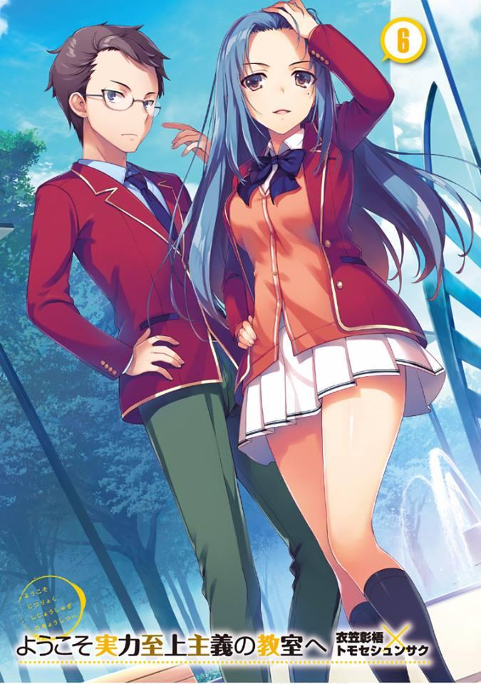
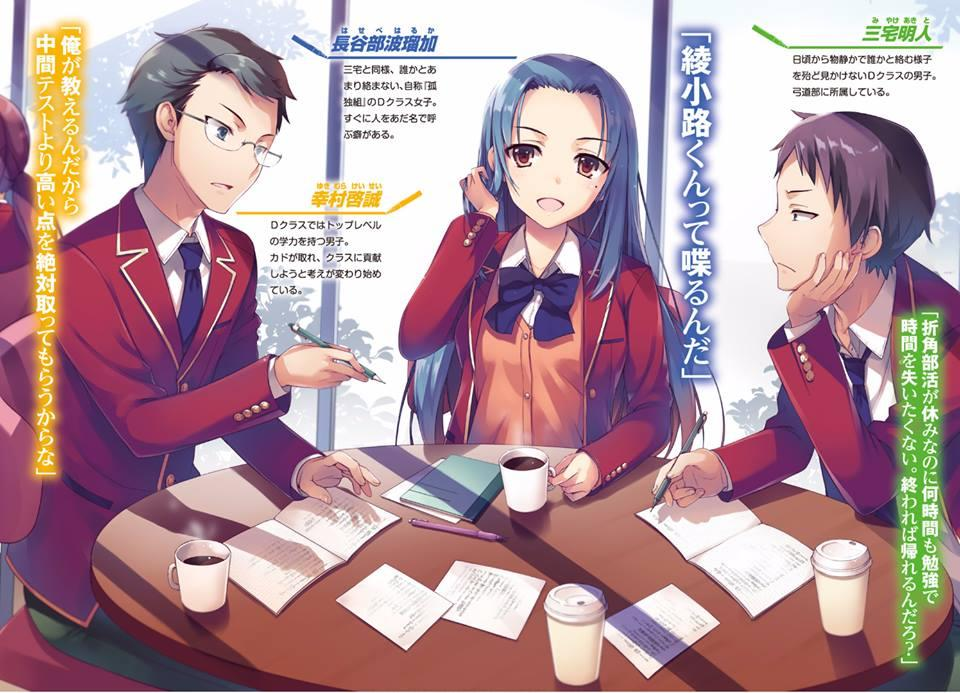
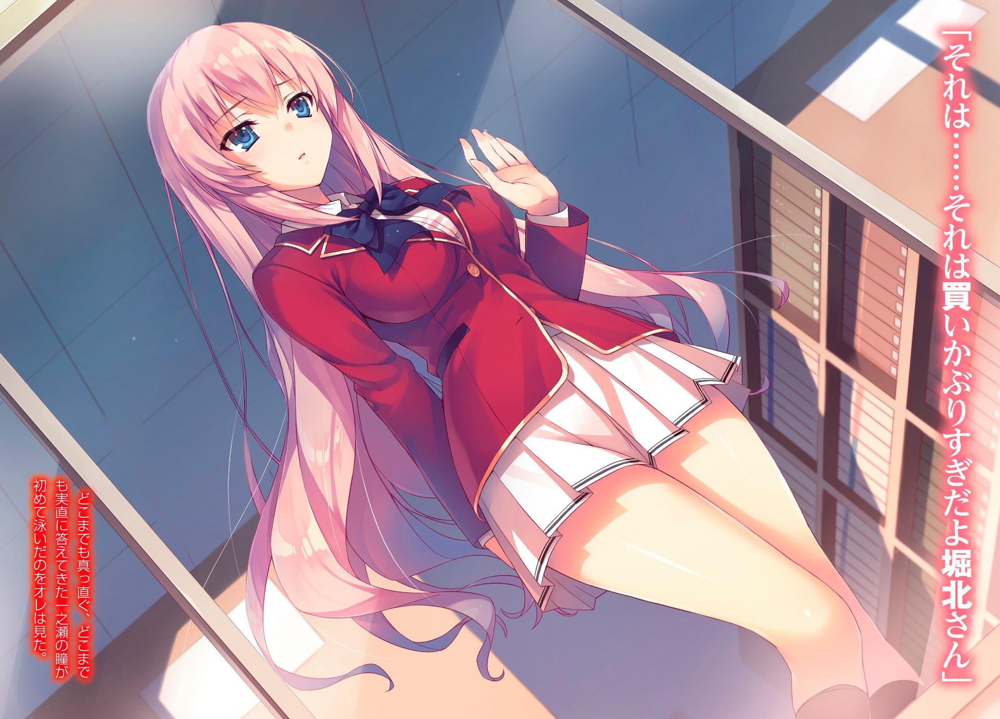
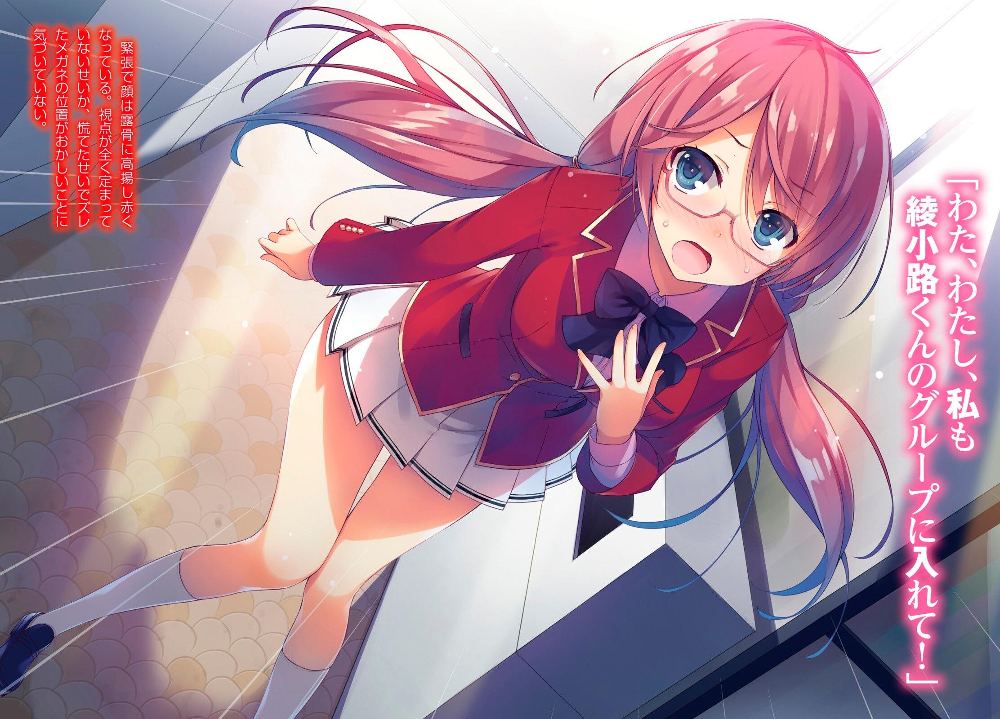
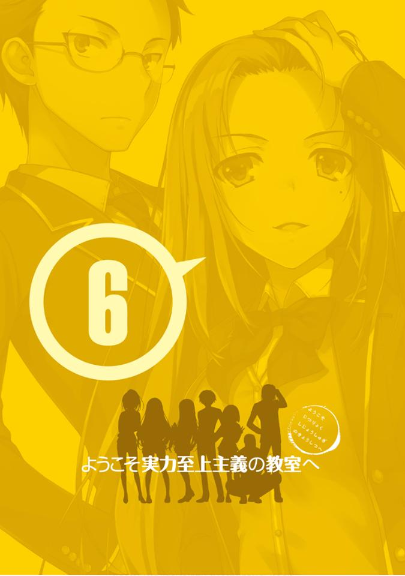
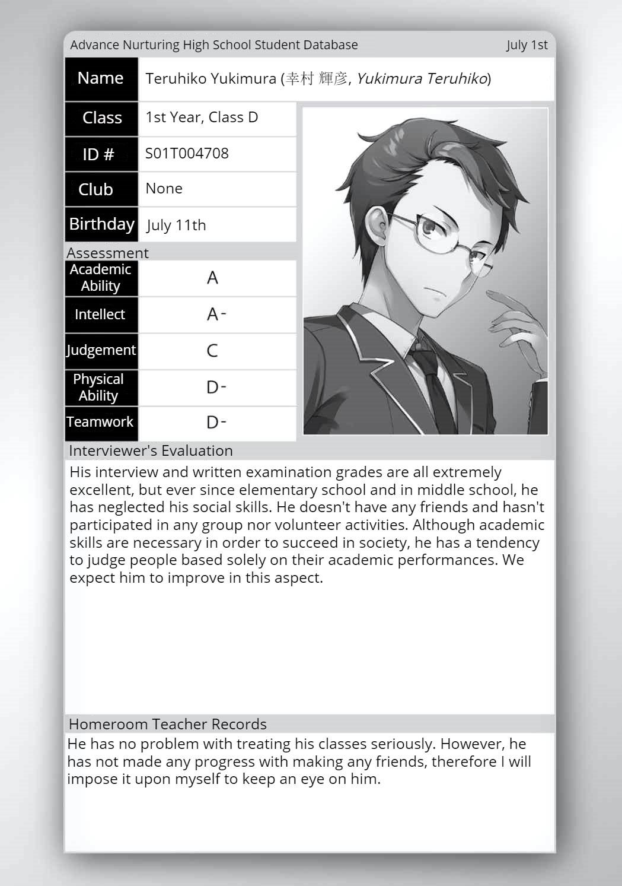
GLADHEIM
TRANSLATIONS
Youkoso Jitsuryoku Shijou Shugi no Kyoushitsu e - Volumen 6
EL MONÓLOGO DE KUSHIDA KIKYOU
¿La gente realmente vive según sus ideales? Yo sí. Estoy viviendo como soy idealmente. Siempre supe que fui bendecida incluso comparada con mis compañeros. Tengo buena memoria y me destaco en lo académico. También soy buena en los deportes. También tengo confianza cuando se trata de socializar. También soy una persona muy flexible y puedo adaptarme a casi cualquier situación. Así que:
“¿Soy un ser humano perfecto?”
Si me preguntas eso, la respuesta es “no”. Hay chicas mucho más hermosas que yo, hay personas más inteligentes que yo y muchas más que son mejores en deportes que yo. Eso es obvio. Pero ya sabes, hay cosas que los humanos no queremos perder sin importar qué. Ya sea apariencia o habilidad académica o videojuegos o canto. Cuando pierdes en algo en lo que se supone que eres bueno, cualquiera se siente frustrado. Y tengo un gran complejo con respecto a eso. Cada vez que pierdo con la gente, mis sentimientos siempre se agitan demasiado. Y con cada derrota, una oscuridad crece en mi corazón. A veces incluso vomito por el intenso estrés. La realidad es así de cruel. Sé que estoy por encima del promedio, pero tampoco soy una genio.
Me sentía bien cuando era niña, todos me elogiaban como una genio, incluso cuando todo lo que hice fue hacer tareas simples. Me sentía bien cuando la gente me alababa, mi corazón bailaba de alegría. En todo lo que hacía en mi clase, era la mejor. Era la heroína de la clase y también la ídolo. Pero cuando llegué a la secundaria, comencé a encontrarme con personas que eran superiores a mí en diversas áreas. Había personas a las que no podía vencer.
Esa realidad se hundió fuertemente en mi corazón. Y entonces busqué desesperadamente un escape de esa realidad. Algo en lo que no perdiera ante nadie. Quiero que la gente me respete. Quiero que la gente me envidié. No puedo hacer eso en lo académico ni en los deportes. La respuesta a la que llegué fue: conseguiré que la gente “confíe” en mí más que en nadie.
Al ser más confiable que nadie, nuevamente pude sentir una sensación de superioridad. Extendí mi amistad a chicos tan desagradables que nadie se molestaría con ellos, o a chicas tan feas que te revolverían el estómago. Maté mis emociones y puse una sonrisa falsa, una bondad falsa. Y entonces me hice popular. Le agradaba a compañeros de clase, senpais, kouhais, profesores e incluso extraños. En cuanto a ser querida por otros, me convertí en la más fuerte.
Y para ser sincera, el día que me di cuenta de eso, estaba realmente feliz. Y
también me di cuenta de algo más ese día, “la confianza” es el producto más caro que cualquier otra cosa. Y que detrás de esa “confianza”: mentiras,
“secretos”. Cuando una persona realmente confía en otra, le dirá todos sus secretos.
Conocía las ansiedades ocultas del chico más popular de la clase, así como los temores de la persona más inteligente. Desde el más profundo de los secretos hasta el más trivial, tomé control de ellos uno por uno. Y cada vez que alguien me confiaba sus secretos más profundos, mi corazón bailaba de alegría.
Temblaba de un placer abrumador cada vez que obtenía el secreto de alguien, uno que era tan importante para ellos como su propia vida. Soy la persona más confiable que existe, y el objetivo de mi vida es mantenerlo así. Pero no sabía en ese momento que mantener los secretos así, haría que eventualmente viviera mis días en constante estrés.
Y luego--- “ese” incidente sucedió. Pero no se pudo evitar. “Ellos” fueron los que me rechazaron. Entonces no se pudo evitar. Ya que me lastimaste, no puedes quejarte si te lastimo también. Lastimaré a otros antes de que me lastime yo.
Eso es obvio ¿no? Pero la imagen de mi “yo ideal” que todos veían se rompió. El respeto y la envidia por mí desaparecieron, reemplazados por precaución y odio.
No se suponía que fuera de esa manera. Solo quería una cosa. Ser “confiable”
para todos. Para sentir esa superioridad una vez más. Y entonces juré que nunca dejaría que sucediera nuevamente, mi corazón se sintió emocionado por mi nueva vida en la preparatoria. Esta vez lo haré funcionar. Decidí eso. Pero aun así, aun así. El primer día que se suponía que sería un nuevo comienzo para mí, se convirtió en una pesadilla. Encontré a Horikita Suzune en el autobús a la escuela.
Aquí, ella es la única que sabe acerca de ese “incidente”. Y mientras ella exista, nunca conoceré la verdadera paz.
LA CAMBIANTE CLASE D
El festival deportivo finalizó a mediados de octubre, la época del año en que empieza a enfriar.
La escuela celebró elecciones generales para decidir quién estaría a cargo del próximo consejo estudiantil. Inmediatamente después de que concluyó la elección, la escuela dio inicio a la ceremonia de entrega del consejo estudiantil.
Fue un evento a gran escala que reunió a estudiantes de toda la escuela en el gimnasio. Sin embargo, para la mayoría de los estudiantes de primer año, fue una experiencia sin incidentes. Estaban somnolientos, pero intentaban permanecer en silencio y respirar lentamente para que los profesores y los de las clases superiores no se dieran cuenta.
— Ahora, aquí están algunos comentarios finales del presidente del consejo estudiantil, Horikita.
Tras el discurso del moderador, Horikita Manabu se acercó lentamente al micrófono en el escenario.
Si fuera la Horikita de antes, simplemente ver a su hermano en el escenario la haría acobardarse.
Pero ahora, mientras observa la entrega de su hermano, lo mira firmemente.
— Estoy orgulloso y agradecido de haber podido guiar a los estudiantes durante casi dos años. Muchas gracias.
Después de su breve declaración, el hermano de Horikita se retiró en silencio y regresó a su posición original.
No hubo palabras conmovedoras en su discurso. Se podría decir que fue una declaración solemne y siguiendo sus obligaciones.
Sin embargo, no parece que la ceremonia de entrega termine con esto.
Los oficiales del consejo estudiantil en el escenario con él se mantienen firmes, sin romper su sólida postura.
— El presidente estudiantil Horikita ha trabajado muy duro para todos ustedes.
Ahora, den la bienvenida al nuevo presidente del consejo estudiantil, estudiante de segundo año de la Clase A, Miyabi Nagumo.
Miyabi Nagumo, el nuevo presidente del consejo estudiantil, caminó y se paró frente al micrófono.
Entre los miembros del consejo estudiantil que lo observaban cálidamente en el escenario, se podía ver la figura de Ichinose.
— Soy Miyabi Nagumo de la Clase A de segundo año. Presidente Horikita, realmente aprecio su estricta y amable guía hasta el momento. Me siento honrado y me gustaría rendirle homenaje. Estoy agradecido por poder acompañar al legendario presidente quien ha jugado uno de los mejores roles de liderazgo en la historia de esta escuela.
Con eso, se inclinó profundamente en dirección del hermano de Horikita, y luego volteó para encarar a los estudiantes.
— Permítanme presentarme nuevamente. Mi nombre es Miyabi Nagumo. Seré el próximo presidente del consejo estudiantil de la Advanced Nurturing High School. Por favor, cuiden de mí.
Es muy diferente de la actitud que había vislumbrado en el festival deportivo.
Nagumo fue muy amable y gentil. La expresión y actitud que mantuvo durante el tramo final de la carrera de relevos había desaparecido por completo. Pero siento que solo nos ha mostrado la superficie.
Nagumo sonrió ligeramente para cambiar la atmósfera calmada.
— Iré directo al grano. En primer lugar, prometo cambiar los términos y el método de nombramiento del consejo estudiantil, así como la mecánica de las elecciones generales. Esto significará cambiar la fecha de las elecciones de diciembre a octubre. Este cambio será un intento de pasar a una nueva generación para el consejo estudiantil y creo que entonces será cuando el nuevo consejo estudiantil avance hacia una nueva era. Cambiaré el mandato del presidente y oficiales para que sea por tiempo indefinido para que puedan servir hasta la graduación. Al mismo tiempo, voy a abolir las
restricciones actuales sobre el número de oficiales del consejo estudiantil. En otras palabras, siempre que sea una persona excelente y necesaria, pueden convertirse en miembro del consejo estudiantil en cualquier momento, independientemente del número de vacantes que estén abiertas. En el caso de que alguien sea juzgado como no apto para el cargo, estableceré un sistema de voto mayoritario en las reuniones para expulsarlo de su puesto.
Como punto de partida, permítanme hacer una declaración a los estudiantes, maestros y líderes del antiguo consejo estudiantil que se han reunido aquí. El sistema escolar del futuro... Destruiré todo lo que ha sido preservado por los consejos estudiantiles anteriores por el bien de la escuela.
Habló con tanta fuerza que parecía negar todos los méritos del ex presidente del consejo estudiantil que estaba detrás de él.
— Originalmente quería implementar este nuevo sistema de inmediato, pero desafortunadamente no puedo hacer eso. Esto se debe a que el nuevo presidente del consejo estudiantil estará sujeto a varios tipos de limitaciones una vez que asuma el cargo.
Nagumo miró a Horikita, el ex presidente del consejo estudiantil, y luego volteó hacia los estudiantes.
— Prometo que habrá una gran revolución en el futuro cercano. Los estudiantes con fortaleza subirán a la cima y los que no tengan fuerza caerán al fondo.
Convertiré esta escuela en una verdadera meritocracia, así que por favor muéstrenme todo lo que pueden hacer.
El gimnasio fue inmediatamente silenciado por su declaración, pero casi todos los estudiantes de segundo año pronto comenzaron a gritar de alegría y se volvieron bastante ruidosos. Tal vez había una batalla entre los de segundo y los de tercero de la cual no sabíamos. Fue un evento que me hizo sentir de esa manera.
PARTE 1
Uno de esos eventos terminó, y después de la escuela en cierto día, estábamos ya a mediados del segundo semestre.
Mis alrededores comenzaron a cambiar poco a poco. La clase D pasó la isla deshabitada y el festival deportivo con ritmo lento, pero comenzamos a unirnos como clase. El pequeño círculo de amigos de todos se expandió gradualmente, y las personas que pensaban que no podían llevarse bien lo estaban haciendo cada vez mejor entre ellos.
La actitud de todos hacia las clases también ha mejorado significativamente. En el pasado, la Clase D tuvo un problema con los estudiantes que llegaban tarde, dormían, hablaban durante clase y perpetraban todo tipo de disturbios. En este sentido, Sudō especialmente mostró cambios.
Después del festival deportivo, aunque el número de días desde entonces era relativamente pequeño, está claro que su actitud general hacia la escuela ha mejorado. De vez en cuando puede verse algo somnoliento en clase, pero eso probablemente se deba al impacto de su intensa práctica en el club de baloncesto. Incluso si está privado de sueño, siempre se toma el tiempo de escribir notas. Esto es porque es necesario para él poner sus estudios en orden por el bien de Horikita y el futuro de la clase. Tal vez la vigilancia de Horikita durante la clase también ha tenido que ver.
La actitud violenta que tenía con sus amigos Ike y Yamauchi se había vuelto más gentil.
No quería que la opinión de su amada Horikita sobre él empeorara al permitir que ella lo viera desbocarse vergonzosamente. Supongo que esto fue lo que lo motivó principalmente a cambiar.
En resumen, Sudō está creciendo constantemente y ha comenzado a ganar una mejor reputación entre sus compañeros de clase.
Al mismo tiempo, hubo cambios no solo en la reputación de Sudō, sino también en la mía.
Si eso es bueno o malo, es difícil de decir.
— ¿Estás solo?
Mientras estaba calibrando la situación, me llamaron desde el asiento a mi lado.
— ¿Es malo estar solo?
Mi vecina Horikita pareció reírse. La miré inexpresivamente.
— Tus amigos más queridos, Ike-kun y Yamauchi-kun. Te han estado invitando con bastante menos frecuencia.
— ¿Es así?
El hecho de que ella siempre tiende a ir al extremo revela las partes malas de su personalidad.
— Bueno, me equivoqué. En el almuerzo pareces estar solo en estos días.
Después de la escuela, como puedes ver, también.
Vimos como Ike y Yamauchi salieron de la clase con El Profesor. ¿Van juntos rumbo al centro comercial Keyaki? (Nota: El Profesor es el apodo de Hideo Sotomura.)
Pensé que parecía estar tan calmado como Buda, pero Horikita veía a través de todo.
Cierto. Esto es parte de los cambios de mi reputación. Después del festival deportivo, ha sido raro que las dos personas a las que me había acercado me hayan invitado a salir. No, es más como si me hubieran ignorado por completo.
— Es una lástima. Pensaban que eras igual a ellos, un grupo de estudiantes inútiles, así que te pudiste mantener con ellos. Pero en realidad les estabas escondiendo una fuerza física enorme.
— ¿Qué es una fuerza física enorme? En el mejor de los casos es solo que mis pies son un poco más rápidos.
— Pero tu trabajo de pies es rápido, especialmente para un estudiante. Es muy rápido. Además, tal vez también hayan empezado a notar otros acontecimientos extraños. Probablemente notaron que tu medición de fuerza de agarre fue más alta que la media. Deberías saberlo, ¿no? la tendencia
básica a odiar a los demás por ser excelente, y tu situación es que has estado ocultando tu excelencia.
Sé que eso es evidente. Sin embargo, también tengo que admitir que no entiendo claramente lo que es el promedio. Yo creía que solo estaba “corriendo un poco rápido”, es la verdad.
— Disfruta tu vida solitaria.
Horikita lanzó una mirada sarcástica antes de salir del salón de clases, su largo cabello se movía.
A pesar de su ser solitario, su actitud dominante es al menos un poco respetable.
La vi irse, y en ese momento Karuizawa, que todavía estaba en el aula me lanzó una mirada indescriptible. Nuestros ojos apenas se encontraron, pero miró hacia otro lado como si no tuviera intención de mirarme en particular. Había claras intenciones detrás de su mirada, pero sin decir nada, ella siguió a Horikita fuera del salón de clases. La longitud de su falda ondeando era mucho más que la de las otras estudiantes. Es como tratar de sobrevivir en un mundo que está a uno o dos centímetros de error.
— ¿Cómo está ella... bueno, está bien.
— Oye, oye, Ayanokouji-kun.
Mientras pensaba qué hacer, una visitante inesperada apareció a mi lado.
Ella era el mismo tipo de chica ardiente que Karuizawa. Sato... No recuerdo cuál es su nombre. Es una chica muy agradable que ha sido amistosa en el pasado con Ike y Yamauchi en su grupo de chat. También participé en sus chats de grupo, pero casi no tenemos intereses en común.
Aunque ella es una compañera de clase, es una con la que apenas hablo.
Es una chica que quiere estar cerca de los chicos y se siente tan popular como Kushida con las chicas, pero no es tan popular con el sexo opuesto.
Ike había dicho que parece muy zorra y debe estar acostumbrada a los hombres, por lo que la había menospreciado. Qué hombre de corazón tan complicado.
En lo que respecta al momento de la visita, podría haber estado esperando a que estuviera solo.
Satō miró alrededor del salón con nerviosismo.
— ¿Qué pasa?
Frente a estas circunstancias tan extrañas, solo puedo hacer esta pregunta.
— Sí, bueno. Es un poco...
No estaba siendo muy clara. Desafortunadamente, no pudo especular qué es lo que quiere.
Me falta demasiada información sobre la estudiante Satō.
— Bueno, ¿cómo puedo decirlo? ¿Puedo tomar algo de tu tiempo? Tengo algo que decir.
Esto es bastante extraño. Subí un poco la guardia, pero no soy lo suficientemente valiente como para rechazar esta oferta. Es más fácil reunir suficiente coraje para aceptar que reunir el valor para negarse.
— Es un poco incómodo aquí, ¿está bien si vamos a otro lado?
Antes de responder, Satō pareció predecir que no me negaría, y me ofreció cambiar de lugar. Obedecí y la seguí.
— Ah...
Cuando estaba a punto de salir del salón de clases, Sakura hizo un sonido como si tratara de decir algo, pero no salió nada de su boca y terminó dándose la vuelta.
Salimos al pasillo que da al corredor que conduce al gimnasio. Durante todo el día después del almuerzo, está abarrotado porque los estudiantes que juegan y practican en el gimnasio utilizan este corredor para moverse. Pero ahora probablemente todo el mundo esté almorzando, así que esta es una de las áreas menos pobladas. Puede ser el lugar ideal para hablar cosas.
Parece que Satō no desea encontrarse con otras personas. Se detuvo y luego se dio la vuelta.
— Voy a preguntarte algo un poco extraño... Ayanokouji-kun, ¿hay alguien con quien estás saliendo?
— ¿Eh?, ¿qué significa eso?
— Bueno... literalmente hablando, significa que si tienes novia... ¿qué tal eso?
Si me dieran la opción de elegir entre “sí” y “no”, no habría tenido la capacidad de responder nada más que “no”. Decir esto es como recalcar lo impopular que soy, y aunque me siento reacio a hacerlo, no tiene sentido mentir, así que le respondí con sinceridad.
— No...
— Hmm, ya veo... ¿Puedo tomar eso como que estás buscando novia?
No me menospreció, ni me tuvo lástima, sino que mostró una pequeña sonrisa feliz.
En este punto, comencé a entender cómo van las cosas.
¿Es esto una trampa con el objetivo de incriminarme? Estaba en guardia, pero no había señales de que alguien se escondiera cerca. Por supuesto, tampoco nos han seguido desde el aula. Entonces, o la misma Satō, o una amiga suya parecen pensar que soy un buen material para novio. ¿Por qué de repente en este momento? ¿Tiene esto que ver con la forma en que Horikita pudo concluir que tengo una gran capacidad física?
— Si quisieras empezar siendo solo amigos, bueno... ¿Podrías intercambiar números de teléfono conmigo?
Parece que no es una amiga de ella la que lo está pidiendo, la propia Satō
parece ser la que está interesada.
Nunca se me ocurrió que el día llegaría en que una chica realmente me lo pidiera.
Esto es como el acto antes de la confesión.
— Bueno, entiendo.
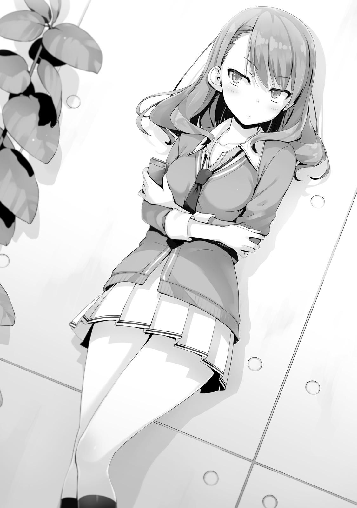
No puedo encontrar ninguna razón para rechazar su solicitud de intercambiar nuestros números de teléfono.
Entrar en una relación en el futuro sería dar pasos agigantados. Por ahora, solo me piden que intercambie números telefónicos.
— Bueno, eso es todo.
El teléfono muestra la página de registro del contacto completado. Aumentar el número de contactos de chicas es algo feliz.
Después de esta breve interacción con Satō, había una extraña tranquilidad en la atmósfera.
— Voy a hacer una pregunta que es un poco incómoda. ¿Por qué de repente me pides mi información de contacto?
Satō se sonrojó un poco y no abrió los ojos.
— Preguntarme por qué... Durante el relevo del festival deportivo... ¿Debo decir que estuviste muy genial? ¿O debería decir que has estado tan cerca y no te he mirado en absoluto? pensaba que el mejor chico de la clase era Hirata-kun, pero él es el novio de Karuizawa-san, por lo que está fuera de discusión.
Cuando terminó de decir esto, abrió los ojos, me miró y reajustó torpemente lo que había dicho.
— Ah... ¿debería decir que no creo que seas peor que Hirata-kun? Para ser sincera, después de que he mirado más de cerca, pareces ser más guapo que Hirata-kun. También te ves muy confiable y gentil... ¡Eso es todo!
Tal vez la sensación de vergüenza había crecido en ella, ya que no pude escuchar la última parte muy bien, y Satō inevitablemente se fue como el viento.
Mis pensamientos no podían seguir el ritmo de lo que había sucedido con ella, así que me quedé inmóvil.
Estaba en una situación inesperada en un lugar inesperado con una persona inesperada. Aunque nadie sabe lo que depara el futuro, de ninguna manera esperaba que esto realmente sucediera. ¿Qué se supone que debo hacer al respecto? No me siento bien o mal con respecto a Satō, solo la considero una compañera de clase normal. ¿Esto significa que lo correcto es rechazar su confesión?
No, ella no dijo que quisiera estar conmigo o que le cayera bien. Me preguntaron sobre mi situación con respecto a una relación y me pidieron mi información de contacto. Aunque asumo un poco sus intenciones, solo me pidieron que fuera su amigo e intercambiara contactos. Si rechazo su confesión, tal vez ella me escupa diciendo que entendí algo mal. Eso sería muy embarazoso.
Ser espectador de una confesión está totalmente bien, pero cuando uno se convierte en el objetivo, simplemente se vuelve problemático. Ahora entiendo cómo se sentía Sakura antes de que Yamauchi se le confesara.
Mientras regresaba al aula, meditando sobre la complicada situación, me encontré con Katsuragi y Yahiko de la Clase A.
Pensé que no había necesidad de hablar, pero Katsuragi se detuvo y le dijo a Yahiko:
— Lo siento, adelántate. Tengo algo que decirle a Ayanokouji-kun.
Yahiko subió la guardia, pero como eran las instrucciones de Katsuragi, inmediatamente asintió con la cabeza y se fue.
— Parece que Horikita no está contigo.
— No siempre estamos juntos.
¿Qué debo decir? Comparado con hablar con las chicas, hablar con los chicos es muy fácil.
Considerando esto, me siento como un idiota por luchar para hacer amigos.
— Es verdad. Para ser honesto, me sorprendió la carrera de relevos en el festival deportivo. Probablemente sea algo que nadie más en la escuela hubiera esperado.
El tema de la conversación es, por supuesto, esto. No me sorprendió en absoluto, y dije con indiferencia:
— La Clase D no siempre seguirá siendo la perdedora.
— Está bien, pero la mayoría de los estudiantes de la Clase D también parecían sorprendidos. Siempre y cuando sus reacciones no fueran una actuación,
parece que hay un límite en la cantidad de personas que saben qué tan rápido puedes correr.
Katsuragi es hábil... Es listo por haber observado tan bien lo que sucedía en esa confusión.
La mayoría de la gente solo me hubiera prestado atención a mí y al presidente del consejo estudiantil. No solo prestó atención a su clase, sino que también observó cuidadosamente a las otras clases.
— Eres libre de imaginar lo que quieras, pero no voy a decir nada.
— No importa. No estoy tratando de sacarte nada.
— Si se trata de una clase hostil, ¿no quieres tanta información como puedas obtener? O, desde el punto de vista de la Clase A, ¿no ves a la Clase D
como adversaria?
Katsuragi mostró una expresión ligeramente enojada y dio unos pasos hacia adelante, deteniéndose en la ventana. Su mirada se movió hacia afuera.
— En este momento me están llenando con todo tipo de problemas difíciles.
Simplemente no tengo el lujo de prestar atención a otras clases.
— Le dijiste a Horikita que prestara atención a Ryuuen.
Solo dije información que Katsuragi sabía.
— Ese tipo siempre se mueve sin tener en cuenta su imagen para poder ganar.
Hace lo que sea necesario para llegar a la cima, incluso si tiene que utilizar cosas como la intimidación y la violencia.
Sin embargo, Katsuragi no debe estar cansado por Ryuuen. Sería mejor decir que debe tener cuidado con Sakayanagi que está al acecho en la Clase A. A pesar de eso, no lo mencioné.
Sakayanagi es una estudiante que conoce mi pasado y está llena de misterios.
Si no manejo la situación con cuidado, me morderá la serpiente.
— ¿Intimidación y violencia? Sería peligroso si la escuela se entera.
— Él es el tipo de persona que hará hábilmente ese tipo de cosas y de forma encubierta. Por favor, sigue pidiendo a Horikita que no lo menosprecie.
Aunque con todo esto pueda parecer que estoy ayudando a un enemigo y te haga desconfiar, Ryuuen es un enemigo común para la Clase A, la Clase B y la Clase D.
Es cierto que la Clase C está luchando contra todas las otras clases. Sin embargo, hay evidencia de que Katsuragi y Ryuuen se han unido previamente.
No estoy seguro si puedo creerle incondicionalmente.
Mientras pienso en esto, Katsuragi parece sentir mi desconfianza.
— ¿No me crees?
Debido a su preocupación, decidí profundizar un poco más en lo que él sabe.
— Para ser sincero, no puedo creerte por completo. Es difícil decidir si quiero decirle a Horikita lo que has dicho. No puedo decirte la fuente, pero hay rumores de que estabas asociado con Ryuuen. ¿Son solo rumores?
— ... ¿Dónde escuchaste eso? No... No hay necesidad de profundizar en eso.
Katsuragi respondió de inmediato. No perdió la compostura y continuó:
— Ahora me arrepiento. Aunque fue una sensación momentánea y no había margen de maniobra, no debería haber corrido el riesgo de involucrarme con él. Por eso quiero que tomes este consejo. Si te involucras con ese tipo, estarás condenado.
No sé cuáles fueron los pros y los contras, pero Katsuragi debe haberlo experimentado él mismo. La credibilidad de sus palabras no está garantizada, pero su solicitud es inexplicablemente persuasiva.
— Sabía desde el principio que existía riesgo al unir fuerzas con ese tipo.
— Entonces, ¿cuál es la valía de aceptar tu propuesta para unir fuerzas en su contra?
Katsuragi se rió para sí mismo.
Pensé que era innecesario, pero no había calma en la cara de Katsuragi. Él no debería estar ansioso o molesto por mi pregunta, así que decidí indagar aún más.
— Sé que estás trabajando para detener a Ryuuen, pero ese problema debería pertenecer a la Clase A y la Clase B. Vi los puntos de clase que se mostraron a principios de octubre.
Katsuragi cerró la boca, parece que es indiferente al respecto.
Después del final de la prueba de la isla deshabitada, la clase A aumentó sus puntos de clase a 1 124. Fue una situación positiva para ellos al principio, pero hubo una pérdida significativa de puntos durante el segundo examen especial y el festival deportivo, llevando la clase A a 874. En contraste, la clase B no estaba tan atrás con 753. Además de haber comenzado con los mismos puntos, esta era la diferencia más cercana entre cualquiera de las clases en este momento.
Para complementar esto, la Clase C tiene 542, mientras que la Clase D tiene 262.
— Realmente solo puedo admitir que esta no es la situación en la que debería estar la clase A. Fui engañado por la estructura de la escuela. Mi incapacidad para comprender perfectamente el sistema de puntos de clase también es un factor.
No mencionó descuidadamente el tema de Sakayanagi.
Aparte de Sakayanagi, como dijo Katsuragi, también es cierto que la escuela tiene un sistema de puntos engañoso.
El sistema parece simple, pero hay muchos apartados difíciles de entender y confusos que se recompensan y eliminan.
En retrospectiva, debería haber sido fácil de detectar. Inmediatamente después de la admisión, la escuela realizó una revisión rigurosa sobre los retrasos, las ausencias y la actitud en clase. De hecho, nuestra Clase D se vio tan afectada que perdimos todos los puntos de clase con los que empezamos, una experiencia que permanece fresca en mi memoria.
Ahora, sin embargo, la actitud en la clase y las demás cosas, no reflejan tanto el aumento o disminución de puntos.
Por supuesto, todos los estudiantes han comenzado a tomar las clases en serio, pero no estoy seguro de que las deducciones por las penalizaciones hayan desaparecido por completo.
Ahora que lo pienso, ese podría haber sido el “Examen especial” original.
— Nací en el campo y fui a una secundaria local. Este lugar es muy diferente de la vida en la preparatoria que siempre imaginé.
Después de que Katsuragi lo hubiera dicho, se contuvo un poco por la frustración.
— Aunque todos lo sabemos, esta escuela es un lugar incomprensible e increíblemente estructurado. Recientemente lo he sentido de nuevo. Los estudiantes del mismo grado deben ser amigables entre sí y nunca deben ser hostiles entre ellos.
No hay duda de que esto es diferente de una vida escolar normal. La escuela ha creado un sistema afinado que desanima a los estudiantes a llevarse bien con los estudiantes de otras clases. También se puede decir que la escuela está construida en base a la competencia. Dependiendo de la situación, habrá casos en que el odio eventualmente lleve al conflicto. Este es el tipo de escuela a la que asistimos.
De la misma manera, un sistema como este causa que la unión en la clase aumente significativamente.
Bueno, si esta unión existe para cualquier otra que no sea la Clase B es dudoso.
La Clase D ha tenido varias acciones individuales que van en contra del concepto de unión, la Clase C actúa efectivamente como una dictadura, y la Clase A se divide en dos facciones rivales en una lucha de poder. En general, el tema de la unión es una situación difícil para la mayoría de los estudiantes de primer año.
— ¿No te sientes vacilante, Ayanokouji-kun?
— Honestamente, para nada. No afecta mi juicio sobre cuán buena o mala es esta escuela. Si dejas de lado el objetivo de alcanzar o mantener la Clase A, esta es definitivamente una escuela encantadora y conmovedora. Con solo
algo de trabajo duro, los estudiantes no tienen que preocuparse por cosas como la comida y la ropa. Incluso tenemos dinero para gastar en diversión debido a los puntos que paga la escuela. Todo en la escuela está impecablemente bien preparado y pensado.
Esta es una idea compartida por todos los estudiantes que viven en esta escuela.
Mientras no deseemos vivir como dioses, todos le darían la bienvenida al entorno actual. Katsuragi tampoco pudo refutar esto.
— Estoy de acuerdo. Si hay algo de qué disgustarse, es que el entorno es demasiado perfecto. No creo que esta sea la forma en que debería experimentarse la vida de un estudiante de preparatoria. Los estudiantes de esta escuela no aprobaron una prueba particularmente difícil o algo por el estilo... Todo es una tontería. A pesar de todo, por favor, dile a Horikita sobre la amenaza que representa Ryuuen.
Fui aconsejado por el hombre reticente y prometí que se lo comunicaría a Horikita.
De hecho, Ryuuen ya está lanzando un ataque completo contra la Clase D en un intento por vencernos.
— ¿También solo quieres vivir en paz? Las preocupaciones nunca parecen terminar... para nosotros dos.
No pude evitar murmurar eso.
PARTE 2
Esa noche, mientras estaba relajándome en mi habitación, Karuizawa llamó.
Habíamos intercambiado información de contacto antes, pero estaba un poco sorprendido de escucharla por primera vez.
— Tengo algo que preguntarte.
Después de contestar el teléfono y ponerlo junto a mi oreja, Karuizawa dijo eso inmediatamente.
— Si puedo responder, está bien.
— Se te ha confesado Satō, ¿verdad?
Me sentí confundido con esa inesperada pregunta. ¿Cómo podía saber eso?
— Permíteme comenzar diciendo que hay muchas chicas en la clase que ya lo saben.
— ¿Con qué rapidez tu red de noticias difunde información? Es más rápido que el Internet. ¿Quién es el origen de esta información?
— ¿A qué te refieres con quién? La fuente es Satō. Me dijeron antes que pensaba confesarse hoy.
¿Es como el uso de información privilegiada o algo así? No, eso no parece correcto...
— ¿Es por eso que me estabas mirando hoy?
— ... ¿De verdad lo notaste?
— ¿Quién se confiesa a quién no debería ser la preocupación de nadie más, por qué se dicen ese tipo de cosas entre ustedes?
— Porque las chicas son así. Es problemático ponerse en contacto después de que sucede.
¿Es como escribir el nombre en tus posesiones?
Los chicos tienen un fenómeno similar, así que tal vez no sea inconcebible...
Aun así, hay algo que no entiendo.
Si hay tanta competencia por la misma persona... ¿No sería mejor si no les dices a las otras chicas ya que el resultado será el mismo?
— Es totalmente diferente. Es molesto si de repente dices que estás en una relación. Dejar que los demás se den cuenta con anterioridad demuestra que todo está bien. De todos modos, me gustaría preguntarte qué respuesta le diste.
No, es angustiante que te pregunten ese tipo de cosas.
— No importa cuál fue mi respuesta, no tiene nada que ver contigo.
— Bueno, no importa... pero no se puede decir que sea irrelevante. Me amenazaste y me obligaste a hacer muchas cosas por ti, por lo que podría terminar siendo atrapada. La red de información de las chicas es muy amplia.
Si los rumores se extienden, será muy estresante para mí. Tendré mayor riesgo de meterme en problemas. ¿Entiendes?
En otras palabras, cuando Satō y yo hablemos, existe la posibilidad de que la información sobre Karuizawa salga a la luz y la ponga en riesgo. Además, podría solo preocuparme por Satō y descuidar la protección de Karuizawa. Mediante algún extraño sistema de lógica, ella ha pensado en este tipo de cosas. No importa cómo lo mire, es obvio que está pensando demasiado en esto.
Parecía tener sentido, pero realmente no tenía mucha lógica. La apariencia, las palabras y las acciones de Karuizawa son inconsistentes con el pensamiento teórico en el que toma parte, pero esta vez lo está forzando demasiado.
— No tienes que preocuparte por eso.
— ¿Eso significa que estás planeando aceptar la confesión?
— No dije eso, ¿o sí?
— Estás diciendo que está bien. Puesto que no lo niegas completamente, lo sabes. Ja, ja, de alguna manera creo que puedo ver a través de ti ¿cierto?
Haciendo uso de esta confesión, probablemente solo estás pensando en algo pervertido ¿verdad? Después de todo, los hombres son ese tipo de criaturas.
Sus ideas salieron a la superficie de una manera exagerada. Es como cuando los padres se sienten tan orgullosos de que su hijo gane el primer lugar en un evento deportivo, que le dicen a otros padres que en el futuro su hijo seguramente se convertirá en atleta olímpico.
— Aunque los hombres sean ese tipo de criaturas, al menos por ahora no tengo ese tipo de sentimientos.
— Pruébalo. Explícame el motivo de tu rechazo.
— ¿Probar? Ni siquiera fue una confesión. Dijo que quería ser mi amiga e intercambiamos información de contacto.
— …Ya veo. Resultó ser ese tipo de sentimiento.
¿Por qué tengo que decirle esas cosas a Karuizawa? Es muy vergonzoso.
— No se trata de aceptar una confesión en absoluto. Simplemente terminó con un intercambio de números telefónicos.
— Hmm... Bueno, aquí dejaremos las cosas por hoy.
La actitud de Karuizawa es muy prepotente.
Ya que la tengo al teléfono, voy a arreglar esto.
— Ahora yo quiero preguntarte algo. No has tenido ninguna interacción con esas chicas de la Clase C desde el crucero, ¿cierto?
— ... Bueno, sí, no ha sido un problema. Al menos por ahora.
Su tono se hizo más débil. Para Karuizawa, este era un evento que no quería mencionar.
— Creo que tomé las medidas apropiadas, pero si pasa algo, debes avisarme de inmediato. Incluso si te amenazan violentamente para que permanezcas en silencio, mientras me lo digas, resolveré el problema al instante.
Karuizawa claramente contuvo la respiración a través del teléfono. ¿Mis palabras fueron demasiado fuertes?
— ...... Lo sé. ¿Qué más debo decir? Si no te soy útil, será muy problemático para mí...
Para poder sobrevivir en esta escuela, Karuizawa debe aferrarse a su estatus actual pase lo que pase.
Para hacer eso, primero debe sellar por completo a las personas que conocen la verdad sobre ella.
Sin embargo, es imposible que las chicas de la Clase C entiendan la situación completa. El problema radica en Ryuuen que trabaja detrás de ellas.
Dependiendo de la situación, puedo terminar teniendo que atacarlo.
No, me temo que ese momento se acerca.
— Entonces, volviendo al tema de Satō, ¿qué piensas hacer? Como intercambiaste información de contacto, hay una posibilidad de que las cosas pasen al siguiente nivel, ¿verdad?
— Estoy adoptando una actitud reservada con respecto a eso. Al menos, no sé nada sobre Sato... Es posible que nunca me contacte con ella.
— Entonces, si Satō se te pega más que esto, ¿la dejarás?
— ¿Qué quieres decir con dejarla? Acabamos de intercambiar contactos.
Personalmente, no creo que yo vaya a iniciar el contacto.
No tenía las agallas para invitarla a una cita, y no estoy seguro de poder llevar la situación a una confesión.
— Sí, ya veo. Que así sea.
Pareciendo algo satisfecha, Karuizawa se preparó para cortar la llamada.
— Karuizawa.
— ¿Qué?
Pensé que no lo haría a tiempo, pero después de decir su nombre, no se cortó la llamada.
— Asegúrate de borrar el registro de nuestra llamada de tu teléfono.
— Lo he hecho desde hace mucho tiempo. Incluso borro los correos.
— Como se esperaba. Bien.
Aún sin instrucciones, Karuizawa parece estar haciendo un buen trabajo.
— Si solo era eso, voy a colgar.
— Sí.
Agregué eso para finalizar la conversación y colgué.
Para ser sincero, me preocupaba si debería decir una cosa más o no, pero me di por vencido.
Juzgué que si discutíamos nuestras suposiciones en esta etapa, solo se convertiría en una carga para Karuizawa.
Aunque llegue el momento, si es Karuizawa, debería ser capaz por lo menos de lidiar con eso.
Parece que inevitablemente tendré que tomar medidas pronto.
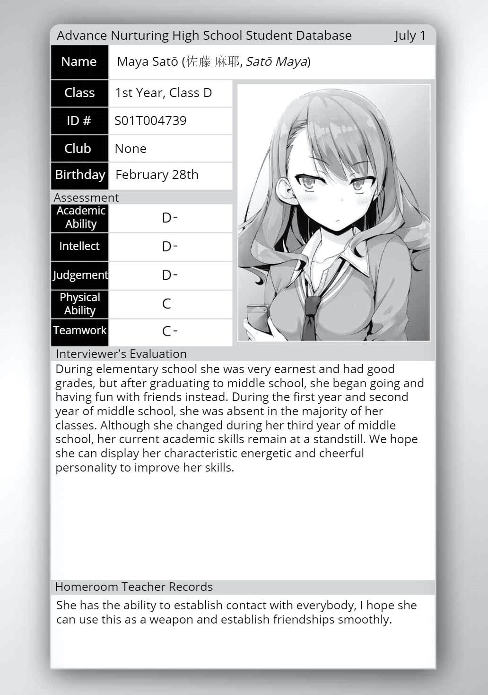
PAPEL ALEATORIO
Un día, una atmósfera pesada se cernía sobre la clase.
Sin embargo, esta atmósfera no era pesimista. Estaba llena con la cantidad justa de tensión.
La primera en asimilar esto fue la maestra de la Clase D, Chabashira-sensei.
— Por favor, vayan a sus asientos. Todos ustedes parecen haber hecho muchas preparaciones.
Tan pronto como entró en el salón de clases, la atmósfera rápidamente se hizo más pesada y se volvió más solemne.
Comparado con antes, la clase se mostraba bastante natural. En esta atmósfera respetuosa, Chabashira-sensei no ocultó su sorpresa.
— Todo el mundo parece bastante serio. Me es difícil creer que todos aquí forman parte de la Clase D.
— Eso es porque hoy es cuando anuncia los resultados del examen parcial,
¿verdad?
Ike habló con una mirada ligeramente nerviosa en su rostro. Chabashira-sensei respondió con una sonrisa astuta.
— Eso es perfectamente cierto. Se les exige que se vayan inmediatamente si no pasan los exámenes parciales o finales. Ya les dije esto antes, así que todavía debe estar fresco en sus recuerdos. Es natural estar nervioso o ansioso, pero ninguno de ustedes tenía la mentalidad adecuada hasta ahora.
Me alegra verlos madurar a todos.
Chabashira-sensei elogió la nueva y nunca antes vista actitud de sus estudiantes, pero eso no significa que nuestras calificaciones sean mejores. El único cambio real ha sido en nuestra mentalidad.
Como algo rutinario, Chabashira-sensei se atrevió a decir esto.
— Sin embargo, necesitarán estar preparados para las consecuencias si han reprobado. Así que ahora voy a publicar los resultados del examen parcial.
Asegúrense de no confundir su nombre y calificación.
La razón por la que nos recordó esto es precisamente porque esta advertencia es genuina. Si alguien no puede aceptar sus calificaciones y reacciona violentamente, la escuela no dudará en responder con dureza con la amplia evidencia de las cámaras instaladas en cada aula y que observan a los estudiantes.
— De verdad, puedo ver las calificaciones de todos en el examen.
— Por supuesto. Es una de las reglas de la escuela.
Independientemente de la disposición de los alumnos para que se muestre su información personal, los resultados de todos los alumnos de la Clase D se publicaron en la pizarra. No hay absolutamente nada de privacidad. Los resultados siempre se revelan sin reservas. Del mismo modo que la tabla de rendimiento de un vendedor se publica para toda la empresa y revela a los que se encuentran en la parte superior y a los que están en la parte inferior.
En casos como estos, los que más se destacan son aquellos con calificaciones particularmente buenas o malas. Los que se quedan atrás son los que sufrirán y se verán sometidos a la presión egoísta y al desprecio de su medio ambiente.
— Para todas las asignaturas, está bien considerar que la calificación aprobatoria es una de 40 puntos o más. Aquellos que no cumplan con este estándar serán expulsados.
El umbral para aprobar los exámenes parciales fue casi el mismo que para los exámenes anteriores, pero la situación es un poco diferente.
— Las calificaciones anunciadas a partir de ahora también reflejan sus resultados en el festival deportivo. En términos de resultados, aquellos que alcanzaron puntajes altos y llegaron al éxito en el festival obtuvieron un puntaje superior a 100 puntos. En estos casos, el puntaje se tratará como un puntaje perfecto.
Los diez estudiantes que lograron los peores resultados durante el festival deportivo tendrán una sustracción de 10 puntos en sus exámenes parciales.
Sotomura de la Clase D tuvo una de las peores actuaciones en todo el grado, por lo que era una de las personas que tenía que obtener 10 puntos más en todas las materias.
Sin embargo, los estudiantes que no recibieron penalizaciones como Ike y Sudō
tenían expresiones muy rígidas. Un sistema de expulsión inmediata debido a una sola calificación reprobatoria impone una pesada carga a todos los estudiantes, tanto física como mentalmente.
Los estudiantes observan atentamente mientras los resultados de la prueba se publican lentamente en la pizarra.
Sin embargo, Horikita no mostraba impaciencia por ver las puntuaciones.
— ¿¡Oh!? ¿¡Oh!? ¡¿Estás bromeando!?
El ranking de los resultados comenzó con el puntaje más bajo. En otras palabras, todos esperaban que Sudō, quien fue el último en los exámenes de parciales y finales del primer semestre, se colocara en el último puesto una vez más. Sin embargo, el primer nombre publicado fue “Yamauchi Haruki” junto con sus calificaciones en varias asignaturas. El siguiente fue “Kanji Ike”, seguido de Inogashira, Satō y luego Sotomura. Sotomura usualmente siempre estaba un poco bajo, pero que él bajara tanto es indudablemente debido a la influencia de la penalización del festival deportivo.
— ¡Qué crisis! ¿En serio estoy en último lugar?
Afortunadamente, tenía más de 40 puntos en cada materia, y su calificación más baja apenas pasaba con 43 puntos en inglés. Su puntaje promedio ni siquiera alcanzó los 50 puntos. Después de recibir estos resultados, Yamauchi tuvo la sensación de estar muerto por un instante. Una cantidad sustancial de sudor frío brotó en su cara y cuello.
Las calificaciones de Sudō fueron más sorprendentes. Hasta el día de hoy, se había posicionado constantemente en la parte inferior de la clase. Sin embargo, con este examen, subió un total de 12 lugares. Incluso al considerar los puntos
que obtuvo del festival deportivo, sus logros son obvios. Esto se demuestra por la mirada de sorpresa que nuestros compañeros de clase le están dando. Sus calificaciones promediaron 57 puntos.
— ¡He roto mi récord personal! ¿¡Lo ven!? ¡Además, casi promedié 60 puntos!
Tan pronto como Sudō encontró sus resultados, gritó y se puso de pie, danzando alegremente.
— No vale la pena hacer un alboroto por esa puntuación. Has sido salvado debido al festival deportivo. Honestamente, si me preguntas es un sistema defectuoso.
— Oooh, maldita sea...
Sudō fue abatido por las duras palabras de Horikita. Silenciosamente regresó a su asiento, un poco desalentado.
Era como un perro leal. Reaccionando a las órdenes de su amo inmediatamente y también llevándolas a cabo.
— Sudō sacó un promedio de 57 puntos... Los efectos del grupo de estudio son sobresalientes.
Incluso con su peor asignatura, inglés. Sudō logró sacar 52 puntos.
Escuché que Horikita una vez más le había enseñado a Sudō y a los demás que estaban cerca de reprobar en este examen parcial. No fui invitado a participar en la enseñanza, pero eso era de esperar. Desde la perspectiva de otros estudiantes, no parezco ser un individuo particularmente inteligente. Además, Horikita también debe ser escéptica sobre mi capacidad académica.
— El efecto que han tenido las sesiones de estudio es realmente grande. Si no estás preparado para un examen, es casi seguro que lo reprobarás. Sin embargo, esta vez el éxito se debe a otros factores. Fue una gran ayuda que el examen parcial esta vez se componía de problemas relativamente simples.
— Tal vez así sea.
Este examen parcial fue sin duda un poco más fácil que los exámenes habituales. Esto es porque hubo varias preguntas que sospecho que la escuela
puso por error. En base a esto, parece que a Horikita no le preocupan los resultados de los exámenes parciales, porque está convencida de que el grupo de estudio ha logrado aprobar el examen. Por el contrario, Yamauchi, que terminó último, parecía incapaz de ocultar por completo su frustración por perder ante Sudō por un margen tan grande. Horikita enseñó a todos los estudiantes que tenían miedo de reprobar igual que antes, pero Sudō se había tomado su tiempo para estudiar solo con ella incluso durante sus días libres. El poder del amor es aterrador. Poco a poco, la capacidad académica de Sudō está mejorando.
— Promediaste 64 puntos. Bastante ordinario. ¿Por qué no renuncias a esta farsa y te lo tomas en serio?
— Esto es lo mejor que puedo hacer.
Ya que que suelo ubicarme en las cercanías de los 50 puntos, si llegara a sacar de repente 100 puntos, inevitablemente estaría creando nuevos problemas.
Es solo cuestión de hacerlo de una manera lenta y constante.
Habiendo dicho esto, debería estar bien para mí aumentar mi calificación más alta la próxima vez, teniendo en cuenta el salto que Sudō ha hecho.
— Sé que te estás haciendo el tonto, es imposible que escuche cualquier cosa que tengas que decir al respecto.
— No estoy seguro de si alguna vez me has escuchado.
— Es verdad.
¿En serio?... y luego va y está de acuerdo conmigo.
Dicho esto, a pesar de que fueron los exámenes parciales, las preguntas fueron relativamente simples, por lo que una plétora de puntajes perfectos compuso los nombres al final de los resultados. Otras clases también deben haber obtenido calificaciones muy altas en este examen.
— Como pueden ver, la cantidad de personas expulsadas debido a este examen es cero. Todos pasaron este examen sin ningún problema.
Chabashira-sensei fue sincera con sus elogios para sus estudiantes. Parece que no hay necesidad de criticarnos, ya que su actitud es tranquila.
— Obviamente. ¡Estoy deseando saber de los puntos personales del próximo mes, sensei!
Con los codos en su escritorio, Sudō se acomodó a la situación y habló con confianza.
Chabashira-sensei responde a su actitud con tolerancia, sin cambiar su sonrisa.
— Bueno, no hubo problemas en particular durante el festival deportivo, por lo que debe ser agradable esperar cierta cantidad de puntos privados en noviembre. En los tres años desde que llegué a esta escuela, nunca he visto una Clase D que haya logrado mantener cero expulsados tanto tiempo como ustedes. Bien hecho.
Chabashira-sensei elogió a la clase. Hasta hoy, ella nunca había mostrado este tipo de actitud hacia nosotros. Debido a esto, muchos de los estudiantes estaban muy reacios a aceptar esta rara situación.
— Ser elogiado por usted me hace sentir incómodo.
Aquellos que rara vez son elogiados suelen sentirse más avergonzados cuando lo son.
Horikita, sin embargo, no mostró signos de descuido. Por supuesto que era grandioso que nadie reprobara, pero sabía que Chabashira-sensei no era el tipo de persona que terminaría la conversación con elogios.
Cuanto más gentil su actitud, más extraña se volvía la situación.
Su cola de caballo se balanceaba encantadoramente mientras, en silencio, comenzaba a moverse.
Sensei dio una vuelta alrededor del salón de clases, pasando lentamente entre las filas de pupitres.
Cuando llegó al asiento de Ike, Chabashira-sensei se detuvo y dijo:
— Has superado un examen sin incidentes, así que te preguntaré de nuevo,
¿qué opinas de esta escuela? Me gustaría escuchar tu evaluación.
— Bueno... Es una buena escuela. Puedes gastar mucho dinero si todo te va bien. La comida es deliciosa y las habitaciones son hermosas —y luego continuó, contando con los dedos—. Hay juegos a la venta, películas y karaoke, y las chicas son lindas...
Esa última razón parece no estar relacionada con la escuela en sí.
— Uhm... ¿dije algo malo?
Ya no pudo soportar más su silencio, Ike miró a Chabashira-sensei y planteó una pregunta.
— No. Desde el punto de vista de un estudiante, esta escuela definitivamente proporciona un ambiente maravilloso. Incluso desde mi punto de vista como docente, también siento que esta escuela ofrece muchos beneficios inimaginablemente buenos a sus alumnos. Realmente parece que cae fuera del dominio del sentido común.
Sensei comenzó a moverse nuevamente, pasó el asiento al final de la fila y se caminó hacia mi lado del salón de clases.
Me dio la sensación de que iba hacerme una pregunta frente a la clase. ¿Puede por favor no preguntarme nada?
Afortunadamente, mi deseo se hizo realidad cuando Chabashira-sensei se detuvo frente al escritorio de Hirata.
— Hirata, ¿te has acostumbrado a la escuela?
— Sí. He hecho muchos amigos y estoy viviendo una vida satisfactoria en el campus.
Hirata hizo bien en dar una respuesta ejemplar y confiable.
— ¿No te sientes incómodo con el riesgo de tener que irte si cometes un solo error?
— Cada vez que el riesgo vuelva a subir, voy a superarlo junto con toda la clase.
Hirata, que siempre piensa en sus compañeros de clase, no dudó en su respuesta.
Después de que ella terminó de recorrer el salón de clases, Chabashira-sensei regresó al podio.
Parecía estar intentando confirmar algo, pero no pude determinar qué es.
Si tengo que adivinar, puede querer saber más sobre la moral y la atmósfera de la clase. ¿Es para ver si podemos enfrentar o no las pruebas que aún están por venir?
— Como estoy segura de que todos ustedes saben, habrá un cuestionario de ocho temas la próxima semana como parte del examen final del segundo semestre. Creo que algunos de ustedes ya han comenzado a estudiar para ese examen, pero se los recordaré a todos nuevamente.
— ¡¿Eh?! ¡Ahora que me siento aliviado de que el examen parcial ha terminado!
¿¡Otra prueba!?
La temporada de frío ha comenzado, y los estudiantes que no son expertos en estudiar seguirán sufriendo a partir de ahora. Habrá un aluvión incesante de pruebas en el futuro cercano de las cuales los estudiantes no pueden escapar.
En particular, el intervalo entre los exámenes del segundo semestre es breve.
— ¿¡Queda una semana para el cuestionario!? ¡No he escuchado nada sobre esto!
A pesar de los gritos de Ike, los profesores de cada asignatura nos habían estado informando constantemente sobre el próximo cuestionario. No pude evitar soltar un suspiro por su ignorancia de la situación.
— Decir que no has oído hablar de eso no va a funcionar, me gustaría decirte lo contrario, pero no puedo. De todos modos, no te preocupes demasiado por eso, Ike.
Chabashira-sensei sonrió como si le estuviera extendiendo un hilo de salvación.
Sin embargo, todos estamos aprendiendo a saber mejor que no lo hace puramente por amabilidad.
— ¿De verdad, sensei? ¿¡Entonces puedo tomarlo con calma!? ¡Booyah!
Aprender... al menos deberíamos hacerlo. Chabashira-sensei apartó sus ojos de Ike y continuó:
— En primer lugar, el cuestionario tendrá 100 preguntas para un total de 100
puntos, pero los temas de la prueba estarán en el mismo nivel que se espera de un estudiante de secundaria de tercer año. Es decir, este cuestionario servirá como un medio para que podamos confirmar si recuerdan sus fundamentos o no. Además, al igual que el examen simulado del primer semestre, estos cuestionarios no tendrán ninguna influencia en sus calificaciones. Incluso si sacan 0 o 100, no importa. Se usará únicamente para determinar su habilidad actual.
— ¡Oh! ¡Ooooh! ¿¡En serio!? ¡Sííí!
— Sin embargo- Voy a decirte que esta prueba ciertamente tiene sentido. ¿Por qué? Porque los resultados de esta prueba tendrán una gran influencia sobre el próximo examen final.
¿Debería decir que era obvio o algo así?
El festival deportivo ya ha finalizado, por lo que la próxima prueba especial comenzará pronto.
— ¿Qué quiere decir con influencia? Dígalo de una manera que podamos entender.
Entiendo por qué Sudō quiere pedir más información. Chabashira-sensei dejó de tocar el verdadero asunto y en cambio despertó la ansiedad de la clase.
— Sería bueno explicarte de una manera que te facilite la comprensión, Sudō.
La escuela ha estipulado que los resultados de esta prueba se utilizarán como una base para emparejarte con alguien más en la clase.
— ¿Emparejar?
Hirata expresó su duda sobre la palabra que parecía más fuera de lugar.
— Es correcto. La pareja creada a partir del cuestionario compartirá el mismo destino y enfrentarán los exámenes finales juntos. El examen valdrá 100
puntos para cada una de las 8 asignaturas, y cada tema tendrá 50 preguntas, para un total de 400 preguntas. Esta vez, también habrá dos formas de
reprobar el examen. La primera forma es similar a lo que todos ustedes ya han experimentado. Todos los temas tendrán un estándar mínimo de 60
puntos. Si la calificación final que obtiene tu pareja en cualquier materia es menor de 60 puntos, ambos miembros de la pareja serán expulsados de la escuela. Este estándar de 60 puntos es el total combinado de los dos. Como ejemplo, si Ike y Hirata son pareja, aunque Ike obtenga una calificación de cero en un tema, mientras Hirata obtenga un 60, ninguno de los dos tendrá que irse.
Una voz de shock se filtró de uno de los estudiantes. Parece que mientras obtengas un socio confiable, esta será una prueba bastante fácil.
Sin embargo, ¿cuál es la segunda forma de reprobar el examen final?
Chabashira-sensei ignoró las reacciones de los estudiantes y explicó los otros medios para no pasar el examen final.
— El nuevo criterio que tendrán que superar para evitar la expulsión es un requisito de calificación acumulativa. Incluso si obtienen más de 60 puntos en las ocho asignaturas, si su puntaje acumulativo está por debajo de este segundo estándar, ambos serán expulsados.
— Para este requisito, ¿se basa en el total entre ambos miembros de la pareja?
— Correcto. El puntaje acumulado será determinado por la calificación total de ambos miembros. La escuela no ha decidido el número exacto del estándar mínimo que necesitarán, pero en años anteriores el puntaje fue de alrededor de 700 puntos.
Ambos miembros compartirán sus puntos y también serán expulsados juntos.
¿Es esto lo que ella quiso decir al compartir el mismo destino?
Para 700 puntos, dado que hay 16 temas totales entre dos personas, será necesario alcanzar un promedio mínimo de 43.75 puntos en cada materia.
Incluso los estudiantes con excelencia académica reconocida, como Horikita o Yukimura, están en riesgo dependiendo de con quién estén emparejados.
Dijo que la escuela no ha decidido exactamente el puntaje del cual debemos estar por encima, pero ¿por qué es eso?
— No seas tan apresurado Hirata. Explicaré eso más tarde. El examen final se dividirá en dos días, donde tomarán cuatro materias cada día. También les haré saber el orden de los temas más tarde. En el caso de una ausencia debido a mala condición física, la escuela preguntará sobre la legitimidad de la ausencia. Si se confirma que el alumno no tenía otra alternativa, se le darán puntos basados en estimaciones aproximadas de sus exámenes anteriores. Sin embargo, si el motivo de la ausencia no es satisfactorio, al evaluado ausente se le dará una puntuación de cero en todas las pruebas que omita.
En otras palabras, esta es una prueba absolutamente ineludible. La escuela incluso tiene la intención de regular nuestra condición física.
— Aun así, están empezando a parecerse un poco a un verdadero estudiante de esta escuela. En el pasado hubieran gritado cuando escucharan las reglas de este examen.
— ... Bueno, me he acostumbrado a esto. He tenido que hacer todo tipo de cosas hasta ahora.
Casi no hubo sorpresa en la respuesta de Ike. Parecía tener un poco de confianza en sí mismo.
— Esa es una declaración llena de confianza, Ike. Sin embargo, es probable que haya bastantes de ustedes que sientan lo mismo. Por lo tanto, les daré un único consejo. Lo mejor es no pensar que dominan todo sobre esta escuela solo porque han superado el primer semestre del primer año. En el futuro, todos ustedes deberán superar innumerables exámenes que son mucho más difíciles de lo que será este.
— P-por favor no diga cosas tan horribles, sensei.
Una de las chicas dijo eso asustada por su consejo.
— Como es un hecho, no se puede evitar. Sin embargo, esta prueba especial...
comúnmente conocida como “Paper Shuffle”, generalmente da como resultado uno o dos grupos de expulsados en un año promedio. La mayoría de ellos tienden a ser estudiantes de la Clase D. Esto no es una amenaza, simplemente estoy diciendo los hechos.
Hasta este punto, la clase todavía había sido algo optimista, pero ahora la atmósfera se puso tensa.
La llegada de una nueva prueba especial. Pero, ¿qué quiere decir con “Paper Shuffle”?
— Las parejas que caen por debajo de la mínima serán expulsados sin excepción. Si creen que lo que digo es solo una mera amenaza, pueden preguntarle a los estudiantes de grados superiores. Ya deberían haber comenzado a tener algo de relación con ellos ahora.
Sin embargo, a pesar de que las reglas del examen parecen horribles, ¿no es un poco extraño que en promedio, solo una o dos parejas de estudiantes hayan sido expulsadas en los años anteriores? Dependiendo de las parejas, el examen puede ser devastador.
Básicamente, es así ¿cierto?
— Finalmente, especificaré las penalizaciones para el examen. Aunque no es necesario decirlo, está prohibido hacer trampa durante el examen. Los tramposos serán inmediatamente descalificados y expulsados de la escuela junto con su compañero. Esto no se limita a este examen, sino que también se aplica a todos los exámenes parciales y finales.
Hacer trampa es equivalente a abandonar la escuela. A primera vista, esto puede parecer un castigo severo. Si se tratara de una preparatoria ordinaria, el castigo sería cero en los exámenes finales junto con una advertencia o, como máximo, suspensión. Sin embargo, ya que de todos modos reprobar en el examen te expulsará inmediatamente, es inevitable que las trampas se traten de la misma manera. La importancia de esta advertencia especial es evitar que los estudiantes se adelanten y cometan errores. Aceptaré esto como el consejo de Chabashira-sensei.
Sin embargo, el problema de este examen es el sistema de emparejamiento.
— Después de recibir los resultados del cuestionario, les informaré sobre el método de decisión para los emparejamientos.
Inmediatamente después de escuchar esto, silenciosamente agarré mi pluma.
La persona sentada a mi lado agarró su pluma casi al mismo tiempo y comenzó a registrar los resultados del parcial que se muestran en la pizarra.
Eché un vistazo a la situación y volví a colocar mi pluma sobre el pupitre.
Inmediatamente sentí lo innecesarias que eran mis acciones.
— Después del cuestionario, ¿verdad? Si te emparejan con la persona en el último lugar, ¿no estarías en un gran problema?
— ¡Uf! ¡Estoy siendo humillado por Ken! ¡Estudiaré y cambiaré esto por completo!
— No te fuerces. Solamente estás hablando en grande. Todavía hay mucho más por venir de mis estudios.
Yamauchi se sintió arrepentido cuando se dejó caer en su escritorio en agonía.
Aunque Sudō también habló en grande, siempre y cuando Horikita esté allí, parece dispuesto a continuar estudiando sin parar, y exactamente por esa razón sus palabras son algo convincentes.
Bueno, eso no es lo importante aquí. La escuela no tiene la intención de decirnos cómo se deciden las parejas en este momento. Es decir, hay una gran probabilidad de que haya algo que podamos saber que influya en con quién estaremos emparejados. Sin lugar a dudas, algunos de los estudiantes que participaron en los exámenes especiales y escritos deberían haberse dado cuenta de esto, incluso Horikita, que está escribiendo a mi lado.
— Hay una cosa más. La escuela les pedirá que consideren este examen final desde otra perspectiva.
— ¿Hay algo más que debemos hacer?
Como la clase estaba ligeramente molesta, Hirata respondió resumiendo la situación.
— Sí. En primer lugar, se les pedirá que hagan una lluvia de ideas y escriban sus propias preguntas para el examen final. Las preguntas que escriban serán las preguntas en el examen final de una de las otras tres clases. Es decir, tendrán que lanzar un “ataque” contra una de las otras clases, y la
clase que sea atacada deberá “defenderse”. La escuela comparará las calificaciones generales en el examen final entre las dos clases, y la clase que gane recibirá un total de 50 puntos de clase de la clase perdedora.
En otras palabras, para evitar que una pareja falle, deben obtener un puntaje superior a 60 en todas las materias, y superar una puntuación total conjunta de alrededor de 700 puntos. Además, como clase tenemos que lograr un puntaje general más alto que las clases contra las que estamos compitiendo.
— Dependiendo de la combinación, ¿es posible que exista una diferencia en los puntos privados? Digamos que la Clase A ataca a la Clase B y Clase D ataca a la Clase A. Suponiendo que la Clase A logre atacar y defender con éxito, obtendrá un total de 100 Puntos de clase. Pero si la Clase A ataca a la Clase D y la Clase D ataca a la Clase A, solo sería un intercambio de 50 Puntos de Clase, ¿verdad?
— Hay reglas claras sobre esto. En el caso de una confrontación directa, el número de Puntos de Clase que se apostará cambiará a 100, así que no se preocupen. Es raro, pero si las calificaciones generales de cada clase terminan siendo las mismas, termina como un empate. En ese caso, no habrá ningún cambio en el número total de puntos.
— Tenemos que plantear problemas y escribir preguntas para los estudiantes de otras clases... Nunca había escuchado algo así. ¿Cómo se ejecutará esto?
Si alguien hiciera que sus preguntas fueran imposibles de responder, creo que la prueba terminará siendo muy difícil, pero......
— ¡Oh, sí! ¡Como cosas que no nos han enseñado, o preguntas capciosas sin sentido! ¡Eso es imposible!
Ike y los demás estaban levantando sus manos en señal de derrota.
— Por supuesto, sin duda terminaría así si todo quedara en manos de los estudiantes. Por esta razón, nuestras preguntas serán verificadas estrictamente por nuestros profesores. Si hay problemas que van más allá del alcance del material, o no se pueden responder con lo que se proporciona en la pregunta, necesitaremos que la modifiquen. A través de un sistema de revisión constante de preguntas inaceptables, nos aseguraremos
de que todos hagan preguntas justas. No será nada como la situación que te preocupa, Ike, ¿tiene esto sentido para ti?
— Um, de alguna manera...
Es fácil de decir, pero no es tan simple.
— Hacer 400 preguntas... parece que va a ser un calendario bastante apretado.
Falta aproximadamente un mes hasta que comience el examen. Una persona tendría que hacer de diez a quince preguntas por día. Aunque debería decirse que necesitarán estar preparados para ser aún más rápidos que eso, para que tengamos tiempo para hacer correcciones cuando la escuela no acepte algunas preguntas. Después de tener en cuenta los “defectos” de la Clase D, el próximo mes comienza a parecer bastante sombrío. Hirata entiende esto también, y parece que está perdiendo la brújula un poco.
— En el caso de que las preguntas y respuestas no se completen a tiempo, se implementarán medidas de alivio para ustedes. Nuestras preguntas estándar se usarán después de la fecha límite. Sin embargo, tengan en cuenta que la dificultad de las preguntas preparadas por la escuela será menor.
Las llamadas medidas de alivio suenan bien, pero en realidad es como admitir la derrota.
Necesitaremos crear las preguntas y respuestas a toda costa. Además de sus estudios, los líderes de cada clase tienen que pensar en las preguntas que le darán a las otras clases. Es probable que este sea un examen muy difícil.
— Cuando se trata de hacer sus preguntas, pueden consultar a los estudiantes de otras clases y años escolares, utilizar Internet, consultar a su maestro o decidir entre ustedes mismos. No hay limitaciones particulares. Siempre que sea una pregunta que la escuela permita, sea difícil o fácil, no nos importa el contenido.
— El examen final que tenemos que tomar, por supuesto, será uno que creará otra clase para nosotros, ¿no?
— Es verdad. Probablemente tengas curiosidad sobre cómo se elige a la clase que van a atacar, pero el método para determinarlo es fácil de entender. Un estudiante simplemente necesita nominar su clase deseada y yo la reportaré
a la escuela. Si y cuando haya más de una nominación para la misma clase, la escuela llamará a un representante y se sorteará. A su vez, si no hay superposición, tu nominación será aceptada y esa será la clase a la que escribirás preguntas. Voy a escuchar su nominación el día antes del cuestionario de la próxima semana. Deberían pensar cuidadosamente acerca de su decisión.
El examen final generalmente se trata de enfrentar a la escuela, pero esta vez es esencialmente una pelea directa con otra clase.
De esta manera, mecanismos complejos están involucrados en este examen, además de exactamente cuál es el límite de puntos para cada pareja.
— Eso es todo para la explicación preliminar del cuestionario y el examen final.
El resto lo tienen que pensar ustedes.
Chabashira-sensei lo resumió de esta manera, y con eso, la clase de hoy llegó a su fin.
PARTE 1
— Voy a comenzar una reunión, Ayanokouji-kun. ¿Puedes traer a Hirata-kun por mí?
Horikita se levantó y dijo esto inmediatamente después de que se anunciara la prueba especial.
— Entiendo.
Respondí brevemente, luego me acerqué a Hirata. Horikita fue con Sudō al mismo tiempo. La Clase D ha comenzado a recibir atención de las otras clases.
También ha habido cambios para mí.
Había sido capaz de quedarme en segundo plano antes, pero ahora me he hecho un nombre corriendo en la carrera de relevos en el festival deportivo.
Indudablemente estaré en la mira de Ryūen o Ichinose mientras buscan la presencia detrás de Horikita.
Entonces, ¿qué debo hacer al respecto?
¿Mantener mi distancia de Horikita? Alejarse de ella repentinamente obviamente levantará sospechas.
En ese caso, ¿debería esperar como de costumbre a que pase la situación?
Mientras esté cerca de Horikita, indudablemente seré sospechoso.
Supongo que al final nada cambiará aunque haga algo.
Los adversarios probablemente ignorarán mis verdaderos pensamientos e interpretarán en exceso mis acciones.
Luego, intentaré volver a cómo estaban las cosas al comienzo del año.
Hasta ahora, Horikita ha hecho pocos amigos, así que hay muchas situaciones en las que involucrarme con ella es inevitable. Sin embargo, eso debería ser diferente en el futuro. Comenzando con Sudō, su contacto con personas como Hirata y Karuizawa debería aumentar gradualmente.
Y a medida que eso suceda, puedo desvanecerme lentamente en la retaguardia.
Quiero llegar a mejores términos con ella, pero no tengo intención de estar a merced de Chabashira-sensei.
Si pueden manejar la clase por su cuenta, mi carga disminuirá naturalmente.
Así es como lo veo. Chabashira-sensei no debería estar particularmente apegada a que sea yo el que origine que la Clase D ascienda. Lógicamente, ella debería estar satisfecha con cualquier estudiante dispuesto a asumir la tarea.
En cuanto a por qué no dudó en amenazarme para llegar a la Clase A, no estoy interesado en las intenciones de Chabashira-sensei.
Sin embargo, ahora no es el momento de soltar a Horikita.
Si dejo las riendas en este momento, la Clase D se saldrá de control e incluso colapsará por completo. Reuniré a la gente alrededor de Horikita antes de desvanecerme silenciosamente de la escena.
Lo importante es el procedimiento, seguido de la preparación y los resultados.
— Parece que vendrá pronto.
Llamé a Hirata, que estaba hablando con un compañero de clase, y luego volví a mi asiento.
— Lo mismo de mi lado.
Sudō se fue al baño. Fue la primera persona en salir.
— Entonces, ¿qué deberíamos pensar de esta prueba?
Horikita preguntó antes de que la gente comenzara a reunirse.
— Solo necesitamos escuchar las palabras de Chabashira-sensei para entenderlo. Esta debería ser una prueba más difícil que las anteriores. La calificación que debe cumplirse para evitar reprobar es fácil, pero si nuestro objetivo es vencer a otras clases, nuestro puntaje total tendrá que ser bastante alto. Además, el sistema de emparejamiento es complicado. A esto se añade el hecho de que otra clase va a escribir las preguntas para nosotros, y podemos decir que el grado de dificultad sin duda se duplicará.
Será particularmente un desafío si nos enfrentamos a una clase que haga que sus preguntas sean más difíciles de lo que deben ser. Dependiendo de cómo se formule una pregunta, incluso si las respuestas son las mismas, la tasa de aciertos puede cambiar significativamente.
— Sí... esta vez no se trata solo de predecir estrategias, también se trata de evaluar nuestra capacidad de crear preguntas.
Es imposible avanzar en este examen si solo enseñamos a los estudiantes que están preocupados por reprobar, como lo hicimos con los exámenes parciales.
Lo ideal es observar las debilidades de otras clases, pero será difícil que nos las revelen fácilmente.
Sin embargo, muchas de las cosas que tenemos que hacer son las mismas que tuvimos que hacer para los exámenes parciales.
En ese sentido, esta prueba podría considerarse menos difícil que cualquiera de los exámenes especiales de verano. Así como el festival deportivo prueba la fortaleza física de la clase, se puede decir que este examen prueba el conocimiento académico de la clase.
— Si puedes hacer algo, debes hacerlo. Después de todo, nos han dado pistas.
— Bueno, soy consciente de eso —Horikita respondió con calma y continuó—: Siempre prestas atención a lo que la otra persona dice y hace. A esta escuela le encanta esconder pistas en todo lo que nos dicen. Los hechos clave que deben ser sacados de lo que Chabashira-sensei nos dijo son, el resultado de este cuestionario no afecta nuestras calificaciones, que la nota para reprobar aún no se ha determinado, y que quien sea elegido como nuestro compañero se determinará después de que finalice el cuestionario.
No pude evitar sonreír frente a esta comprensión perfecta y deliciosa.
Poco después, Hirata, a quien habían llamado, vino encontrarse con nosotros.
— Gracias por esperar. Esto es para discutir nuestros planes para el examen final, ¿cierto?
Luego llamó a Karuizawa. Karuizawa nos mira con fastidio, pero finalmente responde y se acerca a Horikita.
— Lo siento, pensé que sería mejor si discutimos esto de inmediato.
Al comienzo del año escolar, cualquiera se habría sorprendido al escuchar a Horikita preguntar por alguien, pero ahora que actúa como representante de la clase, los estudiantes han comenzado a tomarlo de forma natural.
— Si está bien contigo, me gustaría comenzar de inmediato.
— ¿Qué, aquí? Me opongo. Ya que vamos a estar hablando, vamos a Pallet.
¿Verdad, Yōsuke?
Karuizawa apretó el brazo de Hirata y tiró de él para indicar su presencia.
Cuando conocí a Karuizawa, solía hacer cosas como esta y actuar como una niña mimada. Pallet, por cierto, es un café en el campus. Es un lugar lleno de energía donde muchas alumnas se reúnen durante el almuerzo y después de la escuela. Cuando miré a Karuizawa, nuestros ojos se encontraron por un momento. No recuerdo haber dicho nada en particular, pero Karuizawa se separó rápidamente del brazo de Hirata, aunque permaneció visiblemente irritada.
— No sabemos dónde estarán los ojos del enemigo, pero... bueno.
Es más fácil para Horikita ir con el flujo del grupo que desafiar a Karuizawa aquí.
Aunque Horikita no es consciente ella misma, esta parte de ella ha madurado.
— Bueno, ¿puedo unirme a ustedes?
La que dijo eso fue nuestra compañera de clase: Kushida Kikyō.
— ¿Te causa algún problema...?
— Estoy bien. Kushida-san sabe todo sobre la clase. Y teniendo en cuenta el tipo de prueba que es el examen final, me gustaría escuchar primero las opiniones de todos sobre este tema.
La posición de Karuizawa era que todo estaba bien, y respondió primero.
Entonces, ¿qué hará Horikita?
— Claro, Kushida-san. De todos modos, iba a llamarte en algún momento.
Horikita estuvo de acuerdo en seguida, como si estuviera de acuerdo con Karuizawa para evitar problemas.
— ¿Podrían ustedes tres por favor ir allí primero? Voy a resolver unos asuntos aquí y luego me les uniré.
Los tres aceptaron sin ninguna objeción en particular, y se fueron al café.
— ¿Está bien dejar que ella se nos una?
Kushida es una fuerza de combate valiosa para la Clase D, pero su relación con Horikita es complicada. Aunque los detalles solo son conocidos por ellas dos, es difícil garantizar que Kushida no intente obstruir lo que hacemos.
Además, la Clase D se vio en una crisis durante el festival deportivo debido a la traición de Kushida.
— ¿No sería extraño negarse en una situación como esta?
Eso es verdad. Sin embargo, ¿Horikita realmente aceptó esto?
— Perdón por hacerte esperar, Suzune.
— No importa. El lugar de la discusión ha cambiado. Nos están esperando en Pallet.
— Oh, entonces lo siento, ¿puedo ir al club solo para mostrar mi cara? Acabo de recordar que mis superiores me pidieron que asistiera. Creo que terminará en veinte o treinta minutos.
— No me importa. Ven a encontrarme tan pronto como termines.
Sudō sonrió, agarró su mochila y se apresuró a salir del aula.
Como Horikita iba tarde a la discusión, recogió su mochila. Decidí salir también.
— Entonces volveré a casa. La mejor de las suertes con todo.
— Espera un minuto. También estás invitado a esto. Como intermediario con Hirata-kun y Karuizawa-san, eres indispensable. No tengo mucha influencia sobre ellos ahora mismo.
— ... Claro que es así. Aunque dices que no tienes mucha influencia, creo que puedes controlar la clase sin problemas hasta cierto punto. Además, el examen final es la acumulación de este próximo cuestionario. Manejaste bien este examen parcial sin mi ayuda con tu grupo de estudio.
De hecho, ella manejó toda la situación por su propia cuenta. Estos exámenes están a solo un paso de eso.
— Si solo miras ese punto, quizás sea así. Pero si Kushida está allí, es una historia diferente. Es una excepción. Y tengo algo que decirte primero.
¿Puedo al menos pedirte que participes en la discusión de hoy? ¿No estás interesado en lo que ella está haciendo?
Esa declaración fue muy astuta. La honestidad es la mejor manera de responder a algo como esto.
— Sería una mentira decir que no estoy interesado.
Ella trata a todos en la clase de la misma manera, entonces ¿por qué es tan hostil con Horikita?
Para mí, eso es algo muy desconcertante. Estoy interesado en la situación.
— Si puedes aceptar eso y asistir a la discusión de hoy, entonces te lo diré.
Horikita hizo esa afirmación. Parecía tener una razón para mencionarlo en este momento.
— Para ser sincera, no quiero armar un escándalo sobre su pasado, pero creo que es necesario decírtelo primero, así que déjame hablar. Porque creo que los resultados serán útiles para mí.
— Pensé que no ibas a contarme sobre Kushida.
— ¿En qué te basas para pensar eso?
— Hasta ahora, no has dicho nada sobre Kushida, ¿verdad? Probablemente sea mejor decir que no puedo imaginarte a ti, de entre todas las personas involucradas, en una relación hostil con alguien. ¿Cuándo te involucraste con Kushida?
Entorné los ojos para confirmar la expresión de Horikita. Ella estaba más rígida de lo que pensaba.
— No puedo decirte aquí. ¿Entiendes?
Aunque nadie está prestando atención a nuestra conversación, hay innumerables ojos y oídos en el aula.
— ... Ya veo. Entonces supongo que te acompañaré.
Estoy esperando una historia digna de este esfuerzo.
Después de que salimos del pasillo y pasamos entre la multitud, Horikita susurró:
— ¿Por dónde quieres que comience?
— Desde el principio. Porque todo lo que sé es que ustedes dos no están en buenos términos.
Y el lado oscuro de Kushida. Quiero saber más sobre eso. Sin embargo, no mencioné esto porque no sé lo que Horikita sabe o planea decir.
— Déjame decirte primero, no sé mucho sobre Kushida Kikyō. ¿Dónde se encontraron Kushida-san y tú por primera vez?
Probablemente es algo que quiere confirmar. Voy a responder sinceramente:
— En el autobús.
— Cierto. Así como tú, la primera vez que vi a Kushida-san fue en el autobús el día de la admisión.
Recuerdo ese asunto. Había una anciana que estaba de pie porque no había asientos vacíos. Kushida se acercó a la anciana e intentó que otros pasajeros le dieran su asiento. Fue una buena acción, una bondad que nadie reprocharía.
Pero desafortunadamente, recuerdo que nadie escogió renunciar a su asiento hasta que Kushida hizo un gran esfuerzo para convencer a alguien de que cediera su asiento. Tampoco tenía ninguna intención de ceder el mío, por lo que esa situación tuvo una impresión duradera en mí.
— Hubiera sido en ese entonces si ella hubiera empezado a odiarte... pero si fue por esa situación, sería innecesario decir que Kōenji, que se había negado a renunciar a su asiento incluso después de una confrontación directa, sería un blanco mucho mejor para su odio que alguien que simplemente observó la situación. Esto ni siquiera está considerando que ella también me odiaría si esa fuera la razón.
No quiero decir que a Kushida le caiga bien, pero solo muestra esta inusual y fuerte hostilidad hacia Horikita.
— No conocía a Kushida-san en ese momento. No, no la recordaba exactamente.
— ¿Eso significa que tú y Kushida interactuaron antes de que se encontraran en el autobús?
— Bueno, ella y yo somos de la misma secundaria. Esa escuela está en una prefectura totalmente diferente, y esta es una preparatoria muy especial.
Probablemente nunca soñó que habría personas del mismo lugar que ella.
— Ya veo.
Al escuchar esto, se resolvió un gran misterio. Antes de conocerlas, el vínculo entre Horikita y Kushida ya había comenzado.
En ese caso, puedo entender, que el no poder entender antes de escuchar esto era inevitable.
— Pensé en esto después de hacer el grupo de estudio en el primer semestre.
Mi secundaria era una escuela grande con más de mil estudiantes, y no recuerdo haber estado en la misma clase que Kushida-san.
No me sorprendería en absoluto saber que Horikita también era así en sus días de secundaria.
Ella no debe haber hecho amigos, pasando todos los días tranquilamente dedicándose solo a sus tareas escolares.
— ¿Qué tipo de estudiante era Kushida durante la secundaria?
No fuimos directos a Pallet. Debido a que consideramos que la conversación podría tomar algún tiempo, caminamos por la escuela un poco. Cuanto más lejos del café estás, menos poblada es el área.
— Quién sabe. Como acabo de decir, ella y yo no interactuamos. Sin embargo, puedo decir que ella era tan popular allí como lo es aquí, si no es que más.
En retrospectiva, en ese entonces ella era la pieza central de su clase durante todo tipo de eventos. Era una persona popular, que era amable con todos y siempre dejaba una buena impresión. No creo que se haya unido al consejo estudiantil, pero definitivamente debe haber sido invitada a unirse.
Si hubiera ocupado un puesto, Horikita habría recordado que estaba en el mismo grado. De hecho, la Kushida que conozco nunca ha ocupado algún puesto.
Tal vez, como dijo Horikita, la personalidad perfecta que Kushida muestra en la preparatoria es la misma que tuvo en la secundaria.
Las dos parecían haber cruzado caminos, pero de hecho no lo hicieron. No puedo resolver el misterio de por qué Kushida está tan disgustada con Horikita.
La respuesta probablemente esté oculta en el seguimiento de esta conversación.
— No creo que ella te odie porque no puede ser tu amiga.
No se trata solo de si puede o no tener cien amigos. Incluso si se trata de Kushida, nadie tiene los medios para hacerse amigo de toda la población escolar.
— Bueno, la clave es lo que voy a decir a continuación. Pero debes recordar que esto es solo un rumor. La verdad indiscutible es algo que solo Kushida-san sabe.
Horikita llegó al punto y comenzó a hablar en serio.
— Algo sucedió cuando se acercaba la graduación a fines de febrero, cuando una clase se hizo pedazos.
— No fue gripe, ¿verdad?
— Bueno, los rumores me llegaron de inmediato: se decía que cierta chica de la escuela había causado una ruptura en la clase, y que la clase no volvió a ser lo que era hasta después de que yo ya me había graduado.
— Ni siquiera necesito preguntar quién era esa chica, ¿verdad?
— Era Kushida-san. Pero no conozco los detalles de cómo la clase llegó hasta ese colapso. Me temo que la escuela también ocultó esa situación por completo. Si la verdad se hiciera pública, la credibilidad de la escuela se reduciría. Además, tendría un impacto en el proceso educativo y en el empleo de los docentes. Aun así, la escuela no podía contener ese incendio.
Inevitablemente los rumores comenzaron a extenderse entre los estudiantes a base de todo tipo de especulaciones.
— ¿Recuerdas algo, aunque sea solo un rumor?
Quería saber qué tipo de situación era. Horikita habló como si recordara el pasado.
— Tan pronto como salió a la luz el incidente, algunos estudiantes de mi clase hablaban de eso. Dijeron que el aula estaba completamente hecha un desastre y que la pizarra y los pupitres estaban cubiertos de grafitis difamatorios.
— Para estar cubiertos con grafitis difamatorios... ¿Es posible concluir que Kushida estaba siendo intimidada?
— No sé, había demasiados rumores. Cosas como que alguien de la clase la estaba intimidando, o que ella misma estaba intimidando a alguien en la clase. También recuerdo que había rumores de actos graves de violencia, pero esos no son tan claros.
En resumen, parecían haber innumerables rumores circulando.
— Pero dejé de escuchar esos rumores en un abrir y cerrar de ojos. Se hizo imposible hablar de eso. Había una clase que se había disuelto, pero se trató como si nada hubiera sucedido.
Tenía que haber alguna forma de presión externa.
— En cualquier caso, si la información es tan limitada, no se puede saber con certeza que Kushida haya sido la causa del colapso de la clase. Dudo que estuvieras muy interesada en cosas así en ese momento.
— Exactamente. En ese momento estaba concentrada en el examen de ingreso a esta escuela. Estaba segura de la capacidad académica requerida para el examen, así que no le presté mucha atención a lo que estaba sucediendo.
Como se esperaba. Incluso si las calificaciones de su escuela cayeron, ella tenía la suficiente confianza en su capacidad para entrar.
Un evento, que se cree fue causado por Kushida, ocasionó el colapso de una clase. Estoy seguro de que es un asunto serio que tendría un impacto en la educación o los empleos. No me puedo imaginar a la Kushida que ahora conozco haciendo algo como eso. Si los rumores son precisos, es comprensible que no pueda perdonar a nadie que sepa la verdad. Si esto sale a la luz, no tengo dudas de que la posición actual de Kushida en la escuela llegará a su fin.
— Poniendo las cosas en orden, hubo un incidente causado por Kushida, y no sabemos los detalles de lo que sucedió. Pero Kushida no sabe que tú no conoces los detalles. Ella piensa que ya que eres de la misma secundaria, debes conocer los detalles hasta cierto punto. ¿Eso es todo?
— En realidad, ella no está exactamente equivocada porque sé que ella fue responsable del incidente.
Horikita suspiró. Empecé a ver bajo qué condiciones había sido colocada.
En resumen, la incomprensión unilateral de Kushida y la hostilidad son la causa de todo esto. Para Kushida, mantener su pasado oculto es lo suficientemente importante para que ella esté dispuesta a hacer todo este esfuerzo para ocultarlo por completo.
Incluso si Horikita dice que no sabe del incidente, Kushida no le creerá. Para Kushida, exactamente cuánto sabe Horikita puede ser trivial. El hecho de que estemos hablando de esto es evidencia de que Horikita sabe sobre su pasado.
Es muy complicado.
— Por otra parte, no entiendo.
— ¿Te refieres a qué fue ese incidente?
— Bueno, todo es un misterio, y es incluso desagradable. ¿Crees que es sencillo que una clase que no tiene ningún problema colapse repentinamente?
Horikita negó con la cabeza.
— Kushida fue el catalizador, lo que significa que ella sola pudo causar que la clase colapsara. ¿Qué cosa tan seria tiene que hacer un estudiante para causar eso?
Si fuera simplemente una cuestión de intimidación, no sería capaz de causar un evento de esa magnitud. Si ese fuera el caso, solo podría eliminar a una o dos personas de la clase, como máximo.
— También pienso eso. Para ser sincero, no puedo imaginar lo que tendría que pasar para causar algo así.
Incluso si quisiera que la clase D actual se desintegre, no sería tan fácil de hacer.
— Se necesitarían armas poderosas si la clase se va a desintegrar.
— Sí...
Las armas a las que se hace referencia aquí no son de significado puramente físico, sino que también incluyen una variedad de métodos.
— Si fueras a dividir la clase, ¿qué táctica usarías?
— Lamento contestar tu pregunta con otra pregunta, pero creo que esto nos llevará al punto más rápido. ¿Sabes cuál es el arma más poderosa del mundo? Limitemos la pregunta a cosas que pueden ser manipuladas por Kushida. Piénsalo.
— Creo que te lo dije antes. Creo que la “violencia” es el arma más poderosa que tiene una persona. Para ser honesta, la “violencia” tiene una intensidad única. No importa cuán inteligente sea un erudito o grande un político, al final lo harán. Enfrentarse a la poderosa violencia. Mientras se cumplan las condiciones, no es imposible desintegrar una clase, porque es solo cuestión de enviar a todos al hospital.
Aunque peligroso, el ejemplo de Horikita no es incorrecto. La clase finalmente se dividiría.
— Sí, no discuto que la violencia es una de las armas más poderosas. Dicho esto, es imposible para Kushida llevar a todos a la desesperación con violencia. Eso sería un evento increíblemente grande.
Si Kushida llegara a la escuela corriendo por todas partes con una motosierra, la escuela no habría podido guardar silencio al respecto. Hubiera causado mucho drama y controversia en la televisión.
— ¿Qué pasa si hay algo más que no pierde ante la intensidad única de la violencia y en su lugar puede competir con ella?
— ¿Pensaste en algo? ¿Cómo desintegró la clase?
— Si, como premisa, dependiera de mí ejecutarlo. Mi respuesta debería ser...
— Espera un minuto —Horikita me interrumpió, pensó una vez más y dijo—: Me gustaría decir “autoridad”, pero eso es difícil de implementar en la vida escolar...
Aunque pensó en la respuesta, parecía no tener confianza en eso.
— La autoridad es una cosa muy capaz si se puede ejercer, excepto en este caso. Incluso el presidente del concejo estudiantil de esta escuela no puede evitarlo. No hay forma de dividir una clase con autoridad.
— ¿Entonces qué es? La herramienta que cualquiera puede manejar y usar como arma para desintegrar una clase completa.
— No se limita a Kushida, ¿qué tipo de arma puede ser manejada por alguien?
La respuesta sería una “mentira”. Los humanos son inherentemente mentirosos, por lo que cualquiera puede manipularlos. Pero dependiendo de la hora y el lugar, una mentira puede incluso tener el poder de devorar a la violencia.
Las estadísticas muestran claramente que las personas mienten dos o tres veces al día. A primera vista, puede parecer imposible, pero la definición de mentira es amplia. “Estoy cansado”, “Me resfrié”, “No me di cuenta del correo electrónico” y “Está bien”. Todo tipo de palabras contienen mentiras.
— Mentiras... sí, tal vez sea así.
Las mentiras son poderosas. Una mentira puede incluso matar a alguien.
— Bueno, entonces, aceleraré esto. Por ejemplo, asumiendo que estás usando tus armas más fuertes, “violencia” y “mentiras”, ¿podrías romper a la Clase D?
Intenta pensar en eso.
— No diré que no pueda, pero no puedo decirlo con certeza. Intenta imaginar, incluso si tienes que depender de la violencia para luchar, hay varias personas que creo que serían difíciles de vencer. Para decirte la verdad, no puedo imaginar vencer a Sudō o Kōenji en una pelea honesta con mis propias manos. Además de eso, hay personas como tú, cuya fuerza es incierta. Incluso si un arma está preparada antes de tiempo, o recurro a atacar en la oscuridad, si otros adoptan esas estrategias, se convierte en una historia totalmente diferente. Esto realmente es casi imposible de determinar.
Horikita parecía tomar esto más en serio de lo que yo pensaba, y luchó por descubrir la mejor forma de manejarlo.
— Esa conclusión es correcta. La violencia puede ser utilizada por cualquier persona, pero las condiciones se vuelven bastante complicadas.
— Habiendo dicho eso, tampoco podría controlarlo completamente aunque tuviera que mentir. Además, hay muchos estudiantes en la clase que son mejores para mentir que para ser violentos, así que no hay forma de evitarlo.
Ese estilo de pelea tampoco es para mí.
Horikita intentó varias simulaciones, pero parecía incapaz de dar una respuesta.
— Si limitamos la situación a usar una de las tácticas, no creo que Kushida tenga la capacidad de ser violenta. En otras palabras, es una conclusión lógica pensar que usó una mentira para dividir a la clase.
— Sí…
— Pero, ¿puede ella hacer eso?
— No lo sé. Puede que no sea imposible, pero definitivamente es imposible para mí.
No es tan difícil arrinconar a un solo hombre. Pero si se trata de toda la clase, es una historia diferente.
— ¿Puede Kushida manipular la violencia o las mentiras de una manera que ni siquiera podemos imaginar? O-
¿Posee Kushida un arma poderosa que no pertenece a ninguna de las dos?
No sé qué arma usa Kushida, pero tiene muchas posibilidades de dividir nuestra clase. Si Kushida también fuera una víctima de la separación de la clase, no sería tan hostil con Horikita.
— Kushida-san me dijo en mi cara que iba a expulsar a las personas que saben sobre su pasado sin importar nada. Si es necesario, irá y hará alianzas con estudiantes como Katsuragi-kun, Sakayanagi-san o Ichinose-san para forzarme a una situación adversa. De hecho, ya se unió a Ryūen-kun para tratar de incriminarme. Mientras permanezca en esta escuela, aunque la Clase D esté en una mala situación, no se relajará en sus ataques contra mí.
— Es realmente complicado. Significa que ha tomado la decisión consciente de dividir a la clase con tal de ocultar su pasado.
— No hay duda sobre eso.
Ya que ella ya le dijo eso a Horikita, lo mejor es tomarse en serio su amenaza.
Después de hacer esa declaración de guerra a Horikita, Kushida solicitó participar en las discusiones con Horikita e Hirata. Públicamente, parecía que estaba buscando ayudar con la influencia que tiene en la clase, pero en el fondo ha estado involucrada en actos hostiles... es decir, la posibilidad de que ella sea una espía es bastante alta. Sin embargo, incluso si existe la posibilidad de espionaje, no podemos simplemente rechazar a Kushida. Kushida ha establecido una gran confianza en la Clase D, por lo que si de repente la tratan como a una extraña, podría provocar desconfianza en quienes la rodean.
— Permíteme confirmar una cosa, Horikita. ¿Qué vas a hacer con Kushida?
— ¿Qué voy a hacer? Solo tengo algunas opciones para elegir. Puedo insistirle a Kushida y decir “No sé los detalles de tu pasado”, o puedo decir “Nunca hablaré sobre tu pasado a nadie”, y esperar que lo acepte.
— No es así de fácil. Kushida continuará teniendo dudas sin importar qué, y existe la posibilidad de que al saber que ella causó el colapso de una clase en la secundaria sea suficiente para considerarte como una enemiga.
Horikita me pide consejos como este, y Kushida debería estar completamente al tanto.
Con eso en mente, no es de extrañar que me haya incluido en la lista de personas a las que quiere expulsar de la escuela...
Dejemos esto ser por ahora.
— No hay otra manera que simplemente hablar con ella, ¿no es así?
— Estoy de acuerdo. Esta es una cuestión de discutir y de pedir ayuda. Como dijiste, lograr que ella lo acepte desde el fondo de su corazón sería la única solución.
Incluso si se ve obligada a aceptarlo al principio, Kushida eventualmente se resistirá vigorosamente si no ha aceptado sinceramente a Horikita.
— Entonces no pienses en eso.
— Escuché lo que dijiste, y creo que he llegado a una conclusión sobre qué hacer. Para llegar a la Clase A, podría ser necesario tomar la difícil decisión de renunciar a intentar persuadir a Kushida.
Después de decir esto, Horikita me miró con expresión enojada.
— ¿Quieres decir... sacar a Kushida-san de la escuela?
No lo negué, y asentí en silencio. Es una táctica básica golpear antes que tu enemigo.
Horikita no se opuso, a pesar de mostrar una expresión de disgusto en su rostro.
— No esperé que propusieras algo al nivel de conseguir nosotros mismos que la expulsen. Cuando me resigné a dejar que Sudō-kun reprobara en los exámenes parciales y fuera expulsado, ¿no fuiste tú quien me convenció de lo contrario? Pero entendí. Entendí que si bien sería más fácil dejarlos reprobar, estaríamos sacrificando las fortalezas que traerían a la clase más adelante. Honestamente, si hubiera renunciado a Sudō-kun en aquel entonces, el resultado del festival deportivo habría sido aún más sombrío de lo que terminó siendo. Además, se puede ver la mejora que Sudō-kun hizo durante los exámenes parciales. ¿Me equivoco?
Así que Horikita, que encuentra a los amigos innecesarios y prospera en la soledad, ha logrado cambiar tanto. Horikita ha dejado de vivir en su propio
mundo y el cambio repentino me ha dejado sorprendido. Aunque el cambio es bueno, su respuesta no es realista. Horikita no siempre ha sido la mejor en el diálogo amistoso, así que tengo dudas sobre lo realista que es tratar de convencer a Kushida. Aunque me gustaría elogiarla por sus resultados con Sudō, la situación es muy diferente.
— Esta situación no es comparable a enseñarle a la gente cómo estudiar para evitar que deje la escuela. Para ser honesto, no pensé que la razón detrás de las acciones de Kushida sería un odio tan unilateral. Estoy de acuerdo con tu punto de que sería mejor si no tuviéramos que recurrir a medidas como esta, y me alegra ver que tu forma de pensar ha cambiado, pero esta situación es diferente. Mientras esté en esta escuela, Kushida seguirá metiéndose en tu camino. De esta manera la unidad de la Clase D y la institución del sistema escolar en sí mismo colapsarán. Si no haces algo al respecto ahora, ¿estás segura de que no te arrepentirás más tarde?
En respuesta a mi opinión, Horikita no pareció sacudirse en absoluto.
Por el contrario, parecía como si su postura sobre el asunto se solidificara aún más. Sus cejas se levantaron rápidamente.
— Ella es muy hábil. No hace falta decir que tiene la capacidad de hacer que otros trabajen juntos, pero también es muy hábil en la observación de las habilidades de los demás. Si ella estuviera dispuesta a trabajar con nosotros, sería una gran incorporación a la Clase D.
No voy a negar eso. Si Kushida trabajara honestamente para mejorar la Clase D, de hecho sería bastante confiable.
Habiendo dicho eso, ¿es eso realmente posible?
— El asunto con ella es mi responsabilidad. No puedo simplemente abandonarla. Seguiré hablando con ella y me aseguraré de que lo entienda.
¿Ella misma eligió el camino de la miseria? Horikita parece tener la intención de enfrentar a Kushida por el bien de la clase. Está claro que no importa lo que diga, nada cambiará su opinión sobre esto.
— Entiendo. Si lo dices así, me mantendré alerta y observando.
Si me muestras una voluntad tan firme con los ojos, también querré creer en la posibilidad llevarnos bien.
Me pregunto si podrá convertir a Kushida en una compañera, tal como lo hizo con Sudō.
— No estaba pidiendo tu ayuda en el asunto. Esto no es un problema que tengas que resolver.
— Sí, no es un problema en el que deba interferir.
Habíamos hablado durante mucho tiempo, y casi dimos una vuelta completa por el campus. Deberíamos llegar al área de Pallet pronto.
— Te dije sobre Kushida-san porque sé que no dirás nada sobre esto a nadie, y porque pensé que lo entenderías y estarías de acuerdo conmigo.
— Lo siento, no pude cumplir con tus expectativas.
A pesar de que ella simplemente expresó su opinión directa, al final no estuvimos de acuerdo.
— Ahora que te he proporcionado información valiosa, ¿podrías responder una pregunta para mí?
— ¿Qué clase de pregunta?
Horikita se detuvo y me miró con la misma firmeza que antes. Parece que, aparte del asunto de Kushida, ella tiene otra cosa de la que quiere hablar.
— Después del festival deportivo... ¿Qué le hiciste a Ryūen?
— ¿Qué hice?
Que me haga esta pregunta... Horikita fue quien lidió con la mayoría de los planes de Ryūen. No sé exactamente qué hizo Ryūen durante el festival deportivo.
Si la situación terminó como yo había pensado, entonces solo hay una respuesta que puedo darle.
— Solo influí en lo que sucedió al final. Detuve el éxito del plan de Ryūen.
— ¿Quieres decir que grabaste la conversación que Ryūen tuvo con los otros de la Clase C?
Lo afirmé asintiendo ligeramente.
— Una grabación de la reunión de estrategia de otra clase no es algo a lo que sea fácil ponerle las manos. ¿Cómo obtuviste ese tipo de cosas? Ryūen-kun había dicho que había un espía, pero no tienes una conexión lo suficientemente profunda con alguien que exponga a la Clase C, ¿verdad?
Por supuesto, Horikita no sabe sobre el incidente en el crucero entre Karuizawa y Manabe de la Clase C.
— Usé todos los medios a mi disposición. Conseguir ese archivo de audio fue solo uno de ellos.
— Hay otra cosa. Estoy enojada porque me respaldaste por tu cuenta, significa que estás actuando sobre la premisa de que voy a fallar. Pero, supongo que en realidad resultó lo que esperabas, así que no puedo realmente discutir con eso. Además, tengo prohibido meterme en tus asuntos, así que no puedo pedir la respuesta. Fue una situación difícil... Si no hubieras hecho algo… debería darte las... gracias.
— Esas fueron unas gracias bastante indirectas.
Pensé que iba a ser duramente criticado y no esperaba que finalmente me diera las gracias.
— Prometí cooperar hasta cierto punto, así que al menos haré eso.
— Aunque creo que esto puede ser una intervención innecesaria, ¿pero está bien hacer movimientos tan llamativos? Debido a este incidente, Ryūen-kun ahora debe estar completamente convencido de que hay alguien en la Clase D trabajando en las sombras. Lógicamente, sigues siendo un candidato en su lista. Creo que los días de paz que tanto te gustan van a estar en peligro.
Horikita tiene razón. La situación no es lo que esperaba.
Pero ese deseo es difícil de imaginar ahora. Chabashira-sensei ha mencionado vagamente a ese hombre, y además está Sakayanagi, que conoce mi pasado.
En última instancia, nadie sabe lo que sucederá al final. En el futuro, la existencia de Horikita puede convertirse en una carta del triunfo.
En resumen, estoy buscando desesperadamente qué hacer para estabilizar mi vida en el futuro.
Horikita esperó mi respuesta con una mirada que decía “¿Qué piensas?”
— Oh, sí... Espera.
— Piensas por tanto tiempo y ni siquiera puedes responder. Estoy empezando a perder mi comprensión de ti como persona.
— Desde el principio nunca me has conocido.
— Es verdad.
En cualquier caso, Horikita no tiene el tiempo libre para concentrarse en Ryūen o en mí.
Si ella no lidia con el veneno que Kushida escondió dentro de la Clase D, no tiene sentido pensar en otras cosas.
PARTE 2
— Ah, cielos- ¿Qué hacías? Ya es demasiado tarde, ¿qué tal una disculpa?
Tan pronto como llegamos a Pallet, Karuizawa miró a Horikita e inmediatamente comenzó a quejarse.
— Comenzaremos de inmediato. Después de todo, Hirata-kun tiene actividades de club.
— Wow, ignorándome. Como se esperaba de Horikita-san.
Horikita ignoró la petición de Karuizawa de una disculpa y se sentó en su asiento.
— Y no te disculpas en absoluto.
Con nosotros dos ahora presentes, el grupo en la mesa consistía en Hirata, Karuizawa, Kushida, así como Sudō.
Es cierto que no queda mucho tiempo hasta que comiencen las actividades de club.
Ya son aproximadamente las 3:50 de la tarde. Las actividades de club comienzan alrededor de las 4:30. El más ansioso de nosotros debería ser Hirata como miembro del club de fútbol, pero él estaba muy tranquilo y mantuvo su sonrisa. Parecía estar esperando esta reunión, sus ojos juveniles brillaban intensamente.
Después de que Horikita tomara asiento, sin siquiera ordenar una bebida, le habló al grupo:
— Bien, comencemos con estos próximos cuestionarios.
— ¿Deberíamos preocuparnos por eso? Todas estas pruebas se llevan a cabo una detrás de otra. Es una carga tener que estudiar para todas ellas.
Además, afortunadamente la escuela dijo que los resultados de estos cuestionarios no se reflejarán en absoluto en nuestras calificaciones.
Exámenes parciales, cuestionarios y luego exámenes finales. Esta tormenta constante de estudio indudablemente se convertirá en una presión insoportable para los estudiantes que carecen de las habilidades adecuadas de estudio.
— Bueno, no tengo la intención de obligar a la gente a estudiar para estos cuestionarios. Pero no creo que la escuela nos haga hacer estos cuestionarios solo con el fin de ver la fortaleza académica de los estudiantes.
Acabamos de terminar y aprobar los exámenes parciales.
— ¿No es porque los exámenes parciales de este semestre tenían preguntas realmente simples?
— ¿Entonces estás diciendo que los cuestionarios serán realmente difíciles?
Eso sería ineficiente para la escuela.
Si hicieran realmente difíciles estos próximos cuestionarios, en primer lugar, negaría el propósito de un examen parcial. Sería como poner el carro delante del caballo.
— En otras palabras, el cuestionario en sí es significativo, ¿no? ¿Tiene la escuela otro objetivo en mente aparte de ver nuestra capacidad académica?
— ¿Espera, qué? ¿Qué quieres decir, Yōsuke-kun?
A pesar de que no mostró mucho interés en los comentarios de Horikita, Karuizawa se cambió después de que Hirata comenzó a mostrar preocupación.
— Si el propósito del cuestionario no es confirmar nuestra capacidad académica, entonces solo puede haber una razón. Los resultados de los cuestionarios decidirán la selección del compañero para los exámenes finales. Eso es lo único que podría ser.
Sudō tenía una expresión seria mientras escuchaba la discusión de Hirata y Horikita.
— ¿Entiendes, Sudō?
— …Apenas.
Parece que su comprensión de la situación es bastante dudosa. Siguieron adelante con la discusión a pesar de esto.
— Debe haber un proceso oculto en estos cuestionarios para determinar a tu compañero para los exámenes finales. En otras palabras, mientras descubramos este proceso, podemos obtener una ventaja en el examen final.
— ¿Qué significa eso, Ayanokōji?
Sudō me susurra en voz baja. No le preguntó directamente a Horikita para asegurarse de no interrumpir el diálogo continuo.
— Significa que controlar el resultado del cuestionario es la primera condición para aprobar el examen final.
— ¡Ah! Eso es lo que yo también pensé.
Los ojos de Sudō se iluminaron brillantemente. Estaba diciendo una mentira a la que no podría seguirle el ritmo.
La interpretación de Horikita es indudablemente correcta. En última instancia los cuestionarios ciertamente determinan con quién te emparejarán. Esto significa que debe haber un sistema de clasificación que podamos conocer con anticipación.
La escuela prometió explicarlo finalmente a los estudiantes para que no terminen tomando decisiones complejas y extrañas.
En cuanto a lo bien que Horikita entiende la situación, no puedo hacer nada más que mirar.
— Como hacer coincidir personas con puntuaciones similares, ¿algo así?
Karuizawa entendió correctamente la situación y casualmente propuso una idea.
— ¿O hacer pareja con las personas que respondieron lo mismo en cada pregunta?
Sudō escuchó esto y trabajó desesperadamente su cerebro para dar su opinión.
— Ninguna de estas posibilidades se puede negar, ya que no hay forma de que podamos saber con certeza.
Hirata parecía tener algunas dudas sobre la respuesta de Horikita. La sonrisa en su rostro desapareció y se convirtió en una expresión seria.
— Entiendo el esquema general de la situación, pero tengo algunas dudas sobre el proceso de clasificación.
— ¿Cuáles serían? No importa lo que tengas que decir, me gustaría escuchar tu opinión.
Horikita le pidió a Hirata que compartiera sus pensamientos sobre el asunto con una mirada aprobatoria.
— Para descubrir la verdad detrás de algo así como el mecanismo de clasificación, siento que si consultamos a estudiantes de último año podríamos obtener una respuesta con bastante rapidez. Si esta prueba se realizó en los años anteriores, la probabilidad de que las reglas sean las mismas es bastante alta. ¿No es eso lo que los maestros han estado tratando de ocultar?
Kushida había estado escuchando en silencio todo este tiempo, pero después de escuchar esto, intervino con algunas palabras estando de acuerdo.
— También estoy un poco curiosa acerca de eso. Creo que estarían dispuestos a decirme si son buenos amigos míos.
Si es una regla simple, sería seguro contarnos desde el principio. Como no obtuvimos ninguna explicación, es más probable que no haya reglas en contra de hacer esto o que las reglas sean complejas. Esto es lo que parecían estar tratando de decir.
— ¡Como se esperaba de Yōsuke-kun! ¡Es verdad!
Horikita miró a Karuizawa mientras le daba una alabanza a Hirata antes de cruzar sus brazos mientras los contemplaba.
— No estoy segura si la idea de Hirata es correcta, pero no creo la escuela sea hostil por intentar aprender más sobre las reglas. De hecho, creo que lo consideran un requisito previo para que los estudiantes se enteren de ellas.
— ¿Qué estás diciendo Suzune? Por favor explícalo claramente.
Sudō estaba pensando tanto que de su cabeza salía humo, y no pudo evitar preguntar.
— En otras palabras, ¿estás diciendo que averiguar las reglas no lo es todo, y el examen real comienza después de que las determinemos? Si ese es el caso, podría llevar a resultados devastadores si no sabemos las reglas.
Hirata imaginó el peor resultado en el que la mitad de la clase es expulsada de inmediato.
— Creo que ese es el núcleo de este examen. Aunque es hipotético, pero como Hirata-kun acaba de decir, si no desciframos el proceso de clasificación de parejas para los exámenes finales, podría llevar a resultados devastadores.
Pero, independientemente de si lo hizo o no como cortesía, Chabashira-sensei nos dijo que esta es la primera vez que la Clase D no tiene un expulsado en esta época del año. En años anteriores, solo una o dos parejas se retiraron debido a esta prueba. ¿No crees que hay algo sospechoso en eso?
— No, no entiendo en absoluto.
Sudō finalmente se dio por vencido y golpeó su frente contra la mesa.
— He llegado a entender la situación. Horikita-san, lo que estás tratando de decir es: “No hay una amenaza seria con los exámenes finales, incluso si no determinamos las reglas para la selección del compañero”, ¿verdad?
— Correcto.
— ¿Puedo preguntarte en qué te basas para eso?
Karuizawa le preguntó a Horikita con una actitud de confianza.
— Estos exámenes finales van a ser enfrentados en parejas, y el puntaje promedio para la clase será el mismo, independientemente de quien sea tu pareja. Considerando que los exámenes finales hechos por los otros estudiantes serán muy difíciles, si no descubrimos las reglas, nuestra única opción es tomar el examen. Si eso sucediera, el resultado sería negativo,
¿verdad?
— Sí. Creo que sería bastante malo si dos estudiantes que están al borde de reprobar hacen pareja.
— Ya que tenemos miedo de ese resultado, solo tenemos que descubrir cómo se deciden las parejas, ¿verdad?
— Sí. Absolutamente debemos saber las reglas primero. Luego, como dijo Hirata-kun, tenemos que hacer los cuestionarios con el objetivo de evitar el peor de los casos en que los estudiantes que están cerca de reprobar hagan pareja. Sin embargo, Chabashira-sensei dijo que en años anteriores solo una o dos parejas de estudiantes abandonaron debido a este examen. Solo una o dos, ¿no es eso muy poco? Supongamos que los estudiantes de nuestra clase se agrupan de la peor manera posible. Casi 10 estudiantes se verán obligados a abandonar sus estudios.
— …Ya veo. Eso es lo que ella dijo.
— Oye, Yōsuke-kun. ¿Qué significa todo esto? Me estoy confundiendo un poco.
— Bueno, déjame ver... ¿Cómo lo explico? Entonces, para explicar esto correctamente, olvidémonos de tratar de entender los métodos de clasificación de los cuestionarios. Supongamos que simplemente hacemos estos cuestionarios en este momento, ¿qué crees que sucederá?
— Ah, ¿no sería malo? Si aquellos que son malos para estudiar se juntan con alguien similar a ellos, el número de expulsados sería alarmantemente alto.
— También pienso eso. Sin embargo, en años anteriores, solo una o dos parejas de estudiantes abandonaron la Clase D debido a este examen.
— ¿No es extraño?
Sudō parece haberse dado cuenta de esto.
— Esto demuestra claramente que la regla es algo así como: “las parejas deben establecerse como una combinación equilibrada”. En otras palabras, esa es la “prueba” de la existencia de la regla.
A través de una conversación gradual y profunda sobre el tema, finalmente llegamos a la “prueba” de la regla del cuestionario.
— La respuesta que hemos obtenido de todo esto es la regla de “calificaciones altas se emparejarán con calificaciones bajas”. No puedo imaginar que sea algo más que eso. Supongamos que soy la mejor en los cuestionarios con un puntaje de 100, y Sudō sale el más bajo con un cero. En ese caso, estaríamos emparejados ya que nuestros puntajes son los más separados.
Al hacerlo, podremos calcular los resultados más equilibrados de las pruebas en comparación con el resto de la clase.
Karuizawa entendió, pero surgieron nuevos problemas.
— Así es como es... Pero, ¿eso no significa que los estudiantes que están cerca de la calificación promedio corren un mayor riesgo?
— Sí, cuanto más cerca estén del promedio de la clase, más peligrosa será esta prueba para ellos.
Los estudiantes con calificaciones bajas y altas se agruparán, pero las personas en medio terminarán con alguien en su mismo nivel de habilidad.
Al mismo tiempo, se espera que el nivel de dificultad de los exámenes finales sea alto.
El problema puede terminar siendo descubrir cómo medir con precisión la capacidad escolar de la clase.
Consultar a los estudiantes y preparar contramedidas antes de tiempo también puede ayudar a resolver este problema.
— Si confirmamos las reglas con algunos estudiantes superiores, y recibimos la misma respuesta de todos ellos, entonces se resolverá este problema con el sistema de emparejamiento. Esto también significa que podemos comenzar a pensar en la próxima etapa. Hirata-kun, Kushida-san, ¿puedo molestarlos para que confirmen esto con un estudiante de último año?
— Por supuesto que puedo.
— Preguntaré a las personas mayores en el club de fútbol.
Los dos están de acuerdo. Podíamos ver cómo empezaba a formarse una estrategia para lidiar con el examen.
— También quiero hacer una pregunta.
— Adelante.
Incluso frente a la duda de Karuizawa, Horikita no mostró una expresión desagradable.
— Debido a que los estudiantes de la clase se dividen en parejas, ¿qué sucede si el número de la clase es impar?
— A pesar de que es una pregunta interesante, preocuparse por eso en este momento es innecesario. En el momento de la inscripción, el número de estudiantes en todas las clases de la A a la D era par. Debido a que no ha habido retiros de estudiantes hasta el momento, no debería haber ningún impacto. Sin embargo, a pesar de que esto es solo una especulación, si hubo un retiro previo, el impar podría verse en una situación difícil.
— Me pregunto si eso es así. Sería una pena sufrir una pérdida por una razón como esa.
Parece que Kushida está pensando que la escuela tendría una alternativa más gentil.
— El número de personas inscritas en cada clase al inicio del año es absolutamente par. Creo que incluso si el retiro de alguien se debiera a circunstancias imprevistas, la clase tendría que asumir la responsabilidad por ello.
Cuando se trató del examen de la isla deshabitada y el festival deportivo, la escuela impuso severos castigos a aquellos que no participaron. Esto da la impresión de que hay una gran probabilidad de que lo que dice sea cierto. Si existe una sola expulsión, existe la posibilidad de que tengamos una gran desventaja en los exámenes futuros. Horikita probablemente ya es consciente de la importancia de salvar Sudō.
— ¿Ha quedado contestada tu pregunta?
— Bueno, más o menos. En primer lugar, fue una pérdida de esfuerzo intentar comprender.
Las preguntas de Karuizawa fueron respondidas y todos pasaron al siguiente tema.
— Siempre que confirmemos el propósito de los cuestionarios, podemos pasar al siguiente tema. Sin embargo, esta es una pregunta que me molesta...
¿Qué clase nominamos para atacar? Mi respuesta sería simple. No hay otra opción que la Clase C.
Antes de escuchar la opinión de otra persona, Horikita primero dio la suya y comenzó a hablar sobre su decisión.
— No hace falta decir que la razón se debe a su capacidad académica colectiva.
El único aspecto de la Clase C que es inferior a la Clase A y la Clase B es la capacidad académica. Si miramos cómo han cambiado los puntos de clase hasta ahora, debe ser obvio, ¿no es así?
Es correcto como una idea básica. Sería negativo desafiar a una clase con una alta aptitud académica. Sin embargo, a pesar de saber eso, Hirata da su opinión:
— Estoy de acuerdo contigo, Horikita-san. Sin embargo, la Clase A y la Clase B
definitivamente verán esto también. Si varias clases deciden que la Clase C
es el objetivo más fácil, podríamos terminar sufriendo en una mala situación.
Algo como esto es un resultado que me viene a la mente-Hirata escribió la situación imaginaria en su cuaderno.
Clase A nomina a la Clase D → No hay conflictos con otras clases → El objetivo es la Clase D.
Clase B nomina a la Clase C → Gana lotería → El objetivo es la Clase C.
Clase C nomina a la Clase B → No hay conflictos con otras clases → El objetivo es la Clase B
Clase D nomina a la Clase C → Pierde lotería → El objetivo predeterminado es Clase A.
— Aunque este es el peor resultado, es totalmente factible.
— Wow, un resultado como este sería horrible. Ser blanco de la Clase A y luego perder la lotería para atacar a la Clase C. Siento que no hay manera de que podamos ganar.
— Sí, no hay ninguna razón para que otra clase no apunte a la Clase C. Pero no tenemos ninguna razón para tener miedo de elegirlos. ¿No deberíamos tomar todos los pasos posibles para reducir la probabilidad de perder?
Horikita abogó por nominar a Clase C a pesar del riesgo de perder la lotería.
— ¿Hay una brecha notable en la capacidad académica entre la Clase A y la Clase B? También tengo curiosidad acerca de cuán diferentes somos en comparación con la Clase C.
Intento hacer preguntas muy simples.
— No hay duda de que la clase A es la mejor, pero no creo que estén en un nivel propio. Hay una brecha considerable entre la Clase B y la Clase C...
Intento investigar esto.
Entendemos la capacidad académica de la Clase D, pero no conocemos las características específicas de otras clases.
En retrospectiva, la escuela no nos ha informado de esto. Lo único que sabemos es el aumento en los puntos de clase. Pero no podemos tomar decisiones claras sobre sus habilidades académicas solo con eso. Desde ese punto de vista, tal vez sea porque la escuela siempre ha planeado realizar pruebas como esta. El número de puntos de clase no es una brecha enteramente académica. Si resulta que la Clase B es mejor que la Clase A, podemos terminar viendo un resultado doloroso.
Habiendo dicho eso, silenciosamente miré al hombre sentado al lado de Horikita.
Casi al mismo tiempo, Horikita comenzó a hablarle a ese hombre.
— Estás muy tranquilo, Sudō-kun. Normalmente te estarías quejando.
— Este tema no está en un nivel que yo pueda entender. Si me quejo, ¿no los estaría molestando, chicos?
Después de que Sudō dijo esto, todos contuvimos la respiración y callamos.
— ¿Qué? ¿Dije algo raro?
— Acabo de tomar lo que dijiste por sentado, así que me sorprendió... ¿Cuáles son tus pensamientos sobre la situación?
Probablemente estaba esperando que Sudō interviniera a la mitad e interrumpiera la conversación por su confusión.
En vista de la madurez de Sudo, la expresión de Horikita pasó de la conmoción a la gentileza.
— Bueno, una cosa que puedo decir es que tenemos que derrotar a nuestros oponentes uno por uno, ¿verdad? No podemos convertirnos inmediatamente en la Clase A, por lo que atacar a la clase a la que estamos más cerca, la Clase C, es la elección obvia y comprensible.
— Cierto. Apuntar a la clase C nos ayudaría a obtener resultados más rápido. Si ganamos en el puntaje total en su contra, la brecha entre la Clase C y la nuestra se reducirá drásticamente.
— Puedo entender eso, pero sería bueno si la Clase A atacara a la Clase C,
¿verdad? Después de todo, la Clase A definitivamente obtendrá una puntuación total más alta, por lo que la Clase C seguro perderá puntos. ¿No sería eso realmente bueno?
— Depende de cuál sea nuestro objetivo con este examen. Pero, en general, el hecho de que la Clase C sea el objetivo sigue siendo el mismo. Asumamos que, nosotros o una de las otras clases vencerán a la Clase C.
Si el objetivo final es reducir el total de puntos de la Clase C, puede ser mejor que la Clase A o la Clase B los ataque y tengan más posibilidades de éxito. Sin embargo, la Clase D también quiere ganar y aumentar sus puntos. Para que eso suceda, sería mejor tener un oponente más débil. Si evitamos a la Clase C, significa que tendremos que vencer a un enemigo más fuerte. La razón por la cual el plan de Horikita para atacar a la Clase C es tan confiable es porque es más fácil derrotar al enemigo más débil.
— Después de toda esta consideración, todos parecen estar de acuerdo con la propuesta de Horikita-san. Seguiré esta propuesta también.
Como mi objetivo era evitar complicar las cosas, solo sugerí varias posibilidades para la discusión.
— Gracias. Parece que podemos pasar a los próximos pasos.
A pesar de uno o dos contratiempos, todos llegaron a la misma conclusión.
Nos separamos después de las 4 p.m. Hirata y Sudō se fueron a participar en las actividades de sus clubs. Karuizawa siguió a Hirata al campo. Los únicos que quedamos atrás fuimos Horikita y yo, al igual que Kushida.
— Entonces, iré y les preguntaré a nuestros superiores sobre las reglas de los próximos cuestionarios y les informaré de mis hallazgos.
— Gracias.
Kushida no dijo nada más y como se esperaba se fue.
— ¿Qué vas a hacer, Ayanokouji-kun?
— No debería haber problemas si te lo dejo a ti y a Hirata. Para ser honesto, este desarrollo es casi perfecto y se manejó impecablemente. Tienes confianza en tu plan, ¿verdad?
— Hasta aquí. Pero para realizar este examen final, debemos ser capaces de hacerlo de frente.
— Oh, sí. En resumen, si toda la clase no se esfuerza por mejorar su capacidad académica para seguir adelante, no habrá nada más que decir. Sin embargo, dicho de otra manera, los exámenes serán fáciles de aprobar si todos mejoran su capacidad académica hasta cierto punto. Si es necesario, puedo ajustar mi calificación y formar equipo con cualquier persona de acuerdo con tus deseos.
— ¿Puedo contar contigo para que te concentres en ello?
— Si eso es todo lo que se necesita. Si es necesario, también puedo asistir a las sesiones de estudio, pero no seré responsable de ninguna orientación.
— Porque pretendes actuar como un estudiante completamente inútil.
— Simplemente dejo los hechos tal como están.
Este es un lugar apropiado para un compromiso entre nosotros dos. Al menos creo que sí, pero Horikita ha demostrado que no funciona de manera ordinaria.
— Déjame pensar en ello. Después de todo, tú también eres miembro de la Clase D, me gustaría darte un papel adecuado. Por el bien de todos.
— ……Lo consideraré.
Hice todo lo posible para evitar el tema.
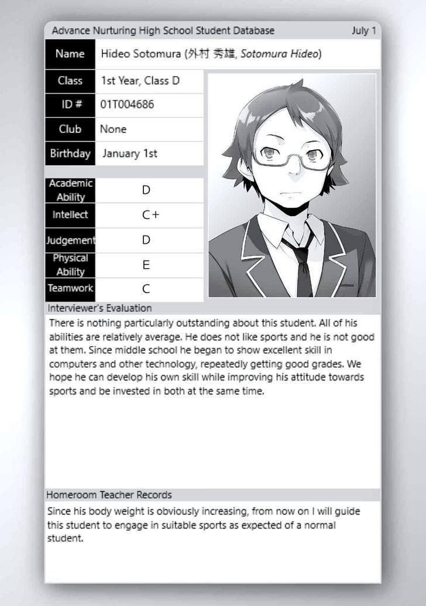
LA CLASE C EN MOVIMIENTO
El mismo día después de la escuela, el ambiente en uno de los salones estaba anormalmente congelado.
El motivo era claro. Era la sensación de intimidación que provenía del hombre parado en el podio, mirando a la clase C.
— Revisando los exámenes hasta el momento, hay varias cosas que no son naturales.
El nombre del hombre que hablaba a la clase era Ryūen Kakeru. Él es el líder de la Clase C y un dictador. Junto a él estaban Yamada Albert, Ishizaki y otros estudiantes competentes en artes marciales. Uno podía sentir la amenaza silenciosa que estaban haciendo... en caso de que hubiera un estudiante que quisiera rebelarse contra Ryūen, no dudarían en recurrir a la violencia.
— Para que llegue a esto, no pudo ser por casualidad.
Era como si estuviera hablando solo, pero había una sensación vaga de que le estaba hablando a alguien.
— De acuerdo con lo que sucedió en la isla deshabitada y en el festival deportivo, parece haber una persona en Clase D que piensa como yo.
— ¿Alguien como Ryūen-kun? No creo que la Clase D tenga alguien así...
Ishizaki no pudo evitar hablar, dudando de que pudiera haber alguien más como Ryūen. Esto se debe a que Ryūen es a la vez respetable y detestable, una existencia increíble e incomprensible. Ryūen sonrió y miró a Ishizaki.
— Yo solía pensar eso también, pero siento que tengo que enfrentar la realidad.
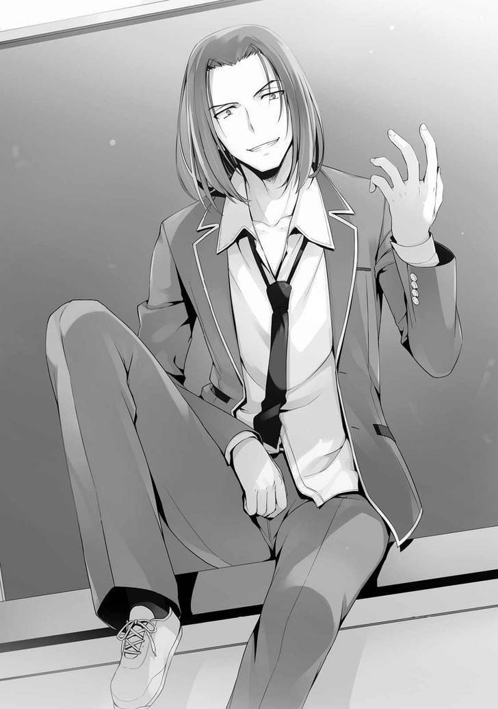
— ¿Esto también está relacionado con los resultados del examen de isla deshabitada y el festival deportivo?
— Eso es. Pero estén tranquilos, tengo una idea general de cómo están haciendo las cosas. Escuchen, chicos. En el futuro, buscaremos lanzar un ataque total contra la Clase D. Debo eliminar a la persona que gobierna a la Clase D desde las sombras. La clase A y la clase B tendrán que dejarse de lado por el momento.
Pocos estudiantes tenían objeciones a los planes de Ryūen. Aunque alguien estuviera en contra, sería imposible hablar porque la clase ha firmado un contrato con el mismo diablo.
— Ryūen-san...... ¿La clase D realmente tiene a alguien trabajando en segundo plano? ¿Alguien más que Horikita o Hirata?
— Sí. Y, las personas en esta clase tienen la clave para exponer su identidad.
Sus ojos se alejaron de Ishizaki y una vez más fueron a la Clase C.
— ¿Qué estás tratando de decir, Ryūen?
En esta pesada atmósfera, Ibuki estaba en el aula con los brazos cruzados sobre el pecho y le dirigió estas palabras a Ryūen.
— Kuku. Ibuki, ¿no puedes ni escuchar en silencio?
— No tengo tanto tiempo libre y no puedes seguir intimidando a tus compañeros.
— Hablas demasiado para alguien que no ha pedido permiso. ¿No has hecho ya el ridículo?
— Eso…
En vista de su observación, Ibuki no tuvo más remedio que comerse sus palabras. En particular, su fracaso en el festival deportivo fue embarazoso.
Ryūen había cambiado a las estudiantes consideradas para competir contra Horikita después de que Ibuki solicitara competir con ella directamente. El resultado fue una derrota muy justa. Fue una pena, casi había alcanzado a Horikita.
Sin embargo, Ibuki también tenía la opción de refutar. Ella bajó sus brazos y miró a Ryūen.
— ¿Quién eres para hablar? Al final del día, no derrotaste a Horikita en el festival deportivo. ¿Lograste obtener los puntos privados? ¿No eres lo mismo que yo?
— ¿Lo mismo que tú? No hagas bromas así. La estrategia que establecí en el festival deportivo fue perfecta.
— ¿Qué pasa con este resultado? ¿Ni siquiera nos explicas nada y ahora dices que hay otro tipo que piensa como tú en esa clase? ¿Quieres que lo aceptemos?
Todos los estudiantes de la clase estaban temblando debido a las objeciones hechas por Ibuki. Todos querían evitar ofender a Ryuen. Pero Ryūen no les prestó atención y mostró una leve sonrisa constante.
— ¿No crees que no importa cuán perfecta sea una estrategia, fallará si alguien la filtra?
— ……¿Filtra?
— El misterioso éxito de la Clase D se debe a la misteriosa existencia de “X”, que se atreve a llamar y manipular a los estudiantes de la Clase C bajo mi mando. En resumen, tenemos espías entre nosotros.
Hubo una pequeña confusión en el aula debido a su comentario. Los ojos de Ibuki se abrieron con sorpresa.
— ¿En serio…?
— Esto es un hecho. Mi cohesión... no, parece que la autoridad no era suficiente. Realmente es una pena.
Ryūen sonrió feliz por el hecho de que se entrelazará con el espía.
Ha surgido un desastre para todos en la clase, no solo para aquellos que buscan salir del aula y asistir a las actividades del club.
Todos los presentes comenzaron a rezar para que esto terminara pronto.
— Sin embargo, este escandaloso espionaje terminará aquí.
Ryūen golpeó el podio con su palma y silenció el caos de la habitación. La escena se hundió en el silencio.
— Antes que nada, trataré de preguntar honestamente. El estudiante que me traicionó, levante su mano.
Él no dudó en emitir una declaración directa. Por supuesto, ninguno de los estudiantes levantó la mano. Algunos de los estudiantes se miraron, a lo que respondieron con fingida ignorancia. También hubo quienes se quedaron quietos y contuvieron la respiración para evitar atraer la atención.
— Oh, sí... si te presentas dócilmente, no me habrás traicionado en absoluto.
La presencia de un espía puede sacudir a la Clase C, pero no había nada más que alegría en el corazón de Ryūen.
— Sabía que el espía elegiría esconderse. Entonces, no tienes que levantar la mano. No, más bien, no levantes la mano. Aunque ahora lo estés considerando, mantente completamente escondido.
Ryūen hizo una declaración inesperada al espía que habría sido encontrado tarde o temprano.
— ¿Qué estás diciendo? ¿Realmente tolerarás traidores?
— Eres molesta, Ibuki. No perturbes mi placer Te mataré si vuelves a hacer eso.
La cara sonriente de Ryūen se contrajo en una expresión de enojo por un momento y miró a Ibuki.
Su frase parecía ser una broma, pero su mensaje era serio. Ryūen no trataría a nadie de manera diferente debido a su género. Mientras él los juzgue como enemigos y en el camino de sus planes, entonces no importa qué, él resolverá el asunto con su puño.
— He estado tratando de no hacer un gran problema con esto. Otros pueden pensar que estoy mintiendo, pero es verdad. Para decirlo simplemente, he estado relajándome.
“¡Bam!” “¡Bam!” Golpeó el podio dos veces. Era el sonido de la próxima purga.
— Sin embargo... Tal vez sea algo malo. Después de todo, hay un traidor.
“¡Bam!” El aula aún resonaba con ese sonido. Cada vez que esto sucedía, los estudiantes tímidos comenzaban a temblar.
— Todo esto significa que tendré que jugar algunos juegos. No es nada. No es nada importante. Es solo un juego tonto donde encontramos a un espía que trata de permanecer oculto. Para la mayoría de los estudiantes presentes, esto no debería tener sentido, así que no hay nada que temer. No debería tomar mucho tiempo, tomará menos de 30 minutos.
Ryūen dijo esto ya que, aparte del espía, esta situación no era relevante para todos, así que no hay razón para que tengan miedo.
La habitación estaba llena de una atmósfera de miedo, por lo que no era tan simple. La única que había mantenido la calma frente a Ryūen era Ibuki, pero incluso ella estaba empezando a ser tragada por la autoridad de Ryūen.
— Primero lo primero, todo el mundo desbloquee su teléfono y lo colóquelo en su escritorio. Lo comprobaré yo mismo. ¿Hay idiotas que no tienen su teléfono con ellos? Si no lo tienen, hablen de inmediato. Esa persona es la culpable.
Cumpliendo con las instrucciones de Ryūen, los estudiantes colocaron sus teléfonos en sus escritorios inmediatamente para evitar sospechas.
— Una decisión muy sensata, es muy útil.
Ishizaki recorrió el salón de clases y juntó los teléfonos uno por uno. Como no sabía de quién era cada teléfono, adjuntó un papel con su nombre escrito con anticipación.
Ibuki también sacó su teléfono de su bolsillo. Aunque no estaba convencida, se lo entregó a Ishizaki.
— Ryūen-san, el teléfono de todos ha sido recolectado. Nuestros teléfonos también han sido incluidos.
— Gracias por tu duro trabajo. Entonces, es hora de llevar a cabo una investigación exhaustiva.
— ¿Pero dónde deberíamos empezar a buscar... el historial de llamadas?
— ¡Como si alguien que está tratando de permanecer oculto fuera a usar la función de llamada! Mira el historial del correo electrónico y, por supuesto, mira los mensajes de texto. Incluso si se trata de una conversación con alguien, mira todo. No podemos descartar la posibilidad de que interactúen entre sí con un nombre alternativo.
— ¡Espera, espera un minuto, hay muchos mensajes muy personales en mi teléfono!
Una chica gritó. No pudo evitar gritar.
El miedo a que su información personal sea vista ha sobrepasado su miedo a ser sospechosa.
— Nishino. ¿No quieres que mire tu teléfono?
— ¡Por supuesto! Incluso si eres tú Ryūen-kun, ¡es inaceptable!
— ¿Estás bromeando, Nishino? Le diste tu teléfono a Ryūen-kun en el crucero,
¿verdad? ¿Por qué estás tan preocupada ahora?
— ¡Esto, esto es diferente de aquel momento! ¡Todo lo que hizo en ese entonces fue hacer un chequeo de confirmación de mi correo electrónico de la escuela!
Ryūen no se sorprendió en absoluto, y escuchó la súplica de Nishino indiferentemente. Durante el examen especial en el crucero, Ryūen recogió todos los teléfonos de la Clase C y confirmó su contenido. Sin embargo, tal como ella había dicho, nada personal fue inspeccionado en ese momento. Fue simplemente una confirmación de los mensajes recibidos de parte de la escuela.
Este era el mismo tipo de evento, pero en general las situaciones son diferentes.
Si se trata de mensajes privados, información como a quién le gusta alguien o a quien odia inevitablemente será leída. Ese tipo de cosas las personas prefieren mantenerlas ocultas de los demás.
— Sabes que serás sospechosa, Nishino.
— ¡Yo, te obedeceré, Ryūen-kun, pero hay algunas cosas que no puedo aceptar!
Nishino no era del tipo que normalmente adoptaba una postura firme, pero no parecía dispuesta a echarse atrás.
Era como si estuviera diciendo que tenía algo oculto que no quería que vieran.
— Nishino, ¿fuiste tú?
Los estudiantes en la clase comenzaron a sospechar de Nishino.
Uno de ellos, Takumi Oda, había expresado su duda.
— ¡No! ¡No soy la espía!
— Pero estás ocultando algo y estás actuando muy sospechosa...
— ¡Solo quiero proteger mi privacidad!
Ryūen no mostró ningún interés en la conversación que sucedía en el aula.
Extendió la mano y agarró uno de los teléfonos sobre el escritorio.
— Tu teléfono es este, ¿no es así, Nishino?
— ¡Oye!
Nishino esperaba que Ryūen empezara a revisar el contenido y entró en pánico.
Sin embargo…
Ryūen le entregó el teléfono de Nishino a Ishizaki y le dijo:
— Dale esto a Nishino.
— ¿D-Debería? No confirmaste el contenido.
— Te dije que se lo devolvieras.
Ishizaki rápidamente se disculpó con Ryūen y le devolvió el teléfono a Nishino.
Frente a esta serie de acontecimientos, Nishino, así como los otros estudiantes se estremecieron.
— No es algo tan increíble. Te juzgué inocente, por eso te lo devolví. Eso es.
Era de esperar ¿no? No era el teléfono del traidor. Sería una pérdida de tiempo y energía mirarlo.
Ryūen ignoró a la estupefacta Nishino y a otros estudiantes, y sin ningún cambio en su actitud continuó:
— Si encuentran esto inaceptable como lo ha hecho Nishino, siéntanse libres de levantar su mano. Sin embargo, prepárense para ser sospechosos mucho más de lo que ella era.
No inspeccionó el teléfono de Nishino, y se la consideró “inocente”, la segunda y la tercera persona no tendrían tanta suerte. Su declaración transmitía este mensaje: elegir entre elevar las sospechas de Ryūen o la privacidad.
En vista de estas dos opciones, cuatro chicas y dos chicos levantaron la mano a pesar de sus temores.
— En realidad, hay seis personas que están desafiando a Ryūen-san... ¡El espía es definitivamente uno de ellos! Y el último en alzar la mano, Nomura, no estás pensando en salvarte subiéndote a esta ola, ¿o sí?
Ryūen mostró una sonrisa sombría ante las palabras de Ishizaki.
— ¡No, no! ¡No iba a hacer eso!
Nomura lo niega por temor a ser sospechoso.
— Reúne sus teléfonos.
— Sí.
Ishizaki recogió los seis teléfonos y se los entregó a Ryūen.
— Entonces, aunque todos ustedes son sospechosos, ¿no quieren que echemos un vistazo a nada?
Todos dieron respuestas diferentes, pero estuvieron de acuerdo con esta afirmación.
— Nomura, tomaste bastante tiempo antes de levantar tu mano, ¿no me digas que estabas esperando la oportunidad correcta?
— ¡Eh! No… Este…
— Tus ojos recorren la habitación de manera exagerada, y estás sudando.
— ¿¡Qué!?
La personalidad de Nomura es originalmente débil, y parece estar tan angustiado que está a punto de desmayarse.
Mirándolo en ese estado, Ryūen soltó una risa feliz antes de voltearse hacia Ishizaki para dar instrucciones.
— Ishizaki, estas personas son todas “inocentes”, devuélveles sus teléfonos.
Le ordenó eso. Esta fue otra situación impactante. Ryūen no miró el contenido e hizo que Ishizaki devolviera todos los teléfonos. Ninguno de los estudiantes aparte de Ryūen podía entender la razón detrás de estas acciones.
— ¿Me explicarías qué está pasando?
— Lo explicaré más tarde.
Ryūen no le dio a Ibuki la respuesta que estaba esperando. Se pasó la mano por el pelo y tomó su teléfono.
— En cuanto al resto de los teléfonos, investiguemos a fondo. Comenzaremos con Ibuki.
— ……Lo que digas.
PARTE 1
Ryūen terminó de revisar el último teléfono, después de haber confirmado el contenido de todos ellos él mismo.
Todo esto tomó aproximadamente 20 minutos, y pasó menos de un minuto con cada teléfono. Era imposible sentir que los había examinado por completo. La mayoría de los estudiantes tenían sus dudas, pero ninguno de ellos se atrevería a hablar al respecto.
Pero para el espía, las decenas de segundos que su teléfono fue examinado deberían haber sido muy largos y estresantes.
— Ya veo. Resulta que no hay información dentro de estos teléfonos.
— Entonces Nishino o uno de los otros que eran “inocentes” resultó ser el traidor...
— No es eso.
La irritación y duda de Ibuki no desaparecieron incluso con la afirmación de Ryūen.
— Pero, no encontraste ningún espía, ¿verdad? Explícame exactamente qué está pasando aquí. ¿Hay realmente un espía?
El corazón de Ibuki tenía dudas. Ryūen dijo que había un espía, pero ¿era solo una mentira creada para ocultar su fracaso?
Ryūen creía en una presencia invisible trabajando detrás de Horikita desde que había recibido los resultados de la prueba en la isla deshabitada, pero desde entonces no hay evidencia concluyente de que este titiritero “X” realmente exista.
De hecho, otras clases habían empezado a prestarle atención a la chica llamada Horikita Suzune.
— Las pruebas son más fuertes que la teoría. En ese caso, déjame decirte algo personalmente. Supongo que esto es algo que todos aquí ya saben muy bien.
Ryūen reprodujo el archivo de audio que le envió “X”. La voz en la grabación era una que todos los estudiantes de la Clase C habían escuchado antes. La voz de Ryūen Kakeru explicando su estrategia para el festival deportivo a sus compañeros de clase.
— Esto me fue enviado cuando estaba a un paso de la victoria sobre una desesperada Suzune. Gracias a esto, ni siquiera pude ver su dogeza ante mí, y mucho menos ver algunos puntos. ¿Entiendes ahora?
— Espera un minuto. Aunque asumamos que no lo grabaste tú mismo, sino que fue grabado por un espía, aún quedan algunas preguntas extrañas sin respuesta. No discutimos un momento detallado para hacer que Horikita se arrodillara ante ti. ¿Se las arreglaron para conocer todo el plan y detalles de los que no hablamos? No hay manera.
Esa conclusión tenía sentido al considerar los detalles que dio Ryūen. No solo se filtró su estrategia, sino también el momento de su discusión con Horikita después del festival deportivo.
— Fue una coincidencia, puramente una cuestión de probabilidad. El mejor momento para hacer un movimiento era después de la escuela después de
que terminara el festival deportivo. Además, no creo que el enemigo estuviera interesado en detener la disculpa de Horikita. No hay nada escrito en el mensaje que vino con el archivo de audio.
— ¿Qué está pasando…?
Ryūen analizó el mensaje en blanco que recibió y que contenía el archivo de audio.
— X, el señor de la Clase D, me estaba diciendo claramente que estaba al tanto de la estrategia que se me ocurrió al enviarme este archivo de audio. Como sabía de mis planes, podría haber evitado los ataques que había dirigido contra Suzune en el festival deportivo. Debería haber sido capaz de evitar por completo que Suzune fuera derrotada y obligada a disculparse. Sin embargo, este X ignoró deliberadamente estas aperturas. A pesar de conocer mi estrategia, me permitió derrotar a Suzune, y por supuesto ella sufrió debido a esto. No esperaba que ella se lastimara, y los resultados de la competencia para la Clase D no iban a mejorar. Además de todo esto, está la culpa de haber herido a alguien más. Su estado mental debería haber estado en un lugar bastante malo.
— Al dejar que Ryūen-shi llevara a cabo su estrategia, ¿no convirtió al archivo de audio en evidencia creíble?
Es comprensible por qué la estudiante de cabello con forma de hongo, Kaneda, pensara esto. Aunque el plan conllevaba riesgos, si el plan no funcionaba por completo y no producía ningún resultado, el archivo de sonido no se convertiría en una prueba válida. Simplemente sería considerado como “un plan fallido para derrotar a Horikita”.
— Qué inteligente de tu parte, Kaneda. Mientras ejecutemos la estrategia, el archivo de audio tiene significado. Entonces puede tener sentido como evidencia.
— Los planes hechos por este “X” son realmente brutales. Él sabe que su compañera sufrirá daños, pero no toma medidas para evitarlo.
— Sí. Este tipo de hombre no estaba interesado en la disculpa de Suzune. Esa es la razón por la cual nada fue escrito en el mensaje. Es decir, desde su
perspectiva, él no tiene ningún respeto por el orgullo de Suzune o por la pérdida de orgullo por la que pasará.
— No puedo entender. ¿No sería mejor evitar que Horikita salga lastimada...?
Otros estudiantes probablemente estaban de acuerdo con los sentimientos de Ibuki sobre esta cuestión. Estaba claro que Ryūen tenía la intención de atacar a Horikita, por lo que X debería haber sido capaz de resolver la situación antes de que comenzara el festival deportivo. Había opciones disponibles, como cambiar la tabla de participación de acuerdo con la estrategia de la Clase C o enviar el archivo de audio a Ryūen para detenerlo por adelantado. Si hubiera hecho eso, Horikita no sería herida.
— ¿Qué pasa si X tiene la intención de enviar el archivo de audio a la escuela?
Si conoces los planes del enemigo de antemano, la estrategia típica es usar este conocimiento para salvar a tus compañeros de clase. Pero si hubiera alguna ventaja por no hacer nada e ignorar deliberadamente los planes, sería que podría dar un golpe importante a la Clase C. Si el archivo de audio se entregaba a la escuela después de que la operación ya se hubiera desarrollado, la Clase C
tomaría indudablemente el mayor daño. Si se revelara que había usado el juego sucio contra Horikita, y luego trató de sacarle puntos como compensación, el peor resultado sería que Ryūen se vería obligado a abandonar la escuela.
Pero ahora que ya ha pasado la mitad de octubre, la posibilidad de que esto suceda casi ha desaparecido por completo. Si tuvieran que plantear un tema tan viejo, la investigación en sí no solo sería muy problemática, sino que la Clase C
podría destruir toda la evidencia y planificar su retirada. Entonces, ¿por qué X
hizo eso?
— Esta forma ingenua de luchar nos ha salvado por pura casualidad. ¿Podría decirse que no ha utilizado completamente sus recursos? Se molestó en obtener esta información, pero luego actuó pasivamente. Si Horikita-shi hubiera pagado los puntos privados a Ryūen-shi, habríamos ganado, y habría sido la derrota de X.
Kaneda analizó la situación y llegó a esta conclusión.
Como X había sabido de su estrategia antes del festival deportivo, se deduce que podría haber obtenido una victoria aplastante durante el festival.
— Eso está equivocado. X encontró una forma útil de usar la información al no usarla deliberadamente. Incluso si Suzune hubiera pagado los puntos privados antes para hacer las paces, podría haber utilizado fácilmente el archivo de sonido como evidencia para poder recuperarlos. Podría haber incluido un mensaje como: “Si no devuelves los puntos privados, este asunto se hará público”.
— ¿Quieres decir que sabe cómo usar amenazas, pero no las usa a propósito?
— Sí, e incluso me permitió forzar a Suzune a doblegarse. Un dogeza, a diferencia de los puntos privados, no es algo que tenga un valor numérico.
Está allí de forma física. No puedes deshacerlo o revertirlo más tarde,
¿verdad?
En otras palabras, esto es a lo que todo se reduce.
Lo único que X había estado buscando:
— Es decir, X da la bienvenida a la idea de jugar con Suzune.
Había usado valiosa información obtenida del espía solo para ese propósito.
— Este tipo de situación... no lo entiendo. La clase C fue salvada por X, que ni siquiera conocemos.
Ryūen era diferente de Ibuki. Él sabía por qué X había hecho eso.
— Kuku... es decir, no tiene la intención de revelarse.
Mientras Ryūen rastree la fuente del archivo de audio, X de la Clase D
eventualmente se verá obligado a mostrar su cara.
Si Ryuen se desespera lo suficiente, incluso puede pedirle a la escuela, que administra todos los teléfonos, que le proporcione los correos electrónicos y los registros de llamadas, y entonces investigará a fondo y descubrirá la identidad de X.
Al mismo tiempo, no sentía una obsesión por ascender a la Clase A de parte de X. No sentía que X tuviera el deseo de moverse hacia arriba, esta era la conclusión a la que Ryūen había llegado.
Al mismo tiempo, también llegó a otra conclusión.
— Bueno, nos hemos desviado un poco, así que volvamos al punto. No estoy seguro de qué método usó, pero el hecho es que “X” es alguien que piensa como “yo”, y ha hecho que alguien en esta clase espíe para él. Porque de lo contrario, no podría haber puesto sus manos en el archivo de audio. Sin embargo, la premisa es que la verdadera identidad de X permanecerá oculta incluso si encontramos al espía. Si el espía conoce su identidad, este juego terminará en el momento que lo encuentre. Debido a esto, para poder realizar espionaje, correo u otros intercambios de comunicación son necesarios. Aunque no es imposible que usen cartas anticuadas para comunicarse, ese método sería muy limitado e ineficiente.
— Pero no hay evidencia en el teléfono de nadie. ¿Estás seguro de que no pasaste por alto algún detalle?
— Por supuesto. Miré los teléfonos por cuestión de principios. Fue hecho solo por el bien de las apariencias.
— ¿Huh? Dijiste que sabrías quién es el espía si solo mirabas los teléfonos.
¿Cierto?
— Piénsalo cuidadosamente. Si fueras el espía, ¿te arriesgarías a dejar un correo sospechoso en tu teléfono?
— Yo no lo haría. Por eso, pensé que revisar los teléfonos de esta manera era una pérdida de tiempo.
— Cierto. Si lo piensas bien, comprobar los teléfonos de la clase lleva a este obvio resultado. No es increíblemente difícil destruir la evidencia. Incluso si el espía no hubiera pensado en destruirlo, X ciertamente los habría instruido para que lo hicieran. En otras palabras, el espía intentó parecer inocente al dejarme mirar voluntariamente su teléfono. Se entiende que aquellos que se negaron a mostrarme sus teléfonos son claramente inocentes, y el espía no habría aprovechado esa oportunidad.
Debido a esto, aquellos que se negaron a dejar que Ryūen mirara el contenido de sus teléfonos como Nishino y los demás, fueron excluidos de su búsqueda. Si
alguien no es el espía, en última instancia, no importa si están bajo sospecha.
Fue un truco que fue posible simplemente porque había personas que pudieron hablar. Por supuesto, Ryūen también podría simplemente haber comprobado el contenido de sus teléfonos para eliminar la pequeña posibilidad de que estuviera equivocado, pero solo hubiera provocado a sus compañeros de clase. Esta táctica fue seleccionada porque confiaba en el poder para dominar la clase.
Incluso si tuvo que asumir algunos riesgos, sus planes funcionaron al final.
Debido a que no había mirado cada teléfono durante un tiempo significativo, efectivamente les había dicho a los estudiantes de la Clase C que no había mirado en absoluto los detalles de sus vidas privadas. Lo que Ryūen estaba buscando en los teléfonos no era la presencia o ausencia de un correo sospechoso, sino que buscaba ver hasta qué punto el espía estaba dominado por su compañero invisible y cuánto temía de él. Y lo que vio de eso...
— Voy a preguntarle al espía de nuevo.
Ryūen miró los ojos y movimientos de cada persona uno por uno.
— ¿Tienes miedo del desconocido X? ¿O de mí? ¿Pregúntate quién es realmente más terrible como enemigo. ¿Estás cometiendo un error?
¿Recuerdas cuando terminó la ceremonia de admisión? ¿Qué le sucede a la gente que se resiste a mí? ¿Verdad, Ishizaki?
— S-sí......
Ishizaki se estremeció ligeramente después de haber sido mencionado. Albert, que siempre se mantenía quieto al lado de Ryūen, también reaccionó levemente.
Al principio, nadie aceptó las órdenes de Ryūen. Tanto Ishizaki como Albert habían protestado contra él, pero al final ambos cedieron a la “violencia” que Ryūen ejerció. Ishizaki tenía mucha más experiencia en las peleas, mientras que Albert tenía una fuerza física claramente superior.
Sin embargo, fueron estos dos hombres quienes estaban en el suelo al final.
— La fuerza más poderosa en el mundo es la “violencia” cuando está totalmente comprometida. No sucumbiré a la autoridad. Incluso si la escuela trata de expulsarme, me aseguraré de matar al traidor antes de que ocurra.
¿Entiendes lo que quiero decir? Si llego a ser expulsado por esta traición, me aseguraré de eliminar la vida de este espía como el insecto que es.
Esto era diferente del ex presidente del consejo estudiantil Horikita o el actual presidente Nagumo que había dominado el gimnasio con autoridad.
En cambio, Ryūen avanzaba en un frenesí de violencia.
— Recibiré la confesión del traidor ahora, pero esta será tu última oportunidad.
Si vas a confesar ahora, prometo no quedar hundido en esta traición, y juro evitar que tus compañeros te acusen en el futuro. Como dije al principio, si crees y me obedeces, dirigiré esta clase hacia la Clase A. Mientras me sigas, te protegeré.
Ryūen bajó del podio y se paró frente al salón de clases, mirando los ojos de sus compañeros de clase.
Sus palabras emitieron la sensación de que estaban dirigidas a toda la clase, y no solo al espía en cuestión.
— ¿Lo entiendes? ¿Qué significa ofenderme?
Miró a los ojos de sus compañeros de clase uno por uno. Para Ryūen, esta era la forma más fácil de encontrar al traidor.
Entonces, Ryūen finalmente se acercó a una estudiante y se paró frente a ella.
Por supuesto, esto no fue por casualidad. Ryūen la había establecido como el objetivo desde el principio.
— ¿Qué pasa? ¿No puedes mirarme a los ojos?
— Ah...... A-Ah...... Yo......
Su respiración era desordenada, y tenía un rostro que estaba a punto de estallar en lágrimas.
— Kuku. Eres tú, Manabe, la traidora de la Clase C.
La mayoría de los estudiantes no habían imaginado que fuera ella, y no pudieron entender esta revelación inesperada.
— No tengas tanto miedo, Manabe. No tomaste la iniciativa de informarme de ello, pero sabía que eras la espía desde el principio. Tu complexión ha sido mala desde el comienzo. No había forma de que lo ocultaras.
Ryūen le acomodó el cabello junto a la oreja y le tocó la cara. Manabe comenzó a temblar como si estuviera expuesta a un frío extremo.
— Por favor. Lo siento, lo siento, yo---
— No te preocupes, te perdonaré. Lo manejaré con magnanimidad. Entonces, escuchémoslo. Dime la verdadera naturaleza de X, quien hizo que me traicionaras.
Ryūen se alejó de Manabe Shiho y lanzó una mirada penetrante a sus amigas Yabu Nanami y Yamashita Saki.
PARTE 2
Después de retener a todos los de la Clase C como rehenes, Ryūen finalmente permitió que la mayoría de la clase se fuera.
Los que permanecieron en el aula eran Ryūen, Ishizaki, Kaneda, Ibuki, así como las tres traidoras.
— Pregunta: ¿Conocen la identidad del tipo que les dio las instrucciones?
Manabe y las demás negaron la pregunta moviendo la cabeza.
— Bueno, siguiente pregunta: ¿Cuáles son sus razones para traicionar a la Clase C? Explíquenmelo.
— Es decir—
— No sirve de nada ocultarlo ahora. Si eligen esconderlo de todos modos, mañana es cuando su tiempo como mis compañeras terminará y serán tratadas como nada más que gusanos.
En una situación donde ya no hay escapatoria, Manabe decidió aclarar la verdad.
— Ka...... Karuizawa de la Clase D, ¿la conoces...?
— Solo el nombre y su rostro, ella es la mujer de Hirata ¿verdad?
— Esa chica, ella está actuando fuerte ahora... pero creo que fue una víctima de intimidación en el pasado.
— ¿Oh? ¿Entonces?
— Rika fue tratada terriblemente por Karuizawa, así que intentamos tomar represalias...
A pesar de que Manabe estaba asustada, habló sobre los eventos que sucedieron durante el verano en el crucero. De cómo eran miembros del mismo grupo en la prueba especial, de cómo se habían enterado de su pasado con respecto a la intimidación, e incluso del violento acto de venganza en el que participaron. Habló de todo.
También mencionó que la razón de su espionaje se debió a las amenazas con todo y evidencia que les hicieron.
Si esos hechos salían a la luz, serían expulsadas o incluso algo peor. Y, por supuesto, recibirían regaños de Ryūen. Dijo que era algo que había que hacer para evitar el castigo tanto de la escuela como de Ryūen.
— En efecto. Se han estado divirtiendo mucho.
— ¿Eres una idiota? Están siendo amenazadas por un tipo del que ni siquiera conocen su identidad. ¿No sabes que las cosas podrían empeorar a partir de ahora?
— No las culpes, Ibuki. Cuando los humanos están acorralados, se convierten en criaturas vulnerables.
Ryūen había decidido perdonar a Manabe y no siguió acusándolas.
— Aquí está el resultado final: ¿Alguien más presenció la escena en la que intimidaron a Karuizawa?
Manabe asintió ante la pregunta y pronunció los nombres.
— En ese momento, nos vieron dos estudiantes de la clase D. Yukimura-kun y Ayanokouji-kun.
Los nombres de dos estudiantes surgieron.
— Luego nos enviaron una imagen. Una fotografía de cuando estábamos involucradas con Karuizawa.
— Entonces así es como es. Esperaba que hubiera evidencia ya que te amenazaron, pero que la fotografía haya sido retirada entonces... ¿Qué le pasó a esta foto?
— La borré. Si alguien la viera... nosotras...
— Entonces la situación ha llegado a su conclusión.
— ¿Entonces definitivamente es Yukimura-shi y Ayanokouji-shi?
Dijo Kaneda, que no había hablado sobre la situación hasta ahora.
Era una de las pocas personas en la Clase C que Ryūen pensaba que eran de alguna utilidad.
— Espera un momento, Ryūen. No sé mucho sobre Yukimura, pero no creo que Ayanokouji sea el que maneja los hilos de la Clase D. He tenido la oportunidad de interactuar con él unas cuantas veces, y él no me pareció ese tipo de hombre.
— Yukimura parece un poco sospechoso en ese sentido. Parece ser muy capaz en lo académico.
Ishizaki agregó.
— ¿No es imposible llegar a una conclusión como esa? Ayanokouji-shi siempre está al lado de Horikita-shi. Además, Ayanokouji-shi había estado ocultando su habilidad para correr en el festival deportivo. Creo que el más sospechoso de los dos debería ser él.
— Creo que los dos son irrelevantes. Ayanokouji solo tiene pies rápidos y Yukimura solo tiene sus calificaciones, ¿verdad? Creo que tiene que haber más en la mente maestra.
— ¿Quién más podría ser?
— Hay algunos tipos realmente capaces en la Clase D. Alguien como Hirata.
— ¿Ese tipo? Hablo con él bastante a menudo y no creo que sea ese tipo de persona.
Ryūen sonrió levemente a sus compañeros de clase que habían estado hablando libremente.
Pero en el siguiente momento, su mano se estrelló contra el escritorio.
— Cállense un poco.
Ryūen dejó escapar una pequeña risa cuando la habitación se envolvió instantáneamente en silencio y terror.
— ¿Pedí siquiera sus opiniones? Encontraré al tipo que está manipulando a la Clase D desde las sombras. Todos ustedes son solo mis peones para ese objetivo. Los peces pequeños deben actuar como peces pequeños. En cuanto a los hechos, solo Ayanokouji o Yukimura podrían haber tomado la fotografía. Sin embargo, llegar a la conclusión de que uno de ellos tiene que ser la mente maestra no es razonable. También pueden estar bajo la influencia de alguien.
Este era el problema principal. Había una oportunidad decente de que uno, o ambos, hubieran tomado la foto de una situación que pensaban que podría convertirse en una debilidad de la Clase C, y luego buscaron el consejo de la persona que ejecuta las cosas detrás de escena.
— Pero, Ryūen-shi. Especialmente con respecto a Ayanokouji-shi, ¿no deberíamos sospechar?
Completamente preparada para incurrir en la ira de Ryūen, Kaneda se atrevió a dar algunos comentarios porque creía que eran necesarios.
— Es cierto.
En cuanto a Ayanokouji, él era sospechoso debido a su relación con Horikita Suzune.
Sin embargo, esto era motivo de sospecha en sí mismo.
Era desagradable llegar a deducciones fáciles como esta.
La idea de que el hombre que estaba cerca de Horikita Suzune fuera también el hombre que estaba manipulando todo como el cerebro de la Clase D.
Si hubiera tenido la intención de usar Suzune desde el principio, nunca habría elegido esta táctica.
— Él se escondió a simple vista ¿eh? No, realmente no puedo imaginar eso.
La sensación de desesperación era desagradable.
— Voy a usarlo a él.
Si la situación ya ha progresado hasta este punto, el resto está solo a un empujón.
Para hacer el siguiente movimiento, Ryūen envió un mensaje a la persona registrada en el teléfono.
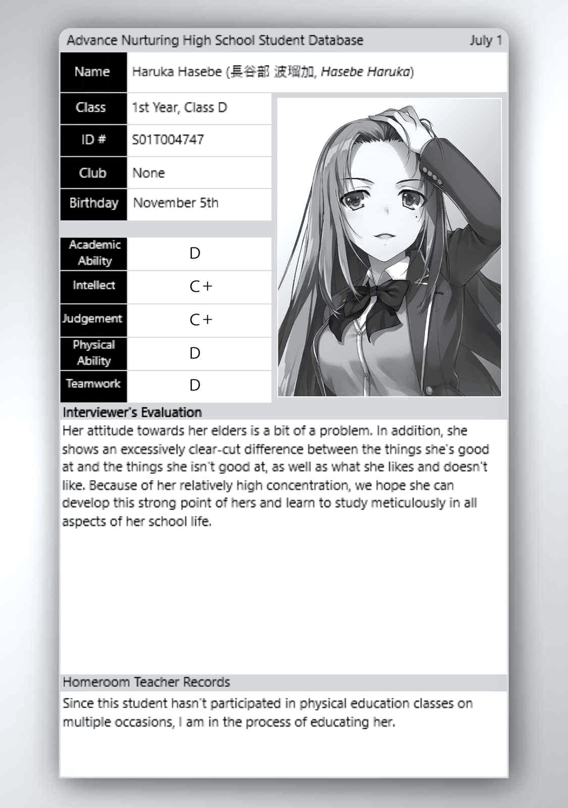
MEDIOS DE SUPERVIVENCIA
Después del inicio de la clase a las 18:00, Chabashira-sensei abandonó el salón de clase inmediatamente.
Los estudiantes estaban sentados allí maravillados, Hirata les lanzó una mirada de soslayo mientras se levantaba y se ponía de pie en el podio.
No buscábamos jugar algo ahora. Una discusión seria estaba a punto de comenzar.
— Para la clase de hoy, me gustaría tener una reunión para el cuestionario de mañana. Obtuve el permiso de Chabashira-sensei, quien me dijo que podemos usar el tiempo de la clase de hoy para nosotros. Antes que nada, Horikita-san, ¿podrías, por favor?
Esperando las palabras de Hirata, Horikita se levantó en silencio y se paró a su lado.
Cuando ella se paró junto a Hirata, algunos de los estudiantes sintieron algo de incompatibilidad. Es posible que muchos no se hayan dado cuenta hasta ahora de que “Horikita” y “Hirata” formaban el equipo más fuerte de la Clase D. Hirata siempre le había dado la bienvenida, pero Horikita nunca se lo había permitido.
Horikita siempre peleaba sola y actuaba con la creencia de que podía ganar sin la ayuda de otros.
Sin embargo, después del fracaso que sufrió en el festival deportivo, comprendió los límites de luchar sola, y es como si hubiera renacido.
Por supuesto, no todo se ha vuelto perfecto.
El biólogo suizo A. Portman ha dicho que los humanos son fisiológicamente prematuros. Argumenta que, desde el punto de vista de la zoología, los humanos nacen aproximadamente un año antes en comparación con los estados de desarrollo de otros mamíferos. Aunque los seres humanos se clasifican como animales grandes, cuando nace un bebé, sus órganos sensoriales ya se han desarrollado, mientras que su capacidad atlética es
inmadura y no pueden caminar por sí mismos. Otros animales grandes, por otro lado, como los ciervos, son maduros cuando nacen, y hay muchas otras criaturas aisladas que dejan sus nidos y viven solos.
Como es el caso con este ejemplo, ahora Horikita acaba de renacer y todavía no puede moverse por sí misma.
Sin embargo, aunque es muy inmadura, también tiene infinitas posibilidades.
Ella podría crecer de cualquier manera mientras avanza.
Quizás el corazón de Horikita todavía está en conflicto. Es seguro que esté tratando de luchar desesperadamente contra eso.
Sería lo mejor para ella aceptar este cambio y comprometerse con él.
— ...... En primer lugar, aunque esto es una cosa del pasado, espero que me permitan disculparme por algo.
Pensé que comenzaría a hablar sobre el examen final de inmediato, pero no lo hizo. Hay algo ardiendo en el corazón de Horikita desde hace varias semanas.
— Durante el festival deportivo, no pude alcanzar ningún resultado. Siempre tuve una actitud dura con todos, pero al final no pude hacer nada para la Clase D. Permítanme pedir disculpas.
Después de decir eso, Horikita inclinó la cabeza profundamente. Por supuesto, muchos estudiantes se sacudieron por esta acción.
Era como si Horikita hubiera aceptado la culpa por las razones detrás de la derrota de la Clase D.
Después de la carrera de tres piernas, Onodera se había distanciado un poco de Horikita y rápidamente habló:
— No es solo la responsabilidad de Horikita-san que hayamos perdido. No necesitas inclinar la cabeza.
— Así es, Suzune. Después de todo, Haruki y El Profesor tampoco fueron de mucha ayuda.
Aunque es lamentable, también era cierto. Yamauchi miró a Sudō, pero no hubo ninguna objeción.
— Una actitud humilde puede hacer que cualquier resultado sea aceptable, independientemente de si ganamos o perdemos. Pero ese no es el caso aquí.
Al menos, mi contribución al festival deportivo apenas tuvo algo positivo.
Después de decir eso, Horikita miró a Sudō a la cara de por un momento.
Probablemente no era más que para enfatizar que había hecho a un amigo en Sudō. Es imposible que Sudō no entienda el estado de ánimo. Él tímidamente se rascó la mejilla en silencio, revelando una sonrisa y sus dientes blancos.
— Pero este es el final de la disculpa. Me gustaría comprometerme por completo para enfrentar este próximo cuestionario y el examen final. Creo que a menos que la clase luche unida será insuperable.
— Puedo entender eso, pero ¿tienes una solución o algo? Como por ejemplo cómo se eligen las parejas. No sabemos nada de eso, ¿verdad?
— No, las reglas sobre cómo se eligen las parejas ya las hemos averiguado. Si lo manejamos bien, es posible que todos tengamos un compañero ideal.
Hirata-kun, adelante.
Hirata, que había tomado la función de apoyo, recibió su señal y escribió las reglas de emparejamiento en la pizarra.
Las reglas para el emparejamiento
Al mirar a la clase como un todo, la persona que obtiene la calificación más alta y la persona que obtiene la calificación más baja en las pruebas formaran pareja.
Luego, los segundos mejores y peores estudiantes, los terceros mejores y peores estudiantes y así sucesivamente.
Por ejemplo: el estudiante que obtiene 100 puntos se emparejará con el estudiante que obtiene 0 puntos. El estudiante que obtiene 99 puntos se emparejará con el estudiante que obtiene 1 punto.
— Este es el significado del cuestionario y el principio de las parejas. Simple,
¿no es así?
— ¡Oh, oh cielos! ¡Esta es la regla para las parejas! ¡Lo has hecho, Horikita!
¡Eres increíble!
— Esto es algo que también muchos estudiantes deberían haber descubierto.
Lo importante es esto. Según esta regla, también podemos ver que los estudiantes que obtienen calificaciones más bajas se asociarán con aquellos que obtienen las más altas de manera casi automática. Sin embargo, las excepciones siempre pueden suceder. Debido a esto, voy a comenzar a explicar la estrategia para emparejamientos confiables y precisos.
Aunque dijo que muchos estudiantes ya deberían haber descubierto esto, ese no era el caso. Comparado con insinuaciones del pasado, esta fue realmente fácil de entender. Pero ella podría haberlo notado solo por su experiencia con sus fracasos pasados.
Horikita caminó junto a Hirata, y se volvió para mirar al salón de clases.
La sensación de vergüenza y aversión por hablar en público.
Ella no tenía esa resistencia en su corazón, solo el impulso de seguir adelante.
— Teniendo en cuenta los resultados de las pruebas de nuestra clase hasta ahora, me gustaría centrarme en hacer que los estudiantes que están preocupados por sus calificaciones hagan planes con los estudiantes que sacan buenas calificaciones. Aunque al final habrá algunos estudiantes que se sientan incómodos, la realidad de la situación es que no podemos apoyar a todos.
11 estudiantes tenían un promedio de 80 puntos o más, con la excepción de aquellos que obtuvieron calificaciones perfectas en los exámenes parciales. Si ese promedio se aumentara a 90 puntos, el número de estudiantes se reduciría a 6. Es triste pensar en el resultado de las pruebas que han sido relativamente fáciles. La cantidad de estudiantes con excelentes calificaciones fue menos de la mitad de la clase.
Por el contrario, incluso si se toma en cuenta la cantidad de calificaciones que promedian más de 60 puntos, no todos podrían ser emparejados con un
compañero ideal ... En otras palabras, es imposible que cada pareja tenga un alumno con calificación alta.
Por lo tanto, Horikita parece tener como objetivo la estabilidad mediante la creación de equipos obligatorios de 10 personas en la parte superior e inferior de la clase.
Los nombres de los estudiantes con calificaciones más bajas se escribieron en la pizarra uno a uno.
— Bueno, no entiendo muy bien. ¿Qué debemos hacer?
Preguntó Yamauchi, quien sabía que su nombre sería escrito.
— Los 10 estudiantes escritos aquí solo escriban sus nombres en los cuestionarios de mañana. Ya que sus resultados no se reflejarán en su boleta de calificaciones, sacar 0 en el cuestionario no tiene ninguna desventaja. Por el contrario, para las 10 personas de arriba, asegúrense de obtener 85 puntos o más. Los 20 estudiantes restantes se dividirán por igual en 10 personas. Para la mitad superior de estos estudiantes, su calificación debe apuntar a un máximo de 80 puntos, mientras que para la mitad inferior, solo necesitan obtener 1 punto. Con este método, el equilibrio óptimo para los exámenes finales debería lograrse. Sin embargo, confirmaré los detalles de esto más adelante ya que también existe la posibilidad de que ocurran accidentes.
Lo importante aquí es asegurarse de que los estudiantes que sacan 0 y los estudiantes que sacan 1 no estén emparejados entre sí.
Los estudiantes con diferencias en capacidad académica deben emparejarse tanto como sea posible.
— También creo que esta estrategia es muy buena. No deberíamos tomar el examen sin haber tomado ninguna contramedida.
Hirata había discutido esto con ella anteriormente, por lo que no debería haber comentarios negativos sobre el plan. Su objetivo es crear una atmósfera favorable.
Kōenji usualmente no consentía cosas como esta, pero no mostró ni aprobación ni desaprobación.
Por el contrario, parecía desinteresado en el flujo de la conversación. Su habilidad para integrarse a la clase es incluso peor que la de Horikita. Pero que mantenga su actitud típica probablemente sea lo mejor.
Aunque Kōenji por lo general no toma las pruebas especiales en serio, siempre evita situaciones en las que corre el riesgo de ser expulsado.
Esta vez, para el caso del “emparejamiento obligatorio”, no obtendría malas calificaciones. Si bien las posibilidades de que suceda son bajas, existe la posibilidad de que te expulsen aunque obtengas algunas calificaciones perfectas en el examen final dependiendo de la capacidad de tu compañero.
Debido a esto, aunque finja no estar interesado, probablemente está dispuesto a cooperar con el examen.
No, el comportamiento de Kōenji podría no ser claro. Existe la posibilidad de que termine haciendo algo impredecible.
— Kōenji-kun. ¿Tienes alguna objeción?
— No tengo objeciones, esa fue realmente una pregunta sin sentido. Por supuesto, ya domino el contenido de este examen.
Estiró sus largas piernas sobre su escritorio como de costumbre y alisó su cabello hacia atrás.
— Bueno, ¿puedo esperar que saques más de 80 puntos?
— ¿Qué es lo que crees? ¿No dependerá eso del contenido de la prueba?
— Si sacas 0 puntos a propósito y haces pareja con otro estudiante con calificaciones altas, habrá un riesgo de que se rompa el equilibrio general de la clase. ¿Podrías al menos entender esto?
Lo único a temer en estos cuestionarios es una calificación anormal. Debe evitarse una pareja altamente capaz como Horikita y Kōenji.
— Lo consideraré cuidadosamente. Chica.
Aunque la respuesta de Kōenji era realmente sospechosa, no podía continuar con el tema ahora.
Porque tenemos que dominar los puntos del examen final oficial.
PARTE 1
Al día siguiente, llegó el momento de los cuestionarios.
Pensé que comenzaríamos de inmediato, pero Chabashira-sensei se dirigió primero a la clase.
— El cuestionario comenzará en un momento, pero tengo algo que informar antes de que eso suceda. La clase que nominaron para atacar en los exámenes finales, la Clase C, se aprobó porque no entraba en conflicto con las opciones de otras clases.
— ¿La clase A y la clase B ambas nominaron a la clase D? A pesar de todo, es genial que podamos atacar a la no estudiosa Clase C, sin dejar la suerte y la desgracia al cielo.
Parece que hemos superado el primer obstáculo, y Horikita se sintió aliviada. Lo siguiente es averiguar qué clase atacará a la Clase D.
— Entonces, la clase que atacará a la Clase D también se determinó que es la Clase C. Esto también se debió a que su nominación no tuvo conflictos con otras clases.
Dicho de otra manera, esta batalla es la Clase C contra la Clase D, y la Clase B
contra la Clase A.
— Es una combinación ideal.
— Así parece.
No hubo conflictos en las nominaciones, lo que significa que las clases altas habían elegido atacar a sus rivales más cercanos para expandir o reducir la diferencia entre ellos. Fue un caso así.
Lo que se puede sacar a partir de esto, es que la nominación de la Clase A fue decidida por Sakayanagi. Katsuragi habría nominado a la Clase D, lo que les habría dado las mayores posibilidades de ganar.
Además, también se puede inferir que la influencia general de Katsuragi está disminuyendo.
La clase C fue seleccionada justo como la habíamos nominado, tal como Horikita deseaba.
— A pesar de que estamos a punto de tomar un cuestionario, Ike y Yamauchi se ven completamente bien. Antes de los cuestionarios, ustedes dos generalmente tienen círculos oscuros debajo de los ojos. ¿Tienen alguna estrategia secreta esta vez?
— Jejejeje. Por favor, mire con atención, sensei.
Ike estaba lleno de confianza, pero era lo esperado. Después de todo, él no había estudiado para nada.
Lo que debería temer es sacar una puntuación parcial en el cuestionario. El nivel de dificultad parece ser increíblemente bajo, pero si no entiende una sola pregunta, todo lo que puede hacer es escribir su nombre y entregarlo en blanco.
Si toma en serio este cuestionario, solo aumentará su riesgo en el futuro.
No había forma de que Chabashira-sensei fuera incapaz de ver esto.
— No te arrepientas de tu decisión después. Deberías tomar esta prueba en serio.
— Lo digo en serio. Después de todo, no afecta mis calificaciones, ¿verdad?
— Por supuesto. No se reflejará en tus calificaciones.
— Entonces puedo estar en paz sin tener que sacar una calificación alta.
— Eso es solo si las cosas salen como lo esperas.
Ante su ambigua respuesta, Ike y los otros que no habían elegido estudiar se quedaron en silencio por un momento.
— ¿Deberíamos aspirar a buenas calificaciones en este cuestionario...?
Sudō perdió involuntariamente su tranquilidad debido a estas palabras.
— No dejes que te engañe. No hay ningún error en nuestro plan.
Las palabras tranquilas de Horikita lograron calmar a los estudiantes preocupados. Sudō recuperó la compostura en un instante.
— ………Bueno. Solo tengo que creer en Suzune.
Chabashira-sensei presenció la situación, confirmó que la atmósfera en la clase había sido restaurada, y recogió los folletos del cuestionario.
— Bien, comenzaremos los cuestionarios. Por favor, recuerden no hacer trampa.
Si los descubren haciendo trampa, independientemente de si influye en sus calificaciones o no, les impondremos una penalización despiadada.
Sensei entregó los papeles del examen al frente de cada fila y los hizo pasar.
Como nos dijeron que lo mantuviéramos boca abajo hasta que comenzara, volteé el cuestionario inmediatamente después de que me fuera entregado.
— ¿No estás preocupada por esto? ¿Acerca de si el método de selección de parejas al que recurriste es o no correcto?
— No. Esta vez estoy segura de ello.
No había señales de que Horikita se dejara influenciar por las palabras de Chabashira-sensei. Debido a esto, Ike y los demás tampoco se dejaron influir.
Si el líder muestra miedo o vacilación, esas emociones comienzan a extenderse fácilmente.
Un símbolo de cambio. Los estudiantes comenzaban a dar forma a una Clase D
completamente nueva.
Es solo un poco, pero creo que esto se transmitió a la maestra que se paraba frente a los estudiantes todos los días.
— Empiecen.
La prueba comenzó con su señal.
Lentamente volteé los cuestionarios.
— Oh…
No pude evitar hacer un sonido. Probablemente no fui el único sorprendido.
Aunque se esperaba que la dificultad fuera muy baja, resultó incluso más baja que eso.
Estaba en un nivel en el que incluso los estudiantes de los grados superiores de la primaria podrían responder. Por supuesto, había algunas preguntas con mayor dificultad, pero aun así, alguien como Ike podría fácilmente sacar por encima de 60 puntos siempre y cuando no se pusiera nervioso.
Es una dulce trampa. Si hubiéramos saltado a ella distraídamente, fácilmente podría ser un desastre. Pero debido a la estrategia de Horikita, la Clase D no terminará con resultados escandalosos.
PARTE 2
Los cuestionarios finalizaron tranquilamente y sin problemas. Los resultados se anunciaron después del 4 ° período al día siguiente.
La clase D había enfrentado todas sus pruebas en el pasado sin ninguna unión en absoluto.
Mientras que esta vez, las pruebas habían producido una sensación de unidad que se sentía casi demasiado buena.
El sistema de emparejamiento, la creación de las preguntas y la competencia entre clases aparte, puede ser algo maravilloso que la regla general para este examen especial sea tan simple. Simplemente haz la prueba y obtén buenas calificaciones.
Esto es lo mismo a lo que nos hemos visto obligados repetir en los últimos nueve años o más desde que comenzamos en la primaria y durante toda la secundaria.
— Es bueno no tener que involucrarme esta vez.
Es reconfortante poder decir esto desde el fondo de mi corazón.
— Entonces, anunciaré las parejas para los exámenes finales de este semestre.
Los resultados los cuestionarios de ayer se publicaron y fueron de la siguiente manera:
Horikita Suzune y Sudō Ken, Hirata Yōsuke y Yamauchi Haruki, Kushida Kikyō e Ike Kanji, Yukimura Teruhiko e Inogashira Kokoro.
Las parejas fueron anunciadas casi como esperábamos. Por cierto, mis resultados dicen:
Ayanokouji Kiyotaka...... Satō Maya.
— Los dioses tienen un mal sentido del humor...
¿Cómo llegamos a esto? Es el tipo de resultado que me hace pensar así.
Satō pareció darse cuenta de que nos habían emparejado, y miró hacia atrás en mi dirección con una sonrisa.
Levanté mi mano un poco para hacerle saber que yo también lo había visto.
— Kōenji-kun tampoco ha traicionado nuestras expectativas sobre él.
Kōenji fue emparejado con Okitani. Basado en el resultado, parece haber obtenido una puntuación alta.
Bueno, ha obtenido calificaciones altas en cada examen hasta ahora, por lo que es más como si estuviera tomando el examen como de costumbre. No prestó atención al resultado, se cruzó de brazos con una sonrisa incomprensible y se rió.
— Al observar los resultados, algunos de ustedes parecen haber entendido la intención del cuestionario. Como consecuencia, se deduce que esta información se compartió con éxito con el resto de la clase.
Chabashira-sensei miró la lista de parejas y pareció muy impresionada.
— Empareje a los estudiantes con las calificaciones más altas y más bajas. Si los resultados son iguales, las parejas serán seleccionadas al azar.
Probablemente no tenga que explicárselos, pero de todos modos les diré esto.
No hay razón para sorprenderse en este punto, pero dio alivió que nuestra regla fuera validada.
— No parece haber problemas con los emparejamientos.
— Sí. Va tan bien que estoy un poco asustada Pero lo de verdad comienza ahora. Cómo hacer las preguntas del examen y aprobarlos por nuestra cuenta. Tu pareja es Satō-san, lo cual debería estar bien.
No la escogí a propósito, pero con los estudiantes en las posiciones altas y bajas combinados, es probable que la otra mitad de los alumnos de la clase sacaron calificaciones fuera de la estrategia prevista. Se puede decir que un resultado como este es el correcto.
Satō es candidata a reprobar el examen final. Tengo que mantener mis calificaciones en un alto nivel para seguir adelante.
— Para elevar la calificación promedio de la clase, haré un grupo de estudio hasta el examen final. Como esta vez me puedo apoyar con Hirata-kun y Kushida-san, podré tener dos sesiones por día. Una sesión de dos horas de 4 pm a 6 pm después de que termine la escuela, y 2 horas de 8 pm a 10 pm para aquellos con actividades de club. Necesitamos decidir quién tomará cada sesión. ¿Qué piensas, Hirata-kun?
— Como estoy involucrado en actividades de club, me haré cargo de la segunda sesión de estudio. Vamos a superar esto y trabajemos duro.
Las cosas se mueven realmente de manera estable. Debido al aumento en el número de personas que pueden enseñar, podemos adoptar una estrategia como esta.
Después de eso, Horikita y Hirata discutieron los detalles de las sesiones de estudio una y otra vez, preparando lentamente los detalles más finos.
La supervisión de la primera sesión fue tomada por Horikita, mientras que Hirata se hizo cargo de la segunda sesión. Decidieron guiar a fondo a los estudiantes que estaban sufriendo con sus calificaciones, mientras apoyaba a todos los estudiantes que asistían a los grupos de estudio. Kushida era una fuerza especial que asistía a ambas sesiones y se enfocaba en enseñar a los estudiantes que estaban ansiosos por alcanzar los 50 puntos. Había muchas chicas situadas en este nivel medio, como Onodera e Ichihashi.
Dicho esto, este plan no estuvo exento de problemas.
Comparado con el primer semestre, el número de estudiantes que participan en el grupo de estudio es bastante grande. Por el contrario, solo hay tres personas enseñando.
Como consecuencia cuanto más grande sea la relación entre profesor-alumnos, menor será la calidad de la enseñanza general.
A la hora del almuerzo, Hirata y Sudō se encontraron con Horikita.
— Mierda, Suzune no lidera la segunda sesión. Eso mata mi motivación.
Como Sudō no podía asistir a la primera sesión debido a las actividades de su club, Horikita no le podía enseñarle esta vez.
Horikita trabajaba como el motivo de Sudō para estudiar, por lo que parecía bastante reacio. En el pasado, probablemente hubiera actuado aquí.
— No importa quién esté enseñando, si careces de motivación estaré en problemas. ¿Entiendes?
— ……Entiendo. Voy a estudiar, después de todo, somos una pareja.
Ella tiene un gran control sobre el pesado Sudō. Es admirable.
— Tus esfuerzos también se reflejarán en mi evaluación. Sería bueno si lo entiendes. Además de eso, trataré de aparecer en las sesiones de la tarde, así que esfuérzate.
Horikita dio el golpe final, como si Sudō estuviera en la palma de su mano.
— Oh, wow. ¡De repente tengo motivación de nuevo! Por favor, trátame bien, Hirata.
— Igualmente. Hagamos esto juntos, Sudō-kun.
Debido a su decisión de convertirse en compañero de Horikita, Sudō parece estar más motivado.
Pero aun así, había problemas inesperados.
— ...... Necesito hablar contigo un minuto, ¿está bien?
El estudiante que se acercó a Horikita es alguien con quien nunca antes he hablado.
Vino con una expresión nerviosa y de aspecto triste.
— Miyake-kun, ¿qué sucede?
Es un estudiante de la Clase D, Miyake Akito, y estaba con una chica cuya belleza era un tema común entre los chicos de la clase, Hasebe.
Estos dos estudiantes solían ser muy callados y rara vez se involucraban con otros. Era una visita inesperada de una combinación inesperada.
— Los recuerdo a ustedes dos, ustedes son equipo para los exámenes finales,
¿verdad?
Hirata preguntó, buscando un punto en común para empezar. Miyake comenzó a hablar sobre la situación.
— Somos pareja para el próximo examen, pero basándonos en los resultados que obtuvimos en los cuestionarios y exámenes parciales, somos buenos y malos en los mismos temas, por lo que hay un pequeño problema. Es un poco estresante. Queremos pedir un consejo.
Después de que terminó, entregó los resultados de sus cuestionarios y de los parciales a Hirata.
La pareja había decidido comparar los resultados de sus cuestionarios. Su puntaje promedio era muy diferente, con Miyake obteniendo 79 puntos, y Hasebe obteniendo un solo punto como estaba previsto. El plan de Horikita
funcionó sin problemas para obtener buenas parejas para los estudiantes en las partes superior e inferior de la clase. Pero hubo un error de cálculo. Para los exámenes parciales, sus calificaciones promedio fueron de 65 puntos y 63
puntos, respectivamente para Miyake y Hasebe. Casi no había diferencia en su capacidad académica. Son dos estudiantes que están en medio de la clase pero se dividieron en las secciones superior e inferior. A primera vista, los dos parecen ser capaces de manejar los exámenes finales, pero hay una trampa.
Tenían una tendencia muy similar de cometer el mismo error en una pregunta.
En otras palabras, los temas en los que son malos son exactamente los mismos.
Sesenta puntos en cada materia son necesarios para los exámenes finales. Será un puente peligroso de cruzar.
— De hecho, esto es un poco inesperado. Asegurémonos de verificar los otros emparejamientos más tarde.
— Lamento molestarte de nuevo, Hirata. Ya sea en el crucero o en el festival deportivo, siempre parezco darte problemas.
— No necesitas disculparte. Harías lo mismo si fuera yo quien necesitara ayuda.
¿Eso fue lo que pasó? Miyake se había retirado del festival deportivo justo antes de la carrera final de relevos debido a una pierna lesionada. Parece haberse recuperado por completo ya que no había problemas con sus movimientos.
Recordé este tipo de cosas, pero no sé los detalles específicos.
Miyake y Hasebe, las respuestas que eligieron fueron muy similares.
Eran tan similares que uno podría pensar que la misma persona había tomado los dos exámenes.
Incluso si es posible ajustar la capacidad académica de una persona hasta cierto punto, no es posible lograr que cada alumno tenga a su pareja ideal. Es inevitable que haya una pareja incompatible.
— Esto será difícil. No quiero complicar los planes que tenemos o interrumpir el avance de los grupos de estudio.
No es que fueran demasiado estúpidos para no poder estudiar para el examen.
El problema era que los dos tenían sus debilidades y fortalezas fuertemente
torcidas. Es un tipo especial de situación que es algo diferente de la de Sudō, que simplemente no es bueno para estudiar.
Como resultado, la calidad de la enseñanza será cada vez menos adecuada.
Originalmente sería ideal para darles lecciones individuales.
— Kushida-san, ¿puedo molestarte con algunos estudiantes adicionales? Habrá mucha gente a la que enseñar, pero estos dos deberían tener algunas bases para estudiar. No deberían disminuir la coordinación general del grupo de estudio.
— Sip. No me importa, ¿siempre y cuando a Miyake-kun y Hasebe-san tampoco les importe?
Kushida les preguntó a los dos. Miyake no dijo nada, pero Hasebe era diferente.
— Pasaré. No me gusta estar cerca de Ichihashi-san —Ella se negó.
Afortunadamente, Ichihashi se había ido del salón de clases, por lo que no escuchó la conversación—. Tampoco me resulta cómodo asistir a un grupo de estudio con mucha gente.
Parece que Miyake le había sugerido a Haruka que preguntaran a Hirata juntos.
Pensé que ella sería apática al respecto, pero parece que terminó estando en desacuerdo con Miyake por completo.
— Pero, ustedes dos comparten las mismas debilidades. Aunque pudieran borrar el requisito de la calificación general, si presentan los exámenes finales de esta manera, existe una posibilidad real de que uno de sus temas esté por debajo del requisito mínimo de 60 puntos.
— Si, lo sé.
Hasebe lanzó una mirada de insatisfacción y apartó su mirada de Horikita.
Luego nos dio la espalda y comenzó a alejarse.
— ¿A dónde vas?
— Miyatchi. Lamento que te hayas tomado el tiempo de invitarme. Me siento muy avergonzada, pero al final, esto no es algo por lo que esté hecha.
Rechazando una vez más, Hasebe dejó el salón de clases sola.
— Lo siento, Horikita.
— No me importa. Aunque seas solo tú, ¿te importaría trabajar con Kushida-san?
Si Miyake trabajara para mejorar en sus peores temas, podría cubrir eficazmente a Hasebe.
— ......Lo siento. No creo que pueda estudiar en un grupo lleno de mujeres.
Trataré de hacerlo por mi cuenta.
Miyake dio su respuesta y se retiró también después de tomar su mochila del asiento. Horikita no podía obligarlos a estudiar. Si no participan en la sesión de estudio por su propia voluntad, es casi imposible obtener algún resultado, y reduciría la moral de los estudiantes que tomaban el estudio en serio.
— ¿Qué debemos hacer? Si podemos, creo que sería mejor proporcionar algo de apoyo para esos dos.
— Así es... si hubiera alguien más que pudiera participar en su enseñanza.
Vi a Horikita mirándome por un instante, así que la rechacé con mis ojos. No creo que pueda comunicarme con Miyake o Hasebe, ni siquiera estoy considerando si tengo alguna capacidad para enseñar.
Mi existencia no debería ser considerada después de ese punto.
— Trataré de ajustarme y ver si puedo o no hacer tiempo.
Después de pensarlo dos veces, Horikita llegó a la conclusión de que no tenía otra opción que hacer un movimiento e intentó continuar con las cosas.
— Estoy en contra de esa idea. Cuando pienso en la larga guerra que vendrá en el futuro, indudablemente te exigirás demasiado. Como resultado, la eficiencia general del aprendizaje de todos disminuirá. Horikita también tiene que trabajar para crear preguntas para la Clase C.
— Pero si no hay otras alternativas, ¿qué opción tenemos?
Las palabras de Horikita se habían vuelto contundentes porque había juzgado que no había nadie más que pudiera enseñarles.
Aunque Hirata podría aconsejarle que no hiciera eso, no tenía medios para detenerla.
Horikita se ocupará de Miyake. Parecía como si el asunto estuviera decidido.
— Entonces me ocuparé de eso.
Un estudiante que no había estado involucrado en la discusión se acercó al grupo.
El que se unió a la discusión fue Yukimura.
— Yukimura-kun, si estás dispuesto a cooperar, me gustaría darte la bienvenida.
Trabajas duro en la escuela y definitivamente tienes la capacidad académica adecuada. Pero, ¿estás bien con esto? Pensé que no te interesaba este tipo de interacción.
— Si no coopero, parece que no saldremos bien librados de este examen.
Horikita, eres igual, tratando de asumir todo por ti misma.
Puede ser que Yukimura esté eligiendo actuar porque vio el cambio en Horikita desde el festival deportivo.
— Pero hay otro problema. Puedo enseñar, pero no tengo ninguna conexión con Miyake o Hasebe. Creo que sería complicado o imposible para mí intentar convencerlos. Quiero que encuentres una forma de convencerlos para que vengan a mi sesión de estudio.
Puso la condición de que tendríamos que llevarlos.
Por supuesto, no existía una condición. Afortunadamente, Horikita estaba encantada con la llegada alguien prestando ayuda.
Era como un compañero de una película, que llegaba del cielo en un helicóptero para rescatar al personaje principal que los soldados enemigos habían acorralado.
— Entiendo. Pensaré en cómo juntarlos.
Después de que Yukimura había hecho esa mínima promesa con Horikita, abandonó el salón de clases como si nada hubiera pasado.
— ¿Está bien que piense que las cosas están bien por el momento?
— No necesariamente. Piénsalo, tampoco ninguno de nosotros tiene alguna conexión con ellos.
No pude evitar señalarle eso, así que lo hice.
— ...... Hirata-kun, ¿escucharán a Yukimura-kun?
— No sé... creo que ya lo sabes, pero los tres son del tipo de gente a la que le gusta la soledad. Tendrá que ver con si les agrada o no la personalidad o la forma de pensar de Yukimura. Pueden terminar estando un poco incómodos al respecto.
Horikita se sentó pensando en lo que Hirata dijo, y después de un rato, finalmente se volteó hacia mí.
— Oye, Ayanokouji-kun. ¿Te importaría si te dejo el manejo de Yukimura-kun?
— ¿Manejo?
— Estabas en la misma habitación que Yukimura-kun en el barco, así que pensé que podrías ser algo flexible. Puede ser difícil para ti comunicarte con Miyake-kun o Hasebe-san, pero si trabajas como intermediario, debería ser más fácil para todos conectarnos con ellos.
Ella dijo eso. Usando el proceso de eliminación, era claramente el mejor plan disponible. Ninguno de los tres parecía ser el tipo de persona que podría mantenerse en contacto con Horikita.
Aun así, ¿por qué elegirme de entre todas las personas? Me complace completamente no involucrarme más con esto de lo que ya estoy.
— Parece que no estás dispuesto. ¿No estás dispuesto a ayudarme? Es solo el manejo, no dije que enseñaras.
Es cierto que solo se trata del manejo, pero será algo muy difícil de manejar.
— ¿Puedo pedirte esto?
Solo puedo asentir con la cabeza cuando la presión de Horikita comenzó a convertirse en una amenaza.
Renovemos mi modo de pensar.
Aceptar este asunto puede ayudar a Horikita a mantener su prestigio, y el plan de respaldo no es del todo inútil.
Lo importante es que no estoy hecho para hacer nada más que esto. La tarea más problemática aquí será enseñar a otros y pensar en preguntas para los exámenes finales.
— Intentaré dar lo mejor de mí.
Le di mi respuesta y suspiré de manera que no fuera visto por Horikita.
PARTE 3
Después de la escuela, comencé a moverme de inmediato. Hablé con Yukimura y luego me puse en contacto con Miyake. Todos acordamos tener un grupo de estudio. Le pregunté a Hirata antes y obtuve el consentimiento previo de los dos.
— ¿Qué hay de Hasebe?
Tan pronto como terminó la clase, Hasebe desapareció del aula sin que nadie lo notara.
— ¿Huyó?
Yukimura murmuró un poco enojado.
— Hasebe no es ese tipo de chica, ¿quizás ella se nos adelantó?
— ¿Por qué se iría primero?
— Eh, podría haber muchas razones.
Miyake parece entender bien a Hasebe, por lo que no está particularmente preocupado.
Por el momento, nos dirigimos hacia Pallet, que era el lugar de reunión para el grupo de estudio.
Luego, en el medio del corredor a mitad de camino, nos encontramos con Hasebe.
— ¿Por qué te fuiste sin nosotros?
Yukimura le preguntó tan pronto como vio a Hasebe.
— ¿Debo decir que no quiero llamar la atención? Es un poco incómodo para mí permanecer en clase.
Ella le respondió ambiguamente. Yukimura parece haberlo tomado personalmente.
— ¿Estás diciendo que odiarías que te vean hablando con nosotros?
— No es así. Simplemente tengo muchas dificultades con eso.
— No te preocupes, Yukimura. Hasebe siempre es así.
— Todos los lugares se llenarán mientras estamos aquí hablando. Así que, ¿por qué no nos vamos?
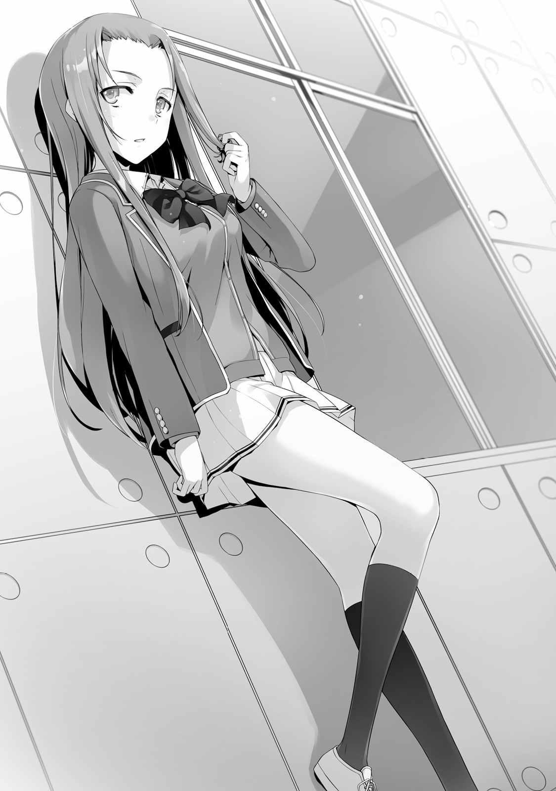
Entiendo los sentimientos de Yukimura y que se irrite, pero por el momento deberíamos dejar eso de lado.
De hecho, ahora que la escuela ha terminado, los estudiantes comenzarán a reunirse en Pallet.
— Así es... Será problemático si no quedan asientos disponibles. Vámonos.
Yukimura recuperó rápidamente su compostura y tomó la iniciativa.
— Debes prestar un poco más de atención a lo que dices.
— ¿Era realmente desagradable lo que decía? Voy a reflexionar sobre esto un poco.
Parece que Hasebe no tenía la intención de ser grosera.
Logramos asegurar cuatro asientos y reorganizamos la situación.
— Uh, bueno, en resumen, por favor, asesórame.
Yukimura se sentó a mi lado, con Hasebe al otro lado de la mesa. Miyake se sentó al lado de Hasebe.
No sé cómo se logró esta reunión o cómo resultó de esta manera, pero un grupo de 4 había logrado integrarse a pesar de la atmósfera de incomodidad.
— Si tienes alguna pregunta, voy a escucharla primero.
Después de decir esto, la única mujer en el grupo, Hasebe, levantó su mano ligeramente y dijo:
— ¿Así que Ayanokouji-kun puede hablar?
— ...... ¿Realmente esa es la pregunta que elegiste hacer?
Hasebe me mira intrigada. Aparentemente es increíble que esté hablando y charlando con ellos.
— ¿Cómo lo digo? No tenía ninguna impresión de ti en absoluto. ¿Eres del tipo de estudiante que ni siquiera se nota cuando está ausente?
No he tenido muchas conversaciones con Hasebe. Incluso si hubiera dejado una impresión, no había forma de que lo supiera. Después de escuchar su comentario, Miyake saca el tema del festival deportivo.
— Pero la forma en que corrió como ancla en la carrera de relevos fue increíble.
Debido a ese evento, Ayanokouji se convirtió en el centro de atención de la escuela.
— Yo quería verlo. Pero fui al baño y me perdí la carrera de Ayanokouji-kun.
Entonces para mí, se siente un poco extraño. ¿No competiste contra el ex presidente del consejo estudiantil? Fue un tema candente justo después de que terminara el festival deportivo.
— ¿Estabas en el club de atletismo en la secundaria Ayanokouji? Después de ver el relevo, llegó un cazatalentos del club de atletismo.
— Ah, bueno, recibí una solicitud, pero me negué.
Después de todo, ese tipo de motivación para reclutar es solo temporal, y no algo que continuaría por mucho tiempo. La gente en el club de atletismo ya no debe estar pensando en mí. Aunque alguien sea buen corredor, si no quiere participar en las actividades del club, no tiene sentido seguir intentándolo.
— Para ser sincero, nunca he hecho ninguna actividad del club, así que no estoy al tanto de la situación.
— ¿Ah, en serio? Qué lástima.
Mientras la conversación continuaba, Yukimura escuchaba sin decir una sola palabra. Hasebe le cambia el tema a Miyake sin preocuparse de la situación.
— Miyatchi está en el club de tiro con arco. ¿Es divertido disparar un arco todos los días?
— No lo haría todos los días si no fuera divertido. Por cierto, el arco no se dispara, la flecha sí.
Él tiene razón.
— No me interesan las cosas del club, así como... soy buena para pasar el tiempo haciendo las cosas que me gustan.
Los dos son bastante diferentes de lo que he experimentado hasta ahora. Son mucho más locuaces de lo que esperaba.
— Oh, Miyatchi, ¿está bien que te pierdas las actividades de tu club?
— Me tomé un tiempo libre.
— Qué relajado.
— Dedicaré mi tiempo a lo que sea máxima prioridad. El club de tiro con arco no es muy estricto, así que no hay penalizaciones en particular.
— ¿Me escucharán por un momento? Quiero decir algo antes de comenzar la sesión de estudio.
Yukimura, que había estado escuchando la conversación callado, habló con calma. La persona en la que enfocó sus ojos no era Hasebe ni Miyake, sino yo.
— Sin secretos como en el festival deportivo, Ayanokouji.
— ¿Eh? ¿Qué quieres decir?
— Estudiando. He oído de Horikita que eres muy capaz en eso.
— ……Esa mujer.
Parece que Horikita le ha dado información innecesaria a Yukimura.
— Soy relativamente bueno memorizando cosas. Creo que puedo anotar muy bien si me concentro.
Si no digo al menos esto, será difícil ganar la confianza de Yukimura.
— ¿Eres del tipo que no hace cosas a pesar de tener la capacidad para hacerlas?
— No puedo compararme contigo, así que no esperes mucho de mí. No soy bueno para enseñar.
— Entiendo. Debes tomar esto en serio para que puedas obtener aunque sea 1
punto más. Como te voy a enseñar, definitivamente obtendrás una calificación más alta de la que tuviste en los exámenes parciales.
Inmediatamente después, Yukimura les preguntó a los demás:
— ¿Trajeron sus exámenes finales del primer semestre y del último parcial como les dije?
— Bueno, sí.
Hasebe habló, y Miyake asintió. Sacaron los papeles de sus mochilas y se los dieron a Yukimura.
Miré los documentos desde un lado y confirmo su contenido. La conclusión que llega de eso allí...
— Ambos son excelentes en ciencias, pero sus resultados en la mayoría de humanidades son devastadores.
La calificación de ambos en matemáticas fue de alrededor de 70 puntos, que era relativamente alto, pero sus calificaciones en la historia mundial y en lenguaje promediaron alrededor de 40. Es claro que estarían preocupados si esto se deja como está.
— No creía que ustedes dos estuvieran en tan buenos términos, pero sí sabía que ambos compartían una debilidad tan clara.
— Cuando estaba estudiando en la biblioteca antes, pude hablar con Hasebe.
Así son las cosas.
— Miyatchi y yo somos tipos bastante independientes. De verdad no quiero involucrarme con la clase.
Estas dos personas tienen una sensación de distancia con la clase y no pertenecen a ningún grupo específico. ¿Es este el motivo de su falta de integración con el resto de la clase?
— Siento lo mismo en ese sentido. Incluso en este grupo en el que estamos ahora, me siento muy incómodo.
— Entonces, ¿por qué aceptaste hacer este grupo?
— Esto no es exactamente un grupo, por así decirlo, es más como un club de estudio. Si hay unas pocas personas, será tranquilo. No me molesta cuando estudio por mi cuenta, así que tendré que pensar en encontrar un nuevo método para estudiar. Lo siento, pero tomará un tiempo para mí.
— Bien. Esperaré y tomaré un descanso para el té, ¿de acuerdo?
Hasebe sacó su teléfono de inmediato y comenzó a relajarse. En estos días, es fácil matar el tiempo siempre que tengas un teléfono. ¿También debo sacar mi teléfono? ¿Qué debería hacer en esta situación?
De repente, sentí una mirada e inadvertidamente envié la mía en esa dirección.
Varios estudiantes nos miraban mientras uno de ellos hablaba a algún lado.
Pude reconocer a los tres estudiantes. Todos eran de la Clase C. Aunque solo podía recordar el nombre de Ishizaki que estaba en el centro.
Espero no quedar atrapado en problemas...
Sin embargo, Ishizaki no vino en busca de problemas. A pesar de que nos miraban de vez en cuando, fueron al frente de la sección de pasteles en Pallet ubicada al lado de la caja registradora. Hay una exhibición de pasteles que se pueden disfrutar con bebidas o se pueden pedir para llevar. Fresa, Matecadas y Mont Blanc parecen ser las opciones particularmente populares, pero no estaba al tanto de los detalles. El empleado juzgó que el grupo frente a él eran clientes y parecía tener dificultades para escuchar la orden de los estudiantes. El empleado no mostraba señales de acercarse a la sección de pasteles, y su expresión se volvió gradualmente nerviosa y se disculpó.
— ¿¡No se te ocurre una forma de hacerlo!?
Ishizaki se puso impaciente y gritó, y el ruidoso café se volvió silencioso por un momento.
— Aunque insista... para un pedido especial, debe encargarse con al menos una semana de anticipación. Es muy difícil preparar algo el mismo día.
Después de escuchar esta respuesta del empleado, Pallet se volvió ruidoso una vez más como si nada hubiera pasado.
— ¿Qué fue eso?
Cuando Hasebe giró su pluma entre sus dedos, miró hacia Ishizaki con una mirada de disgusto.
— Vamos. No nos concierne.
Yukimura no mostró ningún interés y estaba escribiendo algo basado en los exámenes parciales que le dieron. Estaba determinando sus debilidades específicas y planeando qué medidas exactas tomar para seguir adelante.
— Pastel…
No estaba interesado en lo que sucedió con Ishizaki, pero al mismo tiempo, mañana es mi cumpleaños.
Para ser honesto, no tengo una idea clara de cómo pasar un cumpleaños como cualquier persona normal. Solo significa que soy un año mayor.
Realmente no sabía nada. Sé que un cumpleaños es un día en que alguien es celebrado por su familia, su pareja y sus amigos. Simplemente no entiendo las emociones que alguien sentiría en ese momento.
— ¿Qué pasa, Ayanokouji-kun?
— No es nada.
Mañana es 20 de octubre.
Hay muchos estudiantes, personal, maestros y otras personas en esta escuela.
Si una o dos personas tuvieran el mismo cumpleaños, no sería algo fuera de lo común.
La única diferencia entre ellos y yo es si hay o no alguien con quien celebrarlo.
Me pregunto si alguien recordará mi cumpleaños el próximo año.
PARTE 4
— Iré por otra taza de café.
— ¡Ooh, yo también!
Habían pasado más de 30 minutos desde que Yukimura había comenzado a confirmar los resultados de sus exámenes en Pallet. Aún no ha levantado la vista de los papeles, y parece que va a tomar un tiempo para que decida un plan.
Hasebe y Miyake fueron al mostrador con sus tazas vacías. Pallet tenía una política en la que tu segunda taza es a mitad de precio, aunque solo válida el mismo día. Pallet vendía café barato, sabroso y generalmente impecable.
Parece estar creciendo en popularidad entre los estudiantes de primer año.
Hasebe y Miyake ya se estaban preparando para beber su tercera taza, pero Yukimura, que estaba absorto en su trabajo, ni siquiera había terminado la segunda mitad de la primera. Su atención estaba completamente absorbida por los libros de texto, notas y papeles del examen y en considerar cómo hacer el mejor progreso para el grupo de estudio.
— Eso parece mucho trabajo.
— Eso es porque nunca he enseñado a la gente cómo estudiar. Solía
enseñarle a un idiota cómo atiborrarse hasta altas horas de la noche en la secundaria, pero no podía soportarlo. No tenía ningún fundamento, y no era capaz de concentrarse muy bien en el material.
Yukimura dejó su bolígrafo sobre la mesa y miró hacia el techo como si recordara esa vez.
— Ahora no puedo olvidar el tiempo que perdí. Pensé que era estúpido enseñarle a la gente cómo estudiar. Durante el primer semestre, cuando tú y Horikita hicieron un grupo de estudio para evitar que esos idiotas reprobaran, en mi corazón me reía de ti. Lo mismo aplica para el grupo creado por Hirata.
¿No parece una pérdida de tiempo? En primer lugar, alguien que no estudia casi siempre es alguien que odia hacerlo. Puse un día o dos de esfuerzo para deshacerme de las notas reprobatorias, así que si vuelven a cómo estaban las cosas antes, simplemente están perdiendo el tiempo.
En lugar de ser abusivo, Yukimura parecía estar diciendo sus verdaderos pensamientos.
— Entonces, ¿por qué decidiste enseñarnos esta vez?
Es difícil comparar el estudio de una sola noche que Yukimura enseñó en los exámenes finales. Si no estudias a fondo, no deberías esperar superar las dificultades. Yukimura está bajo mucha presión. En caso de que Hasebe y Miyake sean expulsados, probablemente elija asumir la responsabilidad. Si llega a ese punto, asumirá que era su responsabilidad y lamentará que podría haberles enseñado mejor. Ese es el tipo de persona que es Yukimura.
— Fui inútil durante el festival deportivo. Lo que había determinado que era innecesario me alcanzó. La única diferencia aquí es si la escuela tiene como prioridad lo atlético o lo académico.
Ike, Yamauchi, Sudō y otros estudiantes que no estudiaban. Yukimura que no hacía ejercicio. A pesar de sus diferencias, ya que él había juzgado que la escuela determina que estas cosas tienen la misma importancia, llegó a esta conclusión.
— En esta escuela, no es suficiente estudiar. No es suficiente solo hacer ejercicio. Incluso si tuviéramos que combinar los dos, aún no sería suficiente.
Aún personas como Horikita o Hirata, que están bien versadas en ambos, no pueden sobrevivir solos. Intuición, inspiración y sentido común. En última instancia, nos pedirán que mostremos estas cualidades indispensables de la sociedad humana. No hay forma de que podamos hacerlo solo por nuestra cuenta. Es necesario integrarse como equipo y mantenerse unidos. Esa es la única manera.
Yukimura debe haber sufrido toda clase de dificultades para ingresar a esta escuela.
— Así que decidí ayudar. Quiero contribuir con lo que pueda a la clase.
Y eso, por supuesto, es hacer un grupo de estudio.
— También es porque me he dado cuenta de que tengo estos sentimientos egoístas sobre estudiar. Me acordé de mi madre egoísta cuando pensé en esto, así que me reexaminé... No, esa historia es innecesaria. Puedes olvidarlo.
Yukimura, que había regresado de sus pensamientos, se interrumpió y desvió su mirada del techo.
— Quizás si tuviera que ser tutor de Ike, tendría más problemas. Miyake y Hasebe tienen la capacidad de trabajar duro y tomar en serio sus tareas escolares, por lo que es mucho más fácil. Además, ya que son buenos para las ciencias, esto no debería ser demasiado difícil. No sé cuánto podré ayudar, pero puedo esperar que al menos mejoren considerablemente.
Qué pensamiento a futuro... No, ¿sería mejor tomar esto como su respuesta a los dos? A pesar de que solo estaba escuchando en silencio, pudo ver que Miyake y Hasebe tenían una buena actitud hacia las lecciones. Ambos tenían un buen punto de vista y la capacidad de entender el material. Debido a esto, Yukimura sinceramente quería hacer lo mejor para ellos.
— Voy al baño.
Hasebe y Miyake no habían regresado todavía.
Parece que habrá algo de tiempo antes del inicio de la sesión de estudio, así que di esta excusa para dejar la mesa también. Esto fue porque había sentido la mirada no solo de Ishizaki, sino también de otra persona.
Aunque no podía verlo claramente, alguien había estado mirando discretamente hacia acá. Yukimura no me miró para nada cuando me paré, así que fui directamente a donde estaba esta persona. No creo que me haya notado, así que caminé directamente mientras ocultaba mi presencia.
— ¿Qué estás haciendo aquí sola, Sakura?
— ¿¡Hyaa!? —Sakura saltó un poco en su asiento y levantó su vista temerosa—.
Uh... Es una coincidencia, de verdad, ¡Ayanokouji-kun!
— Oh, ¿entonces es una coincidencia?
— ¡Una coincidencia, sí!
— ¿No nos has estado mirando intermitentemente?
— Eso... eso...... Lo-lo siento...
Como Sakura no tiene la confianza para decir una mentira, inmediatamente confesó.
— No parece que tengas algo que decirme, ¿o sí?
Entonces no había necesidad de que viniera aquí. Si era urgente, habría llamado o enviado un correo electrónico.
No tenía nada que hacer aquí, y no es del tipo que le preguntaría a alguien más, así que mirándolo de esta manera...
— ¿También quieres unirte al grupo de estudio?
— ¿Qué? ¿Por qué? ¿Por qué?
— Bueno, la razón es bastante simple. Puedo ver tus materiales de estudio dentro de tu mochila.
No es necesario llevar todos tus cuadernos cuando vas por ahí, pero para un grupo de estudio es una historia diferente.
Hay muchos estudiantes aquí que estaban estudiando solos, pero Sakura nunca elegiría estudiar en un lugar como este.
— Oh, no……
Se asustó un poco e intentó cerrar su mochila, pero ya era demasiado tarde. Esa reacción fue como decir que sí.
— Si estás bien con nuestro grupo de estudio, ¿te gustaría unirte a nosotros?
Preguntaré a los demás.
— Pe-Pero yo... casi nunca he hablado con ninguno de ellos...
Sakura no podía acercarse a nuestra mesa porque no es buena para establecer contacto con otras personas. Entendí esto a pesar de que no lo dijo.
— ¿Has llegado tan lejos tú sola? Si fuera la Sakura que conozco, ni siquiera hubieras podido aprovechar la oportunidad de venir a Pallet y arriesgarte a encontrarte con personas.
No es tarea fácil estar sola en un lugar que está lleno de grupos de personas, grandes y pequeños. La idea de escapar y regresar debería haber pasado por su mente varias veces.
A pesar de eso, se las arregló para permanecer aquí, lo que muestra el estado de ánimo actual de Sakura.
— Depende de ti decidir qué hacer. Es mejor no considerar solo mi opinión en esto. Debes considerar cómo Yukimura, Hasebe y Miyake pensarán y se sentirán sobre esto.
Sakura puede sentirse desalentada por estas palabras.
Podría ofenderse y pensar: “No quiere tomar una postura sobre esto y aceptarme”.
Sin embargo, la actitud pasiva de Sakura tiene sus partes buenas y malas.
Ya que es una cuestión de su progreso como persona, mantener la distancia y esperar a ver qué es lo que ella elige hacer es la mejor política.
Por supuesto, tengo una razón para pensar esto.
A pesar de estar en un grupo ahora, la dificultad para comunicarse con Yukimura y los demás parece ser menor que con otros compañeros de clase. Me siento así a mi manera. Sakura también debe tener una sensación similar.
— Solo piensa en lo que quieres hacer. Nos quedaremos aquí durante la próxima hora y estudiaremos.
Aunque pareciera un poco frío, dejé a Sakura después de decir esas palabras. A pesar de que el café estaba lleno, si pasaba demasiado tiempo al lado del asiento de Sakura, pronto sería descubierto por Hasebe.
Casualmente volví a mi asiento. Yukimura solo me miró y no dijo nada en particular.
Después de esperar unos 2 minutos, los demás se nos acercaron.
— Que larga espera. Entonces, ¿ya terminaste de revisar todo?
— Casi termino.
Yukimura aceleró el paso.
— ¡Oh, sí! Es cierto Ayanokouji-kun, quería preguntarte algo. ¿Bien?
— Basta, Hasebe.
Miyake evita que Hasebe intente preguntar algo.
— Oh, vamos. Da igual, no es un gran problema si alguien más escucha.
— Ese no es el problema. Considera el momento y el lugar, ¿sabes?
— Es después de la escuela, y este es el café de la escuela, así que ahora mismo es realmente el momento perfecto para comenzar con el tema,
¿verdad?
Después de que Miyake vio que Hasebe no tenía intención de retroceder, sacudió la cabeza dándose por vencido.
¿Qué diablos está tratando de preguntarme?
— Ayanokouji-kun, ¿estás saliendo con Horikita-san?
— No.
— ¿Una respuesta inmediata? ¿Debo decir que la respuesta suena bastante ensayada? Para mí, parece bastante sospechoso.
— Ya me lo han preguntado varias personas antes. Horikita y yo no siempre trabajamos juntos.
— Eso puede ser cierto. Pero dicen que los rumores sobre el amor son solo verdades a medias, ¿sabes?
Una chica como Hasebe que prefiere estar sola también parece estar interesada seriamente en el tema del romance.
Un tipo sensato en esta situación no se olvidaría de consultar con Hasebe para saber si tiene novio.
Por supuesto, no hay forma de que yo vaya a hacerlo (simplemente no es posible), así que el tema terminó con eso.
— ¡Bien!
Yukimura de repente levantó la cabeza con toda su fuerza. Parecía que finalmente había terminado su revisión.
— De alguna manera, siento que pude captar dónde es exactamente que ustedes dos están teniendo dificultades. Este es el plan detallado en el que me gustaría centrarme para seguir adelante.
Anuncia esto y pasa las notas que le escribió a Miyake.
— Traté de hacer algunas preguntas sobre artes liberales. También haré que Hasebe las responda, así que no las respondas en mi cuaderno. Escríbelas en el tuyo. El límite de tiempo es de diez minutos para las diez preguntas.
Miyake sacó su libreta sin ninguna queja sobre las preguntas. Entendió que esto era para que produjera los mejores resultados y obedeció las instrucciones.
Después de diez minutos de lucha, pasó las preguntas a Hasebe, como un testigo de una carrera. El propósito de estas preguntas es realizar una investigación más profunda de sus debilidades.
Luego, después de 20 minutos de exámenes, Yukimura inmediatamente comenzó a escribir sus calificaciones en su cuaderno.
— Honestamente, chicos......
Yukimura terminó de calificar los exámenes, y con un suspiro estupefacto, les presentó sus calificaciones.
Tuvieron tres respuestas correctas, seis incorrectas, y la última fue mitad correcta.
Sus exámenes fueron los mismos, pero fue sorprendente que consiguieran exactamente las mismas preguntas correctas e incorrectas.
— No solo son buenos en los mismos temas, sino que cada uno tiene la misma tendencia a memorizar información.
— ¡Increíble! ¿No parece que nuestros destinos están entrelazados, Miyatchi?
— No siento eso.
— Ah, como siempre, tus respuestas son aburridas. Pero, ¿no es esto un problema?
Hasebe regresó a sus sentidos y comenzó a sentirse ansiosa, pero de hecho, era todo lo contrario.
— Sería mejor decir que esta situación está perfectamente bien. Solo se necesitará la mitad de esfuerzo para resolverlo.
Si su capacidad de aprendizaje y sus tendencias son casi las mismas, como dice Yukimura, la carga debería ser más ligera.
La cantidad de personas a las que se debe enseñar se puede considerar esencialmente como una sola.
Por supuesto, debido a que son muy similares, también debería haber un par de diferencias triviales, pero cuando surjan esas situaciones, siempre y cuando sigan sus instrucciones, deberían avanzar sin problemas.
— ¿Sientes que esto será fácil?
— Depende de cuánto esfuerzo pongan a partir de ahora. Estas preguntas fueron algunas de las más fáciles, pero sus calificaciones fueron un poco preocupantes. Creo que es necesario que nos reunamos así regularmente...
En resumen, tendremos que estudiar más. Hasta el día del examen final, me gustaría tener siete u ocho oportunidades para reunirnos. Cierta cantidad de tiempo entre cada reunión será preferible para que puedan estudiar un poco por su cuenta. ¿Están bien ustedes tres con esto? Miyake también debe tener problemas con las actividades del club.
— A medida que nos acerquemos al examen final, la cantidad de actividades del club disminuirá un poco, pero déjame preguntar para estar seguro.
Yukimura asintió a esta petición natural. Luego estaba Hasebe.
— Ah, déjame saber una cosa antes de responderte, ¿bien? ¿Así será como estudiaremos normalmente? No me gusta estudiar, pero cuando se trata de revisar esto y lo otro, creo que puedo hacerlo por mi cuenta. ¿Hay algún beneficio de estudiar en un grupo como este? Sí, sé que tener una persona inteligente que me enseñe aumentará la eficiencia, y vine aquí por el consejo de Miyatchi, pero aún tengo dudas acerca de todo esto.
— No pareces dudar solo de mis enseñanzas— Yukimura notó el tono de la respuesta de Hasebe—. No voy a hacer un grupo de estudio regular. Esto se debe a que, aunque las preguntas de los exámenes pasados fueron escritas por la escuela, esta vez las escribirán otras clases. Las preguntas de la escuela generalmente están dirigidas a ayudar a llegar a la universidad y están estandarizadas para un contenido que es básico o relativamente fácil de estudiar. Para decirlo simplemente, es lo mismo de siempre. Por otro lado, el hecho de que las preguntas serán escritas por otros estudiantes es desconocido. Es difícil formular tendencias y contramedidas para ello. Es por eso que después de considerar esto, es necesario estudiar para estos exámenes.
Miyake estaba convencido con la explicación de Yukimura.
— Es cierto. La clase C definitivamente nos dará preguntas muy difíciles.
— Ah, bueno, no es del todo imposible inferir tendencias y hacer contramedidas.
Puede parecer impensable descifrar las preguntas que la Clase C hará para nosotros, pero ¿qué ocurre si pensamos en la persona que las creará? Por lo que puedo predecir, creo que el creador de las preguntas será “Kaneda”.
Aunque no estoy completamente familiarizado con el nombre, no es uno que nunca haya escuchado antes.
— Es ese asqueroso y espeluznante tipo con gafas, ¿verdad?
— No estoy muy seguro de si estoy de acuerdo con eso, pero ese es probablemente el tipo. Es el mejor estudiante de la Clase C.
Si la información de Yukimura es correcta, sería apropiado suponer que los estudiantes que hayan tenido éxito en sus estudios serán quienes escriban las preguntas.
— Ah, pero si la pregunta resulta ser realmente retorcida, puede ser una escrita por Ryūen o Ishizaki, ¿verdad?
— Eso es imposible. Aunque haya una pregunta trampa, es inverosímil que se te ocurra una sin antes tener un conocimiento sólido en el tema. Intenta imaginarlo tú mismo. ¿Crees que puedes plantear una pregunta de estudios sociales que no se pueda resolver fácilmente?
— ……No, en absoluto. Ni siquiera puedo pensar en un tema.
— Lo mismo aquí. ¿Qué tipo de preguntas sobre estudios sociales se pondrán en el examen?
— Así es como es. Incluso si lo piensas, tu mente mostrará solo el contenido obvio. Los problemas difíciles y las preguntas trampa no son algo que puedas crear fácilmente aunque lo desees. Si miras el libro de texto y te centras a las partes difíciles, la escuela probablemente terminará rechazando la pregunta ya que el problema no se planteó correctamente.
Su conjetura tenía un buen punto. Sin embargo, era demasiado débil para infundir confianza.
— Depende de la escuela decidir finalmente si una pregunta es aceptable o no.
Hice una pequeña intervención en la charla de Yukimura.
— Si es así, necesitamos saber el estándar que tiene la escuela para que una pregunta sea aceptable.
— Es verdad. Si lo supiéramos, no tendríamos que trabajar tan duro.
— Creo que es posible descubrirlo. En resumen, si la Clase D prepara una serie de preguntas altamente selectivas, y las entrega a la escuela para su revisión,
¿no sería posible obtener una respuesta clara basados en qué preguntas son aceptadas?
— Ah, es cierto. Esa es realmente una muy buena idea.
— Eres bastante perspicaz, Ayanokouji-kun.
— En ese caso, parece que tenemos que enviar estas preguntas lo más rápido posible para identificar los puntos de referencia que tiene la escuela. Trataré de pensar en algunas preguntas, pero ¿Horikita o Hirata también estarán dispuestos a ayudar?
— No sé... estamos totalmente separados de ellos ahora, así que los detalles no están claros.
— Eso es preocupante. Eres el único de nosotros que puede mantenerse en contacto con ellos.
Miyake y Hasebe también asienten con la cabeza casi al mismo tiempo.
— Entiendo. Veré qué puedo hacer... pero no esperen demasiado de mí.
¿Horikita y Yukimura planean usarme como un conveniente intermediario?
— Sí, ya veo.
Las dudas de Hasebe parecen haberse resuelto, y había una sonrisa en su rostro.
— Bueno, no tengo ninguna actividad del club, así que vamos a decidir cómo hacerlo en base a lo que funcione para Miyatchi, ¿de acuerdo?
Al decir eso, ella renunció a todos los derechos de toma de decisión.
Cuando Miyake escuchó esto, miró a Hasebe con sorpresa.
— Pensé que Hasebe se iba a negar. Qué inusual, generalmente no quieres involucrarte con chicos.
— Parece que será malo si no me uno al grupo de estudio. Sería mi culpa si me expulsaran de la escuela, pero no quiero involucrar a Miyatchi, ¿bien?
Parece estar de acuerdo por el bien de su amigo Miyake en lugar de por el suyo.
— Bueno, esto debería ser todo por hoy. Planeo realizar la primera sesión de estudio pasado mañana.
Yukimura terminó la primera sesión. ¿Planeaba repasar la dirección de los temas y formular contramedidas hoy y mañana?
Después de eso, incluso cuando habíamos dicho terminábamos y nos fuimos de Pallet, Sakura no vino a hablar con nosotros.
PARTE 5
— Esta es información muy útil. Definitivamente debemos intentar ver qué tipo de preguntas acepta la escuela.
Después de que me separé del resto del grupo y volví a mi dormitorio, inmediatamente me puse en contacto con Horikita.
El objetivo era transmitir la información de Yukimura a Horikita y pedir más instrucciones para seguir.
— Hirata y yo ya estamos trabajando en las preguntas para la Clase C, pero quiero saber hasta dónde podemos llegar con las preguntas trampa.
Compartiré la información contigo. Es genial que todo parezca ir bien, pero
¿podemos estar seguros de que Kaneda-kun creará las preguntas de la Clase C?
— No hay absolutamente ninguna garantía. Pero teniendo en cuenta las preguntas que podría plantear Kaneda es una buena forma de abordar las preguntas durante las sesiones de estudio. No debería haber ningún daño al hacer eso, ¿verdad?
— Es verdad. Si este examen está lleno de problemas difíciles, podríamos tener que hacer nuestro mejor esfuerzo para obtener 80 o 90 puntos.
Si termina siendo más difícil que una prueba dada por la escuela, entonces habrá un límite de cuán altas calificaciones podemos obtener.
— Por cierto, ¿cómo estuvo el grupo de estudio hoy? Si no te importa, ¿puedes contarme al respecto?
No era algo que tenía que ocultar, así que dije la verdad sobre lo que sucedió hoy. Sin embargo, lo exageré un poco. Le dejé claro que había hecho amigos.
Horikita escuchó y no tocó ese aspecto en absoluto.
Lo único que notó fue que había muchas similitudes entre las habilidades académicas de Miyake y Hasebe.
— Parece que no lo hacen a propósito, no obstante es demasiada coincidencia.
— ¿Verdad?
No es inusual que dos personas tengan coincidencias ocasionales, pero que sean tan similares es muy extraño.
— Los vigilaré tanto como sea posible, de todos modos parecen ser lo suficientemente fáciles de controlar.
— Por favor, hazlo. Además, hay otra cosa que quisiera preguntarte. Cuando el grupo de estudio de Yukimura-kun se tome un día libre, ¿podrías venir a mi grupo de estudio para vigilar a todos?
— Esto no es lo que originalmente habíamos acordado, ¿verdad?
— No es diferente en absoluto. No necesitas enseñar, solo quiero que estés ahí para el manejo de la situación.
La palabra manejo es vaga. Es tan vaga que no tengo idea de qué quiere decir con eso. Para mí, es tan confuso como el significado del término “menos que novio pero más que amigo”.
— ...... ¿Qué tipo de manejo?
Pregunté, a lo que ella respondió con un suspiro profundo.
— El problema es que, en comparación con la cantidad de personas que enseñan, hay demasiadas personas a enseñar. En cualquier caso, no puedo supervisar a todos. Me gustaría que supervises si todos estudian bien o no.
— Los maestros de la escuela logran enseñar a docenas de estudiantes por sí mismos. No seas ingenua.
— Puede ser arrogante de mi parte, pero los maestros no son capaces de supervisar a todos, por lo que estudiantes terminan quedándose atrás como Ike-kun. Incluso si las aulas están equipadas con cámaras de vigilancia como en esta escuela, la situación sigue siendo la misma. En clase, su actitud se disimula con éxito, pero al final no se concentran en sus estudios, por lo que nos vemos obligados a una situación desesperada como la que estamos viviendo ahora.
Había pensado que le había dado una respuesta audaz y resuelta, pero en un suspiro, ella había logrado devolver el golpe y desmoronar mi argumento.
— Yukimura-kun está teniendo problemas porque no está acostumbrado a enseñar, pero por mi parte, estoy teniendo dificultades debido a la gran cantidad de estudiantes. Ike-kun y Yamauchi-kun son particularmente problemáticos ya que son menos atentos que los chicos de jardín de niños.
Parece que Ike y Yamauchi asisten a las sesiones de estudio, pero también hacen lo que quieren durante ellas.
— ¿Tienes alguna objeción?
— Ninguna.
— Bien.
— Puedo omitir las sesiones nocturnas, ¿verdad?
— Está bien. La sesión nocturna es mucho mejor que la del día. Aunque en comparación con los chicos con los que estoy lidiando, algunas de las chicas son las problemáticas en ese grupo.
Ya veo. ¿Era la situación que las chicas que no habían planeado participar, eligieron hacerlo para estar con Hirata? Incluso si Karuizawa es su novia, no es malo interactuar con un chico tan atractivo, y no es malo que los chicos atractivos bajo el control de Karuizawa ganen popularidad.
En realidad no participo en esto, pero la escena interesante de su grupo de estudio me viene a la mente.
Ahora que lo pienso, el nombre de Sudō no ha aparecido como una de sus quejas.
— ¿Se ha estado comportando Sudō?
— Sí, él está trabajando en serio. Aunque su nivel aún no ha alcanzado al de un estudiante de secundaria.
Aparte del asunto del estudio, parece que ha estado esforzándose por mejorar su actitud.
— Por favor, estaré a tu cuidado a partir de mañana.
Definitivamente no tengo un buen presentimiento sobre esto.
— Por cierto, aparte del asunto con el grupo de estudio, quiero asegurarme de otra cosa. ¿Cómo está Kushida?
— ¿Qué quieres decir?
— ¿No ha cambiado nada con ella?
— Ciertamente. Creo que ella ayudará lo mejor que pueda. También prometió asistir a las sesiones de estudio todos los días.
Eso no es lo que quería preguntar, pero desde el punto de vista de Horikita, ella no parece tener nada en particular que decir sobre el tema. Después de todo, era el primer día de las sesiones de estudio, por lo que no debería haber tenido la oportunidad de llegar al fondo de esto. Pero desde mi punto de vista, también es cierto que no puedo relajarme y simplemente mirar el problema.
— ¿Ya has comenzado a hacer las preguntas para la Clase C?
— Por supuesto. Como guía básica, planeo incorporar las opiniones de Hirata-kun y Yukimura-kun para hacer las preguntas. Originalmente quería pedirle ayuda a más personas, pero mientras más gente trabaje en ellas, mayor será el riesgo de que alguien las filtre a la Clase C, por lo que esta es una situación muy problemática para mí.
Cierto, las preguntas y sus soluciones son los puntos clave para la defensa de la Clase D. Aunque tratemos de planear un ataque, si nuestra defensa es derrotada, no podremos sobrevivir. De ninguna manera podemos permitir que
nuestras preguntas se filtren. También es posible que entremos en contacto con alguien que esté buscando sondear la información.
— Aun así, será difícil deshacerse definitivamente de los intrusos dado el carácter de Kushida y sus acciones hasta ahora. ¿No puedes asistir a las sesiones de la noche? Será difícil que tengas una reunión con Hirata al respecto.
— Bueno, realmente no puedo negar eso, pero ella tampoco puede actuar descuidadamente. Creo que mientras evitemos pedir su ayuda con las preguntas, no hará nada descarado.
Esto era solo una especulación de ambos. Las acciones que Kushida tomará para moverse son algo que ninguno de nosotros puede predecir.
— Estas preguntas y respuestas son la cuerda de salvamento de la Clase D. No olvides que si se filtran, la Clase D seguramente perderá.
Esto es algo que tendré que considerar por separado del deseo de traer a Kushida de nuestro lado.
El estado actual de las cosas no nos permite dejar una monstruosidad sin vigilancia.
— Evitaré hacer pública cualquier información, pero probablemente no sea suficiente para resolver el problema.
— No me preocupa el hecho de hacer las preguntas, es lo que viene después, cuando hagamos las propuestas a la escuela. Siempre que las preguntas y respuestas se confirmen con Chabashira-sensei el día antes del examen final, el enemigo descubrirá cuáles son.
Durante el festival deportivo, Kushida usó una técnica como esta para mirar la tabla de participación.
Es más que probable que Ryūen le solicite esto a Kushida nuevamente.
— Es decir, no hay otra salida que hablar con ella.
— Aun entonces, ¿qué vas a hacer si la información llega a la Clase C?
— Esa situación... no quiero pensar en ella.
— No puedes darte el lujo de no pensar en eso. Esto implica a toda la Clase D.
No importa cuánto estudiemos y mejoremos nuestras calificaciones, si obtienen casi 100 puntos en todos los temas, no tenemos ninguna posibilidad de ganar.
Si nuestras respuestas son completamente memorizadas por el oponente, perdemos.
— Sí, entiendo que estés ansioso, pero también tengo algunas contramedidas en las que he estado pensando. Ahora que son más de las 10, me gustaría plantear al menos una pregunta más antes de acostarme. Entonces, ¿puedo colgar ahora?
Estuve de acuerdo con ella y terminé la llamada. Descubrí que la batería estaba baja, así que conecté el teléfono a un cargador conectado a un enchufe cerca de mi cama.
El problema actual es similar al que enfrentamos durante el festival deportivo.
Esto se debe a que las preguntas que hacemos actúan como la línea de vida de nuestra clase para los exámenes finales, tal como lo hacía la tabla de participación durante el festival. Ryūen y Kushida no van a utilizar la misma estrategia que el otro. Ciertamente pensarán cada uno en estrategias diferentes.
Horikita dijo que pensaría en contramedidas, pero no sé hasta qué punto lo sean.
Ella debería tratar de convencer a Kushida sin rodeos.
No estoy tratando de reírme de las estrategias de Horikita. Es más como que no hay mucho más que se pueda decir al respecto.
Es solo hipotético, pero si voy a ganarme a Kushida, debería usar el tipo de comportamiento amenazante que hice con Karuizawa. No, tendría que hacer más que eso para hacer que Kushida caiga de rodillas. Sin embargo, todavía no conozco los detalles del pasado de Kushida, así que esa no es una opción para mí en esta situación. Además, no hay garantía de que pueda amenazarla con éxito, ya que la forma en que cada uno maneja las cosas es muy diferente.
Pueden parecer similares, pero en realidad no son lo mismo.
— ……¿Que voy a hacer?
Desafortunadamente, no puedo pensar en ningún otro medio en este momento.
Después de que apagué el teléfono y descansé un rato, llegó un correo electrónico. Era un mensaje de Ryūen.
Después del festival deportivo, le pedí a Manabe de la Clase C la dirección de correo de Ryūen y le envié el archivo de audio. No había recibido respuesta de él hasta ahora.
[¿Quién eres?]
Estas palabras eran las únicas escritas.
— Otro correo electrónico sin sentido...
Soy una persona lo suficientemente agradable como para darle una respuesta a Ryūen. Estoy usando una dirección libre que no se puede rastrear. Debería ser capaz de entender eso, y probablemente era el juego que Ryūen estaba jugando.
Decidí ignorar el correo e irme a la cama.
PARTE 6
Aunque todavía era muy temprano, estaba muy animado y con muchos estudiantes en la biblioteca después de clases.
Estaba lleno de gente, no era como si todos los estudiantes estuvieran ruidosamente inmersos en su charla.
Por lo general, casi la mitad de los asientos no se ocupaban con estudiantes, pero ahora solo era un 10%. Por supuesto, la mayoría de los estudiantes no
estaban leyendo o charlando con sus amigos, sino que estaban inmersos en estudiar para los exámenes finales.
— Huh, ¿así que en esto se ha convertido la biblioteca?
Una estudiante a mi lado murmuró algo sin interés.
Sí, tenía un pequeño problema a mi lado.
Parece que Satō decidió asistir a la sesión de estudio, así que terminó viniendo conmigo a la biblioteca.
No había estado en contacto con Satō después de haber intercambiado información el otro día, así que esto es muy incómodo.
— Esta es mi primera vez en la biblioteca. ¿Qué tal tú, Ayanokouji-kun?
— ...... He estado aquí varias veces.
— Ya veo. Eres sorprendentemente estudioso.
— Es más como que estoy matando el tiempo en vez de estudiar.
— Entonces, para matar el tiempo, ¿vienes a la biblioteca? Eso es extraño.
Di una respuesta para tantear, pero sentí que mi actitud se había vuelto algo distraída.
Esto es porque no sabía en absoluto qué tipo de estado de ánimo tenía Satō.
Sin embargo, Satō también es una chica. Tampoco echaría de menos las sutilezas de estos sentimientos.
— Err... Ayanokouji-kun... ¿te estoy molestando?
— ¿Qué quieres decir, Satō?
— Hah, bueno, de repente dije que iba a asistir a la sesión de estudio.
— No estoy particularmente molesto. Horikita y Kushida, quienes enseñan hoy, tampoco deberían estarlo. Honestamente, espero que estén felices, ¿no?
Hacer que alguien de su clase sea expulsado no es exactamente algo de lo que alguien estaría feliz, y tampoco hay beneficios en ello. Intenté de alguna manera cambiar el tema con este punto.
— No es así……
Por supuesto, esa no es la respuesta que esperaba Satō. Ella se deprimió un poco.
Sin embargo, estar en la biblioteca es un poco problemático. Susurré para evitar molestar a otros estudiantes, finalmente, siendo la distancia entre Satō y yo inesperadamente cercana, podía sentir apenas su respiración.
¿Tal vez esto se pueda clasificar como una de esas escenas preciosas de la juventud? Si es así, la juventud puede ser algo inesperadamente duro ya que esta situación no es feliz para mí en absoluto. Me siento innecesariamente nervioso y no puedo evitar preocuparme por Satō. Estoy especulando sobre sus sentimientos y eligiendo cuidadosamente mis palabras para responder a sus emociones.
Lo que deseo ahora mismo más que nada es volver a casa pronto.
No, ¿ese es realmente el caso?
Me calmé un poco y empecé a pensar la situación nuevamente.
Estoy perdido cuando se trata de cosas que no he experimentado antes. Es un sentimiento demasiado abstracto para ser clasificado como “estar enamorado” y no hay una respuesta clara para ello. Desde mi perspectiva anterior de vivir en un mundo solo de ceros o unos, es natural que mi reacción inmediata sea el rechazo.
¿Pero no vine a esta escuela buscando algo que no sea ceros o unos?
— Todos son tan serios, usan la biblioteca y todo eso.
— Es bastante rutinario realizar sesiones de estudio aquí.
Por casualidad, Horikita escuchó lo que Satō dijo y respondió.
Recuperé la compostura y aparté estos pensamientos de mi mente. Por ahora, concentrémonos en llevar con éxito y de forma segura esta sesión de estudio.
Horikita, que había visitado la biblioteca ayer, no parecía sorprendida por el estado actual de las cosas.
— Ustedes dos, eviten una conmoción como la que hicieron ayer, es posible que hoy no salgan con una advertencia; hay una posibilidad de que los echen de la biblioteca.
— Lo sé, lo sé.
Horikita encontró un asiento vacío mientras advertía a los dos niños problemáticos, Ike y Yamauchi. Aunque más de la mitad de los asientos están vacíos, eso no significa que pueda sentarse en cualquier lugar que quiera.
Parece ser un fenómeno común en todas las escuelas, donde el espacio disponible para los estudiantes de años superiores está separado de los estudiantes de primer año. Se había convertido en una regla tácita que los asientos al lado de las ventanas con buena vista, y los asientos en el café cerca de las bebidas gratis eran asientos prioritarios para los estudiantes de último año.
En este tipo de división territorial, la sección que los de primer año podían usar era un lugar ruidoso cerca de la entrada. Sin embargo, esta vez hay algo más a lo que hay que prestarle atención.
Si es posible, queremos evitar estar cerca de cualquier alumno de Clase C.
— Horikita, ¿qué vas a hacer?
— Si eso es lo que te preocupa Ayanokouji-kun, no tienes que preocuparte por eso. Ya tomé contramedidas.
Alguien en nuestra línea de visión se movió en el área utilizada por los de primer año. Una estudiante que vio a Horikita se pone de pie y nos saluda con un gesto, haciéndonos señas.
Ella es una estudiante de primer año de la Clase B, Ichinose Honami. Un total de ocho estudiantes de la clase B están con ella.
Parece que hay cuatro chicos y cuatro chicas, así que si se agrega Ichinose hay nueve en total.
Basado en la expresión de Horikita, esto no parece ser accidental. Ella vino a presentarse.
— ¿Te hicimos esperar?
— Oh no, en absoluto. Acabamos de llegar. ¿Verdad, chicos?
— Ayer, me encontré con Ichinose-san aquí en la biblioteca y sugerí un grupo de estudio mixto. Como no estamos compitiendo con la Clase B en este examen, creo que podemos ayudarnos un poco.
Horikita hizo ella sola una propuesta que involucra a mucha gente. Esto es lo que quería mostrarme ayer.
Las luces generalmente son seguidas por sombras. Ike y los otros habían logrado calmarse antes de llegar a la biblioteca, solo para que sus espíritus volaran en una dirección extraña.
— Ike-kun, ¿no te lo acabo de advertir?
Horikita agarró a Ike por el brazo tan fuerte como pudo. Estaba asustado como una rana vigilada por una serpiente.
¿Era esta la razón por la que Ike estaba tan entusiasmado con la sesión de estudio? Si vas a estudiar junto a las chicas de la Clase B, es comprensible que se regodeé al respecto.
— ¡Ah! ¿Ayanokouji-kun también vino hoy?
— Eso es porque estoy cerca de reprobar. Puede que tengas que cuidar de mí por un tiempo.
— Está bien.
La biblioteca es un lugar tranquilo, pero no es como que no podamos mantener una conversación. Por supuesto, es necesario hablar en voz baja. Como Ichinose había logrado obtener buenos asientos en la esquina de la habitación, nuestra conversación tampoco era muy notable. Además, la música que fluye a través de la habitación maravillosamente enmascaraba nuestras voces de los demás. Era la Sinfonía nº 6 de Beethoven, “Pastoral”.
No sé quién eligió la canción, pero es una elección relajante y bastante buena.
Sin embargo, Horikita había pensado crear un grupo de estudio mixto. Es probable que los exámenes finales sean más eficientes si se basan en la premisa de trabajar realmente con ellos. Por ejemplo, al intercambiar
información entre clases, un gran número de personas tendrá relativamente mayores puntos de vista a considerar para escribir las preguntas de la prueba.
Pero, al mismo tiempo, también enfrentaremos algunos riesgos. Si hay estudiantes en la Clase B que sean cercanos a alguien de la Clase C, la información puede filtrarse. Por supuesto, Horikita entiende este punto, pero ha elegido unirse por las cosas positivas que traería.
Los estudiantes de cada clase llenan libremente los asientos vacíos.
— Sentémonos aquí, Ayanokouji-kun.
— Ah, bien.
Satō me hizo una seña para que fuera, y tal como lo pidió, me senté en el asiento junto a ella.
— Ooh, Satō. Has estado mucho tiempo cerca de Ayanokouji.
— Naturalmente. Después de todo, somos una pareja.
Para evitar parecer inepto frente a Ichinose, saqué mis libros de texto y notas después de llegar a mi asiento. Incluso si es solo una formalidad, tendré que estudiar.
— Oye, Ayanokouji-kun. ¿Me pregunto cómo debería estudiar?
— ...... Pregúntale a Horikita cosas como esa.
— ¿No es esta una buena oportunidad? Son una pareja, ¿por qué no te ocupas de enseñarle a Satō-san?
Horikita no entiende los sentimientos de otras personas y dijo una cosa tan irresponsable.
— Hubo solo una pequeña diferencia entre mis calificaciones de los exámenes y los de Satō, por lo que probablemente no hay nada que le pueda enseñar.
Quiero recibir algunas clases yo mismo.
Debido a que Ichinose estaba justo frente a mí, respondí rápidamente, pero podría haber fallado.
— ¿Es así? Lo entiendo. En este caso, te enseñaré a estudiar apropiadamente.
Ella respondió de esa manera para que me comprometiera.
— Trabajemos duro juntos, Ayanokouji-kun.
— Ah, bien……
Este grupo de estudio realmente tan preocupante está por comenzar.
Esta corazonada se hizo realidad.
— Ayanokouji-kun, siempre estás tan calmado, y das una sensación de madurez. ¿Cómo eras en la secundaria?
Satō de repente volteó y se inclinó hacia adelante, me miró a los ojos y me preguntó eso. Su uniforme estaba un poco desabrochado en su pecho, y por un momento, el valle de su escote me llamó la atención. Sentí que su respiración era un poco intensa, así que me pregunto si Satō notó esto.
— Era bastante normal. No particularmente llamativo o discreto, y realmente no tan diferente de como soy ahora. ¿Tal vez es la razón por la que soy tan sombrío?
Traté de distanciarme de Satō al describir mi pasado como algo aburrido.
No, no es que Satō no pueda estar enamorada de mí, sino que hay varios pares de ojos incómodos que nos miran.
En particular, Ike y Yamauchi me estaban dando una mirada abiertamente escéptica.
— Ayanokouji-kun no es sombrío. Ah, ¿debería decir que pareces bastante genial o muy tranquilo?
— No creo que “genial” esté relacionado conmigo.
— ¿De Verdad? No sé los demás, pero creo que te describe bastante bien.
Parece que no importa lo que diga, Satō pensará que es interesante y positivo.
En ese caso, tendré que salir de esta situación con la respuesta estándar.
— ...... Bueno, comencemos preguntando cuáles son tus debilidades. ¿Tienes tus exámenes parciales?
— Sí.
Sacó los papeles arrugados de su examen de su mochila y los enseñó. Sus calificaciones para cada tema rondaban los 50 puntos. Estaba fuera del rango para reprobar, pero sus respuestas eran bastante toscas. Las preguntas simples fueron respondidas correctamente, pero las de mayor dificultad eran un desastre.
Es increíble que Satō haya logrado aprobar todos los exámenes hasta ahora sin estudiar.
— ¿Cómo está? ¿Es tan malo?
— Sí... Necesitaremos estudiar juntos ya que estoy casi igual...
— ¡Sí!
Satō asintió de buen humor, pero desearía que hubiera usado una voz más baja.
— ¿No están ustedes dos siendo demasiado íntimos?
Ike dijo esto mientras miraba nuestra conversación a la distancia, y luego nos lanzó una mirada sospechosa.
— Somos una pareja, así que es lógico que trabajemos juntos, ¿no?
En vista de sus sospechas, Satō defendió este examen con una respuesta digna.
— Debes prepárate tú en lugar de comentar cosas que no entiendes.
A Horikita no le importa quién se lleve bien con quién, e inmediatamente reprendió a Ike.
— Tsk, lo sé.
Ike parece muy insatisfecho, pero rápidamente comenzó a prepararse para estudiar.
Esto es realmente el fruto de la educación... ha sido domesticado muy bien.
PARTE 7
La sesión de estudio concluyó sin ningún problema, y todos los estudiantes comenzaban a prepararse para ir a casa.
— ¡Ah, estoy demasiado cansado para estar de pie!
Para Ike, que ni siquiera podía mantener la concentración en las clases normales, las sesiones de estudio después de la escuela simplemente son un infierno.
No estábamos bajo supervisión de los profesores, sin embargo, no había tiempo libre, por lo que era difícil de soportar.
Ike tenía una expresión radiante, pero los ojos de Horikita estaban fríos al verlo.
— No ha terminado con solo hoy. No olvides que hay otra sesión de estudio mañana.
— Yo, entiendo. ¿No está bien que esté un poco feliz? ¡He trabajado duro!
Tan rápido como los conejos, Ike y los demás salieron de la biblioteca.
— La clase D parece tan animada, tanto que casi quiero que compartan algo de eso con nosotros.
— Es peor de lo que piensas, pero entiendo lo que quieres decir. Envidio la estabilidad de la Clase B.
Aunque Ichinose y Horikita deseaban lo que no tenían, el ambiente de la Clase B
es realmente envidiable.
Sobre todo, son callados, tranquilos, y su intención de trabajar unidos como clase es fuerte.
— Entonces, adiós. Horikita-san también, Adiós.
Kushida también dejó la biblioteca con un grupo de otras chicas.
— Sí, adiós.
Ella hizo estos comentarios cortos y se fue sin incidentes. Por el momento, no había nada relevante acerca del comportamiento de Kushida. Se sentía como si se estuvieran investigando y probándose.
— Ichinose-san, ¿puedo hacerte algunas preguntas?
— ¿Hmm? ¿Qué?
— Si es posible, me gustaría que solo seamos tú y yo. Debería tomar unos minutos.
Horikita puso su mirada en los estudiantes de Clase B que estaban esperando regresar con Ichinose.
— Unos minutos, ¿eh? Muy bien, lo siento, ¿podrían esperar en el pasillo?
— Sí, está bien. Podemos conversar mientras esperamos.
Los estudiantes de la Clase B parecen dispuestos a aceptarlo. Ichinose acordó quedarse atrás.
Todos los estudiantes de las Clases B y D terminaron su trabajo y se fueron.
— ¿Debería quedarme?
— Es lo mismo si estás aquí o no, así que haz lo que quieras.
Por un momento, pensé que estaba siendo sarcástica, pero probablemente me facilitó el seguir aquí diciendo eso.
— Entonces, ¿qué pasa?
Es extraño que dos personas estén solas como en esta situación, a pesar de que yo también estoy presente.
Ichinose y Horikita, dos chicas con personalidades contrastantes juntas hombro con hombro.
— Quizás esto es evidente. Ichinose-san, ayudarías a tus amigos si tienen problemas, ¿verdad?
— ¿Uhhh? ¿No es natural querer ayudar si un amigo está en problemas?
— Sí. La clase B ahora está ayudando con las sesiones de estudio. Sin embargo, incluso si deseas ayudar, hay todo tipo de situaciones que pueden ser difíciles de controlar. Situaciones como ayudar a mejorar la capacidad académica, detener el acoso, resolver problemas de dinero o arreglar las relaciones entre amigos o maestros. La gente puede estar en muchos tipos
diferentes de problemas. A pesar de todo, si un amigo con problemas te pidiera ayuda, ¿los seguirías queriendo ayudar?
— Claro que sí. Haría todo lo que pudiera.
Aunque la pregunta era difícil, Ichinose respondió de inmediato. No había ni una pizca de duda en sus ojos.
— Bueno, entonces, ¿hay un criterio claro sobre si consideras a alguien como amigo o no?
Horikita no puede encontrar la respuesta debido a su confrontación con Kushida.
Tal vez está buscando una referencia al hacerle estas preguntas a Ichinose.
— Hmm... estoy un poco confundida. ¿Qué quieres decir con eso?
— Por ejemplo: mientras sean estudiantes de la clase B, ¿estarías incondicionalmente dispuesta a ayudarlos? ¿Aunque sea un estudiante con el que normalmente no interactúas?
— No importa lo que piense de la otra persona, soy una compañera para toda la Clase B. Definitivamente los ayudaré si están en problemas.
— Supongo que fue una pregunta tonta —Frente a la respuesta sin vacilaciones de Ichinose, Horikita suspiró ante la estupidez de su pregunta—. Déjame hacerte otra pregunta tonta. Supongamos que hay alguien en la Clase B que te odia, generalmente con eso se concluye que tendrías una mala relación con esa persona. ¿Podrías ser capaz de que te agrade esa persona? ¿O
terminarían odiándose entre ustedes?
— No sé... Eso puede ser un poco difícil. Si la otra persona está realmente disgustada conmigo, probablemente no podría hacer nada, así que mi única opción sería evitar el contacto con ella para evitar irritarla aún más.
— Entonces, si esa persona está en problemas... ¿Qué harías entonces?
— La ayudaría. Definitivamente —Ichinose respondió esta última pregunta de inmediato—. Aunque que esté disgustada conmigo, ese sería mi problema.
Después de todo, soy una compañera de toda la Clase B.
— La clase B es realmente importante para ti.
— ¡Sip! Todos los que están allí son buenos chicos. Al principio, me decepcionó que no estuviera en la Clase A, pero ahora siento que me han colocado en la mejor clase. ¿Sientes algo diferente sobre tu clase, Horikita-san?
— Bueno... no hay lugar como el hogar. Sorprendentemente la clase D no es tan mala.
— ……Oh…
— ¿Qué fue eso, Ayanokouji-kun? ¿Estás en desacuerdo con algo?
Me sorprendió su elogio hacia la Clase D. Horikita me miró.
— Aunque es grosero de mi parte meterme en medio de la conversación,
¿también puedo preguntarte algo?
— Voy a escuchar todo lo que tengas que decir.
— Entiendo que la Clase B es un aliado incondicional. Horikita y yo somos vagamente conscientes de esa idea. Incluso siento que hacer amigos con personas en nuestra misma situación es algo que es necesario. Sin embargo,
¿realmente puedes decir que las personas en la Clase A, C o D son tus amigos?
— Para mí, Ayanokouji-kun y Horikita-san son amigos muy importantes.
— Entonces, ¿qué pasa si nos encontramos en problemas y necesitamos ayuda?
¿Qué pasa si te suplicamos que nos prestes un millón de puntos?
— Si hay una buena razón para hacerlo, te ayudaré. La cantidad no importa, haría todo lo posible.
— Honestamente... eres generosa hasta el extremo. A este ritmo, terminarás tratando de ayudar a todos ¿estoy en lo cierto?
— Bueno, eso sería ideal, pero la realidad no es tan ingenua. Hay un límite para las cosas que puedo hacer por mi cuenta, y creo que entiendo eso. Incluso si Ryūen-kun tuviera problemas, no podría ayudarlo como a los demás.
Hmm...... Pero, bueno, siempre y cuando no sea gran cosa, elegiría ayudarte.
Déjenme agregar algo. La mayoría de las personas normalmente no pueden manejar esas “grandes cosas”.
— Esa es mi respuesta. Siempre que lo considere amigo, el tamaño de la situación no es un problema.
— Aunque lo aprecio, me pregunto si puedes decir algo así tan fácilmente. Me ayudarás aunque llore y te pida ayuda, ¿no?
— Definitivamente. Creo que todas las personas que considero amigos también entran en mi categoría de “aliados”.
Cuando Horikita vio este nivel de bondad, pareció pensar que estaba siendo objeto de burla. Ella respondió en contraste con su actitud tranquila habitual:
— Entonces, ¿qué harías si Kanzaki-kun y yo estuviéramos problemas?
— Elegir ayudar a los dos... no está permitido, ¿verdad?
— Si te permitiera hacer eso, definitivamente elegirás ayudarnos a los dos.
— Jajaja, me rindo —Presentándole un escenario imaginario bastante irracional, Ichinose no sabe qué hacer—. Lo siento, probablemente no haya una respuesta real. En base a lo que entiendo de la información disponible, dos amigos tienen problemas al mismo tiempo, y ambos acuden en busca de ayuda. A cualquiera que elija ayudar, me mantendré fiel a mis creencias y también mentiré sobre ellas.
La respuesta a la que Ichinose finalmente había llegado era su estilo.
Cuando escuchó esto, Horikita estaba genuinamente sorprendida e impresionada al mismo tiempo.
— No creo en personas tan puramente buenas. Creo que la mayoría de las personas son criaturas que buscan recompensas por sus acciones.
Los ideales que representaba Horikita, lo que sostenía y en lo que creía, hicieron ruido y colapsaron.
— Pero después de oír tus palabras... empiezo a pensar que las personas realmente buenas pueden ser reales.
Dijo sus honestos pensamientos, pero por alguna razón, Ichinose no los aceptaba.
No... ¿Sería mejor decir que ella no podía aceptarlos?
— Esto... Me estás dando demasiado crédito, Horikita-san.
Ichinose ha sido directa y honesta todo este tiempo, pero esta es la primera vez que sus ojos se desviaron. Se levantó de su asiento y fue a la ventana de la biblioteca.
— Eso no es cierto. Al menos, eres una mejor persona que nadie que haya conocido. Eso es lo que pienso.
— No soy una persona tan respetable —Parecía tan sacudida que ni siquiera podía mirar a Horikita a la cara—. De verdad, no es la gran cosa...
Horikita también notó que Ichinose había respondido algo extraño al elogio, y se disculpó.
— Lo siento. Todo lo que quise decir es que eres una buena persona. No quise hacerte sentir incómoda.
— Está bien. No me siento incómoda.
Ella obviamente estaba conmocionada.
En base a lo que hemos visto anteriormente de Ichinose, pensé que no había nada que pudiera afectar su espíritu.
Pero tal vez haya malinterpretado esa parte.
— ¿Eso es todo de lo que querías hablar? No quiero que Chihiro-chan y los otros esperen demasiado, así que ya puedo irme, ¿verdad?
Ichinose se paró frente a nosotros buscando escapar de la situación.
— Gracias por tu disposición a responder mis inexplicables preguntas.
— No hay problema. Bueno, los veré mañana.
Después de que Ichinose salió de la biblioteca, no quedaban muchos estudiantes. Había algunos de tercer año, así como algunos bibliotecarios.
— Volvamos. Todavía tengo trabajo que hacer hoy.
— Aunque solo lo estoy repitiendo, ¿qué vas a hacer con Kushida? Por la forma en que estás hablando, parece que tienes un plan.
Horikita tampoco quiere que se lo pregunten tantas veces, pero debo asegurarme.
— Ella es especial. En cualquier caso, tendré que asegurarme de tener cuidado con la forma en que la persuado.
— ¿Especial?
— He estado pensando mucho en esto. Acerca de qué tipo de vida escolar tendría Kushida Kikyō si no hubiera elegido venir a esta escuela. Supe la
respuesta de inmediato. Sería igual de confiable y todos dependerían de ella, como ahora, y podría hacer deporte y estudiar perfectamente. Habría seguido ese camino hasta la graduación. Accidentalmente le arrebaté ese futuro. Incluso ahora está trabajando con nuestro enemigo, Ryūen-kun, con impaciencia para que me expulsen. Ella no dudó en participar en un ataque contra su propia clase. Por supuesto, nada de esto es mi culpa. Es mala suerte que termináramos en la misma escuela. Pero aun así, para mí, es algo relevante.
Por eso ella está tratando de convencer a Kushida.
Horikita se siente más responsable ahora de lo que esperaba.
No, ¿es que solo está tratando de cumplir con sus obligaciones?
— Tengo algunas sugerencias. ¿Puedo tener tu atención?
— ¿Qué tipo de sugerencias?
— Siento que he encontrado una pieza del rompecabezas para tu reconciliación con Kushida.
— ¿Qué quieres decir?
— Ichinose es una buena persona. Que sea una santa es otro asunto, pero ¿no estás de acuerdo en que en general ella es una buena persona?
— Sí. Para decirlo suavemente, ella indudablemente es una buena persona.
— ¿Por qué no pides prestado el poder de una buena persona y le pides que medie entre las dos? Honestamente, tener una conversación cara a cara con Kushida no te dará lo que quieres. Y si se lo pedimos a alguien de la Clase D, nunca revelara su verdadera naturaleza.
— ¿No sería lo mismo con Ichinose-san? No importa quién sea, siempre que estén en esta escuela, el resultado será el mismo.
— Bueno, ¿hay algún otro estudiante que pueda interceder?
— Eso……
— Si tuvieras que elegir a alguien de toda la escuela, elegirías a Ichinose,
¿verdad?
— No puedo negarlo. Pero aun así, no creo que esta sea la solución adecuada.
— No dije que esta sugerencia lo resolvería todo. Es solo una pieza del rompecabezas, un fragmento que ayuda a llegar a la solución. En este
momento, ustedes dos ni siquiera pueden abrir una conversación. Si Ichinose mediara, la conversación avanzaría.
De hecho, creo que la existencia de Ichinose es el punto de partida para llegar a la solución.
Todo lo que queda es la diferencia en la forma en que se usan las piezas.
— Realmente me has puesto en una situación difícil, pero no voy a involucrarme en algo como esto. Me voy a reunir con otras personas ahora, y luego me ocuparé de este asunto con Kushida-san yo misma.
En otras palabras, ¿no tiene intención de involucrar a Ichinose?
PARTE 8
Después de salir al pasillo, una persona inesperada estaba esperando. Ella saludó con la mano y sonrió, y corrió en cuanto nos vio. Horikita no estaba sorprendida. En cambio, se acercó a ella y respondió afirmativamente.
— Kushida-san, te he hecho esperar por un tiempo.
— Está bien, todavía queda algo de tiempo hasta la hora prometida. ¿De qué estabas hablando con Honami-chan hace un momento?
— Solo un tema trivial.
— Estoy interesada. ¿O es algo de lo que no puedes hablarme?
Su tono y sonrisa permanecían igual, pero pude sentir una fuerte presión que parecía estar dirigida a Horikita.
— Sí, después de todo, no es algo relacionado contigo. Hablemos.
Horikita comenzó a contar de forma natural la conversación que tuvo con Ichinose, haciendo ligeros cambios cuando era necesario.
— Le pregunté sobre qué se podría hacer para tratar a todos por igual.
— ¿De verdad……?
— No voy a ir por las ramas sobre de quién se trata. Me estaba refiriendo a ti, Kushida-san.
— ¿Sabes?, Horikita-san. Tal vez realmente no pueda llevarme bien contigo, pero preferiría que no compartieras una historia así mientras Ayanokouji-kun esté presente.
El verdadero significado de las palabras de Kushida era que ella no quería que Horikita aumentara el número de personas que conocían su secreto.
— O... ¿es que Ayanokouji-kun e Ichinose-san ahora saben algo más?
Una mirada penetrante atravesó a Horikita. Ella aceptó su mirada sin vacilar.
— Lo siento Ayanokouji-kun, pero ¿podrías ir a casa sin mí?
— ...... Supongo que me estoy entrometiendo. En cuyo caso, volveré primero.
Las dejé y fui a la entrada. Después de cambiarme los zapatos, comencé mi viaje de regreso a los dormitorios. En el camino, Horikita me llamó y contesté el teléfono.
— Tú y yo venimos de la misma secundaria, y como sé tu pasado, quieres que me expulsen de la escuela. Estos son los hechos, ¿cierto?
Entonces, una voz amortiguada sonó por el teléfono.
Parece que había puesto su teléfono en su bolsillo y me había marcado. Horikita me está haciendo un servicio especial al permitirme escuchar su conversación de primera mano.
— Qué repentino, ¿por qué traer el pasado tan intempestivamente? No me gusta ese tema.
— Tampoco quiero mirar hacia atrás. Sin embargo, esto es algo que no podemos evitar.
— Veamos, después de todo, casi nunca tenemos la oportunidad de estar solas.
Sí, claro, espero que desaparezcas de esta escuela. Esto es debido al hecho de que venimos de la misma escuela, y que sabes sobre mi pasado.
— Lo he pensado muchas veces. Escuché sobre el incidente, pero no fue interesante para mí ya que no tenía amigos en ese momento. Todo lo que escuché fueron rumores, no la verdad.
— No hay garantía de que no sepas los hechos, ¿verdad?
— Sí. Esa es la razón por la cual este problema que tenemos debe ser enterrado. No importa cuánto lo niegue, no podrás ignorar la posibilidad de que te esté mintiendo. No solo eso, no creo que te sientas cómoda aunque no sepa nada del incidente y elegirás expulsarme de la escuela de todas maneras.
Kushida no lo niega, por lo que Horikita continúa.
— ¿Quieres apostar conmigo, Kushida-san?
— ¿Apostar? ¿Qué significa eso?
El otro extremo del teléfono se quedó en silencio.
Parecieron detener su conversación y comenzar a pensar. Horikita ofreció hacer una apuesta. Esto no es algo que se le ocurrió en el momento, sino algo en lo que había pensado con anticipación.
— No te gusta el hecho de que existo. Es una pregunta inútil, ¿verdad?
— Veamos, mientras Horikita-san esté en esta escuela, no cambiaré de opinión.
— Sin embargo, somos estudiantes de la Clase D. Si no nos ayudamos en el futuro, no podremos avanzar a la Clase A.
— Eso depende de tu forma de pensar. Creo que el problema se resolverá tan pronto como abandones la escuela.
— ¿Y tú tienes alguna intención de dejar esta escuela?
— De ninguna manera. Si alguien se va, serás tú, Horikita-san.
Si bien la calidad es baja y hay muchas partes entrecortadas, las voces de ambas estaban en calma.
— Tampoco voy a abandonar la escuela.
— Entonces no hay manera. No importa qué, no creo que nos llevemos bien.
— Sí... tal vez sea así. Desde ese día hasta hoy, he estado pensando en eso.
Pensando en qué hacer para coexistir.
Tampoco llega una solución. Incluso ahora.
— Entonces llegué a la conclusión de que no importa cuánto luche, es imposible.
— Yo también pienso eso, Horikita-san. No terminará a menos que alguien desaparezca.
— Pero no somos niñas. No voy a avanzar solo retroceder otra vez, pero todavía no confías en mí.
Envuelta en un breve silencio, Kushida preguntó:
— Bueno, entonces, ¿qué vas a hacer? ¿Qué quisiste decir con una apuesta?
— Si obtengo una calificación más alta que tú en este próximo examen final, quiero que cooperes conmigo en el futuro sin ser hostil. No, no esperaré que me ayudes. Sin embargo, espero que no continúes interfiriendo conmigo en el futuro. Eso es.
— ¿Eso significa que quieres tener una batalla personal, independientemente de los puntos totales que obtenga tu pareja?
— Sí.
— Es una mala apuesta, Horikita-san. No saqué calificaciones más altas que tú en los exámenes parciales. Incluso si lo hiciéramos basándonos en la calificación total, sería aún más difícil para mí. Además, no creo que haya mucho para mí si gano.
— Sí. Es natural que las probabilidades sean relativamente diferentes. Por lo tanto…… —En este punto, la voz de Horikita se volvió muy difícil de escuchar—. Basémoslo en las ocho asignaturas del examen final en lugar de la calificación total. Eres libre de elegir un tema en el que seas buena.
Entonces, si tu calificación es más alta que la mía, tomaré la iniciativa de retirarme del programa.
Horikita ofreció una apuesta increíble.
Sería difícil hacer la apuesta si las dos personas tuvieran una diferencia dramática en habilidad.
Sin embargo, todo cambia si la apuesta incluye a Horikita que voluntariamente decide abandonar la escuela.
También establece buenas condiciones para Kushida al permitirle elegir un tema en el que sobresalga.
Si Kushida pierde, no hay necesidad de irse, solo necesita dejar de intentar que Horikita lo haga. Mientras que, por otro lado, si Kushida gana, Horikita que ha estado en su camino, se retirará.
— Esto solo sería un mero acuerdo verbal. Podrías perder y luego hacer como si la apuesta nunca hubiera sucedido. Por supuesto, también podría no cumplir mi parte del acuerdo. ¿Realmente podemos establecer esta apuesta solo en base a la confianza?
— Para evitar ese tipo de situación, creo que he preparado un testigo confiable.
— ¿Un testigo confiable?
— Nii-san¿Podrías, por favor?
— ¡Eh-!
Kushida sonó realmente sorprendida cuando apareció. Yo también lo estaba.
Escuché las palabras del hermano de Horikita desde el teléfono.
Con el fin de mejorar la credibilidad de su propuesta, en realidad reclutó a un tipo tan inesperado como su testigo.
— Lo siento muchísimo, nii-san. Absolutamente tuve que pedir prestado tu poder, así que te llamé aquí.
Entonces, el testigo resultó ser Horikita Manabu. Él es el ex presidente del consejo estudiantil y el hermano mayor de Horikita Suzune.
— Mucho tiempo sin verte, Kushida.
— ……¿Me recuerdas?
— No olvido a la gente que conozco.
Probablemente se estaban refiriendo a sus experiencias en la secundaria. Los hermanos Horikita deberían haber llegado de la misma escuela. Sin embargo, debido a su graduación, debería estar completamente inconsciente de la situación que rodea a Kushida.
— Él es la persona en la que más confío en esta escuela. También debería ser alguien en quien puedas confiar hasta cierto punto. Por supuesto, no le conté a mi hermano ninguno de los detalles.
— Me llamaron simplemente como testigo. No estoy interesado en los detalles.
— ¿Estás bien con esto, Horikita-senpai? Si tu hermana pierde la apuesta...
— Mi hermana es la que hizo la apuesta, así que no es algo en lo que deba entrometerme.
— También juro que no diré nada a nadie en caso de que pierda. La reputación de mi hermano se vería perjudicada si se conociera ampliamente que su hermana es el tipo de persona que se retracta de sus promesas. Nunca me comportaría de esa manera.
Absolutamente este es el mejor margen para una oferta.
— Hablas en serio, Horikita-san.
— Soy alguien que no puede parar y esperar por siempre.
— Bien. Jugaré este juego contigo. El tema sobre el que competiremos será matemáticas. Los términos de la apuesta son como Horikita-san había dicho antes. Si nuestras calificaciones terminan siendo iguales, ¿está bien invalidar la apuesta?
Horikita acepta esto, y la apuesta se confirmó frente al hermano de Horikita. No hay forma de que ellas dos eviten esto.
— Haré mi deber como testigo. Si una de ustedes decide romper el acuerdo, es mejor que esté preparada.
A pesar de que ahora era el presidente del consejo estudiantil destronado, la autoridad del hermano de Horikita aún debe ser grande.
A menos de que su hermano se gradúe, Kushida tendrá que cumplir con su parte del trato.
— Muchas gracias, nii-san.
Después de esto, el teléfono que quedó en silencio durante un tiempo. Parece que están esperando a que el hermano de Horikita se vaya.
— Estaré esperando los exámenes finales, Horikita-san.
— Hagamos lo mejor para nosotras.
— Sí. Para Ayanokouji-kun también.
— ...... ¿Por qué lo estás mencionando ahora?
— Porque no soy estúpida. Le dijiste, ¿verdad? Sobre mi pasado.
— Eso-
— Ah, no tienes que responder. De cualquier manera, no confío en ti, así que no importa. No voy a romper mi parte de la apuesta, para que estés tranquila.
Como Ayanokouji-kun ya ha visto un poco de mi lado malo, de todos modos no importa.
Después de recibir una fuerte reprimenda, la ansiedad e inquietud de Horikita me fueron transmitidas por teléfono.
— Aun así, todavía tengo que responder. Discutí tu situación con Ayanokouji-kun.
— Lo sé. Por alguna razón u otra, lo supe después de mirarte. Además, ¿estás usando tu teléfono ahora mismo? He intentado llamarte muchas veces, pero es como si hubieras estado en una llamada durante toda esta discusión.
No era solo intuición, Kushida tenía la prueba y la convicción de ir a la ofensiva.
— ¿Puedes venir y unirte a nosotras de inmediato, Ayanokouji-kun?
La voz de Kushida vino desde lejos.
Me está llamando. Probablemente sea mejor obedecerle dócilmente.
PARTE 9
Bajé las escaleras y me uní a Horikita y Kushida.
— Yoohoo-
Aunque se parece a la Kushida habitual, es imposible conocer los verdaderos sentimientos ocultos bajo su expresión.
— Estoy perpleja, Kushida-san. Tu visión y su capacidad para actuar son increíbles.
— Gracias, pero no pienses en mí así. Simplemente observo constantemente a mucha gente.
— ¿Por qué llamaste a Ayanokōji-kun? Pensé que nuestra conversación ya había terminado. Si tienes algún problema con el hecho de que le dije algo, solo dímelo.
— No tengo nada de qué quejarme. Es solo que pensé en explicarte las cosas cara a cara. Me preguntaba si podría agregar otra condición a nuestra apuesta.
— ¿Condición?
— Si supero tu calificación, también quiero que Ayanokouji-kun se vaya.
Kushida realmente lo propuso. Había estado pensando en esta posibilidad desde que surgió el tema de las apuestas.
— Es imposible que esté de acuerdo con esa idea.
— En lo que a mí respecta, si hay personas que conocen mi pasado, me gustaría que desaparezcan de una vez. Incluso si Horikita-san deja la escuela, si Ayanokouji-kun se queda, la semilla de mis problemas también se quedará.
— Tal vez sea así, pero esta es mi apuesta, así que no puedo involucrar a Ayanokouji-kun. Si una de las condiciones es agregarlo, es una pena, pero no voy a seguir adelante con esta apuesta.
Horikita parecía haber preparado una respuesta para esto y retiró su pedido antes de que pudiera responder.
Es por eso que nunca me habló de la apuesta. Ella quería evitar comportarse de una manera que me hiciera cómplice.
— Bueno, es una pena. Podría haber matado a dos pájaros de un tiro y haberme ahorrado el esfuerzo.
— Entonces, también soy uno de tus objetivos para la expulsión.
Aunque ya lo había notado, aún era muy decepcionante.
— Jajajaja, no tienes que estar tan apesadumbrado. No es culpa de Ayanokouji-kun, es desafortunado que hayas descubierto mi verdadera naturaleza.
— No es un problema, siempre y cuando él no se lo cuente a nadie, ¿entonces eso no soluciona el problema?
— Si eso pudiera resolver el problema, no habrías hecho esta apuesta, ¿o sí?
— ... Como se esperaba, realmente eres esencial para la Clase D.
Kushida es muy observadora hacia otras personas, por lo que es natural que Horikita reconozca y desee ese talento.
— Has cambiado, Horikita-san. Antes no eras el tipo de persona que diría eso.
— Si siempre tengo peleas con otros, no podré subir a las clases superiores.
Sería un círculo vicioso que durará para siempre.
¿Alguna vez han sido así de sinceras entre ellas?
Por lo general, son muy hostiles entre sí, pero esta es la primera vez que pueden entenderse. Es una cadena de eventos bastante triste.
Si no hubieran venido de la misma secundaria, Kushida definitivamente habría ayudado a Horikita. Si eso hubiera sucedido, Kushida podría influenciar a los estudiantes que Hirata y Karuizawa no podían, y la Clase D se habría unido antes en este primer año.
— La apuesta, puedo participar en ella, ¿verdad? Por supuesto, apuesto a que Horikita ganará.
— Espera un segundo. ¿Qué estás diciendo, Ayanokouji-kun? Esto es entre nosotras dos; no tiene nada que ver contigo.
— Es cierto que así fue como comenzó, pero como resultado de todo esto, me he involucrado. También está el hecho de que estaba escuchando su conversación, eso no es irrelevante, ¿verdad?
Horikita parecía querer evitar más responsabilidades, pero me tomé la libertad de explicar que esta era una buena oportunidad. Incluso si Horikita gana la apuesta y fuera temporalmente excluida de los ataques de Kushida, no había forma de decir con certeza que Kushida solo cambiará de objetivo y enfocaría su energía en mí.
Siendo ese el caso, será más fácil entender todo aquí y ahora.
— Estaría feliz si pudieras hacer eso.
— Pero también tengo una condición si voy a ser parte de la apuesta.
— ¿Hmm?
— Quiero que me digas los detalles del “incidente de la secundaria” que te obliga a expulsarnos a los dos.
Introduje un tema en el que Horikita nunca entraría.
— Eso es-
No me contuve con Kushida. No importa incluso si ella se enoja.
Soy la víctima de una apuesta. Naturalmente, puedo mantener mi ventaja al reclamar mis derechos.
— Tengo derecho a pedir esto. No conozco ninguno de los detalles, pero eres hostil conmigo y quieres que me expulsen de la escuela. Puedes entender que no puedo aceptar eso, ¿verdad? Estás actuando sobre la premisa de que Horikita conoce los detalles del incidente, ¿verdad? En ese caso, no sería diferente que simplemente lo expliques ahora. Mientras ganes la apuesta, tanto Horikita como yo nos iremos, y no tendrás nada de qué preocuparte.
— No estoy interesada en su pasado.
— Aunque no estés interesada, yo lo estoy. No puedo aceptar que mi vida escolar esté en peligro por el capricho de Kushida.
Obstruyo el argumento de Horikita, que intentaba no entrometerse en su pasado.
— No puedo negar el hecho de que Ayanokouji-kun se ha involucrado por completo. Si Horikita-san no hubiera explicado todo en detalle, hubiera esperado que encontraras esto irrazonable. Pero, no podrás volver atrás si te digo, ¿sabes?
— ¿No he llegado ya a un lugar donde no hay vuelta atrás? ¿O estás dispuesta a perdonarme si digo que no sé nada o que no he oído los detalles?
¿Puedes afirmar que no me considerarás un enemigo?
En su mente, Kushida ya me ha marcado como un enemigo. Me he convertido en un objetivo de sus acciones.
No tenemos que esperar a que ella responda. Su respuesta es obvia.
— De ninguna manera.
— En ese caso, dime por qué vale la pena apostar por esto.
Horikita seguramente no entiende por qué estoy haciendo esto. Probablemente piense que no importa, y no debería unirme a la apuesta y arriesgarme a la expulsión. Ella no dijo una palabra delante de Kushida, pero su mirada lo hizo.
Lo siento, pero no puedo escuchar tu pedido, porque tengo la rara oportunidad de exponer el pasado de Kushida Kikyō.
— Ayanokouji-kun, ¿hay algo en lo que seas tan bueno que no puedes arriesgarte a perder ante nadie?
— Soy tan capaz como cualquier otra persona, aprendiz de todos los oficios pero experto de ninguno. Si tuviera que elegir algo en lo que me destaque, supongo que corro un poco rápido.
— Entonces me pregunto si puedes entender. ¿No crees que el mejor momento es cuando sientes el valor en ti mismo y que otros no pueden tener? Es como obtener la calificación más alta en una prueba u obtener el primer lugar en una carrera, ganas el centro de atención. ¿No hay momentos en los que alguien te mira y dice: “tan poderoso, tan genial, tan lindo”?
Por supuesto que lo sé. Las personas son criaturas que desean ser elogiadas.
Nadie odia ser alabado o respetado por amigos o familiares, y trabajar duro para ser elogiado es un motivo justificable. Esto se conoce comúnmente como “el deseo de aprobación”, que es una parte básica e indispensable de la sociedad humana.
— Creo que soy más dependiente de ese tipo de cosas que la persona promedio. Realmente quiero presumir. No puedo evitar querer destacar; quiero ser alabada. Cuando estos sentimientos finalmente se validan, realmente siento lo valiosa que soy y lo maravilloso que es ser yo. Pero sé mis límites. Sé que no importa cuánto lo intente, no puedo ser la número uno en lo escolar o deportivo. Estar en el segundo o tercer lugar no puede satisfacer mi deseo, así que pensé: “Entonces haré algo que nadie más pueda imitar”. Descubrí que puedo ser la número uno siempre que sea más gentil y más íntima que cualquier otra persona.
¿Entonces esa es la fuente de la gentileza de Kushida? Sin embargo, si alguien no tiene dos caras, da una mejor impresión que alguien que se jacta de ser una
buena persona. Son más honestos que un mentiroso que pretende ser una persona amable.
Por supuesto, lo que hace Kushida no es tan simple como ella dice. Porque aunque quieras ser amable, no puedes llevarte bien con todos.
— Gracias a esto, pude ser popular. Alguien que le agrada tanto a los chicos como a las chicas. Confiaban en mí y sentí el placer de ser confiable. La primaria y secundaria fueron divertidas......
— ¿No es doloroso seguir haciendo cosas que no quieres hacer? Si fuera yo, creo que mi corazón no podría mantener el ritmo y terminaría rompiéndose.
Es comprensible que ella pregunte esto. Kushida ha estado haciendo cosas que frecuentemente son imposibles de hacer.
— Es doloroso. Por supuesto que sufría. Todos los días acumulaba tanto estrés que sentía que me quedaría calva. Me tiré del pelo y vomité, todo por la ansiedad. Pero no podía dejar que nadie viera ese lado mío, para que pudiera mantener mi “lado amable”. Así que había soportado y soportado y soportado todo ese tiempo. Pero mi corazón había llegado a su límite. Era imposible dejar que continuara.
Puedo especular que la ansiedad de Kushida ha estado constantemente bajo una tremenda presión.
Sin embargo, ¿cómo ha sido capaz de mantener esto hasta ahora?
— Mi blog fue donde apoyé mi corazón; era el único lugar donde podía desahogar esa presión. Por supuesto, todo estaba escrito anónimamente, pero tenía todos los hechos. Vertí todo mi estrés y finalmente comencé a sentirme a tranquila. Gracias a mi blog, pude sostenerme. Me sentí realmente feliz al recibir palabras de aliento de alguien que ni siquiera conocía... Pero un día, un compañero de clase descubrió accidentalmente mi blog. Aunque había cambiado los nombres de las personas, era imposible no darse cuenta que el contenido se basaba en hechos reales. Era inevitable que terminaran odiando todas las malas palabras que les había dicho a mis compañeros de clase.
— Así es como comenzó el incidente, ¿verdad?
— Al día siguiente, el contenido del blog se había extendido a toda la clase, y fui duramente criticada por todos. Hasta ese momento, había sido de gran ayuda para todos, pero como resultado de esto, la actitud de todos hacia mí cambió. Es egoísta, ¿verdad? El chico que dijo que le gustaba me golpeó en el hombro. Tenía sentido, había escrito en mi blog que estaba harta de sus constantes confesiones y quería que muriera. Una chica a la que había consolado después de que la dejara su novio pateó mi escritorio porque había escrito sobre por qué la abandonaron y se burlaron de ella. Para decirlo simplemente, sentí que estaba en peligro. Más de treinta estudiantes me habían marcado como su enemiga.
Era una batalla que nunca podría ganar. Solo podía ver a Kushida siendo echada de la clase.
— ¿Cómo saliste de esa situación? ¿Con violencia o con mentiras?
Este era el misterio del que Horikita y yo habíamos hablado antes y del que no pudimos llegar a ninguna conclusión.
— No usé “mentiras” o “violencia”. Solo prediqué la “verdad” y expuse los secretos de todos mis compañeros. Cosas como a quién odia alguien, o quién piensa que es repugnante. Expuse las verdades que ni siquiera escribí en mi blog.
Realmente no lo sabíamos La “verdad” es un arma que se puede adquirir a través de la acumulación de confianza. Es una opción que no existe ni para Horikita ni para mí. Su fuerza parece pequeña, pero es una poderosa espada de doble filo que puede usarse a costa de perder la confianza.
— En ese punto, la mayor parte del odio hacia mí fue redirigido hacia otros. Los chicos comenzaron a pelear entre ellos, las chicas se tiraban del pelo y se golpeaban. El aula era un desastre. Todo fue realmente sorprendente.
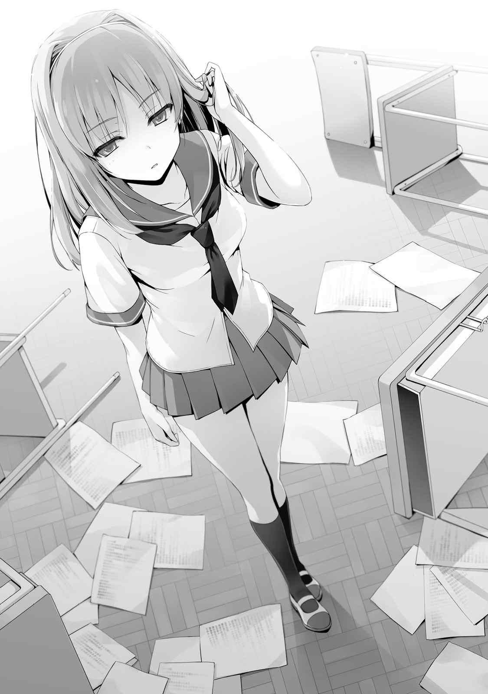
— Esta es la verdad del incidente......
— La clase se volvió inoperable debido al tumulto que había causado. Por supuesto, la escuela me regañó, pero todo lo que hice fue escribir anónimamente en mi blog. Además, estaba diciendo la verdad a mis compañeros, por lo que la escuela no estaba segura de cómo dictar algún castigo.
Hablaba en voz baja, pero cada palabra tenía un peso indescriptible.
— Ahora, a diferencia de la secundaria, no sé mucho sobre los demás en la clase D. A pesar de esto, todavía ostento la “verdad” para hacer que algunas personas se desmoronen. Esa es mi única arma en este momento.
Esto fue una amenaza. Ella quiere decir que si le decimos a alguien, debemos ser conscientes de las consecuencias.
Todo lo que tendría que hacer es usar la verdad, y podría causar una división en la Clase D que comienza a unirse. Si esto sucede, la atmósfera favorable en la clase desaparecería.
— Fue un error usar Internet como una salida para desahogar mi estrés. Tantas personas desconocidas ven lo que escribes, y permanecerá allí para siempre.
Así que dejé de bloggear. Estos días manejo mi estrés sacándolo cuando estoy sola.
Ella estaba hablando sobre el otro lado de Kushida que vi antes. Fue ese momento en que ella había estado escupiendo insultos.
— ¿Quieres permanecer como estás ahora?
— Esto es lo que hace que mi vida valga la pena. Me encanta ser respetada y notada por todos. Cuando me cuentan secretos que solo me han confesado a mí, siento algo más allá de mi imaginación más salvaje.
Para conocer la ansiedad, el sufrimiento, la vergüenza o la esperanza que otros guardan dentro de sus corazones.
Esta era la fruta prohibida de Kushida.
— Es un pasado aburrido, ¿verdad? Pero para mí, lo es todo.
La sonrisa en el rostro de Kushida desapareció. Después de haber revelado su pasado, nos convertimos en sus verdaderos enemigos. De ahora en adelante, ella buscará la victoria sin el más mínimo rastro de simpatía.
— No lo olvides, si gano en matemáticas, tanto Horikita-san como Ayanokouji-kun voluntariamente se irán.
— Sí. Mantendré mi promesa.
Kushida parecía satisfecha con esto, así que se fue para volver a los dormitorios.
— Horikita, ¿está realmente bien hacer esta apuesta con Kushida? Estuvo involucrada con Ryūen. En otras palabras, dependiendo de la situación de la negociación, puede obtener las preguntas y respuestas directamente de la Clase C.
— Si lo sabías, ¿por qué tomaste parte en la apuesta? ¿Es porque crees que no perderé?
— Sí.
No creía en ella. Solo tenía mis ideas antes de participar en la apuesta.
— Aunque dijiste que podría obtener las respuestas de Ryūen-kun, ¿realmente será ese el caso? No creo que deba preocuparme por eso.
— ¿Qué quieres decir?
— Mientras obtenga las respuestas, la victoria de Kushida está casi asegurada.
Eso significa que está garantizado que abandone la escuela. Sin embargo,
¿crees que Ryūen-kun querrá que me vaya?
— ……Es difícil de decir.
Había intentado incriminar a Horikita, pero no intentó obligarla a abandonar la escuela. Es difícil de decir, pero parece que es muy apasionado por conseguir que Horikita admita la derrota. Él no debería encontrar esta forma de victoria muy ideal. Además, todavía no sabe la verdad sobre mí. ¿Descartará a la figura clave que trabaja detrás de Horikita?
— ¿Pero y si miente para obtener las respuestas? Podría decir que quiere aumentar su calificación y mantener la apuesta escondida.
— Ryūen-kun debería ser capaz de ver a través de eso. Si Kushida quiere las respuestas a los problemas de matemáticas, lógicamente Ryūen-kun buscará una razón para eso, ¿verdad?
— Bueno, claro.
Pero aun así, no hay garantía absoluta. Podría engañar a Ryūen con éxito.
Aunque me gustaría que ella lo considerara, será difícil para Horikita ser tan exigente.
— Esta es una apuesta peligrosa y sin garantía absoluta.
— Ese siempre es el caso, no importa qué tipo de examen sea. Es más fácil si te sacrificas.
Para Horikita, debería ser inesperado que participe en la apuesta.
Sin embargo, parece que así es como Horikita había planeado tratar con Kushida.
Lo hizo creíble al traer al ex presidente del consejo estudiantil como testigo, y prometió abandonar la escuela por su propia voluntad y no contarle a nadie de su pasado.
— No hay salida a partir de aquí. Si vas a hacer esta apuesta, absolutamente tienes que ganar.
— Es natural.
Por lo tanto, la batalla donde Horikita apuesta su futuro en la escuela comienza.
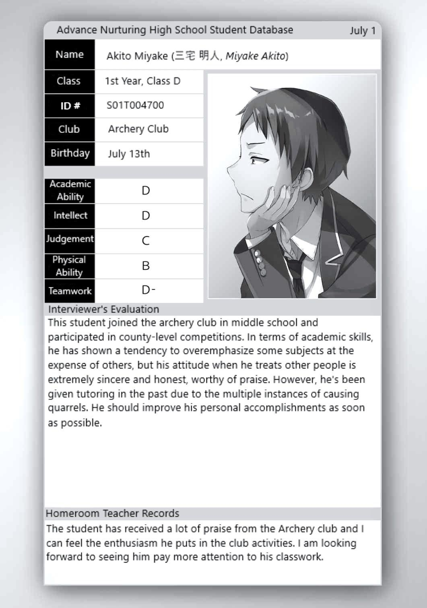
LA FORMACIÓN DEL GRUPO AYANOKOUJI
Los días pasaron volando hasta que llegó el momento en que Yukimura comenzó la quinta sesión de estudio.
Llevamos a cabo la segunda, tercera, y cuarta reuniones en pallet, pero hoy hemos decidido reunirnos en un café en el interior del centro comercial Keyaki.
Esto se debe a que partir de hoy las actividades de los clubs se detuvieron, con el fin de permitir que los estudiantes se concentren en los exámenes finales, entonces pensamos que Pallet estaría lleno de gente.
— Efectivamente, es más ruidoso de lo que esperaba.
Yukimura estaba sorprendido por el número de estudiantes dentro del café. Nos las arreglamos para conseguir asientos, pero el café estaba casi lleno. Grupos de estudio de todos los grados se reunían a nuestro alrededor. Aunque hay muchos estudiantes que están trabajando en silencio, por el gran número de gente, parece que no será una sesión de estudio tranquila como lo es en la biblioteca.
— Debimos hacer esto en la biblioteca o en mi habitación.
— De ninguna manera. Es más fácil hacerlo aquí, pan comido. ¿Verdad, Miyatchi?
— Sí. Tengo suficiente de una atmósfera de tensa calma durante el club de arquería.
Contrariamente a Yukimura, los dos parecen de acuerdo con estar aquí.
La era de estar atrapado en una habitación pequeña frente a un escritorio ha terminado.
Es un método de estudio moderno aprender mientras hablas con un grupo de amigos. Es una evolución degenerativa.
— Ustedes son los que van a estudiar aquí, así que si dicen que pueden concentrarse, les creeré. He preparado el material para hoy.
Los dos se prepararon sin muchas ganas mientras les entregaban cuadernos llenos de preguntas sobre artes liberales que tenían como objetivo sus debilidades. Los renglones de preguntas eran como un festival de fuegos artificiales, con puestos instalados por todas partes. Yukimura parecía estar muy entusiasmado, lo que es comprensible.
— Aagh, hoy también está lleno de preguntas sobre artes liberales... Yukimū no tiene piedad.
Aunque no le guste estudiar, tiene que centrarse en su tema más débil, por lo que es comprensible que Hasebe está angustiada. Miyake parece estar a punto de vomitar. Su mano está presionada contra la boca del estómago mientras mira las notas.
— ¿Cómo puedes tener miedo antes de siquiera comenzar?
— Tienes razón... pero obviamente hay más que la última vez, y parecen bastante difíciles.
— Llegar a esa conclusión antes siquiera de comenzar es una forma común de pensar para los estudiantes que no pueden obtener buenas calificaciones.
En primer lugar, pensar y enfrentar el desafío es lo básico entre lo básico.
Yukimura habló, apasionado por la enseñanza.
— Por otra parte, ¿las preguntas son más fáciles que la última vez?
— Por supuesto que son difíciles.
— ...... Realmente difíciles, tenlo por seguro.
Probablemente lo eran. Es imposible seguir con preguntas fáciles para siempre.
Las preguntas y explicaciones de Yukimura son bastante brillantes. Puede ser un poco, pero me pregunto si es lo suficientemente hábil para desempeñarse como profesor.
Si bien los regaña, nunca los abandona y nunca levanta la voz cuando la otra persona no comprende. ¿Ha crecido Yukimura debido a la influencia de Horikita?
No puedo creer que haya logrado cambiar así.
Durante el primer semestre, Yukimura y Horikita insistieron en que fueron colocados en la clase D por error, lo cual se siente hace mucho tiempo.
— Vamos, Hasebe.
Miyake pareció darse cuenta de que no tenía sentido quejarse y tomó una decisión.
— Estás muy motivado, Miyatchi. ¿Qué sucede, pareces muy apasionado?
— Aunque tengo un descanso de las actividades del club, no quiero pasar mi tiempo libre estudiando. ¿Puedo ir a casa después de que termine?
— Por supuesto.
Yukimura y Horikita enseñan de diferentes maneras. Horikita establece períodos de tiempo exactos para el estudio adecuado, mientras que Yukimura no se adhiriere a períodos de tiempo específicos. Sus sesiones duran hasta que resuelven todo lo que prepara. Por lo tanto, sus sesiones podían completarse antes o después de lo esperado.
Qué método es mejor varía de persona a persona, pero Yukimura eligió hacerlo de esta manera porque Hasebe y Miyake pueden manejarlo hasta cierto punto.
Si se tratara de un grupo de estudiantes que no tienen una base muy buena, como Ike, la forma en que Yukimura hace las cosas sería bastante difícil.
Incluso pueden escribir respuestas sin pensar en la pregunta para terminar antes.
Si eso sucede, déjalos y enséñales hasta que entiendan.
— Si no tienes tiempo libre, entonces simplemente deja el club.
— Quiero participar en las actividades del club, pero también quiero tener tiempo libre.
— Qué egoísta~
De cualquier manera, si ambos recuperan su motivación, no hay nada más que decir. Si uno o ambos abandonan el grupo de estudio, ¿con qué dificultades me saldrá Horikita en el futuro?
La confianza que Yukimura ha nutrido en estas sesiones parece tener un buen efecto en ambos. No puedo imaginar que tengan más dudas sobre el sistema de Yukimura.
— Entonces, Ayanokouji. De hoy en adelante, harás esto también.
— ……¿Perdón?
— Deberías obtener una calificación suficientemente buena, pero tu pareja es Satō. Tendrás que prepararte y revisar las cosas a fondo. Si a los dos los expulsan, no hay vuelta atrás.
— No yo-
— Hazlo, Ayanokouji-kun. ¿O deberíamos morir juntos?
La cabeza de Hasebe, con su flequillo colgando, se inclina como un fantasma.
Me agarra de la mano como si tratara de arrastrarme a las profundidades de un pozo.
— ~~Bienvenido~~
Fui arrastrado por una escalofriante y espeluznante voz y engullido por la oscuridad de las preguntas sobre artes liberales.
PARTE 1
— Por cierto, ¿no hay un Yoshimoto-kun en la clase C? Miyatchi, ¿lo sabes?
— ¿Te refieres a Yoshimoto Kōsetsu? Está en el club de tiro con arco.
— Ooh, sí, ese Yoshimoto-kun. Escuché que comenzó a salir con alguien de segundo año, ¿lo sabes?
Cansada de estudiar, Hasebe comenzó a chismorrear.
— No he escuchado nada al respecto, pero estaba pensando que por alguna extraña razón tenía prisa por irse temprano. Así que eso es lo que era.
En la preparatoria, el obstáculo para salir con alguien incluso un año mayor es bastante alto. Cuando eres un adulto en tus treintas, una diferencia de uno o dos años no parece importar demasiado. Aunque esto es algo que no puedo imaginar como adolescente, esa sin duda es la forma en que funciona.
— Yoshimoto-kun ha estado muy motivado y dice que van a casarse en el futuro. El hombre es un simple idiota.
Hasebe y Miyake lentamente dejaron de estudiar.
— Eres libre de hablar todo lo que quieras sobre quién sale con quién y cómo será el futuro, pero al menos haz tu trabajo mientras lo haces.
— Lo sé. Estamos charlando mientras tomamos un respiro.
Hasebe se había acostumbrado a este tipo de cosas, por lo que no dio señales de ser perturbada por las palabras de Yukimura.
— ¿Está bien eso?
— Wow, estoy obteniendo vibraciones sarcásticas de ti. Voy a llenar mi taza.
— ¿Le vas a poner más azúcar? Estoy sorprendido de que puedas beber algo tan dulce.
— Desde mi punto de vista, no puedo entender a las personas que lo beben solo. ¡Ah!
Hasebe trató de ponerse de pie con su taza de plástico vacía, pero tropezó con la mochila a sus pies y la taza en su mano cayó al suelo.
Mis ojos inconscientemente la siguieron mientras rodaba.
La taza se detuvo a los pies de un estudiante que pasaba caminando.
— Ah, lo sie-
Hasebe comenzó a disculparse, pero la taza fue aplastada por esos pies, por lo que se tragó las palabras antes de que salieran.
— Todos ustedes parecen estar pasando un buen rato. ¿Qué tal si nos unimos?
— Chicos ¿qué están...?
Hasebe inmediatamente se subió su guardia y miró bruscamente al grupo frente a ella.
También era una reacción razonable porque el hombre que aplastó la taza no era otro que Ryūen de la Clase C. Parado detrás de él estaban Ishizaki, Komiya y Kondō, el trío de la clase C visto a menudo.
Ryūen mostró una sonrisa astuta, como si estuviera pensando en algo divertido.
También había una chica que no solía ser parte del grupo de Ryūen de pie junto a Ishizaki.
Tenía una expresión que no era adecuada para la situación, una que carecía de toda tensión.
— ¡Oye! ¿Por qué pisaste mi taza? No fue un accidente, ¿verdad?
— Rodó hasta mi pie y pensé que la habías desechado. La pisé para ahorrarte el esfuerzo.
Rió y le devolvió la taza aplastada a Hasebe con una patada.
Un poco de su contenido salpicó en el suelo por un agujero en el costado.
Miyake, mirando en silencio, se levantó lentamente.
— Oye, Ryūen. He querido decirlo por un tiempo, pero es suficiente con tu actitud de bastardo.
— ¿Huh? ¿Con quién diablos crees que estás hablando?
Como diciendo que Ryūen no necesita molestarse con él, Ishizaki se adelantó y agarró a Miyake por la solapa de su camisa.
— No estaba hablando contigo. Un secuaz debería ocuparse de sus asuntos, Ishizaki.
Miyake no se movió y le quitó la mano a Ishizaki.
— ¡Bastardo!
Gritó Ishizaki, que logró atraer la atención de los alrededores incluso en un ambiente tan ruidoso.
La persona que reaccionó con sensibilidad a esto no fue otra que Ryūen.
— Para. ¿Realmente quieres hacer una escena en un lugar como este, Ishizaki?
— L-Lo siento. Es que Miyake fue tan arrogante, yo solo...
— No odio a los idiotas impulsivos, pero ahora debes comportarte.
— Sí……
Ryūen tenía razón. No hay solo gente de primer año, sino también estudiantes de último año, clientes de la tienda y varias cámaras de vigilancia. Es un lugar público sin puntos ciegos.
Si ocurre un incidente aquí, la Clase C sería claramente la culpable. Es seguro que serían castigados basados en el testimonio y las grabaciones que tendríamos como evidencia.
— No tengo ningún asunto contigo. Estoy interesado en las dos personas de allí.
Ryūen dijo eso mientras cambiaba su línea de visión de Miyake a Yukimura y a mí.
— ¿Has recibido mi regalo?
— De qué diablos estás hablando……
Naturalmente, Yukimura no podía entender de lo que estaba hablando. Me miró como la otra persona a la que Ryūen se refería. El llamado “regalo” es indudablemente el mensaje que envió con las palabras “¿Quién eres?”
— Quién sabe……
Actué como si no supiera. Ryūen había recurrido a medidas realmente fuertes.
No tenía ninguna razón para cavar mi propia tumba respondiendo sus preguntas.
Incluso si trataba de parecer más sospechoso para él, no podía llegar a ninguna conclusión. Esto es porque pase lo que pase, sigue siendo un área gris.
— ¿Qué tal? ¿Captaste algo, Hiyori?
Ryūen nos quitó los ojos por un momento y le preguntó sus pensamientos a la chica de su clase.
— ¿Qué tal? Bueno, no hay forma de decirlo en esta etapa.
Muchos de los estudiantes que trabajan para Ryūen le tienen miedo, pero la chica llamada Hiyori se mantenía totalmente calmada en esta situación. Sus ojos algo fuera de foco se alternaban entre nosotros dos.
¿Qué estaba tramando Ryuen trayendo a esta estudiante?
— Ambas caras dejan una débil impresión, así que probablemente las olvide de inmediato.
— Kukuku, no digas eso. Probablemente serán nuestros amigos por mucho tiempo.
— Yukimura-san...... Ayanokouji-san...... Kōenji-san, ¿quién era la otra persona?
— Es Hirata. Hirata.
— Así es, era Hirata-san. ¿Por qué las caras y los nombres son tan difíciles de recordar?
Estaba envuelta en una atmósfera misteriosa, y estaba bastante preocupada por el uso que Ishizaki hacía de los honoríficos mientras hablaba con ella. La había visto antes y sabía que ella era estudiante de la Clase C.
— Como se esperaba, el único que recuerdas es Kōenji.
— Es único, así que es fácil de recordar.
Parece que Ryūen también ha marcado a Hirata y Kōenji. En el caso de Kōenji, sus acciones eran realmente incomprensibles, pero es de esperar que fuera sospechoso debido a su capacidad.
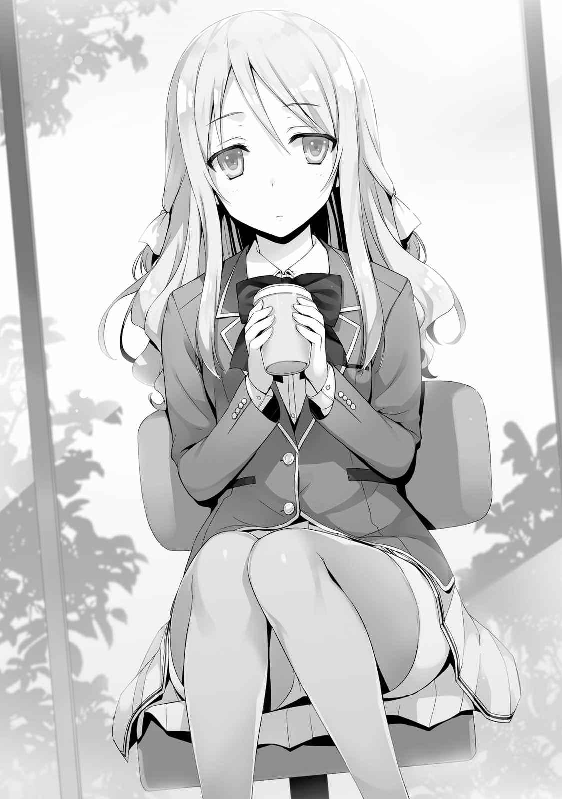
Habiendo dicho eso, se siente como si Ryūen no hubiese seleccionado a Kōenji como uno de sus objetivos si hubiera sabido que no estaba haciendo nada, sino que es un auténtico bicho raro nacido naturalmente.
— ¿Qué diablos te pasa, Ryūen? Estamos ocupados, así que si quieres resolver algo, hagámoslo rápido.
Miyake habló agresivamente, transmitiendo todos nuestros sentimientos con sus palabras.
— No es nada. Por hoy, solo estamos saludando. Pero te lo diré ahora, te veré de nuevo en el futuro cercano.
— ¿Qué significa eso?
Ignorando la pregunta de Miyake, Ryūen dejó el café con su séquito.
El café, que estaba brevemente envuelto en silencio, de inmediato recuperó su vitalidad y volvió a su estado anterior cuando todos volvieron a estudiar.
Sin embargo-
La estudiante llamada Hiyori permaneció aquí, aún nos miraba todo el tiempo.
En estas circunstancias, no hay forma de que podamos concentrarnos con éxito en nuestros estudios. Irritada, Hasebe habló:
— ¿Qué pasa? Estás siendo una distracción quedándote por aquí.
— Un momento por favor.
— ¿Qué? ¿Y eso que significa? Estoy diciendo que estás en el camino, así que ve a otro lugar, ¿de acuerdo?
Hasebe, a quien le aplastaron su taza justo antes, estaba de mal humor.
Enfrentada por la alborotada Hasebe, Hiyori respondió con una sonrisa algo tonta. Agarró su mochila junto a sus pies y caminó hacia el mostrador del café.
— ¿Qué fue eso?
— Quién sabe. No entiendo muy bien lo que está pasando, y no quiero saberlo.
Yukimura parece ser incapaz de comprender las acciones de Hiyori y se perdió temporalmente en sus pensamientos. Como si no pudiera llegar a una conclusión, terminó por ignorar el asunto por completo.
— Creo que ella es Shiina Hiyori de la Clase C. La he visto antes.
Parece que solo Miyake logró recordar su nombre.
Esta Shiina en cuestión, hizo un pedido al empleado del café y regresó con dos tazas en la mano.
— Si no te importa, acepta esto.
— ¿Qué quieres decir? ¿Por qué me lo estás dando?
— No tienes que tener cuidado de mí. Estaba viendo lo que sucedió antes, y está claro que Ryūen-kun está equivocado. Me gustaría pedir disculpas en nombre de la Clase C. Me tomé la libertad de agregarle azúcar yo misma.
— Le pusiste...... ¿eh? ¡Esto es completamente delicioso! Es como,
¡exactamente lo mismo que estaba bebiendo antes!
— La taza que fue destrozada antes tenía mucha azúcar asentada en el fondo, así que pensé que te gustaría que tu café fuera dulce. Me alegro de no haber cometido ningún error.
— Pero, ah, parece que tiene exactamente la misma cantidad de azúcar que me gusta ponerle... ¿esto es una coincidencia?
— Calculé a la inversa en función de la cantidad de azúcar que no se había disuelto en tu última taza.
— ¡¿Eh?! ¿¡puedes hacer eso!?
— Supongo que podría considerarse sorprendente. A pesar de cómo me veo,
¿tengo una percepción bastante buena? —Con eso, volteó hacia mí, Yukimura y Miyake—. Este... Ustedes están teniendo una sesión de estudio,
¿verdad?
— La gente como ella consume toda mi energía...
Hasebe estaba irritada hasta ahora, pero se había sentido completamente abrumada por el ritmo inescrutable de Hiyori.
Desde el punto de vista de Yukimura, no quería arriesgarse a darle información adicional a Hiyori, así que rápidamente cubrió las notas de todos.
— Por casualidad, ¿crees que soy una espía?
— Ni siquiera necesitas preguntar, por supuesto que sospechamos de ti.
— No haría algo como eso. Después de todo, normalmente mantengo mi distancia de Ryūen-kun.
— ¿Pero Ryūen-kun no te llamó por tu nombre muy íntimamente?
— Personalmente solicité acompañarlos porque estoy interesada en la Clase D.
Los tres no podían entender el razonamiento detrás de lo que Hiyori había dicho e inclinaron sus cabezas hacia un lado.
Por supuesto, los imité, pretendiendo no entender la situación.
— ¿No lo saben? Es un tema candente en la Clase C. Hay una mente maestra en la Clase D que está ocultando su verdadera habilidad. Aparentemente, esta persona hizo grandes contribuciones al progreso de la Clase D durante el examen de la isla deshabitada, el examen en el crucero y durante el festival deportivo. ¿Realmente no saben?
Hiyori dice una verdad que la mayoría de la Clase D no ha podido descifrar. Por supuesto, había signos de interrogación sobre Hasebe y las cabezas de los otros.
— No tengo idea. ¿No estás hablando de Horikita?
— Sí. Solo puedo pensar en Horikita-san.
— Al parecer es alguien diferente a Horikita Suzune-san.
Hiyori les impidió llegar a esa conclusión.
— Ayanokouji-san, he oído que pasas mucho tiempo con Horikita-san.
— No ha sido así recientemente, pero creo que he pasado mucho tiempo con ella en comparación con cualquier otra persona.
— Después de todo, te sientas junto a ella.
— Aun así, apenas hay alguien más inteligente que ella.
— Sí, esencialmente todas las estrategias de Clase D son cosas que se le ocurren.
Hasebe y Miyake convenientemente estuvieron de acuerdo en un buen momento, agregando credibilidad a lo que dije.
No necesitaría confirmar o negar nada acerca de que los dos pasáramos tiempo juntos.
Solo es importante que diga la verdad desde el punto de vista de un estudiante típico de Clase D.
— Ya veo. Todos ustedes tienen el mismo tipo de evaluación de ella.
— ¿Puedes dejar de molestarnos al mencionar cosas tan inexplicables?
Yukimura habló con fuerza, siendo influenciado gradualmente por la atmósfera peculiar de Hiyori.
Parece que no puede soportar la idea de reducir aún más su tiempo de estudio.
— ……Lo siento. Es mi culpa por perturbar sus estudios, ¿verdad?
— Lo siento, pero así es como es.
— Realmente no tienes que ir tan lejos, Yukimū.
— Si no tienes quejas sobre reprobar y que te expulsen, entonces claro, tengan una buena conversación. Me voy a casa.
— Ah, por favor, perdóname. Por favor, continúa enseñándome.
Hasebe inclinó la cabeza.
— Así es. Si deseas hablar de temas extraños, hazlo después del examen.
Yukimura terminó la conversación con Hiyori a la fuerza, por lo que Hiyori se levantó de su asiento en tono de disculpa.
— Lo siento mucho. Sería peligroso que dejaras de estudiar desesperadamente para el examen.
¿Fue eso un golpe para los estudiantes que corrían el riesgo de reprobar?
Siento que siempre tiene un temperamento natural, pero no está claro si se puede confiar en ella.
— Ya veo, hablemos de eso después de los exámenes finales. No debería ser demasiado tarde en ese punto.
Habiendo decidido irse a casa, Hiyori recogió su taza.
— Gracias por el café, fue un verdadero placer.
— No, no, no fue nada especial. Entonces, adiós.
Después de esto, Hiyori, que había aparecido junto con Ryūen también se fue.
No estoy seguro si ella es parte del plan de Ryūen para encontrarme, pero no hay nada de malo en mantenerse alerta.
Por el momento, tendré que vigilarla.
PARTE 2
Como todos vivimos en el mismo dormitorio, inevitablemente regresamos juntos.
Yukimura siguió revisando el progreso de la sesión de estudio de hoy en su teléfono.
— Ha pasado mucho tiempo desde que estuve tan concentrado en estudiar.
Seis horas en clase, más dos horas después, ¿verdad? Incluso estudiantes de todo el mundo no tienen que hacer tanto, ¿no?
— Pero los estudiantes de la Clase C nos hicieron perder el tiempo al interrumpirnos a la mitad de la sesión.
— No cedamos ante esa interferencia. Yo diría que hoy hemos estudiado mucho.
Los dos caminaban mientras conversaban, satisfechos con sus esfuerzos. Al escuchar esto, una expresión de molestia apareció en la cara de Yukimura.
— Están bromeando. Cuando comiencen los exámenes de ingreso a la universidad, deberán estudiar después de la escuela durante al menos tres horas, y si pueden hacerlo, hasta cuatro. Por supuesto, todos los días. Y a medida que se acerque el examen, tendrán que tomar la iniciativa y estudiar durante más de 10 horas por día.
— ¿¡Eeeh!? ¡De ninguna manera! No puedo estudiar así Yukimū. Ya deberías saberlo.
— Mi hermana mayor es maestra. Siempre hace esto antes del examen.
— Es un linaje familiar de élite. Yukimū, ¿también pretendes convertirte en maestro en el futuro?
— No hay nada particularmente de élite en ser maestro. Además, no pretendo ser maestro. Si quisiera ser maestro, ¿por qué vendría a una escuela donde el sistema de enseñanza está tan desconectado de la sociedad normal?
El camino para convertirse en maestro no es fácil. Sin embargo, generalmente es varios niveles menos complicado que el de un abogado o un contador reconocido, y no hay un beneficio real al elegir esta preparatoria en particular.
Además, a Yukimura no le molesta estudiar, y sus capacidades académicas están más allá del promedio. Entonces es aún más cierto.
— Entonces, ¿por qué elegiste venir aquí?
— ...... No importa cuál sea el motivo. ¿Quieres interrogar a todos sobre las razones por las que eligieron inscribirse aquí? Después de que te pidan explicar tu situación, comprenderás cómo se siente.
Hasebe fue reprendida, pero desafortunadamente su respuesta terminó siendo contraproducente. Hasebe no respondió con renuencia, sino que tomó la iniciativa de dar la primera respuesta.
— Bueno, para mí, creo que fui una de las personas que se sintió atraída por la publicidad de la escuela, ¿sabes? Si te promete trabajo o educación superior después de graduarte, ¿por qué no elegiría venir aquí? ¿No es eso suficiente para motivar a la mayoría de la gente?
— Añadiré algo sobre eso. Otra razón para venir aquí es que esta escuela no cuesta un centavo. Sin mencionar que la vida en el dormitorio generalmente cuesta dinero, tampoco tenemos que pagar nada por eso. La escuela incluso nos permite vivir en el campus sin la necesidad de puntos privados, ¿verdad?
Aprecio ese aspecto más que la garantía de algo que hacer después de la graduación.
— Eso es una exageración. Es realmente increíble poder trabajar o estudiar en cualquier lugar que quieras.
— Eres libre de hablar de tus sueños, pero primero pasa los exámenes finales.
El sistema con el que Hasebe fantasea no significa nada si no te gradúas en la Clase A.
— ¿No habrá alguna forma de bonificación? ¿Algo como que la escuela miente sobre que solo sea para la Clase A, y que se nos permitirá ir a donde queramos siempre que nos graduemos sin complicaciones?
— Eso es imposible. Si ese fuera el caso, seguro que las noticias ya se habrían extendido entre los estudiantes. Pero nunca escuché algo así, incluso durante las actividades del club. Más que eso, el segundo y tercer año de la Clase D parecen bastante miserables.
Nunca he estado involucrado en ninguna actividad del club, así que no sabía prácticamente nada sobre esa parte, pero definitivamente no había ambición en los de tercer año de la Clase D con los que había estado en contacto a principios de año.
— Aunque es una escuela que está bajo la administración directa del estado, cuando se ve que no brinda ningún tratamiento especial a los estudiantes que no son de la Clase A, puedo imaginar que influirá negativamente, no positivamente, en mi capacidad de obtener un trabajo o continuar con la escuela después de que me gradúe porque me verán como un estudiante que no pudo pasar a la Clase A. Debido a esto, definitivamente debo graduarme como parte de la Clase A.
— Err... Eso sería lo peor.
Para una escuela prestigiosa y bien conocida, serás altamente valorado si te
“gradúas” y tienes “logros personales”. Sin embargo, como había dicho Yukimura, en el caso de esta escuela, incluso si te gradúas, existe la posibilidad de que puedas ser calificado como un estudiante que no pertenece a la Clase A.
Esta idea se ve respaldada por la existencia de estudiantes como Ike, que tienen un potencial académico decepcionante. En resumen, los requisitos de entrada aquí no tienen nada que ver con los resultados de tus exámenes.
Es imposible que las universidades y las empresas no sientan sospechas después de ver este aspecto de nuestra escuela.
— Miyatchi, estoy sorprendida de que sigas viniendo a cada sesión de estudio.
Realmente estaba segura de que ibas a rendirte inmediatamente.
— ¿No eres tú la más rara aquí? En primer lugar, generalmente no quieres tener nada que ver con los chicos.
— Bueno, supongo que sí... pero creo que está bien si son ustedes tres.
Hasebe parece tener sus propias ideas.
Pensé que era el momento adecuado, así que decidí hacer una pregunta.
— Hasebe, tengo algo que preguntarte, ¿bien?
— ¿Hm?
— ¿Tú y Satō son cercanas?
— ¿Satō-san? No, no somos súper cercanas ni nada, y en primer lugar, no me gustan los grupos grandes, ¿sabes? Si estás interesado en Satō-san, ¿no sería mejor preguntarle a Karuizawa-san?
Si eso fuera posible, entonces no estaría teniendo dificultades con esto.
Es un problema difícil de hablar con alguien que está involucrado en la situación.
— ¿Qué hay con eso?
— Erm-
No sé cómo decirlo, y sé que no puedo decir la verdad. Yukimura notó que estaba en un aprieto y dijo:
— Entiendo por qué te sientes preocupado ya que ella es tu compañera para el examen final. Es perturbador no conocer sus fortalezas y debilidades.
— Aah, ¿es así? Dijiste eso hace un tiempo.
— Aunque quiera preguntar directamente, no tenemos mucho en común, así que no puedo hacer eso.
Dando sus condolencias, Hasebe puso ambas manos juntas.
Sin embargo, se le ocurrió una nueva idea e hizo otra propuesta.
— Si es difícil preguntarle a Karuizawa-san, ¿por qué no le preguntas a Kyō-chan? Ella y Satō-san son muy cercanas, y deberías poder preguntarle a Kyō-chan, ¿verdad?
— ¿Huh? Kyō-chan?
Nunca antes había escuchado el apodo que estaba usando, así que no tuve más remedio que preguntar de quién estaba hablando.
— Me refiero a Kikyō-chan. Ayanokouji-kun, hablas mucho con ella, ¿verdad?
¿Entonces Kikyō se convierte en Kyō-chan? No entendí, pero tiene sentido ahora. Kushida definitivamente está calificada. Ella conoce bien las circunstancias internas de la clase, y si no fuera por la situación con Horikita, no habría dudado en pedirle ayuda. Sin embargo, como están las cosas ahora, no sé si ella es alguien en quien puedo confiar.
Miyake ofreció su apoyo después de haber rechazado el consejo de pedir ayuda a Kushida.
— Dejando de lado a Karuizawa, ¿No está bien preguntarle a Kushida? Ella parece ser popular entre chicos y chicas. ¿Qué piensas de ella, Hasebe?
— Sí. Odio a muchas chicas, pero me gusta Kyō-chan. Ella hace mucho trabajo duro por el bien de la clase, pero siempre se las arregla para mantenerse alegre. Normalmente no me gusta consultar con la gente, pero Kyō-chan es un poco especial. Está dispuesta a escucharte, y nunca iría a hablar de eso con alguien más.
— ¿Tienes problemas que justifique que la consultes?
— Wow, eso es grosero Miyatchi. Las chicas jóvenes de mi edad tienen muchísimos problemas.
— ¿Cómo cuál?
— Eso...... quiero decir, ¿por qué debería decirte? Definitivamente vas a hablar de eso.
— No, yo no... bueno, no puedo decirlo con certeza. Depende del contenido.
Está claro que no podré hablar sobre mis problemas con estos tipos.
— Si hay algo que te preocupa, lo mejor es discutirlo con Kushida. Estoy de acuerdo con eso.
— ¿Verdad? No sé si estás enamorado de Satō-san, pero nunca se lo diría a nadie.
— ¿Qué? ¿Te gusta Satō, Ayanokouji?
— No dije nada de eso. Acabo de preguntarle a Hasebe si estaban en buenos términos.
— ¿No es sospechoso? Nunca has sido muy cercano a Satō-san hasta ahora,
¿verdad?
— Ayanokouji dijo que estaba interesado en Satō porque son una pareja. ¿Ya lo has olvidado?
Incluso frente a las palabras de Miyake, Hasebe no se retiró.
— Eso es cierto, pero no parece que eso sea todo. La forma en que me preguntó al respecto me hace pensar que hay más.
De vez en cuando, una chica tiene un radar incomprensible. Esto es lo único que realmente no puedo vencer.
— Ah, es cierto. ¿Está bien si pasamos por la tienda de conveniencia por un segundo?
El tema llegó a su fin debido a la abrupta propuesta de Miyake. Fue un verdadero salvavidas.
Sin embargo, está claro que Kushida se ha convertido en una existencia indispensable para la Clase D.
Cada vez que miras en lo que ha sucedido hasta ahora, Kushida siempre ha logrado involucrarse en todo. Y, sin embargo, nunca llevó a cabo algún reclamo fuerte, y siempre trabajó devotamente para apoyar a otros, participando en actividades donde se sacrificaba. Y ahora el movimiento de esas bases están obteniendo resultados de forma constante.
Ella es uno de los miembros más fuertes con una personalidad algo distinta, y ninguno de sus compañeros de clase habla mal de ella.
Cuando alguien no está, las primeras cosas que la gente suele decir son negativas y que no pueden decir cuando esa persona está cerca, pero es increíble escuchar solo cosas buenas.
— Ah, yo también. Ustedes dos también vengan.
— Eres como una niña.
Yukimura dijo eso, pero no parecía estar tan renuente.
PARTE 3
Los cuatro estábamos afuera de la tienda de conveniencia disfrutando de un helado que habíamos comprado.
— Comer helado mientras está un poco frío es delicioso.
Hasebe dice eso mientras lleva hasta su boca una bola de helado de vainilla con una fina cuchara de madera.
Yukimura, por otro lado, no parece comer helado con mucha frecuencia, ya que todavía estaba leyendo los ingredientes.
— Ésta solo es una lista de conservadores y colorantes para alimentos.
— Wow, ¿cómo puedes comer algo si estás preocupado por ese tipo de cosas?
— Me gusta prestar atención a la comida que como. Empecé a pensar en ello después de lo que pasó con mi condición física durante el examen de la isla deshabitada. Ahora consigo mi comida en la sección orgánica del supermercado en el Centro Comercial Keyaki.
— Eres un tipo realmente serio.
Parece que Yukimura recientemente se convirtió en una persona consciente de su salud.
— En primer lugar, los artículos en la tienda de conveniencia cuestan mucho. Si estás dispuesto a hacer un pequeño viaje al centro comercial, puedes conseguir lo mismo a un precio mucho mejor. ¿Por qué no hacen sus compras un poco más eficientemente?
Lo señaló al mirar a Hasebe, que también había comprado muchos comestibles junto con el helado.
— Yukimū, ¿eres por casualidad uno de esos extraños tacaños?
— Siempre me ha importado eso. ¿Y a qué te refieres con Yukimū?
— Eres Yukimura-kun, así que Yukimū. Cuando quiero hacer amigos, comienzo con apodos. Miyatchi, Yukimū y Ayanon. Hmm, aunque Ayanon no suena tan bien.
Antes de darme cuenta, me habían dado el sobrenombre de “Ayanon”.
— No me llames Yukimū, es embarazoso.
— ¿No te gusta?
— ...... Ya te dije que es vergonzoso.
— ¿Y qué?
— Pero delante de los demás, Yu-Yukimū es un poco......
Yukimura dejó de hablar. Hasebe le responde con una cara seria.
— Llegué a esta conclusión después de darme cuenta de que nuestra relación podría no ser tan mala.
— ¿Una relación digna de un apodo?
— Por Dios, todos somos, como… del tipo de personas que se apegan a sí mismas, ¿verdad?
— Bueno, eso es cierto. No puedo negarlo.
— ¿Debo decir que una vez que experimente este grupo, me sentí inesperadamente cómoda con los resultados? Y Yukimū y Ayanon también tienen muy pocos amigos. El segundo semestre está a más de la mitad, así que decidí que realmente quiero formar un nuevo grupo de amigos con estas sesiones de estudio. Por lo tanto, no estoy tratando de recuperar el tiempo perdido, pero para poder acercarme a ustedes lo más rápido posible, quiero llamarlos por un sobrenombre o por su nombre. ¿Qué piensan?
Ella nos preguntó. Después de que quedó claro que Yukimura y yo no podíamos responderle, Miyake respondió:
— Sí. Estoy sorprendido porque no está nada mal. Siento que encajo. No me llevo bien con Sudō y su grupo, y Hirata se siente como una existencia completamente diferente, siempre rodeado de chicas.
— Lo sé, ¿verdad? ¿Y ustedes dos?
Tanto Hasebe como Miyake parecían aceptar que nosotros cuatro formáramos un grupo. ¿Yukimura todavía se rehusará?
— Solo estoy con ustedes para supervisar sus estudios. Cuando finalicen los finales, el grupo habrá cumplido su propósito, pero... supongo que estos exámenes finales no serán la última vez. Por supuesto, está el tercer semestre, y tampoco hace falta decir que habrá más exámenes hasta la
graduación. Entonces... No me importa formar algo por el bien de la eficiencia.
— Lo que dices es confuso, pero gracias de todos modos.
— Hmm...... Bien. Esto es solo para evitar que tengan que abandonar la escuela y bajen las calificaciones de la clase.
— Entonces solo queda Ayanon, ah, pero ¿es difícil porque ya estás en un grupo con Horikita-san? Además, a veces también haces cosas con Ike-kun y Yamauchi-kun.
— No puedo decir si es para bien o para mal, pero al menos sé que esos dos son bastante diferentes del tipo de persona que soy, ya que tienen muchos aspectos con los que simplemente no soy compatible. ¿Debo decir que no tengo que forzarme cuando estoy cerca de ustedes? Para ser sincero, me siento relajado. Horikita y yo solo nos sentamos al lado. Interactuamos mucho, pero no estoy particularmente en un grupo con ella.
Estos eran mis verdaderos sentimientos.
— ¿Es así? En ese caso, está decidido. Seremos el Grupo Ayanokouji a partir de ahora. Por favor, trátanos bien.
— Espera. ¿Por qué lleva mi nombre?
— Tú eres quien nos ha reunido a todos. ¿No estás de acuerdo con eso?
Miyake también estuvo de acuerdo con la opinión de Hasebe. ¿Qué hay de Yukimura?
— No tengo objeciones. Me molestaría si elegimos llamarnos el grupo Yukimura.
Lo aceptó sin resistencia.
— Una última cosa antes de inaugurar el grupo. Vamos a prohibir el uso de apellidos formales a partir de ahora.
— Depende de ti prohibirlos, pero no diré Mi-Miyatchi o...... A-Ayanon ni nada de eso. Es vergonzoso. Me vería como un idiota.
Definitivamente nos sentiríamos fuera de lugar si Yukimura y yo dijéramos
“Miyatchi”.
Fue realmente útil que lo rechazara por mí.
— Bueno, al menos usa el nombre. Por cierto, mi nombre es Haruka. Puedes llamarme como quieras ¿Cuál es tu nombre, Miyatchi?
— Akito.
Si ese es el caso, ¿así es como deberíamos llamarlo? Hasebe tenía una expresión orgullosa.
— Akito, eh. Bueno, eso es manejable. El de Ayanokouji es Kiyotaka, ¿verdad?
Nos quedamos en la misma habitación durante el crucero, por lo que parece que Yukimura se acordó de mi nombre.
— Y creo que el nombre de Yukimura es Teruhiko.
También pensé en el examen en el barco. La expresión de Yukimura repentinamente se nubló después de decir esto.
— ……¿Lo recordaste?
En lugar de quedar impresionado, Yukimura parecía preocupado.
— Oh, entonces el primer nombre de Yukimū es Teruhiko. ¿Debería pensar en otro sobrenombre?
— Detente.
Él respondió con tono fuerte, y Hasebe retrocedió un poco.
— ¿Pasa algo malo?
Cuando le pregunté a Yukimura sobre su repentino cambio de actitud, él dio una respuesta inesperada.
— Estoy bien con llamarlos por sus nombres, ¿pero podrían dejar de llamarme Teruhiko?
Realmente hizo esa propuesta.
— Es decir, está bien que uses nuestros nombres, pero no está bien que usemos el tuyo.
— No es que no me agraden ustedes, chicos. Es solo que odio mi nombre de pila. Normalmente no me molesta porque nunca antes nadie lo había usado, pero esta situación hace las cosas diferentes.
— No es un nombre particularmente único hoy en día, ¿no es bastante común?
Miyake comprensiblemente lo encuentra extraño.
El nombre Teruhiko es definitivamente uno de los nombres más comunes y habituales.
No creo que el nombre sea del tipo que terminaría odiando.
— ¿Hay alguna razón especial?
— ...... Ah. Teruhiko fue el nombre elegido por mi madre, una mujer cobarde que nos abandonó a mí y a mi padre cuando era pequeño. Es por eso que no puedo aceptarlo.
Las caras de Hasebe y Miyake se tensaron después de que supieron que había una razón más fuerte de lo que esperaban.
Yukimura notó esto e inmediatamente decidió terminar la conversación.
— Lo siento, dije algo innecesario.
— No, eso fue mi error. Me adelanté y usé tu nombre sin tu permiso.
— No es algo por lo que necesites disculparte. Era de esperar ya que no conocías la situación. Además, no es típico que a alguien no le guste su nombre. Si es posible, no quiero arruinar la atmósfera del grupo. Si ninguno de ustedes se molesta, me gustaría que me llamen Keisei. Es el nombre que he estado usando desde que era niño.
— ¿Keisei? ¿Eso significa que Yukimū tiene dos nombres? Esto es bastante complicado.
— Keisei no es mi nombre original. Es el nombre que mi padre quería que tuviera. Desde el día en que mi madre se fue de casa, lo hice mío. Si lo encuentran inaceptable, espero que me llamen Yukimura como lo han estado haciendo.
Si esto es lo que quiere Yukimura, no debemos seguir con esto.
Además, no es sorprendente que alguien use más de un nombre.
No son solo las celebridades las que lo hacen, sino también las personas del público en general.
— No era mi intención usar un nombre tan insensible para ti, pero eso no es lo importante, ¿verdad?
— Si, cierto. En ese caso, mis mejores deseos, Keisei.
Como dijo Hasebe, todos decidimos llamarlo por el nombre que él quería que usáramos.
— Lo siento por mi egoísmo... Kiyotaka, Akito, Haruka.
Yukimura se dirigió a todos por su nombre nuevamente.
— Está bien, está bien. Más o menos, las personas tienen sus propias circunstancias.
Exactamente. Al igual que tengo un pasado que no quiero exponer o que la gente sepa, Yukimura... no, Keisei también tiene un pasado.
Intenté decir sus nombres en voz alta de la misma manera que lo hizo Keisei.
— Akito, Keisei, y...... Haruka. Bien. También los recordé.
Es más estresante llamar a una chica por su nombre que hacerlo con un chico.
— De todos modos, Kiyotaka-
Haruka parece haber quedado atrapada con mi apodo de nuevo.
— No Ayanon, pero ¿qué hay de Kiyopon? Sí, este suena mucho mejor, así que creo que es una decisión fácil. Yukimū, ¿también quieres llamarlo así?
Wow, siento que me han dado un apodo más vergonzoso que Ayanon.
Pensar en ser llamado así frente al público a partir de ahora me pone la piel de gallina.
— No lo llamaré así, es demasiado embarazoso. Ya he decidido llamarlo Kiyotaka.
Dejando a un lado la vergüenza, finalmente decidimos utilizar nuestros nombres entre nosotros.
Al principio, no pudimos encontrar la manera correcta de decirlo, pero el flujo de cosas había comenzado a ser mucho más natural y no había más problemas con eso.
Miré detrás de mí. Sentí que la conversación estaba en buen momento para que discretamente verificara la presencia en el fondo.
¿Vas a quedarte allí y escuchar en silencio, Sakura?
Cada vez que nos reunimos para una sesión de estudio, Sakura nos ha seguido.
Lo mismo en el café de hoy. Además, ahora nos estaba mirando desde la distancia.
No puede escuchar todo lo que estamos diciendo, pero debería ser capaz de escuchar lo suficiente como para entender.
En este momento, mientras nuestro grupo se está formando es su última oportunidad.
Si ella no interviene en la conversación aquí...
— ¡Bien! Ahora todos hemos aprendido los nombres de los demás. Entonces, nosotros cuatro agruparemos a-
— ... ¡D-Disculpen!
¡Explosión! El bote de basura cercano hizo un sonido fuerte. Al mismo tiempo, una estudiante se levantó.
Por supuesto, sobra decir que era Sakura. Se levantó rígidamente y con nerviosismo caminó hacia nosotros con movimientos robóticos.
— ¿Sakura?
Los tres dijeron su nombre casi al mismo tiempo.
— Yo... yo... ¡también quiero unirme al grupo de Ayanokouji-kun!
Incapaz de mostrar su rostro por más tiempo, Sakura amasó cada gramo de su valor y pronunció esas palabras.
Su cara estaba visiblemente sonrojada por el nerviosismo. Como no estaba prestando atención, no se había dado cuenta de que sus gafas falsas estaban torcidas en una posición divertida.
— ¿Quieres unirte al grupo porque temes que no pases el examen? Dadas las puntuaciones y la pareja de Sakura, es razonable que te sientas incómoda al respecto —Keisei con calma se esforzó por analizar la llegada de Sakura, y luego llegó a una conclusión—. Según lo que veo, creo que deberías unirte al grupo de Horikita. No soy lo suficientemente capaz de enseñar a mucha gente. Además, tu situación es diferente a la suya, por lo que el contenido que necesitarás que te enseñen también será diferente.
Sakura reunió el coraje para decir algo, pero desafortunadamente fue rechazada por la respuesta de Keisei.
— No es... No es eso... ¡Realmente quiero unirme al grupo de Ayanokouji-kun!
Cuando viajas, no te importa perder algo de respeto. Un tren que ha comenzado a moverse no se detendrá. La determinación de Sakura no fallará solo por esto.
Expresó sus sentimientos una vez más.
— ¿No está bien? Sakura puede unirse a nosotros. Después de todo, ella parece encajar.
Akito habló, dando la bienvenida a la visitante inesperada.
— ¿Está bien? Permitir que alguien se una tan fácilmente.
— ¿Agregar una persona hace la diferencia? Además, no se requieren calificaciones para unirse a nuestro grupo. Todos somos solitarios, así que creo que está bien.
— ¿Todos somos solitarios? Supongo que sí.
Es bien sabido que Sakura también suele estar sola en la clase D.
— Keisei, ¿también estás bien?
— No tengo ninguna razón para negarme, pero no quiero que aumente más que esto. Sakura lo hace fácil, pero si alguien ruidoso se une, me voy.
— G-Gracias, Miyake-kun...... Yukimura-kun......
A pesar de que hay algunas condiciones, Keisei estuvo de acuerdo. El resto depende de Haruka.
Haruka por lo general da la impresión de ser la más receptiva, pero esta vez no había ninguna sonrisa en su rostro.
— Lo siento, Sakura-san, pero eso no me va a convencer.
— Ah, bueno, uh... yo... ¿no puedo...?
Haruka mantiene su expresión severa y confronta a Sakura como si vertiera agua fría en su tan esperado recibimiento.
— En mi caso, ¿debería decir que estoy esperando ser parte del grupo? Siento que me voy a llevar muy bien con todos por un tiempo. Asi que- —Señaló con el dedo índice hacia arriba y lo sostuvo ante los ojos de Sakura—. Como quieres participar en nuestro grupo, existe la obligación de que nos llamemos por un apodo o por el nombre. Esto significa que Sakura-san tendrá que ser llamada...... Er-...... ¿Cuál es su nombre?
— Airi.
Agregué rápidamente.
— Te llamaremos Airi, y tendrás que llamar a todos por su nombre. ¿Estás de acuerdo con eso?
Todos entendían más o menos que Sakura no era muy buena con las relaciones personales, razón por la cual recibió este consejo:
“¿Puedes tolerar esa situación?” Ella confirmó la respuesta.
— Eh, bueno......
Decidí hacer mi mayor esfuerzo para ayudar a la confundida Sakura. Si Haruka decidiera que había que decir apodos, las cosas se volverían más difíciles.
— Keisei, Akito y Haruka.
Pronuncié los nombres de Yukimura, Miyake y Hasebe en orden.
— ...... Ke-Keisei-kun, Akito-kun, y Haruka-san...... phew.
Ella desesperadamente dijo los nombres con voz débil.
— No hay necesidad de usar un honorífico, ¿verdad?
— Sí. Está bien siempre y cuando sea el primer nombre. Ahora, solo queda Kiyopon.
Sakura me miró aturdida, su cara se ruborizó lentamente. Entendí cómo se sentía, teniendo que llamar a tres personas por sus nombres repentinamente. Lo único que le queda es dirigirse a mí.
— ¡Hyuu!
Un sonido misterioso escapó de la boca de Sakura.
— Parece que te acercaste mucho a Kiyopon en el pasado. ¿No debería ser eso más que suficiente para que lo digas?
Haruka habló, buscando perseguirla y atacar. Ella era como una examinadora.
— Kiyotaka está bien.
De todos modos, es demasiado difícil llamar a alguien Kiyopon. Es embarazoso aun cuando se dice internamente.
— ¡K-Kiyo, Kiyo...... piyo......!
Todos tenían los ojos puestos en Sakura, así que aunque ella no estaba dispuesta, la presión seguía aumentando.
Es un problema que se fue desbordando cada vez más y se salía de control a medida que pasaba el tiempo.
— No sé cómo te va a afectar el grupo, pero al menos, creo que es necesario para ti. Ya has dado un gran paso, así que no debería dar miedo dar un paso más.
Hablé suavemente para comunicarle que la respaldaba.
— ...... Sí... Ki-Kiyotaka-kun. Por favor, sé amable conmigo a partir de ahora.
Después de un breve y determinado silencio, Sakura me miró directamente a los ojos y me dijo eso.
— Sí, ¡pasaste! También estoy de acuerdo con que Airi se una a nosotros.
Por lo tanto, la inclusión de Sakura fue aprobada por unanimidad.
— Kiyopon, intenta llamar también a Airi por su nombre.
— Er... Airi.
— ¡S-sí!
Mientras estábamos nerviosos y rígidos, los dos nos las arreglamos para llamarnos por nuestro nombre.
— Bueno, hagámoslo una vez más. Los cinco somos el Grupo Kiyopon, así que trátennos bien.
Mi nombre seleccionado como homónimo del grupo no parece cambiar sin importar quién termine uniéndose a él.
PARTE 4
El Grupo Ayanokouji (decirlo que todavía invoca una sensación de vergüenza), se fundó, y oficialmente decidimos comenzar nuestras actividades junto con Airi.
Originalmente destinado a actuar como apoyo para Haruka y Akito, el alcance del grupo comenzó a expandirse poco a poco. Haruka dirigió indirectamente al grupo al crear un chat grupal. Hubo un aumento dramático en la comunicación durante los períodos en que no estábamos juntos. Como ninguno de nosotros tiene muchos amigos y solemos pasar mucho tiempo solos, nuestras conversaciones en el chat grupal fueron bastante animadas y frecuentes.
[Después de estudiar mañana, ¿todos quieren ir juntos al cine para hacer algo diferente?]
Haruka hizo una pregunta en el chat.
[¿Estás hablando de la nueva película?]
[¡Sip! Escuché que saldrá mañana. ¡Los exámenes son ahora, por lo que obtener boletos es inesperadamente fácil!]
[No es una mala idea para propósitos de rejuvenecimiento. Por “ustedes”, ¿eso significa que también tengo que ir?]
[Por supuesto que sí; no tendría sentido si Yukimū no viene con nosotros.
Después de todo, el grupo recién está comenzando. Pero supongo que pregunté a todos de repente. Si no tienen tiempo mañana, podemos esperar hasta después de los exámenes.]
Si no hay muchas personas, parece que tiene la intención de posponerlo.
No parece que Akito haya visto los mensajes todavía, pero si lo hubiera hecho, probablemente elegiría ir con ella. Tanto Keisei como Airi aún no han dado sus respuestas. ¿Debo tomar el liderazgo?
Aunque estaba un poco nervioso, respondí al chat grupal.
[Participaré.]
Después de enviar esto, llegó un mensaje de Airi unos segundos más tarde.
[Yo también quiero ir.]
[……Lo entiendo. Si Akito va, iré también.]
Con esto, aparte del ausente Akito, todos acordaron asistir. Akito abrió la charla grupal unos minutos después y envió su respuesta.
[Bien. Tengo curiosidad por esa película también. ¿Puedes hacer nuestras reservaciones?]
[Sí. Recogeré los puntos de todos más tarde. ¡Gracias a todos!]
El chat grupal después murió. Probablemente había cambiado su pantalla a Internet para hacer las reservaciones.
[Estoy esperando la película.]
Un texto personal vino de Airi.
[Si, cierto.]
[Por favor cuídame mañana, Kiyotaka-kun. Buenas noches.]
Airi terminó nuestra breve conversación con un mensaje educado.
— ¿Así que iré al cine mañana con el grupo?
De alguna manera, creo que mi vida se está volviendo un poco más como la de alguien normal.
La sociedad probablemente pensaría esto, pero definitivamente tengo una sensación de emoción que nunca había sentido antes.
— ......Tendré que acostarme temprano para no llegar tarde.
Mi teléfono sonó en ese momento.
Respondí el teléfono cuando vi el nombre “Horikita Suzune” en el identificador de llamadas.
— Parece que estás despierto.
— Aún son las 10. ¿Necesitas algo?
— Los grupos de estudio en la biblioteca están casi listos. Después de la sesión de estudio de mañana, me gustaría hacer algunos arreglos finales para el examen final. ¿Puedes unirte a mí? Si también puedes contarle a Yukimura-kun, me ahorrará el problema.
— Mañana……
— ¿Hay algún problema?
Sería una mentira decir que no había uno.
Todos habíamos acordado ir al cine después de estudiar mañana.
— Si no es conveniente, pasado mañana está bien, pero el jueves es el límite.
Las preguntas casi se han completado, pero en algunos casos, tendremos que volver a pensar las respuestas.
Parecía decidida a tomar esas decisiones lo antes posible.
Incluso en esta situación, no quiero darle la espalda a sus expectativas.
Probablemente ya haya consultado con Hirata, pero aún quería usar el tiempo restante para estar lo más segura posible.
— Ya veo. Hablaré con Keisei. ¿Importa si llegamos un poco tarde? Además, si es mejor ponerse en contacto primero con Hirata o Karuizawa, puedo hacerlo.
— ¿Keisei? Tú y Yukimura se han vuelto sorprendentemente cercanos.
Tampoco necesitas preocuparse por sus horarios ya he hablado con ellos.
Les informaré la fecha y la hora.
Parece que Horikita también ha logrado acercarse a los demás a través de las sesiones de estudio. Estoy feliz de que ella haya podido comenzar una conversación con Hirata y los demás, incluso estando sola.
Colgué el teléfono, y un momento después recibí otro mensaje de texto. Las cosas realmente están saliendo esta noche.
Esta vez no fue de Airi, sino de Karuizawa.
[Lo he confirmado como dijiste. Hoy, escuché de alguien que una chica preguntaba cuánta azúcar había añadido Hasebe-san a su taza. No pudo encontrar nada y agregó azúcar en función de lo que sobraba, lo que atrajo algo de atención ya que agregó mucha.]
Como pensé, eso es lo que sucedió.
Esto significa que ella es ingeniosa, incluso más que tener una visión superior.
Hiyori eligió una buena oportunidad para sacudirnos mostrando su poder de observación en ese momento.
En este momento es una oportunidad perfecta. Primero le contaré sobre eso.
[Creo que Horikita te contactará mañana. Hemos acordado comenzar una reunión alrededor de las ocho.]
[¿Ocho de la noche? ¿No es bastante tarde?]
[Tengo algunos asuntos previos. Voy a ver una película después de la sesión de estudio.]
[¿Una película? ¿Es esa nueva?]
[Esa es. A pesar de eso, tengo un favor que pedirte durante la reunión.]
Le di a Karuizawa instrucciones detalladas.
No tenía otra opción que usar la reunión de mañana.
Después de leer todo, ella respondió con un mensaje aparentemente molesto.
[¿No es este otro encargo problemático? ¿Cuál es el punto?]
[Explicaré cuando todo haya terminado. Es mejor para ti de esta manera.]
[Sí, lo que sea. Te veré mañana entonces.]
Karuizawa inmediatamente lo dejó. Pero al instante después, recibí otro mensaje.
No era un mensaje, era una ilustración en una pegatina pequeña.
Era de un bonito pastel redondo de fresas con algunas velas puestas encima.
[Me di cuenta demasiado tarde.]
Fue seguido por este mensaje adicional, y ella no envió nada más después de eso.
— Ella... ¿Ella descubrió mi cumpleaños? ¿Pero cómo?
No recuerdo haberle contado a nadie sobre mi cumpleaños. A pesar de pensar esto, me di cuenta de la verdad. En la aplicación de chat, hay un campo para la fecha de nacimiento junto con el nombre y la dirección de correo electrónico.
Como no había decidido mantener esa información privada, era posible acceder a esta información si alguien lo deseaba.
Pensé que no había absolutamente ninguna posibilidad de que sucediera este año. ¿Es Karuizawa la primera persona en notar mi cumpleaños?
Como de costumbre, comencé a borrar todo después de nuestra plática.
Aunque estaba un poco indeciso, también borré su pegatina de cumpleaños.
Inmediatamente accedí al perfil de Karuizawa y noté que su cumpleaños era el 8
de marzo.
— Supongo que debería memorizarlo.
PARTE 5
Las clases de hoy se sintieron sorprendentemente largas.
Tal vez es porque poco a poco he comenzado a esperar las sesiones de estudio con mis amigos después de la escuela.
Me dirigí al cine con Yukimura y los demás.
— Se siente emocionante salir con todos... Ki-Kiyotaka-kun.
Hablando con reserva, Airi también expresó su emoción junto a mí.
A pesar de pensar que ella es tan inocente como una niña, yo también pensaba lo mismo.
¿Qué puedo decir? También soy infantil
— Si, cierto. No es una sensación desagradable.
— Jejejeje...... Kiyotaka-kun.
— ¿Qué pasa?
— ¿Huh? ¿Qué quieres decir?
— Me llamaste ¿no?
— ...... ¿T-Te llamé? Lo siento, ¡no es así en absoluto!
No creí haber escuchado mal, pero Airi negó haber dicho mi nombre.
Llegamos al centro comercial Keyaki y nos dirigimos directamente hacia el cine.
Haruka había ordenado las entradas por adelantado, así que se las dio a todos uno por uno.
— He estado esperando…
— ¡Ayanokouji-kun!
Una voz nos llamó desde la distancia. Maya Satō, ¿por qué está aquí?
— ¿Por casualidad vas al cine en este momento? ¡Ah! ¡Es esa súper popular!
—Ella habló emocionada después de ver el boleto de la película en mi mano—. En realidad, vine a ver esa película también. ¡Karuizawa-san y las demás también vinieron!
— ……Eso parece.
Varias chicas se acercaron detrás de Satō.
— ¿Fuiste invitada por Karuizawa?
— No. Cuando estaba hablando de cómo quería ir al cine durante nuestra sesión de estudio, Karuizawa-san dijo que ella también quería ir, así que decidimos venir juntas. Ya que es una oportunidad única, ¡vamos a verla juntos!
Habiendo dicho eso, Satō agarró mi brazo con ambas manos.
— ¿¡Fuaa!?
Detrás de mí, Airi hizo un sonido algo similar a un grito.
— He-hey, detente.
— ¿Eh? ¿Cómo~? Qué importa.
Satō habló casualmente, pero su cara estaba un poco roja. Parece que está tratando de exagerar.
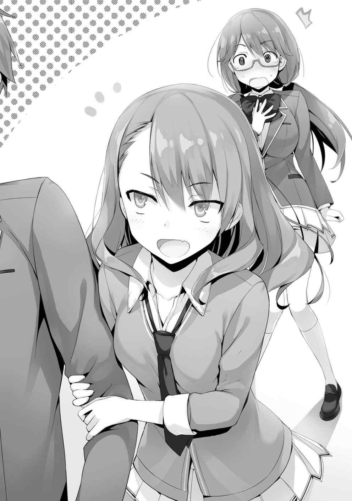
— Qué casualidad, Yukimura-kun y Ayanokouji-kun. Hasebe-san y Sakura-san también.
Karuizawa habló, emitiendo una actitud un poco condescendiente.
No es una coincidencia en absoluto. Le había dicho la noche anterior que iría al cine. Sin embargo, no esperaba que Karuizawa viniera ella misma.
— ...... Qué desagradable coincidencia. Voy adentro.
Con expresión de resentimiento, Keisei tomó su boleto y entró al cine.
— En ese caso, yo también iré...
Separándome de Satō por la fuerza, seguí a Keisei y los demás.
En el interior del cine había tantos estudiantes para llenar por completo todos los asientos. El olor fragante de las palomitas de maíz y los hot-dogs estimulaban mi nariz.
Habíamos reservado los cinco asientos en la fila más alta, contando desde la derecha.
Satō, Karuizawa y el resto de su grupo parecían estar preocupadas en qué comprar en la tienda y aún no habían llegado.
— Um, K-Kiyotaka-kun.
Mientras estaba sentado en mi asiento, Airi me susurró en voz baja al oído desde el asiento contiguo a mí. Como todos los otros estudiantes que nos rodeaban estaban charlando felizmente, no pensé que ella necesitara hablar tan bajo.
— ¿Qué pasa?
— Kiyotaka-kun... bueno... últimamente se te has llevado muy bien con Satō-san, ¿verdad...?
Teniendo en cuenta lo que acaba de suceder, sería imposible no pensarlo.
Sin embargo, si no niego estrictamente algo cuando no es cierto, será difícil detenerlo si el rumor se extiende.
— Es solo un malentendido. Satō y yo fuimos emparejados para el examen final, así que hemos estudiado juntos un par de veces.
— P-pero, la gente generalmente no camina del brazo.
— Eso no fue del brazo, estaba siendo sujetado.
— Siento que, si no te gusta, podrías quitártela de encima...
Airi responde con una réplica tímida pero precisa. Ciertamente ese puede ser el caso.
No actúe mientras iba con el flujo de cosas, pero no es una buena idea aceptar malentendidos como este.
— Ya veo. No creo que haya una próxima vez, pero tendré cuidado.
— Y-Y además......
Todavía hay algo más......
— Antes de que las parejas fueran elegidas, fuiste a un lugar a solas con Satō-san, ¿verdad?
Dicho eso, cuando Satō me había pedido que la siguiera, Airi parecía estar mirándome en el aula.
— ...... E-entre ustedes dos, hay algo......
— No.
Decir que no podría ser una mentira, pero a lo sumo solo me pidieron mi información de contacto.
Airi y yo también hemos intercambiado información de contacto, así que no me siento culpable.
— ¿No estás convencida?
— N-no. L-lo siento. Te estoy preguntando todo tipo de cosas extrañas... ¿Te hice sentir incómodo...?
— De ningún modo. Si hay algo que te preocupe, puedes decírmelo en cualquier momento.
— ¡D-déjamelo a mí! ¡Te estaré vigilando, Kiyotaka-kun!
No. Es estresante que me hayas observado tan de cerca...
No podía soportar rechazar a Airi, que había hecho un gesto ligeramente triunfal, así que me tragué las palabras.
Nada especial sucedió después de eso, así que disfruté la película en paz.
Aunque hubo algo un tanto extraño sobre el contenido de la película.
PARTE 6
Hay varias instalaciones en el centro comercial Keyaki. La mayoría de las tiendas se utilizan a diario, como los supermercados. Sin embargo, hay varias tiendas que solo se usan ocasionalmente. Por ejemplo, hay un servicio que entrega de ingredientes de supermercado a tu dormitorio y una tienda especializada que soluciona problemas de electricidad, gas y agua. La lavandería automática es otro ejemplo perfecto de esto. Un asalariado u otro miembro de la comunidad externa tendrían una buena razón para usar una lavandería, pero no es relevante para los estudiantes de esta escuela. Sin embargo, cuando una chaqueta u otra parte de nuestros uniformes se ensucian inusualmente, la lavandería juega un papel importante al limpiar lo que no podemos limpiar por nuestra cuenta.
Incluso si no es algo que usas habitualmente, llegará el momento en que de repente cuando sea necesario.
Es jueves por la noche a las 8:00 con el examen el fin de semana. Las tiendas en el campus ya habían cerrado, por lo que todos los de la Clase D se reunieron en una sala de karaoke. Es un gran lugar para hacer arreglos sin preocuparse de que algo se filtre.
Horikita y Hirata actuaron rápidamente. El grupo era el mismo del comienzo del examen final, con la adición de Keisei.
Es cierto que hubiera sido ideal hacer esto en la habitación de alguien, pero uno de nosotros no quería hacer eso.
— Oye, ¿puedo cantar?
— Espera, Karuizawa-san. Eso no es por lo que estamos aquí hoy.
— ¿A pesar de que hay un karaoke aquí?
— Como dijiste que no querías ir a los dormitorios, vinimos aquí. ¿No es así?
No se sabe quién está mirando o escuchando en un café o cafetería en otro lugar del campus.
— Eso es cierto, pero ¿qué debería decir? ¿No es algo estúpido venir al karaoke y no cantar?
— Confórmate con tus alimentos y bebidas.
Karuizawa ya había ordenado mucho. Su propia bebida, así como comida chatarra como papas fritas y bebidas para todos los demás, estaban sobre la mesa.
— Entonces cantemos a dúo juntos después de la reunión estratégica, Yōsuke-kun.
— Sí. Puede ser una buena idea tomar un respiro después de que la reunión se termine.
— Aceptaré eso. Quiero tener una celebración como se debe, pero también ha pasado bastante tiempo desde que vine al karaoke.
Hirata y Kushida buscaron un compromiso al acordar con Horikita y Karuizawa.
— ……Voy a comenzar.
Horikita simplemente ignoró a los dos y comenzó la reunión.
— Primero son los resultados de las sesiones de estudio, y para ser sincera, creo que son excelentes. Al principio, el comportamiento de los chicos era un desastre, y me preocupaba cómo resultaría. Afortunadamente, han estudiado mucho y deberían poder manejar el examen final hasta cierto punto.
— Para que lo sepas, estudié tan duro que mi boca ahora es un diccionario de inglés.
Sudō dijo que había estudiado a su manera, pero la forma en que lo formuló lo hizo difícil de entender.
— Sudō-kun ha crecido significativamente en comparación con donde comenzó.
Su concentración en particular ha mejorado dramáticamente. Sin embargo, no olvides que tus habilidades académicas básicas aún son inferiores a las de un alumno de primer año de secundaria.
— He estudiado mucho y todavía estoy en el primer año de secundaria...
— El hecho de que estabas en el nivel de primaria hasta ahora es increíble.
— Ho-Horikita-san, eso es ir demasiado lejos...
— Él ni siquiera sabía que existía Pi hasta hace poco.
Fue una declaración bastante explosiva. Es inesperado que haya sobrevivido hasta hoy sin saber sobre la existencia de pi.
— ¿Eeeh? ¿¡No es eso demasiado estúpido!?
Incluso Karuizawa, que no estudia mucho, tiene una reacción exagerada.
— Cállate, Karuizawa. Ni siquiera tú lo entiendes.
— No, no, no. En serio. Incluso yo sé que es 3.14.
La conversación logró llegar a algo trivial. Todos los que tuvieron que escucharlo podrían terminar con dolor de cabeza.
— Por favor, para. Puedo ver aproximadamente qué nivel tiene tu capacidad académica. ¿Está realmente bien, Horikita?
— No tiene sentido preocuparse por él. Como dije, sus habilidades académicas básicas están retrasadas. Pero, en general entiende el contenido que necesita para este semestre. No es como si estuviera tomando el examen esperando reprobar. Por tu parte, Yukimura-kun ¿Han resuelto los problemas con Hasebe-san y Miyake-kun?
— Por supuesto. Ayanokouji estaba mirando de cerca, puede verificar esto, ¿no es así?
— No creo que haya una mejor manera de abordarlo. No me preocupa que reprueben los finales.
— ¡Estupendo! Odiaría perder a alguien de la Clase D, ¡así que vamos a superar esto juntos!
— ……Algo como eso. Hablando de ello, ¿estamos realmente bien?
Después de escuchar los pensamientos de Kushida, Karuizawa hizo una pregunta inquietante.
— No quiero menos compañeros de clase, pero este es un examen del cual alguien reprueba cada año, ¿verdad? No hay garantía de que Sudō-kun o yo no reprobemos, ¿verdad?
— Realmente no puedo garantizarlo, pero-
— Entonces no digas algo así tan precipitadamente.
La atmósfera relajada de la habitación gradualmente comenzó a tensarse.
— Kushida-san, he sentido que no me has dicho palabras sinceras desde hace algún tiempo.
— ¿Es así? Solo quiero que todos pasen el examen de forma segura...
— Debe ser agradable ser inteligente. Ni siquiera sabes lo que me va a pasar.
— Está bien, Karuizawa-san. Ahora estás involucrada con un grupo de estudio confiable.
Incluso con Hirata apoyándola, Karuizawa parecía no estar convencida.
— He querido decir esto por un tiempo. Kushida-san, ¿no te estás comportando de una manera un poco aduladora?
— ¿Eh?...... ¿D-De verdad crees que es así...?
— ¿Puedes calmarte, Karuizawa-san? Estamos por tener una discusión sobre el examen final en este momento. No pierdas nuestro tiempo con asuntos sin relación.
— Horikita-san, cállate un momento. Oye, Kushida-san. ¿Estás burlándote de mi inteligencia en tu mente o algo así?
— No haría algo así.
— En ese caso, no hagas promesas como esa. Como es difícil para mí cada vez que hago un examen, ¿puedes asumir la responsabilidad si no lo logro?
Esto fue demasiado irracional. Enfrentado a una ira tan inexplicable, no era solo Kushida, sino que todo el grupo de estudio estaba confundido.
Karuizawa perdió los estribos debido a la bondad y amabilidad de Kushida.
Luego extendió la mano y tomó el jugo de uva que apenas había tocado, y lo derramó sobre Kushida con todas sus fuerzas. El jugo y todas sus propiedades de manchado, empaparon el pecho de su chaqueta.
— ¡Karuizawa-san!
En vista de esta situación increíble, Hirata soltó una voz fuerte cuando agarró su mano que sostenía la taza.
— No puedes hacer esto. Siento que hay cosas que simplemente cruzan la línea.
— ¿E-estás diciendo...... que esto es mi culpa?
— Lo siento, pero esta situación solo te coloca en una mala posición, Karuizawa-san. Kushida-san no ha hecho nada malo.
Esta fue una acción que incluso Horikita, que estaba en medio de una Guerra Fría con Kushida, no pudo defender.
— Estoy bien. No me importa para nada, ¿bien? Por favor, no culpes a Karuizawa-san.
— Eso no va a suceder. No importa cómo lo pienses, todo es culpa de Karuizawa.
Keisei dijo lo que pensaba y juzgó la situación objetivamente. Es completamente natural que todos los presentes sean hostiles hacia lo que sucedió. No importa cómo alguien lo vea, pensaría que Karuizawa estaba equivocada por sus comentarios tan llenos de sí. Sin embargo, sus acciones no estaban fuera de orden. Karuizawa siempre ha sido este tipo de chica.
— Oh, bueno. Soy la mala. Sí, después de todo, Kushida-san es la estrella de la clase.
Todas las personas presentes, excepto yo, ya habían hecho sus juicios.
Karuizawa volteó hacia mí para pedir mi ayuda.
— Oye, Ayanokouji-kun, ¿de lado de quién estás?
— Con quién estoy de acuerdo... Nadie aquí ha dicho nada malo. Estás equivocada.
— Bueno, eso es todo. Sabía que sería así. Todos son mis enemigos.
Karuizawa se levantó y recogió su bolso sin siquiera disculparse.
— Karuizawa-san. Si dejas las cosas de esta manera tan extraña, definitivamente lo lamentarás más tarde. Tampoco quiero que las cosas sean así.
Hirata se mantuvo firme en evitar que Karuizawa saliera del karaoke.
— ¿Qué? ¿Qué otra cosa se supone que debo hacer?
— Antes que nada, discúlpate con Kushida-san. Eso es lo más importante.
Karuizawa fue persuadida por su novio. Parecía frustrada, pero finalmente cedió.
— No creo que esté equivocada, ¿pero tengo que disculparme?
— Tienes que decirlo primero.
Ante esto, Karuizawa se quedó en silencio por un momento.
— ……Lo siento.
Después de un momento de silencio, Karuizawa se rindió y se disculpó después de haber sido reprendida por Hirata.
— No, no es un problema en absoluto. Creo que debería haber sido un poco más considerada con tus sentimientos.
En esta situación, una respuesta enojada sería normal, sin embargo, Kushida estaba completamente tranquila y perdonó a Karuizawa.
Al escuchar esto, Karuizawa pareció sentirse culpable, y volvió a sentarse al lado de Hirata.
— Siento que perdí la calma un poco. Lo siento.
Karuizawa se disculpó una vez más con Kushida, quien respondió con una sonrisa como diciendo que lo olvidara.
— Gracias……
Hirata dio un suspiro de alivio al verlas a ambas.
Sin embargo, esto no significa que todo se haya resuelto.
— Kushida-san, ¿tienes una chaqueta de repuesto que puedas usar en la escuela mañana? ¿Todo está bien?
— Ah, no. La otra se ha dañado, así que esta es la última que me queda...
Originalmente, la escuela pagó para que cada estudiante tuviera dos chaquetas.
Pero a veces pueden suceder cosas inesperadas, como que un estudiante desgaste una parte de su uniforme. En este momento, si es necesario, hay una tienda en Keyaki que se especializa en uniformes estudiantiles. Sin embargo, puede tomar algún tiempo adaptar los uniformes para que se ajusten a los estudiantes, y tampoco es barato en puntos.
— ¿No hay una lavandería automática? Puedo llevarlo con algo de ropa que he manchado durante la práctica de baloncesto. Si la entrego hoy, deberías poder tenerlo temprano por la mañana.
— Nunca escuché nada sobre esto porque nunca tuve un motivo para usarla. Si este es el caso, parece que hay una solución.
Kushida aceptó el gran consejo de Sudō y entendió cómo resolver el problema.
Karuizawa escuchó su sugerencia, y ella misma hizo una propuesta dándose cuenta de que podía hacer algo más para ayudar.
— Aunque no funciona como una disculpa, permíteme pagar la tarifa de limpieza.
— Está bien, no me importa.
— No podré sentirme tranquila de otra manera... ¿no puedo?
— ¿Está realmente bien?
— ¡Sip! Yo soy la culpable, así que por favor déjame hacerlo.
Por lo tanto, la situación encontró un punto de equilibrio debido a que Karuizawa ofreció pagar la tarifa de limpieza.
PARTE 7
Mientras regresaba al dormitorio después terminar esa caótica reunión estratégica, me encontré con un hombre grande parado al lado de la fuente de agua.
Katsuragi no parecía tener alguna reunión con nadie, así que intenté llamarlo.
— ¿Qué estás haciendo?
— Ayanokouji. No, estaba pensando un poco sobre varias cosas. Se trata del examen final de la próxima semana.
— ¿Sobre el examen final? ¿En un lugar como este?
— Solo quiero pasar mi tiempo pensando en paz a solas.
Esto no parecía la forma de pensar que uno esperaría de un estudiante de preparatoria de primer año.
Dicho eso, ¿el examen final? No creo que sea un examen por el que la académicamente avanzada Clase A deba agonizar.
— ¿Sientes que este examen final va a ir bien?
Como él lo preguntó de esa manera, decidí responder de manera directa.
— Quién sabe, pero todos parecen estar estudiando muy seriamente.
— ¿Es así? Sería bueno que no haya expulsiones.
No sentí ningún entusiasmo en su preocupación por los demás.
— ¿Pasó algo?
Después de preguntar, Katsuragi comenzó a hablar de una manera que parecía un poco pesada.
— ...... Cuando estabas en la secundaria, ¿alguna vez ocupaste el puesto de representante de la clase o te uniste al consejo estudiantil?
— No, en absoluto. Nunca me interesó.
— Siempre he sido un representante de la clase o un miembro del consejo estudiantil desde que estaba en la primaria. Incluso serví como presidente del consejo estudiantil tanto en la primaria como en la secundaria. Pero, después de venir a esta escuela, tuve que hacer algunos grandes ajustes.
— Esto me recuerda que no has ingresado al consejo estudiantil.
— Quería unirme, pero no pude obtener el reconocimiento del presidente del consejo estudiantil Horikita —Este tema no estaba relacionado con los exámenes finales—. Los representantes del consejo estudiantil y del salón de clases, a primera vista parecen no tener autoridad. La mayoría de los estudiantes piensan que no vale la pena. Solo piensan que lleva mucho tiempo y esfuerzo, por lo que solo unas pocas personas quieren hacerlo.
Es la misma sensación que tengo sobre eso. Básicamente, no quiero estar en una posición alta ni nada de eso.
— Sin embargo, estas posiciones reciben “privilegio”. En otras palabras, hay una diferencia que no se puede cubrir entre aquellos en estos puestos y aquellos que no lo están. Y he perdido ese privilegio.
— Tu evaluación dentro de la Clase A debe estar por encima de cierto nivel.
— Si ese fuera el caso, nunca habría elegido atacar a la Clase B para el examen final.
Yo también lo creo, alguien como Katsuragi elegiría como objetivo a la Clase C o D.
Escogería la táctica correcta para garantizar la defensa y la victoria.
— ¿Está bien? Hablarme sobre las condiciones internas de la Clase A.
— Lo entenderás después de una mínima cantidad de análisis.
— No necesitas asumir demasiada responsabilidad, ¿sabes? Me parece que lideras la Clase A, pero ese no es el panorama completo. De todos modos, como es ahora, la clase A es como una fortaleza. Lo importante es que ustedes mantengan su posición actual.
— ……Es cierto. Aah, para que me lo diga la Clase D, quienes deberían ser los que nos persiguen.
— Tal vez haya cosas que solo se puedan ver objetivamente ya que estoy mirando cosas desde muy lejos para entenderlas.
Cuando los dos regresamos al dormitorio, había una multitud en el vestíbulo.
— Es realmente ruidoso. ¿Paso algo?
— Uh... ¿Quieres preguntar?
Cerca había una cara que conocía, El Profesor, así que lo llamé.
— ¿Qué pasó?
— Es Ayanokouji, Su Alteza. Parece que todos en el primer año han recibido la misma carta en sus buzones.
— ¿La misma carta?
Caminé entre la multitud y giré el dial de mi buzón. Los buzones no suelen utilizarse, pero tienen un uso ocasional para compras en línea, notificaciones escolares y transacciones entre estudiantes.
Los otros estudiantes parecían interesados también, mirando detrás de mí a mi buzón abierto.
Abrí la puerta después de marcar la combinación correcta.
Luego saqué el papel doblado en cuatro que estaba dentro y volví con Sotomura.
— ¿Es esto?
— Sí, sí.
Katsuragi regresó un momento después con el mismo papel.
Katsuragi abrió la carta al mismo tiempo que abrí el papel doblado.
Las palabras impresas en el interior se leían:
[La estudiante de primer año Ichinose Honami de la Clase B podría estar recolectando puntos ilegalmente. - Kakeru Ryūen.]
Sotomura abrió su papel para mostrarnos que él también recibió lo mismo.
Katsuragi terminó de leer el papel y murmuró:
— ¿Qué quiere decir al escribir cuidadosamente su nombre? Si esto no tiene fundamento, existe la posibilidad de que tenga que asumir la responsabilidad.
— ¿Eso significa que lo está haciendo porque es más o menos cierto?
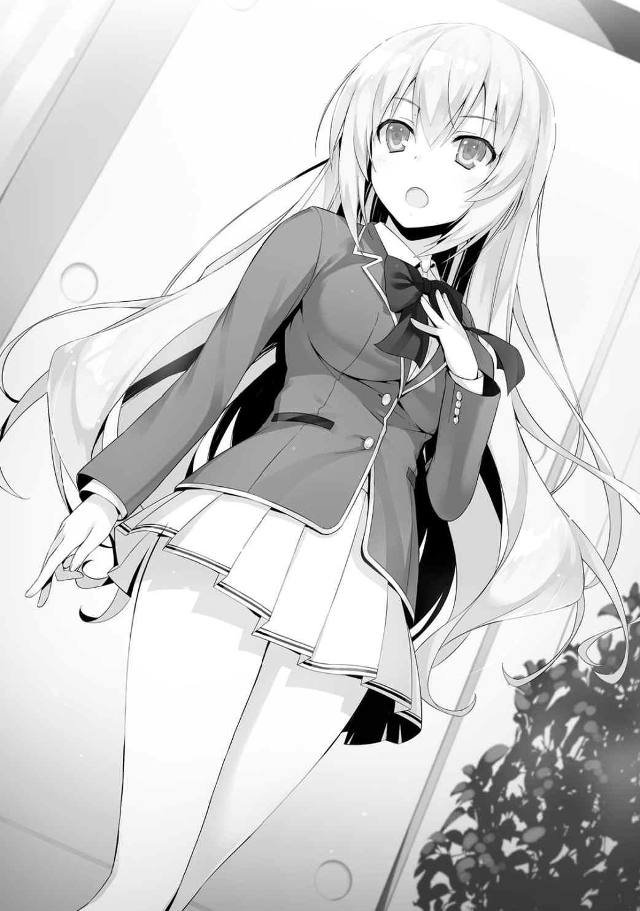
— Si ese no es el caso, entonces es un plan tonto. Pero es un método que no dejaré pasar. Independientemente de si es verdad o no, él debería tomar la ofensiva si hay material que la gente pueda pensar que es ilegal.
Correctamente hablando, podría tratarse de difamación, pero a ese tipo no le importaría en absoluto.
Si es mentira, la imagen de Ryūen corre el riesgo de quedar muy dañada, pero como la reputación de Ryūen ya es pobre, desde su punto de vista no importaría en absoluto.
— Oye, ¡Ryūen ha vuelto!
Uno de los estudiantes descubrió que Ryūen regresaba de la escuela. Ryūen entró al lobby. Me pregunto si sabe qué es lo que causó la conmoción.
— Oye, Ryūen. ¿¡Que estás tratando de hacer!?
Tan pronto como entró al vestíbulo, los chicos de la Clase B lo interrogaron mientras iban y lo agarraban.
— Ah, ¿de qué demonios estás hablando?
— ¡Se trata de esta carta! ¡Estás distribuyendo esta mierda!
Dijo eso y le puso la carta enfrente. Cuando Ryūen vio la carta, simplemente se encogió de hombros y sonrió.
— ¿Oh, eso? ¿No es interesante?
— ¿Qué tiene de gracioso? ¡Hay algunas cosas que puedes hacer, y hay algo que cruza la línea!
— Entonces, pruébalo. Que Ichinose no ha estado recolectando puntos ilegalmente.
— Eso es-
— ¿Qué tal, Ichinose?
Ryūen preguntó sosteniendo la carta frente a Ichinose, que había venido después de escuchar la conmoción.
— No importa lo que diga ahora, Ryūen-kun probablemente no lo creerá, ¿verdad?
— En efecto. Eso es porque depende de la escuela decidir si hubo fraude o no.
— Cierto. Lo siento a todos. Parece que estoy bajo una extraña sospecha. Pero tengan la seguridad de que mañana se lo reportaré a la maestra y demostraré que este es un malentendido de Ryūen-kun.
Ichinose se defiende con una apariencia digna.
— ¿Cómo pretendes demostrarlo, Ichinose?
— Explicaré los detalles a la escuela. Indicaré cuántos puntos tengo y cómo los obtuve. Estarás satisfecho con eso, ¿no?
— ¿Informarlo a la escuela? Antes de eso, ¿no puedes explicarlo aquí?
— Entonces, ¿estás dispuesto a creerme solo diciéndolo aquí, Ryūen-kun?
— No lo voy a creer. Sería tan fácil como respirar que mientas al respecto.
— Por lo tanto, si la escuela interviene, no hay lugar para la injusticia.
— Kuku, ya veo. También tienes un punto.
— ¿Estás convencido? —Gritaron los estudiantes cercanos de la Clase B.
— Sin embargo, los humanos son criaturas sucias y mentirosas. ¿No es posible que ahora estés pensando en algunas medidas y encubrir la evidencia?
Hasta el final, Ryūen ataca agresivamente a Ichinose.
— ¿Qué está pensando este hombre? Aunque Ichinose tenga muchos puntos, está lejos del tipo de persona que los conseguiría ilegalmente. Él no tiene ninguna posibilidad de ganar acusándola obstinadamente.
Katsuragi pareció encontrarlo difícil de entender, y su expresión se volvió más seria.
— Entonces, ¿qué tengo que hacer para que me creas?
— Comencemos por revelar cuántos puntos tienes aquí, y luego explícanos cómo los obtuviste. Luego reportaré lo mismo a la escuela mañana. Con esto, los estudiantes que cada vez desconfían más de ti aquí estarán convencidos.
De hecho, es cierto que reduciría drásticamente sus posibilidades de más tarde inventar excusas o mentir.
Sin embargo, no creo que Ichinose acepte fácilmente.
— Esa es una proposición imposible, Ryūen-kun.
— Es decir, ¿admites haber infringido las reglas?
— No es así. El hecho de que no obtuve mis puntos de forma ilegal, no significa que pueda revelar mi mano. Cuantos puntos personales tiene alguien influirá enormemente en sus estrategias en el futuro.
Es decir, incluso si es sospechosa temporalmente, tiene que esconder su mano.
— Mientras lo explique a la escuela mañana, se investigará. Además, si rompí una regla, independientemente de si trato de ocultarlo o no, todo se hará público, ¿no?
— No hay pruebas de que vayas a presentarte en la escuela mañana.
— Entonces, puedes decírselos tú mismo, Ryūen-kun. Como dice en esta carta.
— ¿De Verdad? Kuku, pareces bastante segura.
Si Ichinose consiguió puntos ilegalmente, debería sentirse bastante incómoda al respecto.
Sin embargo, no vaciló en absoluto. Permaneció tan digna como siempre.
— Entonces espero con ansias el día de mañana.
Ichinose observó a Ryūen, que subió al ascensor y se fue con una sonrisa intrépida.
— Una vez que eres sospechoso, la duda permanecerá hasta que se disipe por completo. Como Ichinose no es una excepción. Cuanto mayor es la duda, mayor es la confianza que se pierde de golpe.
Katsuragi analizó la situación y llegó una conjetura correcta. Eso también se aplica a los políticos que representan a nuestro país. No importa cuánto apoyo tengan actualmente, una “mentira” puede hacer que pierdan ese apoyo.
Por supuesto, si saben que no tiene sentido, su apoyo puede aumentar más que antes, pero en la mayoría de los casos, es imposible eliminar por completo la sospecha.
Al día siguiente, lo que Ichinose dijo se convirtió en realidad. La escuela emitió un aviso que decía que no había roto ninguna regla. Ella tomó a la escuela como garantía y disipó con seguridad todas las dudas.
Por casualidad, antes vi que Ichinose tenía más de un millón de puntos personales. En este momento ella debería tener aún más que antes.
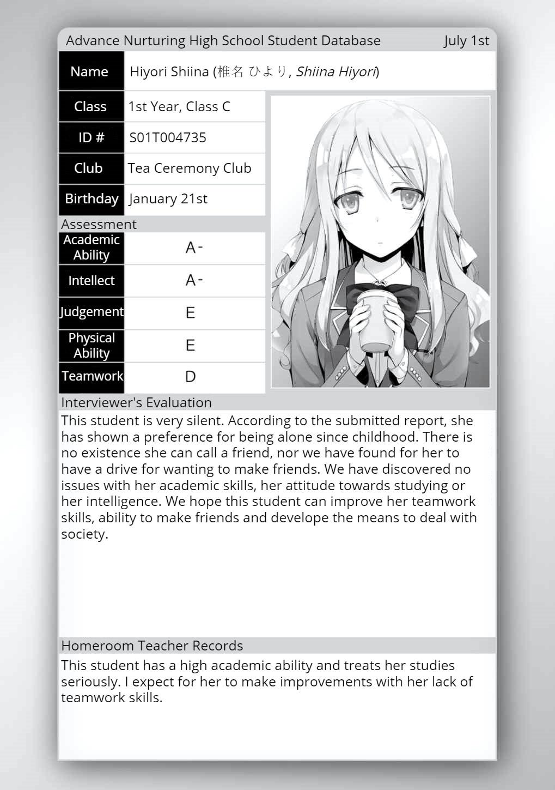
EPÍLOGO
DECISIONES CONTRASTANTES
Aunque muchos estudiantes se deprimieron por los días de estudio constante, el tiempo seguía pasando.
Y llegó el invierno. Después de entrar en diciembre, el examen final por fin se realizará en menos de tres días. Mañana, la escuela estará cerrada durante el fin de semana, y el examen nos estará esperando el lunes.
Para ser sincero, el desafío del examen en sí no era una gran preocupación. En lo que respecta a la Clase D, todos tienen consistencia suficiente y los resultados de los grupos de estudio son excelentes. También puedo afirmar que incluso Sudō, y los otros que a menudo están cerca de reprobar, han estado trabajando más duro que nunca.
El problema está en otra parte. No es demasiado decir que el problema radica en Ryūen y Kushida. Sin duda, han comenzado a moverse por debajo del agua, y puedo adivinar lo que van a hacer.
Los objetivos de Ryūen son “superar la calificación general de la Clase D” y
“sacar a la superficie la existencia que se esconde detrás de Horikita”. Para el primero...... es decir, las tácticas disponibles para superar nuestra calificación general son inevitablemente limitadas. Los métodos adecuados serían que la Clase C en su totalidad estudiara celosamente, o que presentara preguntas súper difíciles. Cualquiera de los dos funciona, pero estas son estrategias generales a las que la Clase D también puede recurrir.
No sé si la Clase C se ha reunido o no para un grupo de estudio a gran escala.
No han aparecido en cafés, bibliotecas, aulas o cualquier otro lugar de estudio típico.
¿Es una coincidencia que no los haya visto o la Clase C ha estado trabajando duro en algún lugar del que no estoy consciente? Aunque hayan estudiado mucho, siempre y cuando la Clase D no se vea abrumada, se verán obligados a participar en una batalla difícil. Esto no parece ser su táctica para ganar la pelea.
Entonces, es fácil imaginar que están viendo estrategias desde otras perspectivas.
— ¿Pensando acerca de algo?
— Oh, lo siento.
Como estaba paralizado, Horikita me miró desde la parte baja de la escalera.
Corrí escaleras abajo para alcanzarla.
Tenía un gran sobre marrón en la mano. Estaba repleto de las preguntas que ella había creado con Hirata y los demás durante el último mes. Tenía el destino de la Clase D.
Debido a esto, ella ni siquiera me dejó ver las preguntas, haciendo que la información fuera estrictamente confidencial. Ya que Horikita al final las recopiló todas, era la única que sabía todas las preguntas.
— ¿Cuáles son las probabilidades?
— Difícil de decir. Espero que no estés esperando demasiado. Después de todo, la escuela también ha estado haciendo grandes ajustes a las preguntas. Sin embargo, no hay duda de que hemos terminado la parte más difícil del examen que nos han dado hasta ahora.
Horikita tenía cierto nivel de confianza. ¿Debería considerar que está completo de manera sólida?
La pregunta entonces es: “¿cómo protegemos las preguntas hasta el final?”
Nos encontramos con otro estudiante en el pasillo de camino a la sala de profesores.
— Hola, Suzune.
Ryūen estaba allí con una sonrisa intrépida, sosteniendo el mismo sobre marrón que Horikita.
— ¿Es esto una coincidencia o una emboscada?
— Es inevitable. He estado esperando que vinieras.
— Entonces una emboscada.
Horikita dio un suspiro de disgusto y pasó junto a Ryūen.
— Espera, también estás llevando tus preguntas en el último minuto, ¿verdad?
Vamos juntos.
Ryūen habló, mostrando su sobre frente a Horikita.
— Como no sé quién va a echar un vistazo, entiendo que también serás prudente.
— ¿Estás preocupado por alguien de tu clase? ¿Te sientes bien?
— Kuku. Ningún idiota trataría de traicionarme.
— Y a pesar de eso, has esperado hasta el último momento para enviar tus preguntas como lo hice yo.
Horikita usó un enfoque agresivo devolviendo una provocación a la provocación.
Ryūen debería encontrar esto increíblemente agradable.
Seguimos caminando y él procedió a seguirnos.
— Espero que la sabiduría que lograste sacar de tus compañeros defectuosos funcione bien para nosotros.
Horikita siguió caminando, ignorando la existencia de Ryūen.
— Ayanokouji-kun, ¿has estado estudiando con diligencia? También tengo curiosidad sobre cómo se encuentra tu compañera.
— Así como son las cosas, creo que no reprobaremos.
— No sirve de nada solo pensarlo. No podemos tener ningún abandono en absoluto. No seas negligente, a pesar de que confiamos en manejar cualquier cosa que la Clase C pueda arrojarnos.
Parece que Ryūen no tenía la intención de permanecer en silencio, ya que una vez más respondió a los golpes verbales de Horikita.
— ¿Huh? ¿Estás preocupada por alguien de tu clase? Esa fue una observación interesante. Parece que finalmente estás entendiendo nuestra forma de hacer las cosas.
— Quién sabe. Tal vez fue solo una provocación barata. Justo como tú.
— Tal vez sea así.
Horikita llamó a Chabashira-sensei tan pronto como llegamos a la sala de profesores. Poco después, Chabashira-sensei se mostró.
Ryūen también llamó a Sakagami-sensei. Sakagami-sensei, que fue el primero, tomó el sobre marrón de Ryūen en silencio.
— ¿Aceptarás esto?
— Aah. Te preguntaré más tarde.
Después de su breve intercambio, Chabashira-sensei apareció y cambió de lugar con Sakagami-sensei.
— Parece que lo trajiste.
Al parecer que ya sabía lo que estaba sucediendo, y solo miró el sobre marrón.
Ella no parecía prestar particular atención a Ryūen en el costado.
— Chabashira-sensei. Estas preguntas que le estoy dando son las versiones finales.
— Me lo llevo.
Ryūen observó la conversación con una sonrisa misteriosa.
Horikita vio la mano de su maestra lista para recibir el sobre e hizo una pausa por un momento.
— Me gustaría preguntarle algo. ¿Este momento está bien para usted?
— Ah.
— Estas preguntas y respuestas son equivalentes al éxito o fracaso de la Clase D. Debemos evitar por cualquier medio la fuga de esta información. Después de que se las dé, ¿podría rechazar a cualquiera que le pida que se las muestre? No quiero que nadie las vea, incluida yo.
Horikita negoció a la luz de su reciente fracaso en el festival deportivo.
No sé si Chabashira-sensei entenderá eso.
— ¿Quieres que me niegue a divulgar la información?
— ¿Es algo difícil?
— Ese no es el caso. Puedo entender tu miedo a una fuga de información y tu deseo de asegurarte de que eso no suceda. La escuela tampoco tiene motivos para rechazar tu solicitud. Pero, por supuesto, es condicional.
— Condicional, ¿verdad?
— Debo determinar si es la voluntad general de la clase o no. ¿Todos lo han aprobado?
— No tomé su opinión para esto, pero... creo que se puede asegurar que esto es la voluntad general de todos con respecto a este asunto. Ya que ningún alumno quiere que su clase pierda.
— No puedes decir eso. He dicho algo así antes, pero cada persona puede tener una opinión inesperadamente diferente. No sería extraño que haya un estudiante que quiera perder.
— Eso es……
Chabashira-sensei se cruzó de brazos y añadió más:
— Además, ¿puedes garantizar que las preguntas del examen que tienes allí sean las que toda tu clase espera? Tu clase no ha dado su consentimiento a las preguntas antes de que las traigas aquí.
— ¿Me está diciendo que lo pruebe? ¿Quiere que haga llegar las preguntas a todos y confirme que no hay ningún problema?
— No dije eso. Lo que quiero decir, es que las cosas no son tan simples. Es imposible para mí decir si la estudiante, Horikita Suzune, parada aquí delante de mí está actuando por el bien de su clase. Sin embargo, aceptaré tu solicitud. Si algún alumno se fuera a poner en contacto conmigo, nunca revelaré las preguntas y respuestas que has creado.
— Muchas gracias. Con esto, puedo hacer el examen tranquila.
— Sin embargo. Me atrevo a decirte una cosa más. En general, no es bueno que tengas que restringir información como esta. Es evidencia de que la clase no se está uniendo muy bien.
Esto es sin duda una realidad que no se puede negar. Si no tuviéramos ningún compañero de clase sospechoso, no tendríamos que hacer esta solicitud, y tampoco tendríamos a nadie filtrando información como esta. Aunque esto es solo parte de mi imaginación, probablemente sea imposible que algo así ocurra en la Clase B.
— Qué duras palabras. En este momento estoy de verdad dedicada a mejorar las relaciones dentro de la clase.
Al escuchar esto, Chabashira-sensei sonrió un poco.
— Tú también has cambiado, Horikita.
— ...... Algunas cosas no pueden ser iguales por siempre.
— Definitivamente acepté tu solicitud. Sin embargo, también puede haber casos en los que se debería permitir la divulgación de la información cuando sea necesario. Siempre pueden suceder situaciones imprevistas. Por lo tanto, me gustaría agregar una condición a nuestro trato. Si, con tu permiso, alguien pide ver las preguntas y respuestas, entonces divulgaré la información. ¿Está bien? Si tuviera que afirmar que nunca se lo mostraría a nadie, sería un riesgo para ti también, ¿verdad?
En resumen, el 100% de ocultamiento no es formalmente posible.
No parece importar cómo, Chabashira-sensei parece querer que algún medio de divulgación siga siendo posible.
— Está bien. Sin embargo, considere mi presencia como otro requisito.
— Es una buena idea. Es posible que alguien mienta de que haya recibido tu permiso. Pongámoslo en claro entonces. Si alguien viene a solicitar las preguntas y respuestas, les diré exactamente lo que has dicho. Que no quieres divulgar información por temor a que se filtre. Después de todo, no puedo permitirme mentir como maestra.
— Eso está bien.
Horikita se sintió aliviada de que por el momento las negociaciones hubieran sido exitosas
Definitivamente ahora no va a desarrollarse de la misma manera que el festival deportivo. Ya sea Kushida o cualquier otra persona, aunque quieran verificar las preguntas, es imposible sin la presencia de Horikita. No debería haber ningún truco aquí.
Incluso si alguien estaba dispuesto a pagar una cantidad de puntos para eliminarla, obviamente no es motivo suficiente para revocar esta decisión.
Sin embargo, algo es extraño.
Lo sentí mientras escuchaba en silencio a Chabashira-sensei y la conversación de Horikita.
La respuesta a este problema no surge de inmediato, pero no hay duda de que algo es extraño. Todo parece ir bien hasta ahora. Las preguntas se completaron con un grado exquisitamente alto de dificultad; definitivamente digno del esfuerzo de Horikita, Hirata y los demás. Está bien hasta este punto. Horikita luego se las presentó a Chabashira-sensei y también implementó medidas para evitar que la información se filtre a otros.
Aunque Kushida obedezca a Ryūen e intente responder a las preguntas, se ha establecido con éxito un mecanismo que requiere el permiso y la presencia de Horikita.
Todo es sólido No hay escapatorias en ningún lugar......
Ya veo. Entonces ese es el motivo.
Si bien no hay nada fuera de lugar con su conversación, hay claramente algo fuera de lugar con Chabashira-sensei.
Los ojos, los movimientos y la actitud de Chabashira-sensei no muestran esto.
Ella aceptó solemnemente las preguntas del examen y permitió que Horikita se fuera.
También estaba la actitud confiada de Ryūen. Algo sobre ese comportamiento relajado me llamó la atención.
— Vámonos, Ayanokouji-kun. Hemos terminado nuestros asuntos aquí.
No la escuché y en cambio miré los ojos de Chabashira-sensei. Ella respondió mirándome a los míos.
Date cuenta de Horikita. Antes de que sea demasiado tarde--
No puedo hablar descuidadamente frente a Ryūen, y no puedo hacer contacto visual excesivo.
Incluso si superamos esto, podríamos estar en una situación en la que no tengamos suficiente tiempo para volver aquí.
Horikita comenzó a salir de la sala de profesores, pero de inmediato se detuvo donde estaba.
— ...... Chabashira-sensei. Acaba de decir que no me mentiría, ¿verdad?
— Sí. Como docente, eso es natural.
— Entonces le pregunto, ¿las preguntas y respuestas que le di ahora serán aceptadas?
Ella lo sintió.
Fue un pequeño deseo, pero Horikita entendió el problema ella sola.
— No está claro si las preguntas serán aceptadas o no hasta que se confirme que no hay problemas con ellas.
— ¿Qué pasa, Horikita?
Horikita no me dijo nada cuando hice esa pregunta.
— Entonces cambiaré cómo lo estoy preguntando. Antes de presentar las preguntas de este examen, no hay nada como “ya hemos aceptado diferentes preguntas” o “otras preguntas están programadas para su aceptación”, ¿no?
En vista de esta pregunta, los ojos y la boca de sensei se quedaron quietos.
— Que quieres decir con eso……
— Pase lo que pase, la respuesta solo puede venir de la boca de Chabashira-sensei.
— ......Tengo una sola respuesta a esa pregunta. La escuela ya terminó de aceptar y revisar las preguntas del examen.
Entonces nos lo dijeron. La verdad de esta situación nos fue señalada.
— Esto... ¿Esto significa que alguien más envió las preguntas y respuestas?
Sus pensamientos y sentimientos no pudieron ponerse al día con la conversación.
— Está bien. En esta situación, las preguntas que has hecho no serán aceptadas.
— Por favor cancele la aceptación en este momento. Las preguntas correctas están aquí.
Horikita habló, señalando el sobre marrón que sostenía la maestra.
Sin embargo, basado en la conversación hasta ahora, sabía que no era tan fácil permitirlo.
— Lo siento, Horikita, pero esa es tu subjetividad egoísta. Recibí las preguntas del examen de otro alumno y ya terminé de revisarlas y aceptarlas. Estaban preocupados por cosas similares. Querían que mantuviera privadas las preguntas y respuestas del examen para evitar una fuga de información, y si aparece alguien que quiera cambiar las preguntas, simplemente tome sus preguntas y guárdelas. También querían que les dijera quién vino después.
— Cómo pudo pasar esto……
Horikita cayó inerte en el acto.
Es una realidad demasiado brutal.
— Por favor, ¿quién es ese estudiante? Puede decirme, ¿verdad?
— Kushida Kikyō.
La respuesta ya era obvia.
Horikita originalmente tenía la intención de bloquear la traición de Kushida, pero esto significa que Kushida dio el primer golpe. Kushida tomó libremente acciones drásticas y audaces simplemente porque ya sabíamos sobre su otra cara.
— Dependiendo de la situación, las preguntas aceptadas se pueden cambiar,
¿verdad?
— Cierto. Tratemos con esta situación inesperada. Ten en cuenta que el plazo finaliza hoy. Si quieres cambiar las preguntas, por favor trae a Kushida aquí.
— Una cosa como esa……
Imposible. Kushida no dirá obedientemente que sí.
Para superar este problema, tendremos que visitar Chabashira-sensei con Kushida.
Sin embargo, Aunque comenzáramos a buscarla ahora, Kushida nunca sería atrapada a tiempo. Podría escapar casi al 100% de nosotros simplemente apagando su teléfono y escondiéndose en su habitación. No, ¿no hay una gran probabilidad de que ella ni siquiera esté en su habitación? Hoy seguramente va a terminar sin que encontremos su paradero.
— Horikita o Kushida... puedo especular sobre cuál de ustedes dos está mintiendo, pero no sé la verdad. También es posible que un desconocido esté tirando de las cuerdas. Para mí es un problema si no resuelves esta disputa interna de la clase.
— ...... ¿Cuánto tiempo más tenemos? Hasta que no podamos corregir las preguntas.
— A las 6 p.m.
Revisé mi teléfono. Son justo antes de las cuatro de la tarde, es decir, solo nos quedan unas dos horas.
— Kukuku...... ¡K-kujajajaja! ¿Qué demonios estás haciendo, Suzune?
Ryūen había estado mirando toda la conversación y se rió.
El hombre que debe haber sabido esto desde el principio, escupió una risa ante nuestra desesperada capacidad de recuperación.
— ¿No estás condenada ya? ¡Las preguntas que creaste carecen de sentido!
— ¿Instigaste esto? Tú eres quien le ordenó a Kushida-san que entregue las preguntas, ¿verdad?
— Aah, no sé. No hay forma de que yo sepa algo sobre la Clase D, ¿verdad?
Horikita levantó su voz mientras respondía a las obvias mentiras de Ryuen.
— ¡No puedo soportar que esta conversación siga siendo escuchada a escondidas por este extraño......!
— Oh, tan aterrador. Supongo que iré a casa obedientemente. Estoy esperando los resultados del examen.
— ...... ¿No vas a buscar a Kushida, Horikita?
— ...... Odio el esfuerzo inútil.
Incluso si logramos encontrar a Kushida, las probabilidades de que se comprometa con nosotros son inexistentes. Este juego ya ha sido decidido.
— ¿Le dijo Kushida-san que no mostrara las preguntas del examen?
— No, no he recibido una instrucción como esa.
Eso no era una sorpresa. Más bien, es más como una reafirmación de lo que ya creíamos.
— Déjeme verlas, por favor.
Como tenía permiso, Horikita le pidió a Chabashira-sensei que le mostrara las preguntas del examen que Kushida le envió.
Después de un vistazo, inmediatamente me llegó un solo pensamiento.
— Estas tienen una dificultad excelente.
— Si, de verdad.
Las preguntas que secretamente presentó Kushida no deberían ser tan diferentes a las preparadas por Horikita. Estas eran sin duda un conjunto de preguntas espléndidas y bien refinadas para el examen. Tan buenas que nadie más que el autor sabría cuál es cuál. Teniendo en cuenta que Ryūen está involucrado, esto es probablemente obra de Kaneda. Debido a esto, un tercero no podría saber quién está diciendo la verdad. Si fueran problemas que incluso Sudō y los demás pudieran resolver, se sospecharía que Kushida había presentado preguntas muy simples. Sin embargo, si la dificultad es similar, la verdad inmediatamente se torna confusa.
Horikita había hecho la promesa de no revelar el pasado de Kushida, y Hirata, quien tiene miedo del conflicto dentro de la clase, tampoco quiso decir una palabra al respecto. En resumen, la situación era la del primero en llegar gana.
Si conoce las respuestas con anticipación, no importa cuán difíciles sean las preguntas.
Si todos los estudiantes en la Clase C comparten las respuestas, pueden obtener una puntuación súper alta.
Habiendo juzgado esto, Kushida camufló la información a tal punto y llevó a cabo su estrategia.
A pesar de asistir a las sesiones de estudio y aceptar la apuesta de Horikita, logró manejar la situación de manera sólida.
Si la Clase D pierde, Horikita, quien asumió el papel de líder de la clase, inevitablemente enfrentaría parte de la culpa. Bajando su poder de cohesión, Ryūen es usado para llevar a Horikita a una situación desesperada.
Si solo se trata de la creación de las preguntas del examen, la situación aún se puede salvar. Hasta ahora, no hay forma de evitar el peor resultado.
Sin embargo, lo más importante aquí es la apuesta que Horikita hizo.
La alianza entre Kushida y Ryūen es cierta, y es completamente concebible que a cambio de su cooperación, ella reciba las preguntas y respuestas de la Clase C.
En cuyo caso, Kushida probablemente obtenga 100 puntos. Entonces, si Horikita falla una sola pregunta, deberá abandonar voluntariamente la escuela.
Horikita no rompería su promesa.
Si pierde la apuesta, elegirá abandonar la escuela, incluso si va en contra de su voluntad.
— ¿No hay nada más que se pueda hacer?
Con esto, la victoria de la Clase D desapareció.
El ataque preventivo de Kushida debería haber causado un gran daño a Horikita.
A primera vista, no parece haber hecho nada para mejorar la situación, pero ese no es el caso.
Sin embargo, todo esto fue causado por la planificación descuidada de Horikita.
Si fuera yo—
— En cualquier momento está bien, Horikita. Ryūen ya se fue.
Chabashira-sensei le dijo esas palabras a Horikita, quien tenía la cabeza baja.
¿Qué está pasando aquí?
Chabashira-sensei tampoco parecía alterada en absoluto, manteniendo diligentemente la compostura.
— Lo siento, fui extremadamente cautelosa, así que continué actuando durante mucho tiempo.
Cuando Horikita dijo esto, levantó la cabeza. No había en absoluto signos de depresión en su rostro.
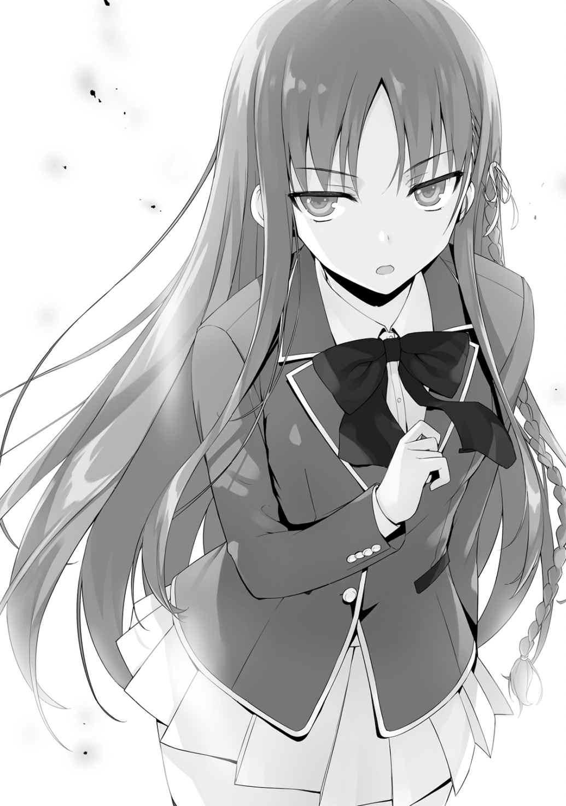
Entonces lo entendí.
— ¿Tomaste contramedidas?
— Sí. Fui derrotada en el festival deportivo, así que no podía permitirme volver a ser derrotada de una manera similar. Cuando los detalles del examen final se anunciaron por primera vez, consulté inmediatamente a Chabashira-sensei. Tenía dos solicitudes: “Tengo el derecho de tomar decisiones sobre la presentación de las preguntas del examen” y “Quiero que pretenda aceptarlas si alguien más viene a presentar las suyas”.
En otras palabras, Kushida fue dirigida a creer que sus preguntas del examen fueron aceptadas.
— Deben estar convencidos de que las preguntas del examen fueron cambiadas. Si no están estudiando para el examen, puede haber expulsiones en la Clase C.
Nunca pensé que ella haría un contraataque tan hermoso, ni siquiera esperaba algo cercano a esto.
Lo más probable es que Ryūen no sea capaz de notar los movimientos de Horikita y predecir su primer golpe.
— Sin embargo, esta es una situación desalentadora. Hasta ahora, nunca había escuchado de una solicitud como esta. Incluso de la Clase D que me han encargado. No esperaba que mi clase fuera tan cautelosa y falsa en un sistema escolar como el nuestro. Las cosas no siempre irán tan bien, Horikita.
Si hay traidores en la clase, no se ganará ningún examen que pueda ser ganado.
Chabashira-sensei mostró una rara mirada de preocupación.
Eso es exactamente cierto. Para evitar que se envíen preguntas del examen, y para mentir acerca de aceptarlo. Son acciones innecesarias que las otras clases nunca necesitarían hacer. Incluso para la facción Katsuragi y la facción Sakayanagi de la Clase A, probablemente no habrían ido tan lejos.
En ese sentido, esto indica que debemos ser precisos con la forma en que tratamos con Kushida.
— Entiendo. Sin embargo, tengo la intención de terminar este asunto con este examen final.
Pude sentir su determinación de poner fin a este conflicto entre camaradas.
— ¿De Verdad? En ese caso, esperémoslo con ansias.
Horikita dio un suspiro de alivio mientras veía a Chabashira-sensei regresar a la sala de profesores con el sobre marrón.
— Lo siento por mantenerte en la oscuridad sobre esto.
Cuando los dos estábamos solos, ella se inclinó y se disculpó.
— No, está bien. Para ser honesto, no estaba al tanto de esto.
Aunque mis oportunidades de trabajar con Horikita han disminuido, realmente la subestimé.
— No sé cuántas veces me ha derribado, así que es hora de que aprenda de eso.
Esto no solo hizo añicos la victoria definitiva de la Clase C, sino que la Clase D
también dio un paso adelante.
Sin embargo, el duro desafío de Horikita aún permanece.
— Lo único que queda es superar la calificación de Kushida-san en el examen final, y con eso, esto terminará sin incidentes.
Está bien. Horikita no tiene futuro aquí si no supera la calificación de Kushida en el examen final.
Para asegurarse de que no pierda, es un requisito para ella obtener una puntuación máxima en la parte de matemáticas del examen final.
PARTE 1
Hoy comienza la primera mitad del examen final. El puntaje general requerido para cada pareja se determinó en 692 puntos. Es más bajo de lo esperado, pero
no podemos ser descuidados. Debería ser seguro decir que este desafío se decidirá al final del día de hoy.
Es un desafío donde el resultado está determinado por la dificultad de nuestras preguntas y su capacidad para ejercer presión sobre los estudiantes de la otra clase. El primer día del examen final consiste en los exámenes de cuatro materias: japonés, inglés, estudios sociales y matemáticas.
Esto significa que los destinos de Horikita y Kushida se decidirán también hoy.
Mientras caminaba por el pasillo de camino al salón de clases, me encontré con Satō que parecía estar esperando a alguien.
Para bien o para mal, la persona que estaba esperando parecía ser yo, ya que se acercó cuando me vio.
— Buenos días, Ayanokouji-kun. El examen está a la vuelta de la esquina.
— Sí. ¿Dormiste bien anoche?
— Me fui a la cama después de estudiar hasta la una, pero estoy empezando a sentir un poco de nervios.
Con eso, puso su mano sobre su pecho y respiró profundamente.
— Aunque no puedo decir que será fácil, hagamos lo mejor por el bien del otro.
Debes poder hacerlo bien si demuestras lo que has estudiado.
— ¡Sí!
No importa la forma, seguimos siendo una pareja. No puedo negar que somos un cuerpo coexistente ahora que compartimos el mismo destino. Si Satō falla, fallaré, y si fallo, Satō también falla. Podríamos fácilmente arrastrarnos el uno al otro al abismo.
— Buenos días, Satō-san.
— ¡Oh! Buenos días, Karuizawa-san.
Al llegar a la escuela, Karuizawa vio a Satō y la llamó.
— Por casualidad, ¿ya tienes arreglos con Ayanokouji-kun? Ustedes dos son una combinación muy inusual.
— N-no. De ningún modo. Nos encontramos por casualidad...
— ¿Es así? Bueno, ¿por qué no tomamos una bebida juntas en Pallet antes de ir a clase?
— ¡Sí! Bueno, ¡te veré más tarde, Ayanokouji-kun!
Ella habló un poco tímidamente mientras se alejaba de mí.
Karuizawa miró hacia mí por un instante antes de irse con Satō.
— ¿Eh, entonces estaban en buenos términos?
— Supongo que Karuizawa puede ser una chica muy celosa, sorprendente.
— ¿Eh?
El que habló no era otro que Hirata.
— Buenos días.
— Buenos días. ¿Qué quisiste decir con eso de hace apenas un segundo?
— Pasé mucho tiempo con Karuizawa-san mientras interpretaba el papel de su novio. Me di cuenta vagamente de que ella comenzó a prestarte más atención, Ayanokouji-kun.
— No, no creo que sea eso.
Karuizawa se había visto obligada a cambiar su hospedero de Hirata a mí, así que no puede evitar que lo vea de esa manera.
— ¿Es así? Desde donde estoy, me alegro de que haya resultado así. Después de todo, no creo que sea saludable estar en una relación falsa. Lo siento, soy egoísta, así que no te preocupes.
Dicho eso, los dos nos dirigimos hacia el salón de clases.
— Las preguntas que Horikita-san pensó definitivamente deberían obstaculizar a la Clase C. En cuanto a lo que queda, no creo que sea muy difícil ganar, siempre y cuando todos manejen bien el examen.
Hirata también rebosaba confianza.
Hasta cierto punto, parece ver el camino a la victoria en este este examen.
A pesar de que un par de estudiantes inesperados habían sido emparejados, todo había sucedido más o menos como se esperaba.
— Por cierto, hay algo que quería preguntarte, Ayanokouji-kun. ¿Conoces a Shiina Hiyori-san?
— Ella es una estudiante de Clase C, ¿verdad? Nos conocimos el otro día cuando se presentaron en el grupo de estudio de Keisei.
— Vinieron al mío también. Parece que la Clase C está buscando a la mente maestra que trabaja dentro de la sombra de Horikita.
— Así parece.
— Ayanokouji-kun, eres la persona que están buscando, ¿no? —Hirata no preguntaba porque quisiera saber, estaba preguntando porque quería confirmarlo—. Ah, no. Por supuesto que no le diré a nadie más.
Probablemente tengas tus razones para mantener esto oculto. También es cierto que la Clase D ve beneficios como resultado de tus acciones.
— ¿Es así? Tomaré tus palabras como advertencia entonces.
— Entonces no lo niegas.
— No me creerías incluso si lo hiciera.
— Eso es... sí. Tal vez sea así.
— No soy un héroe, y no estoy ocultando mi verdadera forma de ser.
Simplemente no quiero destacar. Esa es mi verdadera intención y cómo me siento realmente.
— Entonces supongo que tienes una razón para hacer lo que hiciste en el festival deportivo. ¿Pero fue eso algo seguro? La clase C ha comenzado a hacer su movimiento. Si resulta que necesitas mi ayuda, cooperaré con gusto.
Agradecí la oferta de Hirata, pero simplemente no es necesario en este momento.
— Ya se me ocurrirá algo. Confiaré en ti en caso de que algo suceda.
— Ya veo.
Llegamos al salón de clases. Examiné las expresiones de Sudō y los demás desde la distancia. Había una mirada claramente diferente sobre ellos en comparación con los exámenes anteriores. Estaban serenos, usando su tiempo para hacer las confirmaciones finales que necesitaban en lugar de memorizar los temas estando alterados. No eran solo una o dos personas, casi la mitad de la clase estaba concentrada y comprometida.
— Esta es la gran diferencia, ¿verdad?
— En serio.
Si le mostraras esta escena a alguien que había sido testigo de la Clase D hace varios meses, no podrían creerlo.
Si esta escuela no enfatiza los resultados por encima de todo, este podría no haber sido el caso.
— ¿Te has preparado?
Mi vecina Horikita estaba leyendo un libro en lugar de estudiar para el examen.
— ¿Qué estás leyendo?
— “Y entonces no había ninguno”.
— ¿Agatha Christie? Esperemos que queden algunos después de esto.
Horikita cerró su libro para rechazar mi humor negro.
— Nadie va a desaparecer. No hace falta decir que tú y yo tampoco lo haremos.
— La expresión de tu cara dice que vas a ganar sin importar el oponente.
— Naturalmente. Esta vez me preparé para obtener el primer lugar en nuestro año escolar.
— Si las preguntas de la Clase C resultan demasiado simples, lograr el primero será muy difícil.
— Ganaré a pesar de eso. Me mantiene motivada.
Entonces realmente lo estaré esperando. Muéstrame tu confianza inquebrantable con el examen final.
PARTE 2
Cuando sonó la campana preliminar, todos guardaron sus materiales de estudio.
Nos vimos obligados a guardar cualquier cosa innecesaria para los exámenes en los casilleros en la parte posterior del salón de clases. Lo único que nos permitieron dejar en nuestros escritorios fue un utensilio de escritura. Se pueden obtener suministros adicionales si, por ejemplo, un lápiz se hace demasiado corto o se rompe, un lápiz mecánico se queda sin puntillas, o se acaba una
goma de borrar. Lo único que tendríamos que hacer es informarlo a Chabashira-sensei.
— Presentarán su primer examen final después de esto: japonés moderno. Está prohibido pasar el papel hasta que yo dé la señal para comenzar. Presten atención a esto.
Chabashira-sensei no hizo que el estudiante al frente de cada fila pasara los exámenes hacia atrás, sino que colocó las hojas de examen en cada escritorio una por una.
— El examen dura cincuenta minutos. Intenten evitar enfermarse o la necesidad de usar el baño tanto como sea posible. Si no pueden esperar en absoluto, avísenme levantando la mano. No pueden salir del aula por ningún otro motivo después del comienzo del examen.
Nos dijo las reglas cuando terminó de entregar los exámenes a todos.
Poco después, sonó la próxima campana anunciando el comienzo del examen.
— Bueno, pueden comenzar.
Tan pronto como habló, todos dieron vuelta al examen al mismo tiempo.
Si todo va de acuerdo con la predicción de Keisei, las preguntas tendrán una tendencia general, por lo que nuestras contramedidas darán en el blanco.
Repasé las preguntas de arriba a abajo para ver si mis compañeros de clase serían capaces de resolverlas.
Había preguntas despiadadas, empezando desde la primera. A pesar de esto, no había nada sin solución. Había bastantes preguntas que ya se habían predicho con una precisión milimétrica y bastantes que podían resolverse siempre que mantuvieran la calma.
En otras palabras, esto significa que el objetivo de Keisei fue exitoso.
Además, había grandes revisiones del contenido según lo instruido por la escuela.
Aunque hay rastros que muestran intentos de hacer preguntas engañosas, también hay rastros de estas preguntas corregidas a la fuerza.
No obstante, es poco probable que podamos evitar que nuestra calificación promedio caiga más bajo que el último examen parcial. Si hay un estudiante que esté atrasado en sus estudios, puede terminar con 10 a 20 puntos. Tomando esto en consideración, la pareja de apoyo definitivamente necesita tener más de 50 puntos, o si es posible más de 60.
Si se trata de las personas calificadas en la clase, parece que podrán superar el obstáculo de 60 puntos, pero aun así no pueden ser descuidados.
El problema más grande en esta situación son los grupos de estudiantes en la mitad como Haruka y Akito. Tendrán que mantenerse firmes en esta situación.
Su punto débil, las humanidades, absolutamente debe ser defendido como si sus vidas dependieran de ello.
Desde el asiento al lado mío, Horikita inmediatamente tomó su pluma y comenzó la primera pregunta.
Horikita estaba debatiéndose en una pelea que no podía darse el lujo de perder.
Hice girar mi bolígrafo en círculos mientras pensaba en lo que debería hacer.
En relación con otros estudiantes, Satō estaba entusiasmada con la asistencia a las sesiones de estudio, así que anticipo que tendrá una calificación más alta que Ike y Yamauchi. Sin embargo, también es necesario complementar su calificación con una calificación adecuada de mi parte.
Esta vez, las calificaciones individuales no aumentarán la línea para que reprueben las clases. Entonces, después de considerar el futuro, decidí tomar el examen en una base de 60 puntos.
Más que eso, lo importante es-
Levanté la cabeza.
Mis ojos se cruzaron con Chabashira-sensei que estaba viendo la clase desde el podio.
Sin embargo, Chabashira-sensei no era a quien le estaba prestando atención.
En cambio, tomé nota de cómo Kushida Kikyō estaba manejando el examen frente a ella.
Aunque ya había comenzado, no había indicios de que su brazo se moviera.
Parecía estar revisando algo mientras repasaba las preguntas varias veces.
Se aseguró de todo durante dos o tres minutos antes de que finalmente comenzara a resolver las preguntas.
De esta manera, los tensos exámenes continuaron uno detrás de otro sin tiempo para el ocio o la charla.
Sin embargo, hubo un pequeño incidente durante el cuarto examen.
Sucedió durante el examen de matemáticas, que se supone que será cuando se decidirá la confrontación entre Horikita y Kushida.
Fue inmediatamente después de que volteamos nuestros exámenes ante la señal de inicio.
— ¿Por qué……?
La voz de Kushida se filtró a pesar de su intento de suprimirla.
— ¿Qué pasa Kushida?
— N-no, lo siento. No es nada.
Nuestros compañeros de clase expresaron su preocupación por Kushida, cuya voz se escuchó por un momento, pero ella comenzó las preguntas de todos modos.
Miré cuidadosamente y entendí.
Su inquietud era una apariencia inimaginable en comparación con la compostura habitual de Kushida.
Parece que el hombre decidió hacer “esa” elección.
Horikita trabajó en los problemas de matemáticas sin distraerse con la agitación de Kushida.
Es un enfrentamiento franco y directo, solo para demostrar los frutos del esfuerzo de este último mes.
Es poderoso porque es simple.
Bueno. ¿Debo concentrarme en el examen ahora que la fuente de mis problemas se ha desvanecido?
PARTE 3
— ...... Fuu.
Horikita suspiró y lentamente miró hacia el techo del salón de clases.
— Parece que has hecho todo lo que puedes.
— Nunca consideré que estudiar fuera una molestia, pero estudié más que nunca para este examen.
— ¿Cuántos puntos te darías en el examen de matemáticas?
— 100 puntos...... al menos eso es lo que quiero decir. Ya que había una pregunta particularmente confusa, al menos puedo decir que obtuve 98
puntos. Hubo algunas preguntas con un grado razonablemente alto de dificultad.
Ella instantáneamente afirmó la calificación que creía haber obtenido sin ninguna duda.
— También es posible que hayas cometido un error u omitido una respuesta.
¿Hay alguna posibilidad de obtener algo más bajo?
— Ninguna. Estoy absolutamente segura de que he superado este examen.
Creo que también logré obtener calificaciones casi perfectas en los otros tres temas.
— Eso es genial…
— Desafié a Kushida-san a esta apuesta en el supuesto de que ella lograría una puntuación de 100. Fui minuciosa en mi enfoque para no cometer ni el
más mínimo error. Como resultado, sin embargo, es vergonzoso ya que podría haber fallado en lograr los dos últimos puntos.
Los humanos cometen errores. También es posible que obtenga una calificación por debajo de 98.
Esto se debe a que los problemas que creó Kaneda no fueron fáciles.
No sé si incluso alguien como Keisei lograría sacar por encima de 90.
De todos modos, no es posible decirlo con certeza en este momento.
Si lo hiciera, alcanzar un puntaje perfecto, sin dudas obtendría la mejor calificación en la clase.
A pesar de la tutoría de muchos de sus compañeros de clase, Horikita logró superar todo con su propia fuerza de voluntad y espíritu.
— Suzune, tengo algo que me gustaría informar. ¿Quieres que regresemos juntos?
Terminado con el examen, Sudō se acercó con su mochila en la mano, un poco malhumorado.
— ¿Algo que quieres reportar? Lo siento, pero ¿podrías decirlo aquí?
— En los exámenes de hoy... No creo que haya alcanzado los 40 puntos en cada materia. Me gustaría disculparme por eso. Lo siento.
Parece que planeaba disculparse con Horikita en su camino a casa, pero terminó haciéndolo aquí.
— No es algo malo. La dificultad del examen cambia cada vez. Teniendo en cuenta lo que estaba en las pruebas de hoy, has hecho un buen trabajo.
Este examen fue más difícil de lo normal, por lo que obtener calificaciones más bajas es inevitable.
— Tengo algunos planes, así que puedes regresar con tus amigos.
— ¿También te quedas, Ayanokouji? ¿Van a casa juntos o algo así?
Nos miró a los dos, escéptico sobre si íbamos a hacer algo o no.
— No tiene nada que ver con él. Tengo una cita con Kushida-san. ¿Eso también es un problema?
— ¿Con Kushida? No hay problema.
Sudō se retiró inmediatamente después de darse cuenta de que tenía la intención de encontrarse con otra chica.
— Iré a casa y estudiaré entonces.
— Sí, pero considerando mañana, por favor vete a la cama temprano.
— Lo sé. Kanji, Haruki, volvamos juntos.
Sudō se ofreció a irse a casa con ellos con una actitud tranquila, nada como su habitual apariencia dura.
Naturalmente, puede evitar el riesgo de reprobar si aprende a estudiar. Y debido a que podemos responder a cada prueba por separado sin pánico, también nace una mente clara.
— Por cierto, ¿cuál es tu acuerdo con Kushida?
— No es tan importante. Ambas deberíamos haber hecho un esfuerzo para mantener un registro de nuestras calificaciones, así que tengo la intención de confirmar las cosas con ella.
Hay algo de tiempo libre hasta que se anuncien los resultados de la prueba.
Si las calificaciones que creen haber sacado lo dejan suficientemente claro, la ganadora de la apuesta podría decidirse sin la necesidad de esperar a los resultados oficiales.
Sin embargo, ya estoy convencido.
Horikita Suzune ha ganado.
No hay ninguna necesidad de preguntar sobre los resultados. El resultado es claro solo por mirar la apariencia conmocionada de Kushida.
Kushida se puso de pie y salió tambaleándose del salón de clases.
— Me pregunto qué le pasa......
— Probablemente se dio cuenta de que obtuvo una calificación más baja de lo que esperaba, ¿no?
— Eso espero. Sin embargo, también es bastante caprichoso.
— ¿Te estás preguntando qué está pasando con Ryūen?
— En caso de que él le dé las respuestas, existe la posibilidad de que ella obtenga una puntuación perfecta en el examen. En cuyo caso, mis únicas opciones serían perder o empatar. Tú y yo también tendríamos que irnos voluntariamente.
— En ese caso, ¿pretendes postrarte ante Kushida y suplicar perdón?
— ¿Es eso sarcasmo?
— ¿Qué?
— Nada.
Horikita corrió para alcanzar a Kushida, y decidí seguirla también.
— Kushida-san.
Cuando Horikita salió al pasillo, llamó a Kushida, quien lentamente dejó de caminar.
— ¿Qué, Horikita-san?
Su rostro estaba cansado y hastiado.
— ¿Es ahora un buen momento? Hay algo que me gustaría confirmar. Habrá gente por aquí, entonces ¿podemos cambiar de lugar?
— Depende de lo que quieras hablar, pero este lugar puede ser un problema.
— Antes de tomar una decisión, ten en cuenta que Ayanokouji-kun también vendrá. Ya que ha sido arrastrado a todo esto, no te importa, ¿verdad?
Kushida no dijo nada, pero tampoco se negó.
Revisó la hora en su teléfono y asintió.
Ella debería haber arreglado encontrarse con “alguien” después de esto.
Todavía había muchos estudiantes en la escuela. Para estar seguros, nos movimos al edificio especial.
— Lo que quieres confirmar conmigo es, por supuesto, nuestra apuesta en el examen final, ¿verdad?
— Sí. Aunque los resultados no se publicarán hasta más adelante, deberíamos tener una idea de nuestra calificación.
— Sí, la tengo.
En esta apuesta, Horikita apostó su futuro en la escuela, mientras que Kushida apostó una cantidad sustancial de su dignidad.
Cualquiera sea la forma, es imposible que no haya registrado cuántos puntos obtendrá.
— Estoy segura de que tengo al menos 98 puntos. ¿Qué hay de ti?
Aunque son pequeñas, también había ansiedad y dudas en Horikita.
Si Ryūen le echó una mano a Kushida, tendrá un impacto significativo en nuestro destino.
Kushida no se sorprendió al escuchar los resultados de Horikita. No, es como si ya lo supiera.
— El resultado es claro incluso si no esperamos los resultados.
Murmuró, una pequeña cantidad de burla hacia ella misma en su voz.
— No podría haber sacado más que 80. No, probablemente ni siquiera 80. Así que... es tu victoria, Horikita-san.
— Con que es así……
Como la calificación de Kushida era más baja de lo que esperaba, Horikita se sintió un poco desconcertada.
— Pensé que te colocarías más alto si te enfocabas en tus estudios.
— Este es el tipo de persona que soy.
Ella respondió despectivamente, y luego suspiró.
— Oficialmente, esto dura hasta que se publiquen los resultados...... Me pregunto si se convertirá en mi victoria.
Dado que la escuela anuncia los resultados del examen, no hay lugar para errores.
— Eso no será necesario. Ganaste esta apuesta. ¿Estás satisfecha, Horikita-san?
Kushida también entendió que incluso si Horikita cometiera un error en su calificación, no habría un error de casi 20 puntos.
— ¿Puedo creerlo entonces? ¿Que vas a cooperar conmigo en el futuro?
— Cumpliré mi promesa. No importa cuánto esté en desacuerdo con eso. ¿Lo quieres por escrito?
— No hay necesidad. Comencemos por confiar entre nosotras.
Mientras Horikita hablaba, le tendió la mano.
Quería llegar a un acuerdo con un apretón de manos.
Kushida estaba completamente inmóvil. Miró la mano de Horikita con ojos incoloros.
— Te odio, Horikita-san.
— Lo sé. Pero creo que puedo trabajar duro para cambiar eso.
Horikita recibió sus emociones de frente.
— Parece que empiezo a odiarte más y más.
Kushida pasó junto a Horikita sin siquiera intentar tomar su mano.
La mano extendida de Horikita se quedó colgando en el aire.
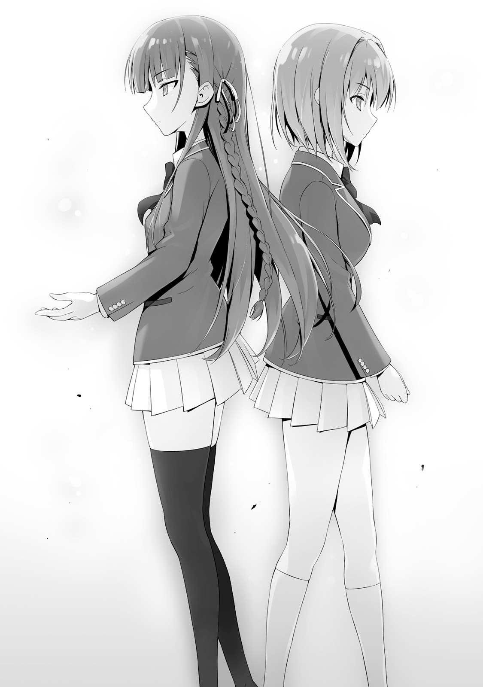
— No voy a interferir, pero nunca cooperaré contigo. No olvides esto.
— ……¿Es así? Es una pena, pero no se puede evitar. Después de todo, esas son las condiciones.
— No lo olvides, Horikita-san. La única condición es dejar de interponerme en tu camino.
Mientras su mirada era débil, el color oscuro de sus ojos todavía se aferraba a mí.
— Eso es-
Kushida se fue sin decir otra palabra, como si estuviera diciendo que no quería ver a Horikita ni siquiera un segundo más.
Salir de la sartén para entrar en el fuego. Horikita ya no era su objetivo, pero
¿significa eso que ahora es mi turno?
Parece un argumento por el bien del argumento, pero mi seguridad definitivamente no estaba incluida como un término de la apuesta.
— Debería haber pesado más en las condiciones de la apuesta.
Dicho esto, es probable que nada cambie.
Había llegado a una conclusión. Kushida no cumplirá su promesa para siempre.
Porque esto no es algo con lo que ella pueda fácilmente estar de acuerdo. Para proteger su existencia, Horikita y yo estamos absolutamente en su camino. Para Kushida, solo somos sustancias extrañas.
Mientras todavía estemos cerca, Kushida no puede tener un futuro seguro.
Lo máximo que puedo esperar es que este descanso temporal dure aunque sea un segundo más.
PARTE 4
Después de separarme de Horikita, pensé en el futuro.
El Ryūen Kakeru de mi imaginación no es el tipo de persona que deja las cosas sin terminar de esta manera.
Horikita ciertamente hizo un buen trabajo esta vez. Confinó a Ryūen, que manipuló a Kushida, con un ataque preventivo bien colocado.
Originalmente, su enfoque no sería muy útil durante un conflicto de la clase donde es difícil para los aliados traicionarse entre sí, pero es una estrategia realmente efectiva cuando un traidor ya está al acecho. Sin embargo, su método no siempre se puede usar. Está limitado a situaciones como el festival deportivo y exámenes como este.
Es por eso que tomó la iniciativa de asegurar a su hermano como testigo, creando una oportunidad de uno en un millón. La Clase D estudió intensamente durante el mes anterior al examen final, por lo que no deberíamos perder ante la Clase C. En general, esto podría considerarse una victoria completa.
Mi teléfono comenzó a vibrar.
[¿Qué estás tramando?]
Recibí ese mensaje.
No soy solo yo. ¿No estás tramando algo también, Ryūen?
[Haré que pagues el precio por usarme]
Envió otro mensaje corto, seguido de otro poco después.
Había un archivo adjunto esta vez.
Era un archivo de imagen. Después de que lo abrí, resultó ser una fotografía.
No incluyó texto en el mensaje porque la imagen lo dice todo.
— Como era de esperar, Manabe y las demás confesaron.
Aunque ya sabía esto en el momento en que Ryūen entró en contacto con Hiyori.
Incluso si no veo cómo maneja las cosas, puedo imaginarlo fácilmente.
Probablemente utilizó amenazas similares a la intimidación y la extorsión para llegar al traidor.
Y ahora, nombres como el de Keisei y el mío están en su mente, profundizando sus sospechas.
Sin embargo, él no tiene evidencia. Tampoco puede llegar a ninguna conclusión, dada la posibilidad de que la mente maestra todavía pueda estar al acecho.
Habiendo dicho eso, la decisión de Ryūen de arrinconarme aquí sin duda tiene que ser por esa razón.
No es necesario que piense mucho sobre cuál es su intención con esta fotografía.
El hecho de que él tenga esta fotografía significa que su origen se conoce en cierta medida.
Dependiendo de la situación, los colmillos de Ryūen también se volverán hacia la persona que aparece en esta fotografía.
No, es más como que colgar el anzuelo frente a él es una declaración de guerra.
— Ryūen debería haber permanecido en silencio.
Pensar que revelaría la información que obtuvo tan fácilmente. ¿Está disfrutando esto?
Ya me estaba cansando un poco de su búsqueda obsesiva.
Cerré mi teléfono y endurecí mi voluntad al mismo tiempo.
Parece que no hay razón para pensar en esto a medias si mi objetivo es disminuir su fortaleza mental.
Si él está decidido a hacer la guerra, le haré frente .
— Ven a mí con toda tu fuerza para que no tengas nada de qué arrepentirte después. Jugaré contigo en tu propio campo de juego.
Estaba reacio, pero no pude evitar sentirme un poco emocionado.
PARTE 5
— Llegas tarde, Kikyō. ¿Tuviste problemas para alejarte de tus compañeros de clase?
— ¿Qué quieres decir con eso, Ryūen-kun?
Kushida apareció en una azotea remota. Se acercó a Ryūen sin tratar de ocultar su verdadera naturaleza.
— ¿Ah?
— Las preguntas y respuestas que me diste resultaron ser completamente diferentes a las del examen.
— Oh, sí. Cambié las preguntas justo antes del límite. ¿Qué hay con eso?
Él rió un poco desdeñosamente antes de tomar un trago de agua mineral de su botella de plástico.
— Como te dije. Forzaré a Horikita a que se vaya sin importar lo que tenga que hacer. Solo por esta razón, traicioné a mis compañeros de clase y secretamente presenté las preguntas del examen de la Clase D. La condición era que obtuviera a cambio las preguntas y respuestas para matemáticas de la Clase C. Si hubieras cumplido tu promesa, Horikita ya se habría retirado voluntariamente de la escuela. Y sin embargo, me traicionaste.
— ¿Qué? ¿Estás enojada por algo así?
— ¿Por algo así? ¿Saliste en contra de la Clase D y vas a terminar con esto?
— Estás malinterpretando la situación, Kikyō. Las preguntas que hiciste no se usaron en el examen.
— ¿Huh? ¿De qué estás hablando? Envié las preguntas del examen lo más pronto posible, tal como me indicaste. También confirmé todo con Chabashira-sensei. No hubo errores.
— ¿No lo has notado todavía? Suzune hizo movimientos antes para evitar que tus preguntas para el examen fueran formalmente aceptadas. Gracias a eso, no solo no salimos triunfantes, sino que evitamos la expulsión por un estrecho margen. Toda la clase dependía de esta estrategia.
— Espera un segundo...... ¿Antes? Eso...... De ninguna manera......
— Solo espera los resultados del examen si no me crees. Diez a uno, la Clase C perdió con la Clase D. En otras palabras, nuestro acuerdo no es válido. No puedo permitirme mostrarte las respuestas correctas a las preguntas del examen si no recibo nada a cambio. Ese es el giro natural de los eventos.
— ¡Tsk......!
— Aunque te diré esto, Kikyo. No tienes derecho a guardarme rencor, así que,
¿qué tal si me das las gracias?
— ¿¡Agradecerte!? Perdí ante Suzune, ¿sabes? ¿¡Por qué quieres que te agradezca!?
Pensó en la humillación de verse obligada a aceptar la derrota ante Horikita. Era suficiente para hacer que su sangre se llenara de ira.
— Para que te atrapen en esta trampa sin siquiera saberlo, seguro que te tomas las cosas con calma.
Ryūen se acercó a Kushida y agarró su uniforme.
A continuación, le desabrochó a la fuerza el botón de su chaqueta y comenzó a alcanzar el interior.
— ¡Oye! ¿¡Qué estás haciendo!?
Ryūen sonrió cuando Kushida se apartó de él presa del pánico.
— Por Dios, no voy a hacer nada. Busca dentro de tu bolsillo.
— ...... ¿Dentro de mi bolsillo?
Mientras todavía estaba en guardia, Kushida lentamente buscó en el bolsillo interior de su chaqueta.
Había una sensación de papel que ella no esperaba encontrar. Después de sacarlo, encontró un pedazo de papel doblado.
— Qué es esto……
Ryūen no debería haber tenido el tiempo de poner algo dentro en este momento.
En otras palabras, ya estaba allí antes. Cuando abrió el papel, encontró una lista de preguntas y respuestas para el reciente examen de matemáticas.
Sin embargo, estas no eran las preguntas que se presentaron en el examen que se realizó hoy. En cambio, eran las que Ryūen dijo que enviaría originalmente.
— ¿Por qué está algo así en mi chaqueta...?
— Probablemente habrá más que eso. Debe haber varios materiales para hacer trampa repartidos por tus pertenencias personales. Los encontrarás si tratas de buscarlos más tarde.
— No entiendo lo que esto significa.
— Alguien en la Clase D estaba preparado para sacarte del camino. ¿Qué pasaría si te acusan de hacer trampa durante o poco después del examen?
¿Qué pasaría si yo hubiera decidido usar esas preguntas? ¿Qué crees que pasaría si encontraran ese papel después de haber tenido éxito en el examen?
— ¿Me expulsarían? ¿Incluso si no hice trampa? ¡Eso es estúpido!
— Debería haber alguna forma de probarlo si eres realmente inocente, pero también es cierto que obtuviste las respuestas de antemano uniendo fuerzas conmigo. Así que incluso si estás decidida a ser culpable, no se puede evitar.
Por supuesto, es posible que ella afirme que la situación fue pensada por otra persona. Aunque es más inocente que culpable, aún estaría manchada por la sospecha. Esto se debe al hecho innegable de que Ryūen le había proporcionado las preguntas y respuestas de la Clase C. Aunque no está en contra de las reglas darlas a otra clase, la sospecha no desaparecería. Incluso si lograra evitar la expulsión, las sospechas de culpabilidad permanecerían y los resultados del examen se volverían inválidos. A pesar de que estas sospechas nunca serían más que especulaciones, Kushida también habría puesto en peligro la posición de Clase D, y los problemas también llegarían a la Clase C.
— ¿Cuándo llegó este papel...?
— ¿No tienes idea? ¿Han sucedido cosas extrañas a tu alrededor recientemente?
— Posiblemente... no, pero...... fui a la reunión final de estrategia con Horikita y los demás en un Karaoke la semana pasada. Supongo que algo un poco extraño sucedió entonces. No está claro por qué, pero una chica comenzó a lanzar acusaciones y luego derramó su jugo sobre mí cuando estaba enojada.
Después de eso, ella insistió en llevarlo a la tintorería para compensarlo. Es
comprensible dada la situación... y no creo que haya ninguna conexión...
pero de alguna manera todavía está en mi mente.
— Voy a adivinar quién es esa chica. Karuizawa Kei, ¿verdad?
— ……¿Cómo sabes eso? ¿No me digas que lo viste?
— ¿Cómo podría haberlo visto? La razón es simple.
Ryūen se tocó el costado de la cabeza con un dedo para enfatizar su capacidad deductiva.
— Explícalo en detalle, comenzando desde el principio.
Aunque Kushida todavía se sentía insatisfecha, explicó completamente los detalles del incidente en el karaoke. Que Horikita y Hirata convocaron a todos, que ella había estado sentada en la mesa con Ayanokouji, Sudō y Karuizawa, y que en medio de la discusión, Karuizawa la había molestado y finalmente había vertido jugo en su chaqueta.
Después de haberla escuchado en silencio, Ryūen conectó el razonamiento un paso más allá.
— Sin duda, eso fue una trampa.
— Imposible. Llevé mi chaqueta a la lavandería, pero definitivamente revisé los bolsillos cuando se las entregué. Además, la tienda me habría dicho si había algo que perdí cuando volví para recogerla. Entonces, incluso si Karuizawa hubiera tratado de poner una trampa en ese momento, ¿no hubiera sido algo sin sentido?
— De hecho, esa hazaña sería casi imposible de lograr en ese momento. Sin embargo, ese no era su objetivo. ¿Alguien quería saber si tenías o no un uniforme de repuesto?
— ¿De repuesto? Incluso si ese fuera el caso, todavía es imposible.
— ¿Qué te hace estar tan segura de eso?
— ¿Estás diciendo que todos allí me han tendido una trampa y que no he podido verlo? No soy idiota. Siempre observo el comportamiento y la conducta de las personas que me rodean. Definitivamente habría sentido algo fuera de lugar si todos me estuvieran mintiendo.
— Bueno, eso es probablemente lo correcto. Sin embargo, la cantidad de personas que te mintieron fue de una o dos como máximo.
— ¿Haa? ¿Cómo algo así...?
— No hay nada de qué preocuparse. Si hubo alguien que leyó la situación a la perfección, engañarte es justo lo que necesita. Alguien capaz de rastrear los patrones de pensamiento, las características, los hábitos y las reacciones de todo el mundo y lo que sucede a su alrededor. Qué tipo de comentarios harías. Alguien que logró predecir completamente todo. Alguien que planificó el guión para tu historia tal como la escribiste.
Mientras Kushida pensaba en ese momento, comenzó a pensar que todo esto podría ser posible. En particular, Hirata tenía una forma de pensar que era consistentemente pacifista. Le preocuparía si la chaqueta se manchara, y él también querría lidiar con la ira irracional de Karuizawa. Dado que era justo antes del examen, definitivamente preguntaría si tenía o no un uniforme de repuesto. Ella comenzó a pensar que ese podría ser el caso.
— Una vez que supieron que solo tenías una chaqueta, lo único que queda por hacer es plantar la hoja de respuestas en ella durante la clase de gimnasia o algo así. No es extraño que no hayas revisado el bolsillo interior durante uno o dos días después de haberla recuperado de la lavandería. Supongo que hubo muchas otras veces en las que pudieron haberla manipulado. Sin embargo, la pregunta importante aquí es quién lo pensó. No Suzune o Karuizawa al menos. No son del tipo que podría hacer algo así.
— ¿Entonces estás diciendo que caí en su trampa?
— No mucho antes del examen, había una carta que acusaba a Ichinose de obtener ilegalmente sus puntos, ¿verdad?
— Es la que le preparaste. ¿Por qué fue eso? No resultó ser nada ilegal después de todo.
— Es una estrategia que muestra adecuadamente qué tipo de persona es la mente maestra.
— ¿Qué?
— No soy el que envió esa carta. El tipo de la Clase D que te emboscó lo hizo.
— No entiendo lo que quieres decir.
— ¿Crees que me molestaría en poner una carta predicando las sospechas sobre Ichinose en el buzón de cada estudiante de primer año e imprimir mi nombre en cada una? No, no lo haría, pero dado que mi nombre estaba
escrito en las cartas, es natural que todos piensen que soy el principal infractor.
— Deberías haberlo negado si no eras tú.
— ¿Crees que lo haría?
— ……No.
Kushida entendió de inmediato. Ryūen siempre ha tenido la tendencia de perseguir lo emocionante. Definitivamente habría encontrado la situación divertida si alguien enviara cartas en su nombre. Además, como él nunca había oído hablar de las sospechas contra Ichinose, también querría saber la verdad.
Entonces, ¿por qué escribieron específicamente el nombre de Ryūen como remitente de la carta? Porque si el remitente es desconocido, la credibilidad del mensaje se reduciría enormemente. Esta duda podría hacer que la situación se maneje de manera aún más irresponsable.
— ¿Pero cuál es el punto? Filtraron información extraña y también te pusieron en guardia.
— No sé... lo he pensado, pero no está claro. ¿Simplemente quería saber algún hecho sobre la gran cantidad de puntos de Ichinose? O...... No, eso no es posible. No puede ser por una razón tan estúpida.
Ryūen estuvo a punto de decirlo, pero luego se detuvo. Simplemente estaba demasiado alejado de la realidad.
— Oye, Kikyō. No sé sobre tu pasado, y no estoy realmente interesado en ese tipo de cosas. Sin embargo, si continúas intentando persistentemente que Horikita abandone la escuela, serás eliminada.
Esta estrategia fue preparada con gran cuidado y ejecutada sin piedad. Este era definitivamente el personaje que Ryūen está buscando, X.
— Las cosas tampoco se ven bien para ti. ¿No es malo para la Clase C perder este examen especial?
— Está bien. Con esto, tu Clase D está ahora al alcance para promocionarse a la Clase C.
— ¿Cómo te sientes acerca de ser dejado atrás por esa Clase D defectuosa?
Ryūen no sentía nada en particular, incluso en respuesta a la incesante pregunta de Kushida.
Esto es porque desde el principio nunca tuvo interés en asuntos tan triviales.
— Se siente fantástico. Ya sea con la clase A, D, o lo que sea, los enfrentamientos hasta ahora solo han arañado la superficie de lo que hay por revelar.
— ……¿Qué significa eso?
Por supuesto, Ryūen no respondió. Sin embargo, su objetivo todavía no ha cambiado desde que ingresó a la escuela. Aunque ha habido momentos en que las cosas no han ido según lo planeado, los preparativos para la promoción a la Clase A ya han comenzado.
— Haz lo mejor que puedas y aspira a las clases superiores.
Ryūen dijo esto y luego se dio la vuelta, con la intención de irse.
— ¿¡Esta hoja de respuestas......!? ¡Espera! ¿¡No hay algo un poco extraño!?
— Kuku......
Kushida había notado algo inexplicable después de mirar la hoja de respuestas.
— Dime qué está pasando, Ryūen.
— ¿Lo notaste?
Alguna contradicción. Algo que no debería estar allí. Un nuevo problema se había agrandado.
— ¿Por qué alguien en la Clase D tiene las preguntas de la prueba que solo tú y yo deberíamos tener? No puedo pensar en ninguna razón.
— Está bien. La razón por la que X pudo usar estas preguntas es porque se las di.
— Entonces me traicionaste.
— Eso no es cierto. Era un trato necesario que tenía que hacer con él.
Ryūen echó un vistazo a su teléfono. Había fotos de las preguntas y respuestas antes de que él las cambiara.
Ryūen envió estas imágenes a la dirección de correo electrónico no identificada de la otra persona.
— Sin embargo... Él me entiende bien.
Antes de que Ryūen enviara las fotos, había recibido varios mensajes de X.
El primero tenía un título que decía “Transacción”. El contenido del mensaje fue este:
[Proporciona las preguntas y respuestas finales de la Clase C para el examen final].
[De lo contrario, realiza cambios significativos en las preguntas y respuestas que proporcionaste a Kushida Kikyō].
Este era el mensaje que Ryūen había recibido.
Por lo general, Ryūen no respondería a algo como esto.
Sin embargo, X le había dado información útil que benefició a la Clase C sin ningún compromiso.
La información era que Horikita Suzune había visto a través de las tácticas de Ryūen y Kushida, y había hecho un ataque preventivo. Esto había sido repentino para Ryūen, que había estado anticipando el éxito completo con el reemplazo de Kushida de las preguntas del examen.
Si no fuera por esta información, algunos de sus compañeros de clase que estaban atrasados en sus estudios podrían haber tenido que abandonar la escuela. Sabiendo esto, Ryūen tenía tres opciones disponibles sobre cómo proceder.
La primera era desobedecer a X y dejar que Kushida ganara. Sin embargo, esto era algo que Ryūen quería evitar tanto como fuera posible, no quería que Horikita abandonara la escuela. La segunda era no cambiar las preguntas del examen y dejar que X exponga a Kushida por hacer trampa y hacer que
abandone la escuela. Sin embargo, no era divertido acatar la progresión ideal de X de la situación, por lo que no consideró esta opción.
La última opción de Ryūen era cambiar las preguntas del examen y dejar que Horikita ganara el examen.
— ¿Así que logró proteger a Suzune, mientras cerraba las opciones de Kikyō al mismo tiempo?
Suzune estaba peleando en la superficie, y alguien más controlaba las cosas detrás de escena.
Ryūen no pudo evitar reír al pensar acerca de cómo su estrategia de usar Kushida era, a su vez, utilizada en su contra.
— Pero estoy a punto de llevarlo al límite. Si él no muestra su verdadera naturaleza...
Abrió el archivo de imagen que envió a X una vez más.
— En ese momento, tendré que destruirlo.
Ryūen estaba convencido de que la persona en esa fotografía es una pieza importante en el rompecabezas de descubrir la identidad de esta persona.
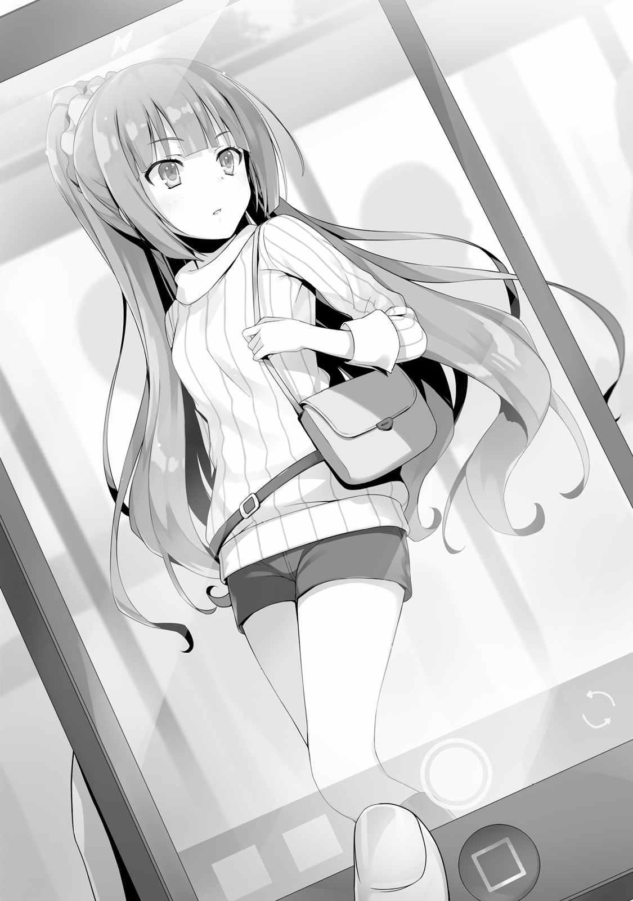
PALABRAS DEL AUTOR
De aquí en adelante, la parte principal del volumen está terminada. El volumen 6
ha llegado a su fin. Soy Shōgo Kinugasa. Mi preocupación actual es que la formación de ateroma en mi cuerpo ha crecido recientemente al tamaño de pelota de golf. Aterrador.
Esta vez “Classroom of the Elite” también concluyó el séptimo volumen en general de la serie. Este volumen debería ser como un lugar de curación, la calma antes de la tormenta. Decidí describir los cambios más profundos dentro de cada personaje. En el siguiente volumen, creo que la historia se desarrollará más que nunca, incluida una batalla decisiva con un enemigo determinado, así como el pasado de Ayanokouji Kiyotaka.
Y luego... Sí. Hemos decidido animar “Classroom of the Elite” (You Jitsu). Todos ustedes merecen el crédito por hacer esto posible, así que muchas gracias.
Tomose y yo estuvimos muy contentos, y el otro día marcó diez años en que hemos estado lamiendo las heridas del otro. (El significado es implícito) El anime se emitirá a finales de julio, probablemente unos dos meses después de que se publique este volumen. ¡En ese momento, sin duda podré presentarles el séptimo volumen! (Hacerlo según el plan después de que lo he declarado ¡es algo que nunca antes había sucedido!) Entre los editores, la editorial, la productora de anime, habrá una gran variedad de personas involucradas en el futuro. Haré todo lo posible para no dejar que estos esfuerzos sean deshonrados. Muchas gracias.
HISTORIAS CORTAS
HASABE HISTORIA CORTA
QUIZÁ PUEDA HACER AMIGOS
No odio ir a la escuela.
Creo que las cosas funcionaron sin problemas desde la primaria hasta la secundaria.
Pero si me preguntaran si me gusta la escuela o no, no podría responder con franqueza que me gusta.
Cuando era joven, mi pecho se desarrolló a una edad temprana, por lo que el rasgo distintivo de la niña que encarnaba era extremadamente llamativo.
Durante mi infancia los niños se burlaban de mí por mi pecho y las niñas me miraban con simpatía. Mi crecimiento se hizo aún más notable después de ascender a la secundaria. Como resultado, recibí aún más atención.
Sus ojos miraban inconscientemente hacia mi pecho, esto era inevitable. Sin embargo, después de darme cuenta de sus miradas lascivas, mi corazón se fue enfriando poco a poco.
Debido a esto, me convertí en alguien que básicamente dejó de hacer ejercicio.
Poco a poco quise evitar esas miradas.
¿Qué pasó como resultado? Naturalmente, su impresión de mí se convirtió en la de una persona fría y arrogante y comenzaron a distanciarse.
No me enfadé. Fue muy relajante, así que pensé que estaba bien.
Cuando me convertí en estudiante de preparatoria, ya estaba acostumbrada a estar sola. Aunque me uní al grupo de Karuizawa y Kushida, no me esforcé por acercarme a su círculo.
Originalmente planeaba vivir así, sin hacerme amiga de nadie... pero las circunstancias cambiaron.
No pude evitar cambiar.
—No esperaba que no sólo tuviéramos que hacer los exámenes con un compañero... sino también con Miyacchi, que no es bueno en las mismas materias que yo.
Además, nunca he escuchado que los estudiantes sean los que formulen las preguntas del examen.
Por sus conversaciones, parece que los exámenes van a ser muy difíciles esta vez.
—¿A quién estás esperando, Hasebe-san?
Kushida me miró con expresión de asombro, a mí que estaba allí de pie, usando mi teléfono con una mano.
—Ah, sí. Tengo cosas que hacer, voy a un grupo de estudio ahora mismo.
—Ahora que lo mencionas, estabas hablando de esto con Yukimura-kun y los otros.
Cuando ella me preguntó, no había nada que tuviera que ocultar, así que asentí con la cabeza como respuesta.
—Aunque debe ser muy duro, ¡buena suerte! Si tienes algún problema, vendré a ayudarte en cualquier momento.
—Gracias.
Se fue después de que terminara nuestra breve conversación.
Ella es realmente una buena persona - murmuré estos pensamientos.
Si todo el mundo fuera como Kushida, las cosas serían muy fáciles.
Si fuera así, probablemente podría mezclarme un poco más en la clase D.
Siento que no soy capaz de llevarme bien con Karuizawa-san y Satou-san.
—... Es inútil pensar en esto.
—¿Por qué te fuiste antes?
Yukimura-kun caminó hacia mí con una expresión ligeramente enfadada.
Miyacchi y Ayanokouji-kun le seguían.
—¿Me preguntas por qué? Es porque no quiero llamar la atención. Es un poco incómodo en el aula...
Odio las miradas lascivas de los chicos, a pesar de que llevo uniforme escolar.
—¿No quieres que otros te vean hablando con nosotros?
—No es así. Tengo mis propias circunstancias.
Habría sido muy fácil explicarlo, pero no pude hacerlo. Esto es difícil de hacer con una persona del sexo opuesto.
—No te preocupes, Yukimura. Hasebe siempre ha sido este tipo de persona.
Aunque no puedo determinar toda la situación, estas tres personas tienen una cosa en común.
Ninguno de ellos usaba una actitud pervertida al mirarme. Al menos, esta parte merece ser evaluada.
—Si seguimos parados y charlando aquí, no habrá asientos vacíos. ¿Qué tal si nos movemos primero?
—Tienes razón.... Sería muy problemático si todos los asientos estuvieran ocupados. Vamos.
—También deberías tener cuidado con tus palabras.
—Mi forma de hablar de antes provoca resentimiento. Reflexionaré sobre ello.
Aunque no está claro si puedo tener una relación fluida con estas tres personas.
Sin embargo, esto parece interesante.
Eso es lo que pienso.
SAKURA HISTORIA CORTA
LA PERSONA QUE AMO
Mantenía el intenso latido del corazón en mi pecho mientras llegaba al centro comercial Bunanoki junto con Kiyotaka-kun.
Cada vez que veo caminar a mi lado a Kiyotaka-kun, siento que mi corazón va a estallar.
Esto no es algo malo, sino un dolor cómodo.
... Debí haberme dado cuenta.
Ahora mismo, me gusta Ayanokouji Kiyotaka-kun.
—Es emocionante salir con todos... Ki-Kiyotaka-kun.
—Así es, no se siente mal.
Es gracias a Keisei-kun y a los otros que puedo dirigirme a Ayanokouji-kun como
"Kiyotaka-kun".
Por supuesto, estoy muy avergonzada y no lo hago bien, y sin embargo....
—Jejejeje.... KIyotaka-kun.
Ya soy feliz sólo por poder llamarlo por su nombre.
—¿Qué pasa?
Me preguntó Kiyotaka-kun mientras mostraba una expresión desconcertada.
—¿Eh? ¿Qué quieres decir?
Sin saber la razón de la pregunta de Kiyotaka-kun, no pude evitar responder con otra pregunta.
—Has dicho mi nombre, ¿verdad?
—... ¿Te he llamado? ¡Lo siento, no es así en absoluto!
Pensé que lo había dicho en mi cabeza, pero al parecer lo dije en voz alta sin querer.
Después de conseguir el boleto de cine de Haruka-san, busqué los números de asiento y descubrí que mi asiento estaba junto al de Kiyotaka-kun.
No se puede considerar una cita entre los dos, pero nos sentaremos en asientos vecinos. ¡Es grandioso!
—¡Ayanokouji-kun!
Justo cuando me regocijaba, oí a alguien llamando a Kiyotaka-kun desde mi espalda. Era una voz femenina.
—¿Será que vas a ir al cine? ¡Oh! ¡Es para la película que es un tema candente!
Era Satou-san.... Se acercó mucho a Kiyotaka-kun.
Sentí un poco de odio y miedo, así que amplié mi distancia con ellos.
—...Así parece.
—¿Te invitó Karuizawa?
—No. Le sugerí que fuéramos a ver una película al grupo de estudio y Karuizawa me dijo que ella también quería venir, así que vinimos juntas.
Ya que es una rara oportunidad, vayamos a verla juntos.
¿Por qué Satou-san tiene que hacerlo? ¡Era una rara oportunidad de ir a ver una película en compañía de Kiyotaka-kun! ¿Por qué, por qué?
Mientras aún estaba confundida, Satou-san se abrazó al brazo de Kiyotaka-kun.
—¿¡Fuaa!?
Enfrentándome a esta escena difícil de creer que se representaba delante de mí, mi cerebro empezó a temblar.
Después de eso, no pude escuchar nada de lo que me rodeaba.
Recientemente, han estado saliendo juntos, y parecen muy íntimos, no puede ser, no puede ser.
Hice todo lo que pude para mantener mi conciencia a fin de confirmar la verdad, así que exclamé en voz alta.
—Em, Ki-kiyotaka-kun.
—¿Qué pasa?
—Kiyotaka-kun... recientemente, Satou-san y tú, han estado en buenos términos....
¿Están saliendo? Aunque quería preguntar algo así, no podía sacar estas palabras de la boca.
No tengo este tipo de coraje...
—Es un malentendido. Satou y yo hemos estudiado juntos un par de veces porque somos una "pareja".
—¿Pero la gente normalmente no camina tomados del brazo?
—Eso no fue tomados del brazo, sino que tomaron mi brazo.
—Siento que, si no te gusta, puedes quitártela de encima...
—Entiendo. No creo que haya una próxima vez, pero tendré cuidado.
—¿Y además? Antes de que se establecieran las parejas, también fuiste a algún lugar con Satou-san, ¿verdad?
Esto es lo que más me importaba. Pregunté con todas mis fuerzas.
—... Entre ustedes dos, ¿hay algo...
¿No es ese el presagio antes de una confesión? -No pude evitar pensar así, como si me diluyera.
Pero, ¿y si fueran palabras de confesión?
¿Si Kiyotaka-kun aceptó la confesión de Satou-san, y están saliendo ahora mismo?
Si este hecho se revelara frente a mí, mi corazón seguramente dejaría de latir.
Pero-
—No.
Kiyotaka-kun hizo una afirmación directa.
Estoy tan contenta....me sentí aliviada por ahora.
Pero mentiría si dijera que mi corazón no está perturbado.
—¿No estás convencida?
—N-no. Lo siento por hacerte siempre preguntas raras... ¿te hice sentir incómodo...?
Sólo sigo haciéndole preguntas raras, ¿podría ser que Kiyotaka-kun me odie?
Aunque no soy más que una amiga de Kiyotaka-kun, sigo haciéndole preguntas descabelladas.
De repente empecé a odiarme a mí misma y casi me pongo a llorar.
Pero Kiyotaka-kun probablemente notó mi estado de ánimo, así que me habló suavemente.
—En absoluto. Si hay algo que te preocupe, puedes decírmelo en cualquier momento.
Wuuuu, tan amable.....
En este tipo de situaciones, no se podía evitar que me sintiera feliz, pero Kiyotaka-kun me trata como de costumbre.
Cada vez que veo a Kiyotaka-kun así, me gusta aún más.
—Cuenta conmigo. Vigilaré adecuadamente a Kiyotaka-kun.
Este es mi primer amor.
Me gustará cada vez más... lo creo firmemente.
SAKAYANAGI HISTORIA CORTA
EL DÍA A DÍA DE SAKAYANAGI ARISU - DETRÁS DE ESCENA DEL
DECISIONES CONTRASTANTES
Aunque muchos estudiantes se deprimieron por los días de estudio constante, el tiempo seguía pasando.
Y llegó el invierno. Después de entrar en diciembre, el examen final por fin se realizará en menos de tres días. Mañana, la escuela estará cerrada durante el fin de semana, y el examen nos estará esperando el lunes.
Para ser sincero, el desafío del examen en sí no era una gran preocupación. En lo que respecta a la Clase D, todos tienen consistencia suficiente y los resultados de los grupos de estudio son excelentes. También puedo afirmar que incluso Sudō, y los otros que a menudo están cerca de reprobar, han estado trabajando más duro que nunca.
El problema está en otra parte. No es demasiado decir que el problema radica en Ryūen y Kushida. Sin duda, han comenzado a moverse por debajo del agua, y puedo adivinar lo que van a hacer.
Los objetivos de Ryūen son “superar la calificación general de la Clase D” y
“sacar a la superficie la existencia que se esconde detrás de Horikita”. Para el primero...... es decir, las tácticas disponibles para superar nuestra calificación general son inevitablemente limitadas. Los métodos adecuados serían que la Clase C en su totalidad estudiara celosamente, o que presentara preguntas súper difíciles. Cualquiera de los dos funciona, pero estas son estrategias generales a las que la Clase D también puede recurrir.
No sé si la Clase C se ha reunido o no para un grupo de estudio a gran escala.
No han aparecido en cafés, bibliotecas, aulas o cualquier otro lugar de estudio típico.
¿Es una coincidencia que no los haya visto o la Clase C ha estado trabajando duro en algún lugar del que no estoy consciente? Aunque hayan estudiado mucho, siempre y cuando la Clase D no se vea abrumada, se verán obligados a participar en una batalla difícil. Esto no parece ser su táctica para ganar la pelea.
Entonces, es fácil imaginar que están viendo estrategias desde otras perspectivas.
— ¿Pensando acerca de algo?
— Oh, lo siento.
Como estaba paralizado, Horikita me miró desde la parte baja de la escalera.
Corrí escaleras abajo para alcanzarla.
Tenía un gran sobre marrón en la mano. Estaba repleto de las preguntas que ella había creado con Hirata y los demás durante el último mes. Tenía el destino de la Clase D.
Debido a esto, ella ni siquiera me dejó ver las preguntas, haciendo que la información fuera estrictamente confidencial. Ya que Horikita al final las recopiló todas, era la única que sabía todas las preguntas.
— ¿Cuáles son las probabilidades?
— Difícil de decir. Espero que no estés esperando demasiado. Después de todo, la escuela también ha estado haciendo grandes ajustes a las preguntas. Sin embargo, no hay duda de que hemos terminado la parte más difícil del examen que nos han dado hasta ahora.
Horikita tenía cierto nivel de confianza. ¿Debería considerar que está completo de manera sólida?
La pregunta entonces es: “¿cómo protegemos las preguntas hasta el final?”
Nos encontramos con otro estudiante en el pasillo de camino a la sala de profesores.
— Hola, Suzune.
Ryūen estaba allí con una sonrisa intrépida, sosteniendo el mismo sobre marrón que Horikita.
— ¿Es esto una coincidencia o una emboscada?
— Es inevitable. He estado esperando que vinieras.
— Entonces una emboscada.
Horikita dio un suspiro de disgusto y pasó junto a Ryūen.
— Espera, también estás llevando tus preguntas en el último minuto, ¿verdad?
Vamos juntos.
Ryūen habló, mostrando su sobre frente a Horikita.
— Como no sé quién va a echar un vistazo, entiendo que también serás prudente.
— ¿Estás preocupado por alguien de tu clase? ¿Te sientes bien?
— Kuku. Ningún idiota trataría de traicionarme.
— Y a pesar de eso, has esperado hasta el último momento para enviar tus preguntas como lo hice yo.
Horikita usó un enfoque agresivo devolviendo una provocación a la provocación.
Ryūen debería encontrar esto increíblemente agradable.
Seguimos caminando y él procedió a seguirnos.
— Espero que la sabiduría que lograste sacar de tus compañeros defectuosos funcione bien para nosotros.
Horikita siguió caminando, ignorando la existencia de Ryūen.
— Ayanokouji-kun, ¿has estado estudiando con diligencia? También tengo curiosidad sobre cómo se encuentra tu compañera.
— Así como son las cosas, creo que no reprobaremos.
— No sirve de nada solo pensarlo. No podemos tener ningún abandono en absoluto. No seas negligente, a pesar de que confiamos en manejar cualquier cosa que la Clase C pueda arrojarnos.
Parece que Ryūen no tenía la intención de permanecer en silencio, ya que una vez más respondió a los golpes verbales de Horikita.
— ¿Huh? ¿Estás preocupada por alguien de tu clase? Esa fue una observación interesante. Parece que finalmente estás entendiendo nuestra forma de hacer las cosas.
— Quién sabe. Tal vez fue solo una provocación barata. Justo como tú.
— Tal vez sea así.
Horikita llamó a Chabashira-sensei tan pronto como llegamos a la sala de profesores. Poco después, Chabashira-sensei se mostró.
Ryūen también llamó a Sakagami-sensei. Sakagami-sensei, que fue el primero, tomó el sobre marrón de Ryūen en silencio.
— ¿Aceptarás esto?
— Aah. Te preguntaré más tarde.
Después de su breve intercambio, Chabashira-sensei apareció y cambió de lugar con Sakagami-sensei.
— Parece que lo trajiste.
Al parecer que ya sabía lo que estaba sucediendo, y solo miró el sobre marrón.
Ella no parecía prestar particular atención a Ryūen en el costado.
— Chabashira-sensei. Estas preguntas que le estoy dando son las versiones finales.
— Me lo llevo.
Ryūen observó la conversación con una sonrisa misteriosa.
Horikita vio la mano de su maestra lista para recibir el sobre e hizo una pausa por un momento.
— Me gustaría preguntarle algo. ¿Este momento está bien para usted?
— Ah.
— Estas preguntas y respuestas son equivalentes al éxito o fracaso de la Clase D. Debemos evitar por cualquier medio la fuga de esta información. Después de que se las dé, ¿podría rechazar a cualquiera que le pida que se las muestre? No quiero que nadie las vea, incluida yo.
Horikita negoció a la luz de su reciente fracaso en el festival deportivo.
No sé si Chabashira-sensei entenderá eso.
— ¿Quieres que me niegue a divulgar la información?
— ¿Es algo difícil?
— Ese no es el caso. Puedo entender tu miedo a una fuga de información y tu deseo de asegurarte de que eso no suceda. La escuela tampoco tiene motivos para rechazar tu solicitud. Pero, por supuesto, es condicional.
— Condicional, ¿verdad?
— Debo determinar si es la voluntad general de la clase o no. ¿Todos lo han aprobado?
— No tomé su opinión para esto, pero... creo que se puede asegurar que esto es la voluntad general de todos con respecto a este asunto. Ya que ningún alumno quiere que su clase pierda.
— No puedes decir eso. He dicho algo así antes, pero cada persona puede tener una opinión inesperadamente diferente. No sería extraño que haya un estudiante que quiera perder.
— Eso es……
Chabashira-sensei se cruzó de brazos y añadió más:
— Además, ¿puedes garantizar que las preguntas del examen que tienes allí sean las que toda tu clase espera? Tu clase no ha dado su consentimiento a las preguntas antes de que las traigas aquí.
— ¿Me está diciendo que lo pruebe? ¿Quiere que haga llegar las preguntas a todos y confirme que no hay ningún problema?
— No dije eso. Lo que quiero decir, es que las cosas no son tan simples. Es imposible para mí decir si la estudiante, Horikita Suzune, parada aquí delante de mí está actuando por el bien de su clase. Sin embargo, aceptaré tu solicitud. Si algún alumno se fuera a poner en contacto conmigo, nunca revelaré las preguntas y respuestas que has creado.
— Muchas gracias. Con esto, puedo hacer el examen tranquila.
— Sin embargo. Me atrevo a decirte una cosa más. En general, no es bueno que tengas que restringir información como esta. Es evidencia de que la clase no se está uniendo muy bien.
Esto es sin duda una realidad que no se puede negar. Si no tuviéramos ningún compañero de clase sospechoso, no tendríamos que hacer esta solicitud, y tampoco tendríamos a nadie filtrando información como esta. Aunque esto es solo parte de mi imaginación, probablemente sea imposible que algo así ocurra en la Clase B.
— Qué duras palabras. En este momento estoy de verdad dedicada a mejorar las relaciones dentro de la clase.
Al escuchar esto, Chabashira-sensei sonrió un poco.
— Tú también has cambiado, Horikita.
— ...... Algunas cosas no pueden ser iguales por siempre.
— Definitivamente acepté tu solicitud. Sin embargo, también puede haber casos en los que se debería permitir la divulgación de la información cuando sea necesario. Siempre pueden suceder situaciones imprevistas. Por lo tanto, me gustaría agregar una condición a nuestro trato. Si, con tu permiso, alguien pide ver las preguntas y respuestas, entonces divulgaré la información. ¿Está bien? Si tuviera que afirmar que nunca se lo mostraría a nadie, sería un riesgo para ti también, ¿verdad?
En resumen, el 100% de ocultamiento no es formalmente posible.
No parece importar cómo, Chabashira-sensei parece querer que algún medio de divulgación siga siendo posible.
— Está bien. Sin embargo, considere mi presencia como otro requisito.
— Es una buena idea. Es posible que alguien mienta de que haya recibido tu permiso. Pongámoslo en claro entonces. Si alguien viene a solicitar las preguntas y respuestas, les diré exactamente lo que has dicho. Que no quieres divulgar información por temor a que se filtre. Después de todo, no puedo permitirme mentir como maestra.
— Eso está bien.
Horikita se sintió aliviada de que por el momento las negociaciones hubieran sido exitosas
Definitivamente ahora no va a desarrollarse de la misma manera que el festival deportivo. Ya sea Kushida o cualquier otra persona, aunque quieran verificar las preguntas, es imposible sin la presencia de Horikita. No debería haber ningún truco aquí.
Incluso si alguien estaba dispuesto a pagar una cantidad de puntos para eliminarla, obviamente no es motivo suficiente para revocar esta decisión.
Sin embargo, algo es extraño.
Lo sentí mientras escuchaba en silencio a Chabashira-sensei y la conversación de Horikita.
La respuesta a este problema no surge de inmediato, pero no hay duda de que algo es extraño. Todo parece ir bien hasta ahora. Las preguntas se completaron con un grado exquisitamente alto de dificultad; definitivamente digno del esfuerzo de Horikita, Hirata y los demás. Está bien hasta este punto. Horikita luego se las presentó a Chabashira-sensei y también implementó medidas para evitar que la información se filtre a otros.
Aunque Kushida obedezca a Ryūen e intente responder a las preguntas, se ha establecido con éxito un mecanismo que requiere el permiso y la presencia de Horikita.
Todo es sólido No hay escapatorias en ningún lugar......
Ya veo. Entonces ese es el motivo.
Si bien no hay nada fuera de lugar con su conversación, hay claramente algo fuera de lugar con Chabashira-sensei.
Los ojos, los movimientos y la actitud de Chabashira-sensei no muestran esto.
Ella aceptó solemnemente las preguntas del examen y permitió que Horikita se fuera.
También estaba la actitud confiada de Ryūen. Algo sobre ese comportamiento relajado me llamó la atención.
— Vámonos, Ayanokouji-kun. Hemos terminado nuestros asuntos aquí.
No la escuché y en cambio miré los ojos de Chabashira-sensei. Ella respondió mirándome a los míos.
Date cuenta de Horikita. Antes de que sea demasiado tarde--
No puedo hablar descuidadamente frente a Ryūen, y no puedo hacer contacto visual excesivo.
Incluso si superamos esto, podríamos estar en una situación en la que no tengamos suficiente tiempo para volver aquí.
Horikita comenzó a salir de la sala de profesores, pero de inmediato se detuvo donde estaba.
— ...... Chabashira-sensei. Acaba de decir que no me mentiría, ¿verdad?
— Sí. Como docente, eso es natural.
— Entonces le pregunto, ¿las preguntas y respuestas que le di ahora serán aceptadas?
Ella lo sintió.
Fue un pequeño deseo, pero Horikita entendió el problema ella sola.
— No está claro si las preguntas serán aceptadas o no hasta que se confirme que no hay problemas con ellas.
— ¿Qué pasa, Horikita?
Horikita no me dijo nada cuando hice esa pregunta.
— Entonces cambiaré cómo lo estoy preguntando. Antes de presentar las preguntas de este examen, no hay nada como “ya hemos aceptado diferentes preguntas” o “otras preguntas están programadas para su aceptación”, ¿no?
En vista de esta pregunta, los ojos y la boca de sensei se quedaron quietos.
— Que quieres decir con eso……
— Pase lo que pase, la respuesta solo puede venir de la boca de Chabashira-sensei.
— ......Tengo una sola respuesta a esa pregunta. La escuela ya terminó de aceptar y revisar las preguntas del examen.
Entonces nos lo dijeron. La verdad de esta situación nos fue señalada.
— Esto... ¿Esto significa que alguien más envió las preguntas y respuestas?
Sus pensamientos y sentimientos no pudieron ponerse al día con la conversación.
— Está bien. En esta situación, las preguntas que has hecho no serán aceptadas.
— Por favor cancele la aceptación en este momento. Las preguntas correctas están aquí.
Horikita habló, señalando el sobre marrón que sostenía la maestra.
Sin embargo, basado en la conversación hasta ahora, sabía que no era tan fácil permitirlo.
— Lo siento, Horikita, pero esa es tu subjetividad egoísta. Recibí las preguntas del examen de otro alumno y ya terminé de revisarlas y aceptarlas. Estaban preocupados por cosas similares. Querían que mantuviera privadas las preguntas y respuestas del examen para evitar una fuga de información, y si aparece alguien que quiera cambiar las preguntas, simplemente tome sus preguntas y guárdelas. También querían que les dijera quién vino después.
— Cómo pudo pasar esto……
Horikita cayó inerte en el acto.
Es una realidad demasiado brutal.
— Por favor, ¿quién es ese estudiante? Puede decirme, ¿verdad?
— Kushida Kikyō.
La respuesta ya era obvia.
Horikita originalmente tenía la intención de bloquear la traición de Kushida, pero esto significa que Kushida dio el primer golpe. Kushida tomó libremente acciones drásticas y audaces simplemente porque ya sabíamos sobre su otra cara.
— Dependiendo de la situación, las preguntas aceptadas se pueden cambiar,
¿verdad?
— Cierto. Tratemos con esta situación inesperada. Ten en cuenta que el plazo finaliza hoy. Si quieres cambiar las preguntas, por favor trae a Kushida aquí.
— Una cosa como esa……
Imposible. Kushida no dirá obedientemente que sí.
Para superar este problema, tendremos que visitar Chabashira-sensei con Kushida.
Sin embargo, Aunque comenzáramos a buscarla ahora, Kushida nunca sería atrapada a tiempo. Podría escapar casi al 100% de nosotros simplemente apagando su teléfono y escondiéndose en su habitación. No, ¿no hay una gran probabilidad de que ella ni siquiera esté en su habitación? Hoy seguramente va a terminar sin que encontremos su paradero.
— Horikita o Kushida... puedo especular sobre cuál de ustedes dos está mintiendo, pero no sé la verdad. También es posible que un desconocido esté tirando de las cuerdas. Para mí es un problema si no resuelves esta disputa interna de la clase.
— ...... ¿Cuánto tiempo más tenemos? Hasta que no podamos corregir las preguntas.
— A las 6 p.m.
Revisé mi teléfono. Son justo antes de las cuatro de la tarde, es decir, solo nos quedan unas dos horas.
— Kukuku...... ¡K-kujajajaja! ¿Qué demonios estás haciendo, Suzune?
Ryūen había estado mirando toda la conversación y se rió.
El hombre que debe haber sabido esto desde el principio, escupió una risa ante nuestra desesperada capacidad de recuperación.
— ¿No estás condenada ya? ¡Las preguntas que creaste carecen de sentido!
— ¿Instigaste esto? Tú eres quien le ordenó a Kushida-san que entregue las preguntas, ¿verdad?
— Aah, no sé. No hay forma de que yo sepa algo sobre la Clase D, ¿verdad?
Horikita levantó su voz mientras respondía a las obvias mentiras de Ryuen.
— ¡No puedo soportar que esta conversación siga siendo escuchada a escondidas por este extraño......!
— Oh, tan aterrador. Supongo que iré a casa obedientemente. Estoy esperando los resultados del examen.
— ...... ¿No vas a buscar a Kushida, Horikita?
— ...... Odio el esfuerzo inútil.
Incluso si logramos encontrar a Kushida, las probabilidades de que se comprometa con nosotros son inexistentes. Este juego ya ha sido decidido.
— ¿Le dijo Kushida-san que no mostrara las preguntas del examen?
— No, no he recibido una instrucción como esa.
Eso no era una sorpresa. Más bien, es más como una reafirmación de lo que ya creíamos.
— Déjeme verlas, por favor.
Como tenía permiso, Horikita le pidió a Chabashira-sensei que le mostrara las preguntas del examen que Kushida le envió.
Después de un vistazo, inmediatamente me llegó un solo pensamiento.
— Estas tienen una dificultad excelente.
— Si, de verdad.
Las preguntas que secretamente presentó Kushida no deberían ser tan diferentes a las preparadas por Horikita. Estas eran sin duda un conjunto de preguntas espléndidas y bien refinadas para el examen. Tan buenas que nadie más que el autor sabría cuál es cuál. Teniendo en cuenta que Ryūen está involucrado, esto es probablemente obra de Kaneda. Debido a esto, un tercero no podría saber quién está diciendo la verdad. Si fueran problemas que incluso Sudō y los demás pudieran resolver, se sospecharía que Kushida había presentado preguntas muy simples. Sin embargo, si la dificultad es similar, la verdad inmediatamente se torna confusa.
Horikita había hecho la promesa de no revelar el pasado de Kushida, y Hirata, quien tiene miedo del conflicto dentro de la clase, tampoco quiso decir una palabra al respecto. En resumen, la situación era la del primero en llegar gana.
Si conoce las respuestas con anticipación, no importa cuán difíciles sean las preguntas.
Si todos los estudiantes en la Clase C comparten las respuestas, pueden obtener una puntuación súper alta.
Habiendo juzgado esto, Kushida camufló la información a tal punto y llevó a cabo su estrategia.
A pesar de asistir a las sesiones de estudio y aceptar la apuesta de Horikita, logró manejar la situación de manera sólida.
Si la Clase D pierde, Horikita, quien asumió el papel de líder de la clase, inevitablemente enfrentaría parte de la culpa. Bajando su poder de cohesión, Ryūen es usado para llevar a Horikita a una situación desesperada.
Si solo se trata de la creación de las preguntas del examen, la situación aún se puede salvar. Hasta ahora, no hay forma de evitar el peor resultado.
Sin embargo, lo más importante aquí es la apuesta que Horikita hizo.
La alianza entre Kushida y Ryūen es cierta, y es completamente concebible que a cambio de su cooperación, ella reciba las preguntas y respuestas de la Clase C.
En cuyo caso, Kushida probablemente obtenga 100 puntos. Entonces, si Horikita falla una sola pregunta, deberá abandonar voluntariamente la escuela.
Horikita no rompería su promesa.
Si pierde la apuesta, elegirá abandonar la escuela, incluso si va en contra de su voluntad.
— ¿No hay nada más que se pueda hacer?
Con esto, la victoria de la Clase D desapareció.
El ataque preventivo de Kushida debería haber causado un gran daño a Horikita.
A primera vista, no parece haber hecho nada para mejorar la situación, pero ese no es el caso.
Sin embargo, todo esto fue causado por la planificación descuidada de Horikita.
Si fuera yo—
— En cualquier momento está bien, Horikita. Ryūen ya se fue.
Chabashira-sensei le dijo esas palabras a Horikita, quien tenía la cabeza baja.
¿Qué está pasando aquí?
Chabashira-sensei tampoco parecía alterada en absoluto, manteniendo diligentemente la compostura.
— Lo siento, fui extremadamente cautelosa, así que continué actuando durante mucho tiempo.
Cuando Horikita dijo esto, levantó la cabeza. No había en absoluto signos de depresión en su rostro.
Entonces lo entendí.
— ¿Tomaste contramedidas?
— Sí. Fui derrotada en el festival deportivo, así que no podía permitirme volver a ser derrotada de una manera similar. Cuando los detalles del examen final se anunciaron por primera vez, consulté inmediatamente a Chabashira-sensei. Tenía dos solicitudes: “Tengo el derecho de tomar decisiones sobre la presentación de las preguntas del examen” y “Quiero que pretenda aceptarlas si alguien más viene a presentar las suyas”.
En otras palabras, Kushida fue dirigida a creer que sus preguntas del examen fueron aceptadas.
— Deben estar convencidos de que las preguntas del examen fueron cambiadas. Si no están estudiando para el examen, puede haber expulsiones en la Clase C.
Nunca pensé que ella haría un contraataque tan hermoso, ni siquiera esperaba algo cercano a esto.
Lo más probable es que Ryūen no sea capaz de notar los movimientos de Horikita y predecir su primer golpe.
— Sin embargo, esta es una situación desalentadora. Hasta ahora, nunca había escuchado de una solicitud como esta. Incluso de la Clase D que me han encargado. No esperaba que mi clase fuera tan cautelosa y falsa en un sistema escolar como el nuestro. Las cosas no siempre irán tan bien, Horikita.
Si hay traidores en la clase, no se ganará ningún examen que pueda ser ganado.
Chabashira-sensei mostró una rara mirada de preocupación.
Eso es exactamente cierto. Para evitar que se envíen preguntas del examen, y para mentir acerca de aceptarlo. Son acciones innecesarias que las otras clases nunca necesitarían hacer. Incluso para la facción Katsuragi y la facción Sakayanagi de la Clase A, probablemente no habrían ido tan lejos.
En ese sentido, esto indica que debemos ser precisos con la forma en que tratamos con Kushida.
— Entiendo. Sin embargo, tengo la intención de terminar este asunto con este examen final.
Pude sentir su determinación de poner fin a este conflicto entre camaradas.
— ¿De Verdad? En ese caso, esperémoslo con ansias.
Horikita dio un suspiro de alivio mientras veía a Chabashira-sensei regresar a la sala de profesores con el sobre marrón.
— Lo siento por mantenerte en la oscuridad sobre esto.
Cuando los dos estábamos solos, ella se inclinó y se disculpó.
— No, está bien. Para ser honesto, no estaba al tanto de esto.
Aunque mis oportunidades de trabajar con Horikita han disminuido, realmente la subestimé.
— No sé cuántas veces me ha derribado, así que es hora de que aprenda de eso.
Esto no solo hizo añicos la victoria definitiva de la Clase C, sino que la Clase D
también dio un paso adelante.
Sin embargo, el duro desafío de Horikita aún permanece.
— Lo único que queda es superar la calificación de Kushida-san en el examen final, y con eso, esto terminará sin incidentes.
Está bien. Horikita no tiene futuro aquí si no supera la calificación de Kushida en el examen final.
Para asegurarse de que no pierda, es un requisito para ella obtener una puntuación máxima en la parte de matemáticas del examen final.
PARTE 1
Hoy comienza la primera mitad del examen final. El puntaje general requerido para cada pareja se determinó en 692 puntos. Es más bajo de lo esperado, pero
no podemos ser descuidados. Debería ser seguro decir que este desafío se decidirá al final del día de hoy.
Es un desafío donde el resultado está determinado por la dificultad de nuestras preguntas y su capacidad para ejercer presión sobre los estudiantes de la otra clase. El primer día del examen final consiste en los exámenes de cuatro materias: japonés, inglés, estudios sociales y matemáticas.
Esto significa que los destinos de Horikita y Kushida se decidirán también hoy.
Mientras caminaba por el pasillo de camino al salón de clases, me encontré con Satō que parecía estar esperando a alguien.
Para bien o para mal, la persona que estaba esperando parecía ser yo, ya que se acercó cuando me vio.
— Buenos días, Ayanokouji-kun. El examen está a la vuelta de la esquina.
— Sí. ¿Dormiste bien anoche?
— Me fui a la cama después de estudiar hasta la una, pero estoy empezando a sentir un poco de nervios.
Con eso, puso su mano sobre su pecho y respiró profundamente.
— Aunque no puedo decir que será fácil, hagamos lo mejor por el bien del otro.
Debes poder hacerlo bien si demuestras lo que has estudiado.
— ¡Sí!
No importa la forma, seguimos siendo una pareja. No puedo negar que somos un cuerpo coexistente ahora que compartimos el mismo destino. Si Satō falla, fallaré, y si fallo, Satō también falla. Podríamos fácilmente arrastrarnos el uno al otro al abismo.
— Buenos días, Satō-san.
— ¡Oh! Buenos días, Karuizawa-san.
Al llegar a la escuela, Karuizawa vio a Satō y la llamó.
— Por casualidad, ¿ya tienes arreglos con Ayanokouji-kun? Ustedes dos son una combinación muy inusual.
— N-no. De ningún modo. Nos encontramos por casualidad...
— ¿Es así? Bueno, ¿por qué no tomamos una bebida juntas en Pallet antes de ir a clase?
— ¡Sí! Bueno, ¡te veré más tarde, Ayanokouji-kun!
Ella habló un poco tímidamente mientras se alejaba de mí.
Karuizawa miró hacia mí por un instante antes de irse con Satō.
— ¿Eh, entonces estaban en buenos términos?
— Supongo que Karuizawa puede ser una chica muy celosa, sorprendente.
— ¿Eh?
El que habló no era otro que Hirata.
— Buenos días.
— Buenos días. ¿Qué quisiste decir con eso de hace apenas un segundo?
— Pasé mucho tiempo con Karuizawa-san mientras interpretaba el papel de su novio. Me di cuenta vagamente de que ella comenzó a prestarte más atención, Ayanokouji-kun.
— No, no creo que sea eso.
Karuizawa se había visto obligada a cambiar su hospedero de Hirata a mí, así que no puede evitar que lo vea de esa manera.
— ¿Es así? Desde donde estoy, me alegro de que haya resultado así. Después de todo, no creo que sea saludable estar en una relación falsa. Lo siento, soy egoísta, así que no te preocupes.
Dicho eso, los dos nos dirigimos hacia el salón de clases.
— Las preguntas que Horikita-san pensó definitivamente deberían obstaculizar a la Clase C. En cuanto a lo que queda, no creo que sea muy difícil ganar, siempre y cuando todos manejen bien el examen.
Hirata también rebosaba confianza.
Hasta cierto punto, parece ver el camino a la victoria en este este examen.
A pesar de que un par de estudiantes inesperados habían sido emparejados, todo había sucedido más o menos como se esperaba.
— Por cierto, hay algo que quería preguntarte, Ayanokouji-kun. ¿Conoces a Shiina Hiyori-san?
— Ella es una estudiante de Clase C, ¿verdad? Nos conocimos el otro día cuando se presentaron en el grupo de estudio de Keisei.
— Vinieron al mío también. Parece que la Clase C está buscando a la mente maestra que trabaja dentro de la sombra de Horikita.
— Así parece.
— Ayanokouji-kun, eres la persona que están buscando, ¿no? —Hirata no preguntaba porque quisiera saber, estaba preguntando porque quería confirmarlo—. Ah, no. Por supuesto que no le diré a nadie más.
Probablemente tengas tus razones para mantener esto oculto. También es cierto que la Clase D ve beneficios como resultado de tus acciones.
— ¿Es así? Tomaré tus palabras como advertencia entonces.
— Entonces no lo niegas.
— No me creerías incluso si lo hiciera.
— Eso es... sí. Tal vez sea así.
— No soy un héroe, y no estoy ocultando mi verdadera forma de ser.
Simplemente no quiero destacar. Esa es mi verdadera intención y cómo me siento realmente.
— Entonces supongo que tienes una razón para hacer lo que hiciste en el festival deportivo. ¿Pero fue eso algo seguro? La clase C ha comenzado a hacer su movimiento. Si resulta que necesitas mi ayuda, cooperaré con gusto.
Agradecí la oferta de Hirata, pero simplemente no es necesario en este momento.
— Ya se me ocurrirá algo. Confiaré en ti en caso de que algo suceda.
— Ya veo.
Llegamos al salón de clases. Examiné las expresiones de Sudō y los demás desde la distancia. Había una mirada claramente diferente sobre ellos en comparación con los exámenes anteriores. Estaban serenos, usando su tiempo para hacer las confirmaciones finales que necesitaban en lugar de memorizar los temas estando alterados. No eran solo una o dos personas, casi la mitad de la clase estaba concentrada y comprometida.
— Esta es la gran diferencia, ¿verdad?
— En serio.
Si le mostraras esta escena a alguien que había sido testigo de la Clase D hace varios meses, no podrían creerlo.
Si esta escuela no enfatiza los resultados por encima de todo, este podría no haber sido el caso.
— ¿Te has preparado?
Mi vecina Horikita estaba leyendo un libro en lugar de estudiar para el examen.
— ¿Qué estás leyendo?
— “Y entonces no había ninguno”.
— ¿Agatha Christie? Esperemos que queden algunos después de esto.
Horikita cerró su libro para rechazar mi humor negro.
— Nadie va a desaparecer. No hace falta decir que tú y yo tampoco lo haremos.
— La expresión de tu cara dice que vas a ganar sin importar el oponente.
— Naturalmente. Esta vez me preparé para obtener el primer lugar en nuestro año escolar.
— Si las preguntas de la Clase C resultan demasiado simples, lograr el primero será muy difícil.
— Ganaré a pesar de eso. Me mantiene motivada.
Entonces realmente lo estaré esperando. Muéstrame tu confianza inquebrantable con el examen final.
PARTE 2
Cuando sonó la campana preliminar, todos guardaron sus materiales de estudio.
Nos vimos obligados a guardar cualquier cosa innecesaria para los exámenes en los casilleros en la parte posterior del salón de clases. Lo único que nos permitieron dejar en nuestros escritorios fue un utensilio de escritura. Se pueden obtener suministros adicionales si, por ejemplo, un lápiz se hace demasiado corto o se rompe, un lápiz mecánico se queda sin puntillas, o se acaba una
goma de borrar. Lo único que tendríamos que hacer es informarlo a Chabashira-sensei.
— Presentarán su primer examen final después de esto: japonés moderno. Está prohibido pasar el papel hasta que yo dé la señal para comenzar. Presten atención a esto.
Chabashira-sensei no hizo que el estudiante al frente de cada fila pasara los exámenes hacia atrás, sino que colocó las hojas de examen en cada escritorio una por una.
— El examen dura cincuenta minutos. Intenten evitar enfermarse o la necesidad de usar el baño tanto como sea posible. Si no pueden esperar en absoluto, avísenme levantando la mano. No pueden salir del aula por ningún otro motivo después del comienzo del examen.
Nos dijo las reglas cuando terminó de entregar los exámenes a todos.
Poco después, sonó la próxima campana anunciando el comienzo del examen.
— Bueno, pueden comenzar.
Tan pronto como habló, todos dieron vuelta al examen al mismo tiempo.
Si todo va de acuerdo con la predicción de Keisei, las preguntas tendrán una tendencia general, por lo que nuestras contramedidas darán en el blanco.
Repasé las preguntas de arriba a abajo para ver si mis compañeros de clase serían capaces de resolverlas.
Había preguntas despiadadas, empezando desde la primera. A pesar de esto, no había nada sin solución. Había bastantes preguntas que ya se habían predicho con una precisión milimétrica y bastantes que podían resolverse siempre que mantuvieran la calma.
En otras palabras, esto significa que el objetivo de Keisei fue exitoso.
Además, había grandes revisiones del contenido según lo instruido por la escuela.
Aunque hay rastros que muestran intentos de hacer preguntas engañosas, también hay rastros de estas preguntas corregidas a la fuerza.
No obstante, es poco probable que podamos evitar que nuestra calificación promedio caiga más bajo que el último examen parcial. Si hay un estudiante que esté atrasado en sus estudios, puede terminar con 10 a 20 puntos. Tomando esto en consideración, la pareja de apoyo definitivamente necesita tener más de 50 puntos, o si es posible más de 60.
Si se trata de las personas calificadas en la clase, parece que podrán superar el obstáculo de 60 puntos, pero aun así no pueden ser descuidados.
El problema más grande en esta situación son los grupos de estudiantes en la mitad como Haruka y Akito. Tendrán que mantenerse firmes en esta situación.
Su punto débil, las humanidades, absolutamente debe ser defendido como si sus vidas dependieran de ello.
Desde el asiento al lado mío, Horikita inmediatamente tomó su pluma y comenzó la primera pregunta.
Horikita estaba debatiéndose en una pelea que no podía darse el lujo de perder.
Hice girar mi bolígrafo en círculos mientras pensaba en lo que debería hacer.
En relación con otros estudiantes, Satō estaba entusiasmada con la asistencia a las sesiones de estudio, así que anticipo que tendrá una calificación más alta que Ike y Yamauchi. Sin embargo, también es necesario complementar su calificación con una calificación adecuada de mi parte.
Esta vez, las calificaciones individuales no aumentarán la línea para que reprueben las clases. Entonces, después de considerar el futuro, decidí tomar el examen en una base de 60 puntos.
Más que eso, lo importante es-
Levanté la cabeza.
Mis ojos se cruzaron con Chabashira-sensei que estaba viendo la clase desde el podio.
Sin embargo, Chabashira-sensei no era a quien le estaba prestando atención.
En cambio, tomé nota de cómo Kushida Kikyō estaba manejando el examen frente a ella.
Aunque ya había comenzado, no había indicios de que su brazo se moviera.
Parecía estar revisando algo mientras repasaba las preguntas varias veces.
Se aseguró de todo durante dos o tres minutos antes de que finalmente comenzara a resolver las preguntas.
De esta manera, los tensos exámenes continuaron uno detrás de otro sin tiempo para el ocio o la charla.
Sin embargo, hubo un pequeño incidente durante el cuarto examen.
Sucedió durante el examen de matemáticas, que se supone que será cuando se decidirá la confrontación entre Horikita y Kushida.
Fue inmediatamente después de que volteamos nuestros exámenes ante la señal de inicio.
— ¿Por qué……?
La voz de Kushida se filtró a pesar de su intento de suprimirla.
— ¿Qué pasa Kushida?
— N-no, lo siento. No es nada.
Nuestros compañeros de clase expresaron su preocupación por Kushida, cuya voz se escuchó por un momento, pero ella comenzó las preguntas de todos modos.
Miré cuidadosamente y entendí.
Su inquietud era una apariencia inimaginable en comparación con la compostura habitual de Kushida.
Parece que el hombre decidió hacer “esa” elección.
Horikita trabajó en los problemas de matemáticas sin distraerse con la agitación de Kushida.
Es un enfrentamiento franco y directo, solo para demostrar los frutos del esfuerzo de este último mes.
Es poderoso porque es simple.
Bueno. ¿Debo concentrarme en el examen ahora que la fuente de mis problemas se ha desvanecido?
PARTE 3
— ...... Fuu.
Horikita suspiró y lentamente miró hacia el techo del salón de clases.
— Parece que has hecho todo lo que puedes.
— Nunca consideré que estudiar fuera una molestia, pero estudié más que nunca para este examen.
— ¿Cuántos puntos te darías en el examen de matemáticas?
— 100 puntos...... al menos eso es lo que quiero decir. Ya que había una pregunta particularmente confusa, al menos puedo decir que obtuve 98
puntos. Hubo algunas preguntas con un grado razonablemente alto de dificultad.
Ella instantáneamente afirmó la calificación que creía haber obtenido sin ninguna duda.
— También es posible que hayas cometido un error u omitido una respuesta.
¿Hay alguna posibilidad de obtener algo más bajo?
— Ninguna. Estoy absolutamente segura de que he superado este examen.
Creo que también logré obtener calificaciones casi perfectas en los otros tres temas.
— Eso es genial…
— Desafié a Kushida-san a esta apuesta en el supuesto de que ella lograría una puntuación de 100. Fui minuciosa en mi enfoque para no cometer ni el
más mínimo error. Como resultado, sin embargo, es vergonzoso ya que podría haber fallado en lograr los dos últimos puntos.
Los humanos cometen errores. También es posible que obtenga una calificación por debajo de 98.
Esto se debe a que los problemas que creó Kaneda no fueron fáciles.
No sé si incluso alguien como Keisei lograría sacar por encima de 90.
De todos modos, no es posible decirlo con certeza en este momento.
Si lo hiciera, alcanzar un puntaje perfecto, sin dudas obtendría la mejor calificación en la clase.
A pesar de la tutoría de muchos de sus compañeros de clase, Horikita logró superar todo con su propia fuerza de voluntad y espíritu.
— Suzune, tengo algo que me gustaría informar. ¿Quieres que regresemos juntos?
Terminado con el examen, Sudō se acercó con su mochila en la mano, un poco malhumorado.
— ¿Algo que quieres reportar? Lo siento, pero ¿podrías decirlo aquí?
— En los exámenes de hoy... No creo que haya alcanzado los 40 puntos en cada materia. Me gustaría disculparme por eso. Lo siento.
Parece que planeaba disculparse con Horikita en su camino a casa, pero terminó haciéndolo aquí.
— No es algo malo. La dificultad del examen cambia cada vez. Teniendo en cuenta lo que estaba en las pruebas de hoy, has hecho un buen trabajo.
Este examen fue más difícil de lo normal, por lo que obtener calificaciones más bajas es inevitable.
— Tengo algunos planes, así que puedes regresar con tus amigos.
— ¿También te quedas, Ayanokouji? ¿Van a casa juntos o algo así?
Nos miró a los dos, escéptico sobre si íbamos a hacer algo o no.
— No tiene nada que ver con él. Tengo una cita con Kushida-san. ¿Eso también es un problema?
— ¿Con Kushida? No hay problema.
Sudō se retiró inmediatamente después de darse cuenta de que tenía la intención de encontrarse con otra chica.
— Iré a casa y estudiaré entonces.
— Sí, pero considerando mañana, por favor vete a la cama temprano.
— Lo sé. Kanji, Haruki, volvamos juntos.
Sudō se ofreció a irse a casa con ellos con una actitud tranquila, nada como su habitual apariencia dura.
Naturalmente, puede evitar el riesgo de reprobar si aprende a estudiar. Y debido a que podemos responder a cada prueba por separado sin pánico, también nace una mente clara.
— Por cierto, ¿cuál es tu acuerdo con Kushida?
— No es tan importante. Ambas deberíamos haber hecho un esfuerzo para mantener un registro de nuestras calificaciones, así que tengo la intención de confirmar las cosas con ella.
Hay algo de tiempo libre hasta que se anuncien los resultados de la prueba.
Si las calificaciones que creen haber sacado lo dejan suficientemente claro, la ganadora de la apuesta podría decidirse sin la necesidad de esperar a los resultados oficiales.
Sin embargo, ya estoy convencido.
Horikita Suzune ha ganado.
No hay ninguna necesidad de preguntar sobre los resultados. El resultado es claro solo por mirar la apariencia conmocionada de Kushida.
Kushida se puso de pie y salió tambaleándose del salón de clases.
— Me pregunto qué le pasa......
— Probablemente se dio cuenta de que obtuvo una calificación más baja de lo que esperaba, ¿no?
— Eso espero. Sin embargo, también es bastante caprichoso.
— ¿Te estás preguntando qué está pasando con Ryūen?
— En caso de que él le dé las respuestas, existe la posibilidad de que ella obtenga una puntuación perfecta en el examen. En cuyo caso, mis únicas opciones serían perder o empatar. Tú y yo también tendríamos que irnos voluntariamente.
— En ese caso, ¿pretendes postrarte ante Kushida y suplicar perdón?
— ¿Es eso sarcasmo?
— ¿Qué?
— Nada.
Horikita corrió para alcanzar a Kushida, y decidí seguirla también.
— Kushida-san.
Cuando Horikita salió al pasillo, llamó a Kushida, quien lentamente dejó de caminar.
— ¿Qué, Horikita-san?
Su rostro estaba cansado y hastiado.
— ¿Es ahora un buen momento? Hay algo que me gustaría confirmar. Habrá gente por aquí, entonces ¿podemos cambiar de lugar?
— Depende de lo que quieras hablar, pero este lugar puede ser un problema.
— Antes de tomar una decisión, ten en cuenta que Ayanokouji-kun también vendrá. Ya que ha sido arrastrado a todo esto, no te importa, ¿verdad?
Kushida no dijo nada, pero tampoco se negó.
Revisó la hora en su teléfono y asintió.
Ella debería haber arreglado encontrarse con “alguien” después de esto.
Todavía había muchos estudiantes en la escuela. Para estar seguros, nos movimos al edificio especial.
— Lo que quieres confirmar conmigo es, por supuesto, nuestra apuesta en el examen final, ¿verdad?
— Sí. Aunque los resultados no se publicarán hasta más adelante, deberíamos tener una idea de nuestra calificación.
— Sí, la tengo.
En esta apuesta, Horikita apostó su futuro en la escuela, mientras que Kushida apostó una cantidad sustancial de su dignidad.
Cualquiera sea la forma, es imposible que no haya registrado cuántos puntos obtendrá.
— Estoy segura de que tengo al menos 98 puntos. ¿Qué hay de ti?
Aunque son pequeñas, también había ansiedad y dudas en Horikita.
Si Ryūen le echó una mano a Kushida, tendrá un impacto significativo en nuestro destino.
Kushida no se sorprendió al escuchar los resultados de Horikita. No, es como si ya lo supiera.
— El resultado es claro incluso si no esperamos los resultados.
Murmuró, una pequeña cantidad de burla hacia ella misma en su voz.
— No podría haber sacado más que 80. No, probablemente ni siquiera 80. Así que... es tu victoria, Horikita-san.
— Con que es así……
Como la calificación de Kushida era más baja de lo que esperaba, Horikita se sintió un poco desconcertada.
— Pensé que te colocarías más alto si te enfocabas en tus estudios.
— Este es el tipo de persona que soy.
Ella respondió despectivamente, y luego suspiró.
— Oficialmente, esto dura hasta que se publiquen los resultados...... Me pregunto si se convertirá en mi victoria.
Dado que la escuela anuncia los resultados del examen, no hay lugar para errores.
— Eso no será necesario. Ganaste esta apuesta. ¿Estás satisfecha, Horikita-san?
Kushida también entendió que incluso si Horikita cometiera un error en su calificación, no habría un error de casi 20 puntos.
— ¿Puedo creerlo entonces? ¿Que vas a cooperar conmigo en el futuro?
— Cumpliré mi promesa. No importa cuánto esté en desacuerdo con eso. ¿Lo quieres por escrito?
— No hay necesidad. Comencemos por confiar entre nosotras.
Mientras Horikita hablaba, le tendió la mano.
Quería llegar a un acuerdo con un apretón de manos.
Kushida estaba completamente inmóvil. Miró la mano de Horikita con ojos incoloros.
— Te odio, Horikita-san.
— Lo sé. Pero creo que puedo trabajar duro para cambiar eso.
Horikita recibió sus emociones de frente.
— Parece que empiezo a odiarte más y más.
Kushida pasó junto a Horikita sin siquiera intentar tomar su mano.
La mano extendida de Horikita se quedó colgando en el aire.
— No voy a interferir, pero nunca cooperaré contigo. No olvides esto.
— ……¿Es así? Es una pena, pero no se puede evitar. Después de todo, esas son las condiciones.
— No lo olvides, Horikita-san. La única condición es dejar de interponerme en tu camino.
Mientras su mirada era débil, el color oscuro de sus ojos todavía se aferraba a mí.
— Eso es-
Kushida se fue sin decir otra palabra, como si estuviera diciendo que no quería ver a Horikita ni siquiera un segundo más.
Salir de la sartén para entrar en el fuego. Horikita ya no era su objetivo, pero
¿significa eso que ahora es mi turno?
Parece un argumento por el bien del argumento, pero mi seguridad definitivamente no estaba incluida como un término de la apuesta.
— Debería haber pesado más en las condiciones de la apuesta.
Dicho esto, es probable que nada cambie.
Había llegado a una conclusión. Kushida no cumplirá su promesa para siempre.
Porque esto no es algo con lo que ella pueda fácilmente estar de acuerdo. Para proteger su existencia, Horikita y yo estamos absolutamente en su camino. Para Kushida, solo somos sustancias extrañas.
Mientras todavía estemos cerca, Kushida no puede tener un futuro seguro.
Lo máximo que puedo esperar es que este descanso temporal dure aunque sea un segundo más.
PARTE 4
Después de separarme de Horikita, pensé en el futuro.
El Ryūen Kakeru de mi imaginación no es el tipo de persona que deja las cosas sin terminar de esta manera.
Horikita ciertamente hizo un buen trabajo esta vez. Confinó a Ryūen, que manipuló a Kushida, con un ataque preventivo bien colocado.
Originalmente, su enfoque no sería muy útil durante un conflicto de la clase donde es difícil para los aliados traicionarse entre sí, pero es una estrategia realmente efectiva cuando un traidor ya está al acecho. Sin embargo, su método no siempre se puede usar. Está limitado a situaciones como el festival deportivo y exámenes como este.
Es por eso que tomó la iniciativa de asegurar a su hermano como testigo, creando una oportunidad de uno en un millón. La Clase D estudió intensamente durante el mes anterior al examen final, por lo que no deberíamos perder ante la Clase C. En general, esto podría considerarse una victoria completa.
Mi teléfono comenzó a vibrar.
[¿Qué estás tramando?]
Recibí ese mensaje.
No soy solo yo. ¿No estás tramando algo también, Ryūen?
[Haré que pagues el precio por usarme]
Envió otro mensaje corto, seguido de otro poco después.
Había un archivo adjunto esta vez.
Era un archivo de imagen. Después de que lo abrí, resultó ser una fotografía.
No incluyó texto en el mensaje porque la imagen lo dice todo.
— Como era de esperar, Manabe y las demás confesaron.
Aunque ya sabía esto en el momento en que Ryūen entró en contacto con Hiyori.
Incluso si no veo cómo maneja las cosas, puedo imaginarlo fácilmente.
Probablemente utilizó amenazas similares a la intimidación y la extorsión para llegar al traidor.
Y ahora, nombres como el de Keisei y el mío están en su mente, profundizando sus sospechas.
Sin embargo, él no tiene evidencia. Tampoco puede llegar a ninguna conclusión, dada la posibilidad de que la mente maestra todavía pueda estar al acecho.
Habiendo dicho eso, la decisión de Ryūen de arrinconarme aquí sin duda tiene que ser por esa razón.
No es necesario que piense mucho sobre cuál es su intención con esta fotografía.
El hecho de que él tenga esta fotografía significa que su origen se conoce en cierta medida.
Dependiendo de la situación, los colmillos de Ryūen también se volverán hacia la persona que aparece en esta fotografía.
No, es más como que colgar el anzuelo frente a él es una declaración de guerra.
— Ryūen debería haber permanecido en silencio.
Pensar que revelaría la información que obtuvo tan fácilmente. ¿Está disfrutando esto?
Ya me estaba cansando un poco de su búsqueda obsesiva.
Cerré mi teléfono y endurecí mi voluntad al mismo tiempo.
Parece que no hay razón para pensar en esto a medias si mi objetivo es disminuir su fortaleza mental.
Si él está decidido a hacer la guerra, le haré frente .
— Ven a mí con toda tu fuerza para que no tengas nada de qué arrepentirte después. Jugaré contigo en tu propio campo de juego.
Estaba reacio, pero no pude evitar sentirme un poco emocionado.
PARTE 5
— Llegas tarde, Kikyō. ¿Tuviste problemas para alejarte de tus compañeros de clase?
— ¿Qué quieres decir con eso, Ryūen-kun?
Kushida apareció en una azotea remota. Se acercó a Ryūen sin tratar de ocultar su verdadera naturaleza.
— ¿Ah?
— Las preguntas y respuestas que me diste resultaron ser completamente diferentes a las del examen.
— Oh, sí. Cambié las preguntas justo antes del límite. ¿Qué hay con eso?
Él rió un poco desdeñosamente antes de tomar un trago de agua mineral de su botella de plástico.
— Como te dije. Forzaré a Horikita a que se vaya sin importar lo que tenga que hacer. Solo por esta razón, traicioné a mis compañeros de clase y secretamente presenté las preguntas del examen de la Clase D. La condición era que obtuviera a cambio las preguntas y respuestas para matemáticas de la Clase C. Si hubieras cumplido tu promesa, Horikita ya se habría retirado voluntariamente de la escuela. Y sin embargo, me traicionaste.
— ¿Qué? ¿Estás enojada por algo así?
— ¿Por algo así? ¿Saliste en contra de la Clase D y vas a terminar con esto?
— Estás malinterpretando la situación, Kikyō. Las preguntas que hiciste no se usaron en el examen.
— ¿Huh? ¿De qué estás hablando? Envié las preguntas del examen lo más pronto posible, tal como me indicaste. También confirmé todo con Chabashira-sensei. No hubo errores.
— ¿No lo has notado todavía? Suzune hizo movimientos antes para evitar que tus preguntas para el examen fueran formalmente aceptadas. Gracias a eso, no solo no salimos triunfantes, sino que evitamos la expulsión por un estrecho margen. Toda la clase dependía de esta estrategia.
— Espera un segundo...... ¿Antes? Eso...... De ninguna manera......
— Solo espera los resultados del examen si no me crees. Diez a uno, la Clase C perdió con la Clase D. En otras palabras, nuestro acuerdo no es válido. No puedo permitirme mostrarte las respuestas correctas a las preguntas del examen si no recibo nada a cambio. Ese es el giro natural de los eventos.
— ¡Tsk......!
— Aunque te diré esto, Kikyo. No tienes derecho a guardarme rencor, así que,
¿qué tal si me das las gracias?
— ¿¡Agradecerte!? Perdí ante Suzune, ¿sabes? ¿¡Por qué quieres que te agradezca!?
Pensó en la humillación de verse obligada a aceptar la derrota ante Horikita. Era suficiente para hacer que su sangre se llenara de ira.
— Para que te atrapen en esta trampa sin siquiera saberlo, seguro que te tomas las cosas con calma.
Ryūen se acercó a Kushida y agarró su uniforme.
A continuación, le desabrochó a la fuerza el botón de su chaqueta y comenzó a alcanzar el interior.
— ¡Oye! ¿¡Qué estás haciendo!?
Ryūen sonrió cuando Kushida se apartó de él presa del pánico.
— Por Dios, no voy a hacer nada. Busca dentro de tu bolsillo.
— ...... ¿Dentro de mi bolsillo?
Mientras todavía estaba en guardia, Kushida lentamente buscó en el bolsillo interior de su chaqueta.
Había una sensación de papel que ella no esperaba encontrar. Después de sacarlo, encontró un pedazo de papel doblado.
— Qué es esto……
Ryūen no debería haber tenido el tiempo de poner algo dentro en este momento.
En otras palabras, ya estaba allí antes. Cuando abrió el papel, encontró una lista de preguntas y respuestas para el reciente examen de matemáticas.
Sin embargo, estas no eran las preguntas que se presentaron en el examen que se realizó hoy. En cambio, eran las que Ryūen dijo que enviaría originalmente.
— ¿Por qué está algo así en mi chaqueta...?
— Probablemente habrá más que eso. Debe haber varios materiales para hacer trampa repartidos por tus pertenencias personales. Los encontrarás si tratas de buscarlos más tarde.
— No entiendo lo que esto significa.
— Alguien en la Clase D estaba preparado para sacarte del camino. ¿Qué pasaría si te acusan de hacer trampa durante o poco después del examen?
¿Qué pasaría si yo hubiera decidido usar esas preguntas? ¿Qué crees que pasaría si encontraran ese papel después de haber tenido éxito en el examen?
— ¿Me expulsarían? ¿Incluso si no hice trampa? ¡Eso es estúpido!
— Debería haber alguna forma de probarlo si eres realmente inocente, pero también es cierto que obtuviste las respuestas de antemano uniendo fuerzas conmigo. Así que incluso si estás decidida a ser culpable, no se puede evitar.
Por supuesto, es posible que ella afirme que la situación fue pensada por otra persona. Aunque es más inocente que culpable, aún estaría manchada por la sospecha. Esto se debe al hecho innegable de que Ryūen le había proporcionado las preguntas y respuestas de la Clase C. Aunque no está en contra de las reglas darlas a otra clase, la sospecha no desaparecería. Incluso si lograra evitar la expulsión, las sospechas de culpabilidad permanecerían y los resultados del examen se volverían inválidos. A pesar de que estas sospechas nunca serían más que especulaciones, Kushida también habría puesto en peligro la posición de Clase D, y los problemas también llegarían a la Clase C.
— ¿Cuándo llegó este papel...?
— ¿No tienes idea? ¿Han sucedido cosas extrañas a tu alrededor recientemente?
— Posiblemente... no, pero...... fui a la reunión final de estrategia con Horikita y los demás en un Karaoke la semana pasada. Supongo que algo un poco extraño sucedió entonces. No está claro por qué, pero una chica comenzó a lanzar acusaciones y luego derramó su jugo sobre mí cuando estaba enojada.
Después de eso, ella insistió en llevarlo a la tintorería para compensarlo. Es
comprensible dada la situación... y no creo que haya ninguna conexión...
pero de alguna manera todavía está en mi mente.
— Voy a adivinar quién es esa chica. Karuizawa Kei, ¿verdad?
— ……¿Cómo sabes eso? ¿No me digas que lo viste?
— ¿Cómo podría haberlo visto? La razón es simple.
Ryūen se tocó el costado de la cabeza con un dedo para enfatizar su capacidad deductiva.
— Explícalo en detalle, comenzando desde el principio.
Aunque Kushida todavía se sentía insatisfecha, explicó completamente los detalles del incidente en el karaoke. Que Horikita y Hirata convocaron a todos, que ella había estado sentada en la mesa con Ayanokouji, Sudō y Karuizawa, y que en medio de la discusión, Karuizawa la había molestado y finalmente había vertido jugo en su chaqueta.
Después de haberla escuchado en silencio, Ryūen conectó el razonamiento un paso más allá.
— Sin duda, eso fue una trampa.
— Imposible. Llevé mi chaqueta a la lavandería, pero definitivamente revisé los bolsillos cuando se las entregué. Además, la tienda me habría dicho si había algo que perdí cuando volví para recogerla. Entonces, incluso si Karuizawa hubiera tratado de poner una trampa en ese momento, ¿no hubiera sido algo sin sentido?
— De hecho, esa hazaña sería casi imposible de lograr en ese momento. Sin embargo, ese no era su objetivo. ¿Alguien quería saber si tenías o no un uniforme de repuesto?
— ¿De repuesto? Incluso si ese fuera el caso, todavía es imposible.
— ¿Qué te hace estar tan segura de eso?
— ¿Estás diciendo que todos allí me han tendido una trampa y que no he podido verlo? No soy idiota. Siempre observo el comportamiento y la conducta de las personas que me rodean. Definitivamente habría sentido algo fuera de lugar si todos me estuvieran mintiendo.
— Bueno, eso es probablemente lo correcto. Sin embargo, la cantidad de personas que te mintieron fue de una o dos como máximo.
— ¿Haa? ¿Cómo algo así...?
— No hay nada de qué preocuparse. Si hubo alguien que leyó la situación a la perfección, engañarte es justo lo que necesita. Alguien capaz de rastrear los patrones de pensamiento, las características, los hábitos y las reacciones de todo el mundo y lo que sucede a su alrededor. Qué tipo de comentarios harías. Alguien que logró predecir completamente todo. Alguien que planificó el guión para tu historia tal como la escribiste.
Mientras Kushida pensaba en ese momento, comenzó a pensar que todo esto podría ser posible. En particular, Hirata tenía una forma de pensar que era consistentemente pacifista. Le preocuparía si la chaqueta se manchara, y él también querría lidiar con la ira irracional de Karuizawa. Dado que era justo antes del examen, definitivamente preguntaría si tenía o no un uniforme de repuesto. Ella comenzó a pensar que ese podría ser el caso.
— Una vez que supieron que solo tenías una chaqueta, lo único que queda por hacer es plantar la hoja de respuestas en ella durante la clase de gimnasia o algo así. No es extraño que no hayas revisado el bolsillo interior durante uno o dos días después de haberla recuperado de la lavandería. Supongo que hubo muchas otras veces en las que pudieron haberla manipulado. Sin embargo, la pregunta importante aquí es quién lo pensó. No Suzune o Karuizawa al menos. No son del tipo que podría hacer algo así.
— ¿Entonces estás diciendo que caí en su trampa?
— No mucho antes del examen, había una carta que acusaba a Ichinose de obtener ilegalmente sus puntos, ¿verdad?
— Es la que le preparaste. ¿Por qué fue eso? No resultó ser nada ilegal después de todo.
— Es una estrategia que muestra adecuadamente qué tipo de persona es la mente maestra.
— ¿Qué?
— No soy el que envió esa carta. El tipo de la Clase D que te emboscó lo hizo.
— No entiendo lo que quieres decir.
— ¿Crees que me molestaría en poner una carta predicando las sospechas sobre Ichinose en el buzón de cada estudiante de primer año e imprimir mi nombre en cada una? No, no lo haría, pero dado que mi nombre estaba
escrito en las cartas, es natural que todos piensen que soy el principal infractor.
— Deberías haberlo negado si no eras tú.
— ¿Crees que lo haría?
— ……No.
Kushida entendió de inmediato. Ryūen siempre ha tenido la tendencia de perseguir lo emocionante. Definitivamente habría encontrado la situación divertida si alguien enviara cartas en su nombre. Además, como él nunca había oído hablar de las sospechas contra Ichinose, también querría saber la verdad.
Entonces, ¿por qué escribieron específicamente el nombre de Ryūen como remitente de la carta? Porque si el remitente es desconocido, la credibilidad del mensaje se reduciría enormemente. Esta duda podría hacer que la situación se maneje de manera aún más irresponsable.
— ¿Pero cuál es el punto? Filtraron información extraña y también te pusieron en guardia.
— No sé... lo he pensado, pero no está claro. ¿Simplemente quería saber algún hecho sobre la gran cantidad de puntos de Ichinose? O...... No, eso no es posible. No puede ser por una razón tan estúpida.
Ryūen estuvo a punto de decirlo, pero luego se detuvo. Simplemente estaba demasiado alejado de la realidad.
— Oye, Kikyō. No sé sobre tu pasado, y no estoy realmente interesado en ese tipo de cosas. Sin embargo, si continúas intentando persistentemente que Horikita abandone la escuela, serás eliminada.
Esta estrategia fue preparada con gran cuidado y ejecutada sin piedad. Este era definitivamente el personaje que Ryūen está buscando, X.
— Las cosas tampoco se ven bien para ti. ¿No es malo para la Clase C perder este examen especial?
— Está bien. Con esto, tu Clase D está ahora al alcance para promocionarse a la Clase C.
— ¿Cómo te sientes acerca de ser dejado atrás por esa Clase D defectuosa?
Ryūen no sentía nada en particular, incluso en respuesta a la incesante pregunta de Kushida.
Esto es porque desde el principio nunca tuvo interés en asuntos tan triviales.
— Se siente fantástico. Ya sea con la clase A, D, o lo que sea, los enfrentamientos hasta ahora solo han arañado la superficie de lo que hay por revelar.
— ……¿Qué significa eso?
Por supuesto, Ryūen no respondió. Sin embargo, su objetivo todavía no ha cambiado desde que ingresó a la escuela. Aunque ha habido momentos en que las cosas no han ido según lo planeado, los preparativos para la promoción a la Clase A ya han comenzado.
— Haz lo mejor que puedas y aspira a las clases superiores.
Ryūen dijo esto y luego se dio la vuelta, con la intención de irse.
— ¿¡Esta hoja de respuestas......!? ¡Espera! ¿¡No hay algo un poco extraño!?
— Kuku......
Kushida había notado algo inexplicable después de mirar la hoja de respuestas.
— Dime qué está pasando, Ryūen.
— ¿Lo notaste?
Alguna contradicción. Algo que no debería estar allí. Un nuevo problema se había agrandado.
— ¿Por qué alguien en la Clase D tiene las preguntas de la prueba que solo tú y yo deberíamos tener? No puedo pensar en ninguna razón.
— Está bien. La razón por la que X pudo usar estas preguntas es porque se las di.
— Entonces me traicionaste.
— Eso no es cierto. Era un trato necesario que tenía que hacer con él.
Ryūen echó un vistazo a su teléfono. Había fotos de las preguntas y respuestas antes de que él las cambiara.
Ryūen envió estas imágenes a la dirección de correo electrónico no identificada de la otra persona.
— Sin embargo... Él me entiende bien.
Antes de que Ryūen enviara las fotos, había recibido varios mensajes de X.
El primero tenía un título que decía “Transacción”. El contenido del mensaje fue este:
[Proporciona las preguntas y respuestas finales de la Clase C para el examen final].
[De lo contrario, realiza cambios significativos en las preguntas y respuestas que proporcionaste a Kushida Kikyō].
Este era el mensaje que Ryūen había recibido.
Por lo general, Ryūen no respondería a algo como esto.
Sin embargo, X le había dado información útil que benefició a la Clase C sin ningún compromiso.
La información era que Horikita Suzune había visto a través de las tácticas de Ryūen y Kushida, y había hecho un ataque preventivo. Esto había sido repentino para Ryūen, que había estado anticipando el éxito completo con el reemplazo de Kushida de las preguntas del examen.
Si no fuera por esta información, algunos de sus compañeros de clase que estaban atrasados en sus estudios podrían haber tenido que abandonar la escuela. Sabiendo esto, Ryūen tenía tres opciones disponibles sobre cómo proceder.
La primera era desobedecer a X y dejar que Kushida ganara. Sin embargo, esto era algo que Ryūen quería evitar tanto como fuera posible, no quería que Horikita abandonara la escuela. La segunda era no cambiar las preguntas del examen y dejar que X exponga a Kushida por hacer trampa y hacer que
abandone la escuela. Sin embargo, no era divertido acatar la progresión ideal de X de la situación, por lo que no consideró esta opción.
La última opción de Ryūen era cambiar las preguntas del examen y dejar que Horikita ganara el examen.
— ¿Así que logró proteger a Suzune, mientras cerraba las opciones de Kikyō al mismo tiempo?
Suzune estaba peleando en la superficie, y alguien más controlaba las cosas detrás de escena.
Ryūen no pudo evitar reír al pensar acerca de cómo su estrategia de usar Kushida era, a su vez, utilizada en su contra.
— Pero estoy a punto de llevarlo al límite. Si él no muestra su verdadera naturaleza...
Abrió el archivo de imagen que envió a X una vez más.
— En ese momento, tendré que destruirlo.
Ryūen estaba convencido de que la persona en esa fotografía es una pieza importante en el rompecabezas de descubrir la identidad de esta persona.
PALABRAS DEL AUTOR
De aquí en adelante, la parte principal del volumen está terminada. El volumen 6
ha llegado a su fin. Soy Shōgo Kinugasa. Mi preocupación actual es que la formación de ateroma en mi cuerpo ha crecido recientemente al tamaño de pelota de golf. Aterrador.
Esta vez “Classroom of the Elite” también concluyó el séptimo volumen en general de la serie. Este volumen debería ser como un lugar de curación, la calma antes de la tormenta. Decidí describir los cambios más profundos dentro de cada personaje. En el siguiente volumen, creo que la historia se desarrollará más que nunca, incluida una batalla decisiva con un enemigo determinado, así como el pasado de Ayanokouji Kiyotaka.
Y luego... Sí. Hemos decidido animar “Classroom of the Elite” (You Jitsu). Todos ustedes merecen el crédito por hacer esto posible, así que muchas gracias.
Tomose y yo estuvimos muy contentos, y el otro día marcó diez años en que hemos estado lamiendo las heridas del otro. (El significado es implícito) El anime se emitirá a finales de julio, probablemente unos dos meses después de que se publique este volumen. ¡En ese momento, sin duda podré presentarles el séptimo volumen! (Hacerlo según el plan después de que lo he declarado ¡es algo que nunca antes había sucedido!) Entre los editores, la editorial, la productora de anime, habrá una gran variedad de personas involucradas en el futuro. Haré todo lo posible para no dejar que estos esfuerzos sean deshonrados. Muchas gracias.
HISTORIAS CORTAS
HASABE HISTORIA CORTA
QUIZÁ PUEDA HACER AMIGOS
No odio ir a la escuela.
Creo que las cosas funcionaron sin problemas desde la primaria hasta la secundaria.
Pero si me preguntaran si me gusta la escuela o no, no podría responder con franqueza que me gusta.
Cuando era joven, mi pecho se desarrolló a una edad temprana, por lo que el rasgo distintivo de la niña que encarnaba era extremadamente llamativo.
Durante mi infancia los niños se burlaban de mí por mi pecho y las niñas me miraban con simpatía. Mi crecimiento se hizo aún más notable después de ascender a la secundaria. Como resultado, recibí aún más atención.
Sus ojos miraban inconscientemente hacia mi pecho, esto era inevitable. Sin embargo, después de darme cuenta de sus miradas lascivas, mi corazón se fue enfriando poco a poco.
Debido a esto, me convertí en alguien que básicamente dejó de hacer ejercicio.
Poco a poco quise evitar esas miradas.
¿Qué pasó como resultado? Naturalmente, su impresión de mí se convirtió en la de una persona fría y arrogante y comenzaron a distanciarse.
No me enfadé. Fue muy relajante, así que pensé que estaba bien.
Cuando me convertí en estudiante de preparatoria, ya estaba acostumbrada a estar sola. Aunque me uní al grupo de Karuizawa y Kushida, no me esforcé por acercarme a su círculo.
Originalmente planeaba vivir así, sin hacerme amiga de nadie... pero las circunstancias cambiaron.
No pude evitar cambiar.
—No esperaba que no sólo tuviéramos que hacer los exámenes con un compañero... sino también con Miyacchi, que no es bueno en las mismas materias que yo.
Además, nunca he escuchado que los estudiantes sean los que formulen las preguntas del examen.
Por sus conversaciones, parece que los exámenes van a ser muy difíciles esta vez.
—¿A quién estás esperando, Hasebe-san?
Kushida me miró con expresión de asombro, a mí que estaba allí de pie, usando mi teléfono con una mano.
—Ah, sí. Tengo cosas que hacer, voy a un grupo de estudio ahora mismo.
—Ahora que lo mencionas, estabas hablando de esto con Yukimura-kun y los otros.
Cuando ella me preguntó, no había nada que tuviera que ocultar, así que asentí con la cabeza como respuesta.
—Aunque debe ser muy duro, ¡buena suerte! Si tienes algún problema, vendré a ayudarte en cualquier momento.
—Gracias.
Se fue después de que terminara nuestra breve conversación.
Ella es realmente una buena persona - murmuré estos pensamientos.
Si todo el mundo fuera como Kushida, las cosas serían muy fáciles.
Si fuera así, probablemente podría mezclarme un poco más en la clase D.
Siento que no soy capaz de llevarme bien con Karuizawa-san y Satou-san.
—... Es inútil pensar en esto.
—¿Por qué te fuiste antes?
Yukimura-kun caminó hacia mí con una expresión ligeramente enfadada.
Miyacchi y Ayanokouji-kun le seguían.
—¿Me preguntas por qué? Es porque no quiero llamar la atención. Es un poco incómodo en el aula...
Odio las miradas lascivas de los chicos, a pesar de que llevo uniforme escolar.
—¿No quieres que otros te vean hablando con nosotros?
—No es así. Tengo mis propias circunstancias.
Habría sido muy fácil explicarlo, pero no pude hacerlo. Esto es difícil de hacer con una persona del sexo opuesto.
—No te preocupes, Yukimura. Hasebe siempre ha sido este tipo de persona.
Aunque no puedo determinar toda la situación, estas tres personas tienen una cosa en común.
Ninguno de ellos usaba una actitud pervertida al mirarme. Al menos, esta parte merece ser evaluada.
—Si seguimos parados y charlando aquí, no habrá asientos vacíos. ¿Qué tal si nos movemos primero?
—Tienes razón.... Sería muy problemático si todos los asientos estuvieran ocupados. Vamos.
—También deberías tener cuidado con tus palabras.
—Mi forma de hablar de antes provoca resentimiento. Reflexionaré sobre ello.
Aunque no está claro si puedo tener una relación fluida con estas tres personas.
Sin embargo, esto parece interesante.
Eso es lo que pienso.
SAKURA HISTORIA CORTA
LA PERSONA QUE AMO
Mantenía el intenso latido del corazón en mi pecho mientras llegaba al centro comercial Bunanoki junto con Kiyotaka-kun.
Cada vez que veo caminar a mi lado a Kiyotaka-kun, siento que mi corazón va a estallar.
Esto no es algo malo, sino un dolor cómodo.
... Debí haberme dado cuenta.
Ahora mismo, me gusta Ayanokouji Kiyotaka-kun.
—Es emocionante salir con todos... Ki-Kiyotaka-kun.
—Así es, no se siente mal.
Es gracias a Keisei-kun y a los otros que puedo dirigirme a Ayanokouji-kun como
"Kiyotaka-kun".
Por supuesto, estoy muy avergonzada y no lo hago bien, y sin embargo....
—Jejejeje.... KIyotaka-kun.
Ya soy feliz sólo por poder llamarlo por su nombre.
—¿Qué pasa?
Me preguntó Kiyotaka-kun mientras mostraba una expresión desconcertada.
—¿Eh? ¿Qué quieres decir?
Sin saber la razón de la pregunta de Kiyotaka-kun, no pude evitar responder con otra pregunta.
—Has dicho mi nombre, ¿verdad?
—... ¿Te he llamado? ¡Lo siento, no es así en absoluto!
Pensé que lo había dicho en mi cabeza, pero al parecer lo dije en voz alta sin querer.
Después de conseguir el boleto de cine de Haruka-san, busqué los números de asiento y descubrí que mi asiento estaba junto al de Kiyotaka-kun.
No se puede considerar una cita entre los dos, pero nos sentaremos en asientos vecinos. ¡Es grandioso!
—¡Ayanokouji-kun!
Justo cuando me regocijaba, oí a alguien llamando a Kiyotaka-kun desde mi espalda. Era una voz femenina.
—¿Será que vas a ir al cine? ¡Oh! ¡Es para la película que es un tema candente!
Era Satou-san.... Se acercó mucho a Kiyotaka-kun.
Sentí un poco de odio y miedo, así que amplié mi distancia con ellos.
—...Así parece.
—¿Te invitó Karuizawa?
—No. Le sugerí que fuéramos a ver una película al grupo de estudio y Karuizawa me dijo que ella también quería venir, así que vinimos juntas.
Ya que es una rara oportunidad, vayamos a verla juntos.
¿Por qué Satou-san tiene que hacerlo? ¡Era una rara oportunidad de ir a ver una película en compañía de Kiyotaka-kun! ¿Por qué, por qué?
Mientras aún estaba confundida, Satou-san se abrazó al brazo de Kiyotaka-kun.
—¿¡Fuaa!?
Enfrentándome a esta escena difícil de creer que se representaba delante de mí, mi cerebro empezó a temblar.
Después de eso, no pude escuchar nada de lo que me rodeaba.
Recientemente, han estado saliendo juntos, y parecen muy íntimos, no puede ser, no puede ser.
Hice todo lo que pude para mantener mi conciencia a fin de confirmar la verdad, así que exclamé en voz alta.
—Em, Ki-kiyotaka-kun.
—¿Qué pasa?
—Kiyotaka-kun... recientemente, Satou-san y tú, han estado en buenos términos....
¿Están saliendo? Aunque quería preguntar algo así, no podía sacar estas palabras de la boca.
No tengo este tipo de coraje...
—Es un malentendido. Satou y yo hemos estudiado juntos un par de veces porque somos una "pareja".
—¿Pero la gente normalmente no camina tomados del brazo?
—Eso no fue tomados del brazo, sino que tomaron mi brazo.
—Siento que, si no te gusta, puedes quitártela de encima...
—Entiendo. No creo que haya una próxima vez, pero tendré cuidado.
—¿Y además? Antes de que se establecieran las parejas, también fuiste a algún lugar con Satou-san, ¿verdad?
Esto es lo que más me importaba. Pregunté con todas mis fuerzas.
—... Entre ustedes dos, ¿hay algo...
¿No es ese el presagio antes de una confesión? -No pude evitar pensar así, como si me diluyera.
Pero, ¿y si fueran palabras de confesión?
¿Si Kiyotaka-kun aceptó la confesión de Satou-san, y están saliendo ahora mismo?
Si este hecho se revelara frente a mí, mi corazón seguramente dejaría de latir.
Pero-
—No.
Kiyotaka-kun hizo una afirmación directa.
Estoy tan contenta....me sentí aliviada por ahora.
Pero mentiría si dijera que mi corazón no está perturbado.
—¿No estás convencida?
—N-no. Lo siento por hacerte siempre preguntas raras... ¿te hice sentir incómodo...?
Sólo sigo haciéndole preguntas raras, ¿podría ser que Kiyotaka-kun me odie?
Aunque no soy más que una amiga de Kiyotaka-kun, sigo haciéndole preguntas descabelladas.
De repente empecé a odiarme a mí misma y casi me pongo a llorar.
Pero Kiyotaka-kun probablemente notó mi estado de ánimo, así que me habló suavemente.
—En absoluto. Si hay algo que te preocupe, puedes decírmelo en cualquier momento.
Wuuuu, tan amable.....
En este tipo de situaciones, no se podía evitar que me sintiera feliz, pero Kiyotaka-kun me trata como de costumbre.
Cada vez que veo a Kiyotaka-kun así, me gusta aún más.
—Cuenta conmigo. Vigilaré adecuadamente a Kiyotaka-kun.
Este es mi primer amor.
Me gustará cada vez más... lo creo firmemente.
SAKAYANAGI HISTORIA CORTA
EL DÍA A DÍA DE SAKAYANAGI ARISU - DETRÁS DE ESCENA DEL
CAPÍTULO DE LOS EXÁMENES DE FIN DE CURSO.
Lo he visto en mis sueños. El escenario es el festival deportivo. ¿Cuántas veces han sido ya?
La mayor parte del tiempo aburrido e interminable ha desaparecido completamente de mis sueños. Pero sólo esa actuación -la que consistió en la carrera de relevos, la prueba atlética final- reaparece lenta pero continuamente en mis sueños.
Sigo teniendo el mismo sueño porque quiero volver a ver esa escena. O creo que necesito verla. Aparte de esto, no hay otra razón. Esto es debido probablemente a que las capas profundas de mi mente me están influenciando.
Estaba emparejado con el Presidente del Consejo Estudiantil Horikita-san... no, desde mi punto de vista, fue una batalla fácil. Desde el momento en que vi su silueta, el aburrimiento cotidiano cambió totalmente, como una flor que florece temerariamente.
Alumno de la clase D, Ayanokouji Kiyotaka-kun. Su silueta estaba profundamente marcada en mi cerebro, imposible deshacerse de ella.
Lentamente abrí los ojos
Con calma, exhalé ligeramente un tibio aliento. La puesta de sol se iba hundiendo poco a poco.
Parece que tomé una siesta en este lugar desierto.
—Deseo que sea sólo para mí.
Como una doncella enamorada, pienso con frecuencia en Ayanokouji-kun.
No hay necesidad de entender la razón por la que fue colocado en la clase D de esta escuela.
Mientras esté aquí, y sea mi enemigo, es suficiente para mí.
—Jeje.
Esto es tan maravilloso. Esto es un milagro.
—¡De verdad puedes dormir en un lugar como éste!
La persona que utiliza una voz sorprendida a mi lado para iniciar una conversación es Masumi-san, de la clase A.
Me miró insatisfecha con los brazos cruzados.
—¿Qué tal si tú también tomas una siesta? Es inesperadamente cómodo.
—Ahora no es el momento de tomar siestas. ¿Por qué me estás buscando?
Quiero volver temprano.
Sigue siendo tan impaciente. Ojalá aprenda a disfrutar del ambiente.
Si no hablo en serio, supongo que regresará inmediatamente, así que fui directo al grano.
—Los exámenes de fin de curso van a empezar muy pronto, ¿has repasado como es debido?
—He repasado bien. Estoy promediando alrededor de 60-70.
—Si no te importa, puedo enseñarte. Puedo darte clases privadas.
—No bromees con eso.
Estaba hablando en serio, pero Masumi-san agitó la cabeza con una expresión de asco.
—No necesitas alardear de tus niveles académicos. Si sólo querías decirme esto, entonces voy a volver.
—¿Cuál era la situación en el aula después de que terminaran las clases?
—¿La situación? Muy normal. ¿No estamos preparándonos seriamente para los exámenes?
—¿Qué pasa con ellos?
—¿Katsuragi y los otros? Se quejaban de tener que combatir contra la clase B. Ya lo sabes. Si me preguntas, también creo que hubiera sido mejor elegir a la Clase D o la Clase C como objetivo.
Mostró una expresión de insatisfacción. Parece que tiene dudas sobre si atacar directamente a la clase B.
—Si perdiéramos esta confrontación directa, casi alcanzarían nuestros puntos de clase.
—No tienes que preocuparte por eso. Mientras no puedan superar nuestros puntos, su recuperación no es una amenaza. Los humanos, mientras tengan esperanza, se aferrarán a ella. Si no intentan perseguirnos a toda costa, la vida escolar será aburrida.
Hablando con propiedad, no habría ningún problema aunque nos superaran. Sin embargo, lo más probable es que estas palabras perturben el corazón de Masumi-san, así que no lo dije en voz alta.
Después de todo, todos los estudiantes de la clase A quieren hacer todo lo posible para mantener su estatus.
—No puedo entenderlo. No entiendo qué es interesante y qué es aburrido.
Mantener el estatus de Clase A debe ser la prioridad. Hasta ahora, has estado obstruyendo a Katsuragi y a los demás, que tienen políticas diferentes a las tuyas, y has desatado una batalla en el aula. Pero eso
también ha terminado. Amas a la facción de la guerra. Así que ahora es el momento de trabajar juntos.
La poco habladora Masumi-san de cuando nos conocimos por primera vez se ha vuelto más entretenida en las conversaciones.
Aunque no me disgustaba su anterior actitud arrogante, pero como amiga, esto es mejor.
—Trabaja junto con Katsuragi, como debe ser.
Siempre y cuando se completen las políticas fluidas y evasivas de la Clase A, ésta puede asignar esta mano de obra a otros lugares.
Si pudiéramos concentrarnos en la Clase B, sería un poco más fácil de manejar.
—¿Por qué tengo que prestar atención a este tipo de cosas? Así que, discúlpame, ¿Puedes apurarte y decir lo que quieres?
—Por favor, sé más feliz. Hoy voy a hablar con ese Katsuragi-kun.
—¿...Con Katsuragi?
Masumi-san miró a un lugar vacío.
—Sí. Como hablaremos de trabajar juntos o no, creo que, como mi mano derecha, tú también deberías participar.
La hora estipulada se aproximaba, las cinco y media. Probablemente ya era la hora.
Se presentó un minuto antes de la hora establecida. Y también trajo a otra persona, Inoue-kun.
—¿Por qué nos has llamado a este tipo de lugar?
Antes de que Katsuragi-kun abriese la boca, preguntó Inoue-kun con un tono de voz ligeramente brusco.
Parece que mantienen un fuerte sentido de vigilancia. No es de extrañar, teniendo en cuenta lo que ha ocurrido hasta ahora.
—Hoy, con respecto a los exámenes de fin de curso, quiero consultar contigo una vez más.
—¿Consultar? ¿No has decidido ya las estrategias?
Katsuragi-kun se cruzó de brazos como para insinuar “ahora mismo ya no hay necesidad de discutir nada”.
—¿Todavía crees que mi idea de atacar a la Clase B es un error?
Estaría muy bien si hubieras cambiado de opinión de momento.
—Ahora mismo sigo pensando eso. Si fuera yo, elegiría a la clase D o a la clase C.
Por lo visto, no obtuve la respuesta que esperaba.
—Como era de esperar, eres muy aburrido, Katsuragi-kun. Hasta ahora siempre has sido aburrido.
—Aburrido, ¿eh? De hecho, soy este tipo de hombre. No negaré que siempre he buscado la estabilidad. Pero esta siempre ha sido la solución óptima para lograr la victoria.
—No tendría ninguna objeción si esa fuera la solución óptima.
Aunque le diga estas cosas, será en vano. Ser fiel a lo básico es una fortaleza, pero para mí ese tipo de fortaleza es extremadamente aburrida. Ya pasé por ese viejo camino hace 10 años.
—¿Qué es lo que realmente quieres decir, Sakayanagi?
Inoue-kun se enfadó como si fuera algo personal.
Por lo visto, apoya bastante el Katsuragi-kun, o más correctamente, esta protección es lo que debe hacer como amigo.
—El único que puede satisfacerte es ese excéntrico Ryuuen.
—Tal vez. No tengo ningún interés en gente como Ichinose-san y tú.
De hecho, Ryuuen es una persona interesante y talentosa. Hay mucha gente similar a él, pero sólo una pequeña parte se destaca.
Quizá era la única persona en esta escuela que podría haberme hecho sentir feliz.
Sea como sea, ya es cosa del pasado.
Desde que encontré a Ayanokouji Kiyotaka-kun, no hay nadie en mis ojos excepto él.
—Tus métodos harán que mucha gente se sienta desdichada. Eso es lo que creo.
—Quizás lo harán.
Mientras pueda derrotarlo directamente, no tendré ningún apego a la clase A.
No me importaría aunque pasáramos a la Clase B --esto es lo que estoy pensando ahora mismo.
Mientras pueda derrotarlo, incluso "dejar esta escuela" podría considerarse una opción.
En ese caso, se consideraría una desgracia para Katsuri-kun y los estudiantes de clase A.
—De hecho, quiero preguntarte si te arrepientes de la decisión de elegir la Clase A. Pero mirándote ahora, definitivamente no puedo llevarme bien contigo.
—¡Esta vez Katsuragi-san ha cedido, pero la próxima vez no será así!
—Entonces, ¿qué quieres hacer? ¿Aún quieres luchar contra mí?
—¡Por supuesto! ¡Sólo hay un líder en la clase A, y ese es Katsuragi-san!
Comparado con los gritos de Inoue-kun, Katsuragi-kun dijo tranquilamente.
—No. No hay necesidad de más batallas. Quiero retirarme de la contienda por el liderazgo.
—K-Katsuragi-san, ¿lo dices en serio?
Inoue-kun giró su cabeza mostrando una expresión de incredulidad muy agitada.
—Originalmente no lideré la clase hasta el día de hoy porque quisiera ser el líder, sino porque consideré proponer las tácticas más óptimas para traer beneficios a la Clase A. Por eso adopté estas acciones. Además, Sakayanagi, sólo acepté la lucha interna porque pensé que estabas equivocada. Pero como los puntos de clase han bajado hasta este punto, tiene que haber alguien que asuma la responsabilidad.
Y la responsabilidad recaía en los hombros de Katsuragi-kun, que hasta ahora lideraba la Clase A.
—Por favor, aguarda un momento. ¡Si es así, entonces Sakayanagi debería ser quien asuma la responsabilidad! ¡Porque ella desorganizó a la clase y la derrumbó!
—Tampoco puedes evaluar eso. Es un hecho que elegí las opciones equivocadas.
Katsuragi-kun reveló una expresión pesarosa.
Efectivamente, jugar a la defensiva varias veces le dio al enemigo la oportunidad de taladrar un agujero.
Pero lo que más le hace arrepentirse e incapaz de desentenderse, es lo que ocurrió en la isla deshabitada, lo que causó el mayor impacto. A pesar de que no mencioné "ese contrato" en esta ocasión.
—Aunque siento que aún no es suficiente, si dices que quieres dejar la escuela, entonces sería otra historia.
—Esta conversación ha terminado.
Si bien la conversación no hacía mucho que había comenzado, Katsuragi-kun ya tenía previsto marcharse.
—De ahora en adelante te pido que sigas liderando la Clase A siguiendo mis políticas, Katsuragi-kun.
—¿Qué has dicho?
—Realmente me opuse a que eligieras las tácticas de batalla. Pero creo que tus habilidades de gestión me hicieron verte bajo una nueva luz. Si puedes actuar como mi brazo derecho, entonces tu posición en la clase será inamovible. Y la gente como Inoue-kun también estará dispuesta a obedecer tu gestión.
—Qué rara invitación, pero déjame rechazarla. Si quisiera obedecerte, no hubiera existido una colisión entre tú y yo. Entonces me despediré.
—¡Quién quiere obedecerte!
Inoue-kun también dijo lo mismo. Quería establecer relaciones de cooperación, pero terminé rompiendo toda relación con ellos.
Pero a partir de ahora no me contradecirá y no me levantará quejas. Viéndole perder su voluntad de lucha.
No me golpeará en el futuro, ni me dirá nada. Era fácil de ver por su imagen de perder la voluntad de luchar. No estuvo mal ya que me ahorró un poco de esfuerzo.
—¿Está bien así?
—Como dejó de pelear, no le atacaré por la espalda. Además, sólo me opuse a Katsuragi-kun porque quería matar el tiempo.
Ahora que tengo disposiciones futuras, ya no lo necesito.
—¿Entonces mi misión ha terminado?
—De hecho, ya no necesito que vigiles a Katsuragi-kun. Todavía hay trabajo para ti. A continuación tendrás que vigilar a Ayanokouji-kun.
—Por Ayanokouji-kun, ¿te refieres al tipo de la carrera de relevos? ¿Por qué estás tan preocupada por ese tipo de la clase D?
—¿Estás interesada?
—En absoluto. Es tu mal hábito otra vez.
—Jaja, realmente lo entiendes. Él es como Masumi-san, lo que me permite sentir alegría.
En el instante en que dije estas palabras, Masumi-san me agarró del cuello.
Después de eso, me miró fijamente como si estuviera frente a su enemigo mortal.
—Nunca aprobaré a alguien como tú. Realmente me das ganas de vomitar.
—Esto es realmente extraño. En realidad, ¿crees que tienes derecho a proclamar que eres una buena persona?
Cogí el bastón que estaba a mi lado y empujé al cuello de Masumi-san.
—Si quisiera, podría enterrarte inmediatamente, ¿sabes?
—¡Guu!
Por mucho que intenten ser valientes adoptando una imagen poderosa, los puntos débiles que fueron expuestos nunca desaparecerán.
La chica llamada Kamuro Masumi ya está en mis manos.
—Después de todo, eres una persona excepcional, por favor no me hagas perderte de esta manera.
—...¿Cuándo me liberarás?
—Es difícil de decir. Depende de mi humor. Sólo puedes trabajar duro.
Cosas que no puedo hacer. Mi condición desfavorable --incapaz de moverme por el suelo constantemente.
Necesito que Masumi-san se convierta en mis piernas y trabaje duro para mí.
—Espero que te mueras.
Mostrando esta actitud desagradable, Masumi volvió al dormitorio.
Observé atentamente su imagen desde atrás, y me pareció linda.
—Es interesante burlarse de ella de vez en cuando. Sería bueno si en estos días pudiera reírme felizmente y continuar así para siempre.
Todo esto depende de Ayanokouji-kun.
¿Cuánto ha crecido Ayanokouji-kun, comparado con el que vi ese día? Estoy deseando que llegue el momento.
Deseo que mi aburrida vida diaria cambie.


VISÍTANOS EN NUESTROS
DIFERENTES SITIOS
http://gladheimtranslations.blogspot.mx/
https://twitter.com/GladheimT
https://mastodon.social/@GladheimT
Si alguien desea hacer una donación
https://ko-fi.com/gladheimtranslation
https://www.buymeacoffee.com/gladheimtls
https://patreon.com/GladheimT